| ムシウタ 03.夢はばたく翼 | |
| 岩井恭平 | |
| KADOKAWA / 角川書店 (2012) | |

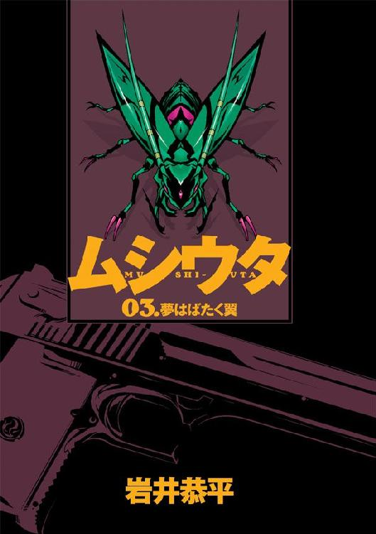
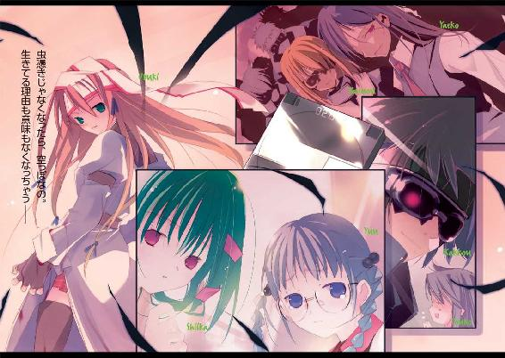
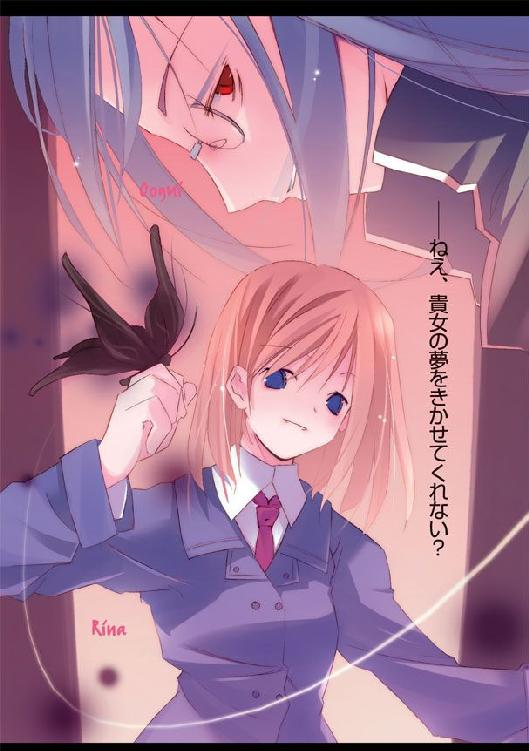
ムシウタ
03.夢はばたく翼
岩井恭平
角川スニーカー文庫
本作品の全部または一部を無断で複製、転載、配信、送信したり、ホームページ上に転載することを禁止します。また、本作品の内容を無断で改変、改ざん等を行うことも禁止します。
本作品購入時にご承諾いただいた規約により、有償・無償にかかわらず本作品を第三者に譲渡することはできません。
本作品を示すサムネイルなどのイメージ画像は、再ダウンロード時に予告なく変更される場合があります。
本作品は縦書きでレイアウトされています。
また、ご覧になるリーディングシステムにより、表示の差が認められることがあります。
ムシウタ
０３．夢はばたく翼
ＣＯＮＴＥＮＴＳ
口絵・本文イラスト／るろお
プロローグ 0.00 The others
転がるようにして、一人の少女が崖の上に着地した。
「......っ！」
背中から木に激突し、呼吸が詰まる。
だが少女は痛みに構わず、すぐに身を起こした。四つんばいに這って、切り立った崖のふちへと近づく。
「ああ......ああああ......」
喉の奥から、自分のものとは思えない呻き声が漏れた。顔を覆おうとして途中で硬直した両手に、涙の滴がこぼれ落ちる。
真っ赤な明かりが、少女の異様な外見を照らしていた。
顔を覆っているのは、二つのレンズ体──昆虫の複眼を思わせる物質。そこから首筋へ伸び、背中に生えた二対の黒い翅へとつながっている。
シュルッ、という音とともに、複眼と翅が触手となって少女の体から分離する。先月、十三歳になったばかりの幼い顔が露になる。触手は真っ黒な躰をした小さな生き物──四つの翅と二本の脚を持つ、トンボにも似た物体へと変形する。
「ああああああ......」
眼前の光景を受け入れることも、また拒否することもできず、ただ絶望の声を上げることしかできない。首に下げたネックレスの先で、金色のリングが揺れる。
──自分が育った島が、燃えていた。
崖から一望できるくらいちっぽけな町から、炎が上がっていた。町だけではない、港に泊まるほんの十数隻の船も真っ赤な舌に呑まれている。炎を逃れているのは島を囲む海と、少女がいる丘だけだ。
「......ああ......」
町から、深紅の火炎が立ちのぼった。赤い明かりで染まった少女の瞳に、それはまるで巨大な怪物のように見えた。左右の長さが違う牙を生やした、異形の悪魔だ。
「......」
少女は両目を見開き、眼下の光景をじっと見つめる。
忘れない──。
人形のように無表情な顔で炎を凝視しながら、少女はネックレスを握る。
忘れない......みんなの声、痛み、最期の顔──絶対に、忘れない......。
少女の背後に、人の気配が生まれた。
「見つけた......私の、可愛い子」
若い女の声がした。続けて、いくつかの声。
「報告が入りました、副本部長。〝三匹目〟らしき姿は確認されていないとのことです」
「いくらなんでもやりすぎだ、魅車くん......！ 島を丸ごと消すなんて......！」
両目を見開いたまま、少女はようやく背後に現れた気配の正体を知った。
こいつらが......〝先生〟や、みんなを──。
土の上で拳を握りしめ、少女は背後を振り返った。
「......っ！」
ビクリッ、と少女は全身を震わせる。
鼻が触れあうほど間近で、美しい女性が涙を流していたのだ。真っ白なスーツを着た、長身の若い女だ。
「ごめんなさい」
触れそうなほど近くで、女の唇が動く。細い目の下にあるホクロが、透明な涙に濡れている。赤い唇から漏れた声は、慈愛に満ちていた。
「私たちのしたことは、とても残酷で、悲しいことだと思います」
とうとう、少女と女の額が触れる。
少女の頭が混乱する。
いきなり現れ、少女を抱いて涙を流す女──こんなにも優しく自分を包み込む人物が、少女の故郷を燃やしたというのだろうか？
だが、そんな少女の困惑はすぐに跡形もなく砕け散った。
「でも」
たがいの額をあてた状態で、女の濡れた瞳が少女を見た。
「許してくれますよね？ だって、私はこんなにもあなたのことを愛しているんですもの」
少女の呼吸が、止まる。
女性が、微笑んでいた。糸のように細いまぶたの奥で、女の目が自分を凝視していた。
「あなたも......私を愛してくれますね？」
かぎりなく優しい声。愛おしげな笑み。
だが少女の体の奥から、思い出したように震えがわき起こっていた。まるで発作のように、少女の体がガクガクと震えだす。
自分の思い違いを、呪う。一度は感じた安心感が消え去り、少女は確信する。
こいつは、敵だ。
それも今まで少女が出会ったことのない、想像もできないような恐ろしい敵だ。
怖い──。
怒りも、悲しみも忘れていた。
助けて、〝先生〟──。
「こんなに怯えて、かわいそうに」
女が少女を抱きしめながら、言う。
「本部長。今回の任務の責任は、貴方にとっていただきますわ」
「な......！ ど、どういうことだ！」
「ご安心ください。ちゃんと次の後任者は決まっていますから。あの方にすべてをお任せすれば、特別環境保全事務局は大丈夫......」
女の吐息が、少女の耳にかかる。
「もう、怯えることはありません。あなたのようにかわいそうな子たち、すべての虫憑きを、私たちが愛してあげますから」
何もかもが真っ赤に照らされた崖で、少女はただ震えるしかできなかった。
1.00 夕 Part. 1
塾の正面出口を出ると、外はもう真っ暗だった。
おまけに、雨が降っていた。土砂降りだ。
すぐそばで、蛍光灯が点灯する。大きな電球をいくつもつけた床置きの看板に、スイッチが入ったのだ。
──前から思ってたけど、どーして塾のとなりのテナントにエッチな......その......ふーぞくとかが入ってるわけ？ これって情操教育に影響があるんじゃないの？
眩しさに目を細めつつ、つま先でこっそりと看板の端っこを叩く。店先で傘をさした男がこちらを見た。慌てて視線をそらし、何気ないふうを装う。
立ちつくす自分の横を、傘を持った生徒たちがぞろぞろと帰っていく。
雨音、生徒たちの別れの挨拶、通りを歩く人々の水たまりを蹴る音、それらが他人事のように目の前を通り過ぎていく。
「......」
ポケットから二つ折り式の携帯電話を取り出し、液晶画面を開く。ＰＭ８：54という時刻と良好な電波状態を示すアイコンが映し出される。ディスプレイの下には、友達とゲームセンターで撮ったプリクラが貼ってある。
海老名夕。中学二年生の十四歳、再来月からは三年生だ。地味な服装と地味なメガネの相乗効果で、顔つきまでも地味に見える。そういえば、同じクラスの千絵にはよく「服、貸してあげようか？」とか「いい美容院、教えてあげようか？」と言われる。
「あーもう、夕。いっしょに帰ろうって言ったのにー」
声をかけられ、振り返る。友人の少女二人が、怒った顔で歩み寄ってきた。
「帰る方向がまったく逆なのに、いっしょにも何もないでしょ」
夕は小さなため息をつく。二人が顔を見合わせる。
「明後日のために材料を買いに行くの。ねえ？」
「そーそー。明日じゃ、もう遅いっしょ？」
「明後日？」
言われて、思い出す。
明後日は二月十四日、ヴァレンタイン・デイだ。二人は手作りでチョコを作るつもりなのだろう。気になる相手のいない夕にとっては、まったく存在価値のないイベントだ。
「私はそんなの興味ないし......う」
友人二人にそばに寄られ、夕は顔をしかめる。
同い年、いや少なくとも三ヶ月以上は夕のほうが早く生まれたはずなのに、この身長の差は一体なんなのだろう。
「あ、あんまり近づかないでってば！ ほら二人とも、一歩下がる！」
「夕ったら、まーた身長のこと気にしてんの？ ムダムダ、もう諦めなさいって」
「これから伸びるの！ ......って、なんですぐに私を囲おうとすんのよ！」
「ミステリー！ 捕まった宇宙人の図ー」
「私は地球人の日本国籍よ！」
二人に脇をかためられ、夕はジタバタともがく。
「夕のプライドの高さと諦めの悪さは、天然記念物モノだよねー」
「頭をなでながら言わないでっ！」
「ゴメンゴメン、明日の課題あたしらでやってきてあげるから、許して？」
「いい。自分でやるもん」
言いながら、しまったと思う。〝やるもん〟なんて言葉は、いかにも子供っぽい。案の定、背後で二人が噴き出すのが聞こえた。夕はますます不機嫌な顔をする。
「あはは......ねえ、それより、ケータイ見て何してたの？ 帰らないの？」
「傘、忘れちゃったの！」
「あ、だから家の人に迎えに来てもらおうとしてたんだ」
「んー」
握りしめた携帯電話を見下ろし、唸る。
「でも、迎えに来てもらうほどでもないかなって。他の方法を考えてたところ」
「あたしらに傘を借りようとか、いっしょに入って帰ろうとかって思いつかなかったの？」
「だって、悪いじゃない。帰る方向、違うし」
「ゼンゼン人を頼らないのも、夕らしいっちゃらしいけどね」
「ねー？ ......なんかウチら、信用されてないって感じ？」
「ち、違......！」
あわてて否定しようとする夕を見て、少女たちがニヤリと笑う。
「立ち直りが早いのも、夕の得意技だよね。あたしらに怒ってたんじゃなかったっけ？」
ハッとして、背を向ける夕。また友人たちの笑い声が飛び交う。
「ゴメンゴメン、謝るから怒らないでよ、ね？」
「謝るから、ついでに明日の課題見せて！」
「結局、私がやることになるんじゃない。いいけどさあ」
「だって、夕だけなんだもん。塾の課題まで、いつもカンペキにやってくるの。今からそんなに勉強して、夕ってドコの高校受けるつもりなわけ？」
「どこって......その......東......」
「え？ どこ？」
「......桜架東」
「はあっ？」
友人たちが大げさに驚く。
「桜架東って、普通の中の超ふつー高じゃん！ いちおう進学校だけどさあ」
「夕ってもっと成績、良かったよね？ なのに、なんでそんなに必死に勉強してるの？」
二人に問い詰められ、夕はますます声を小さくする。
「だって、勉強しないと不安だし......」
「夕が、落ちるわけないじゃん！」
「不安なのが、ヤなの！」
ムキになって、言い返す。
二人は、分かっていないだけだ。今の時代、普通に生きていくことがどんなに難しいことか。ちょっと道を間違えただけで、簡単に落ちぶれてしまう。もし高校受験で失敗し、何かの間違いでどこにも受からなかったら、どうなるか。翌年に受かったとしても、同学年に同い年のクラスメートはいない。友達もできない三年を過ごした上に、あろうことか大学受験まで失敗してしまったら、目もあてられない。
二人の少女は、別れの言葉を残して帰っていった。帰り際に「本当に送ってくよ？」と言ってくれたが、夕は断った。二人はちょっと寂しそうな顔をしていた。
「さて、と」
降りしきる雨を見上げ、夕は考える。
家へ帰る邪魔をしているのは、この雨だ。傘か、もしくは迎えの車があれば、問題は解決する。だがその両方を、夕は放棄した。
残された方法は二つ。雨が止むまで待つか、雨に構わず走って帰るかだ。
前者は、望ましくない。なぜなら夕はすぐにでも家へ帰って、予習復習をしたいから。
「よしっ」
気合いを入れて、肩からかけていたカバンを抱く。自分の体は乾いたら元に戻るが、参考書はいちど濡れてしまうとそうはいかない。
通りへ飛び出すと、すぐに冷たい雨が顔を打った。メガネのレンズが、あっという間に滴で濡れる。
目指すは次の曲がり角、交差点にあるビル。そこまで行けば、とりあえず屋根がある。
帰ったら、ママに怒られるかな──。
走りながら、夕は考える。
ずぶ濡れで帰った夕を見て、母は怒るだろう。どうして迎えに来るよう連絡をよこさなかったのかと。
さっきの友人は、笑うだろう。結局、濡れるなら、意地を張らずに頼ればよかったのにと。それともまた寂しそうな顔をするだろうか。
でも、〝家へ帰る〟っていう目的は果たせるもん──。
夕は、実はイライラしていた。模試の結果が、思っていたよりも悪かったからだ。その上、月謝を払い込む日を間違え、お金を持ってきたのがムダになった。そこへ、この雨である。普段は、備えすぎて憂いがあるほど、先の出来事には神経を使ってきたのに。
今日は、どうも日が悪い。今日の夕は、いつもの夕らしくない。こんな日は一刻も早く家に帰り、明日の授業の予習をするのが一番だ。
「はあっ、はあっ」
もう少しで目的のビルだ。そこまで行けば、バスの停留所が見える。バスがやってくるまで雨宿りをしていよう。
そんなことを考え、ラストスパートをかけようとした時だった。
「......」
バシャリ、と夕は水たまりの上で足を止めた。
呆然と、その場に立ちつくす。
心臓が、体の内側から激しく胸を叩いていた。
全力疾走をしたせいで酸素を欲しているはずなのに、呼吸がピタリと止まっていた。横を通り過ぎる通行人の足音が、やけにはっきりと聞こえる。
違う。見てない。私は何も見てない──。
必死でそう思いこもうとした。
だが、ムダだった。
考えまいとすればするほど、たったいま一瞬だけ見えた光景が脳裏に蘇る。
背の高いビルに挟まれた狭い路地。通りの街灯の明かりがやっと届くような裏道だ。
──そこに、人の脚のようなものが見えた気がしたのだ。
鼓動はますます高鳴っていく。
で......でも、あくまで〝脚のようなもの〟だもの。本当にそうなのかは......分かんない。だってピクリとも動いてなかったし──。
自分の考えたことに、ぞっとする。
前言撤回。動いていないから、人の脚ではないとは言い切れない。動かない原因があるのかもしれない。たとえば、死──。
「け、警察......」
やっと口を出た言葉を、自分で否定する。
ダメ、だってまだ人の脚って決まったわけじゃないし......もし違ったら、迷惑になっちゃう。ひょっとしたら、新聞とかに載っちゃうかも。お騒がせ中学生とか書かれて──そ、そんなことになったら、もう学校に行けない......！
夕いがいの通行人は、誰も気づいていないようだ。
誰かを呼び止めて確認してもらう、という選択肢が浮かんだ。だが、思いとどまる。もしかしたら、本当にただの見間違いかもしれない。こんなに動揺している自分がバカなのかもしれない。そう思うと、誰に助けを求めるわけにもいかなかった。
人間かもしれない。人間じゃないかもしれない。
夕の胸に、嫌な感覚がひろがる。
夕が最も嫌う感情、不安だ。こうなると、じっとしてはいられない。一刻も早く、不安な状況から脱して、安堵に浸かりたかった。
「人じゃない、人じゃない。うん、あれは人なんかじゃない......」
夕の導き出した答えは、〝勘違いだったと思いこむ〟だった。
で、でも......本当に人だったら──。
それも病気か怪我か、すぐにも助けが必要な人だったら？ それこそ、本当に彼（彼女？）は死んでしまうかもしれない。このまま家へ帰っても、不安は消えない。それどころか、ますます強まりそうだ。
不安を取り除くために夕に残された手段は、一つだった。
夕は振り返り、暗い横道に入る。
最後の手段、〝確かめる〟を実行するためだ。
「人じゃない、人じゃない......」
決して顔を上げず、一歩一歩、足元を確認しながら暗い道を歩いていく。カバンを抱きしめながら歩く自分の足と、ほんの一メートル先の砂利が視界を通り過ぎていく。
通りの明かりと雑踏が、遠のいていく。
......だ、だってチラッと見えただけで、本当に一瞬だったもん。あれで人の脚だなんて分かるわけない。ただの布か何かで、私はホッとして家に帰る。そ、そうだ、帰ったら千絵ちゃんにメールしなきゃ。それから予習復習して、明日の課題を──。
「......」
夕は、足を止めた。
それまでうるさかった心臓の音すら、聞こえなくなっていた。半開きになった口から、何か言葉が漏れたのが聞こえた。
夕の足の前に、地面に投げ出された二本の脚が現れていた。
「......」
体が、急に震え出す。見たくないという意思とは裏腹に、目が脚の持ち主をたどっていく。
見知らぬ少年が、倒れていた。五段しかない石の階段に背をあずけ、蒼白な顔を雨に晒している。薄く目を開き、微動だにしない。白い布をつなぎ合わせた服は、病院の入院患者が着ているような薄着だった。
夕は、少年が死んでいるのかと思った。思わず悲鳴を上げそうになるが、何かが地面に落ちる音に先を越されてしまう。
裸足の少年の足元に、一枚の板のようなものが転がった。夕の手のひらに収まりそうな薄い透明ケースの中に、円形のディスクが収まっている。
「ひっ......！」
夕は、小さな悲鳴を上げた。
小さなムカデが、少年の腹にのぼってきたからだ。怪我をしているのか、ムカデは緑色の血を流し、身悶えていた。だが夕が見ている前でムカデの輪郭がぼやけ、そして──。
「き、消え......！」
ムカデが、虚空に溶けるように消えてしまう。その時になって気づいたが、今のムカデはどこか奇妙だった。脚がやけに長く、やけに大きな口を拡げていたような......。
少年の口が、動いた。
「レイ......ディー......」
「......っ！」
心臓が止まるかと思った。
夕は彼が死んでいるのかと思ったが、違った。薄く開いた目は一回だけまばたきをし、胸も規則正しく上下している。
だが死んでいないとはいえ、寝ているわけでもなかった。作り物のように生気のない眼はまったく動かず、青ざめた顔はまるで蠟人形のようだ。
夕の背筋に冷たいものが走る。
「け、警察......じゃなくて、救急車──」
我に返り、携帯電話を取り出そうとする。
だが、少年の手から激しい雑音が響いた。
地面に投げ出された少年の手が、白い塊を握っていた。
ゴーグルとでも呼ぶのだろうか。眼鏡にも似た、だがそれにしては大きすぎる物体である。
分厚いレンズは、液晶になっているのだろう。表面に小さな文字のような光点が浮かんでいる。側面にはボタンやダイヤルが備わっており、装着したら耳まですっぽり隠れてしまいそうだ。一見しただけで、かなりの重量があることがわかる。ノイズはゴーグルから聞こえてくるようだった。
音に驚いたせいで、携帯電話を落としてしまう。地面を転がり、点滅するゴーグルのそばで止まる。
「う......」
すぐに拾おうと手を伸ばすが、少年に近づくのを体が拒否した。上半身を遠ざけ、腕だけを伸ばす。
『......録音の......容量をオーバー......止します......録音の時間......をオーバー......』
ノイズに混じり、人の声が聞こえた。
繰り返し、何かを喋っているようだ。夕は顔をそらし、携帯電話に向かって手を伸ばす。
「なんなのよ、もう......！」
指の先に金属の感触があった。つかんで引き寄せる。
『確認......再生......』
「......！」
自分の手が握っていたのは携帯電話ではなく、白いゴーグルだった。冷たい感触とずっしりと重たい重量に、反射的に投げ捨てそうになる。
『レイディー......』
夕の手が、ピタリと止まる。聞こえたのは、先ほど聞いたばかりの声──倒れた少年のものだった。
『君と......っしょに、戦いたかった......』
夕は、ゴーグルを凝視する。
重く、強く、しかし切ない声だった。
「......」
夕は身動きがとれなくなっていた。
たった一言の少年の声が、夕の胸を貫いていた。これまで聞いたどんな声よりも、映画やテレビドラマの一シーンよりも、夕は少年の声に心を奪われていた。
『......今、君はどうしてるのかな？ いや......そんな質問は意味がないか。君は今も戦ってるにきまってる。君はそういう人だ』
走りながら喋っているのだろう。少年の声は、弾んでいた。わずかに聞こえるのは、水たまりを蹴る音だ。
『──レイディー』
夕は、顔を歪めた。
どうしようもない不安を、夕は感じ取っていた。
今まで感じてきたものの中で最も強く、得体の知れない不安だ。
『自分の痛みを隠し、人の痛みを抱え、君は戦い続ける......だから俺たちは、すべてを君に委ねられる。戦場に行く兵隊の気持ちなんて知らないけれど、きっと似たような気持ちなのかもしれない。俺たち一人一人は、ただの兵隊にすぎない。敵を一人倒せば、同じように俺たちの中の誰かが倒れていくんだろう。でも......でも、振り返れば、君がいる。君がいるんだ。......それが分かっているだけで、俺たちは君の盾となることができる。もういちど、君といっしょに戦いたかった、レイディー......』
足音が、止まった。声がか細くなっていく。
──もう、やめて......！
夕は悟ってしまった。
この少年は、命を削って喋っている。今にも倒れようとしている。──夕がまだ対面したことのない、生命の危機に少年は晒されている。
そして今、夕は彼の言葉に聞き入ってしまっている。
自分の意思とは関係ない、ある予感があった。
この声を聞き続けてしまったら、夕はきっと──。
『俺の〝虫〟は、もうダメだ......もうすぐ俺は、また欠落者になるだろう......敵から奪ったゴーグルだが、録音機能があるらしい。〝むしばね〟の誰かに拾われることを願って、ディスクを残す。このディスクはレイディー、君だけに見てほしい。他の誰が見てもいけない。レイディー・バード、君だけだ』
苦しげに喘ぐ声に、ふいに笑みが混じった。
『ふっ......いや、君いがいにもう一人、見せてやりたいヤツがいたよ。俺たちの最大の敵、〝かっこう〟......あいつにコレを見せつけてやるのも、おもしろいかもしれない。あいつが見たら、どうなるかな。自分たちのしていることに気づいたら......』
少年が嘆息したのが、はっきりと聞こえた。......どんな状況に陥れば、こんなにも重いため息がつけるのだろう──。
『レイディー......レイディー......！』
声に、力がこもる。
『もういちど、君といっしょに戦いたかった......！ 日々野一房、いや、君を守る兵隊の一人、センティピードとして......』
少年の声が、終わる。あとは沈黙のみが続いていた。
「......」
夕は、呆然と手の中を見下ろす。握りしめたゴーグルに、水の滴が落ちた。
雨かと思ったが、違った。
「......あ......？」
自分が涙を流していることに、ようやく気がつく。
いつから、夕は泣いていたのだろうか？
聞くんじゃなかった──。
頭の奥、冷静な部分が、予感の的中を確信する。
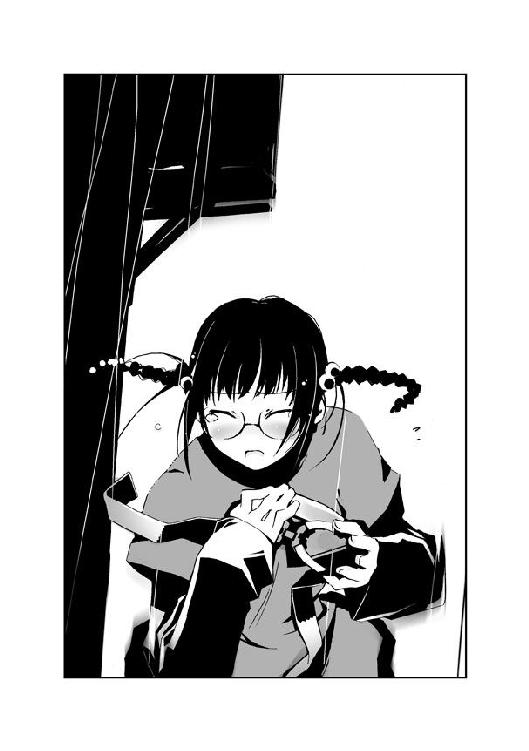
私はこの人の〝遺言〟を聞いてしまった──。
少年を見る。
虚空を見つめる少年は、動かない。彼はもう二度と自分の意志で動くことはないだろう、そんな確信を抱く。
彼が何者かは、分からない。
彼が誰に対して語っていたのかも、分からない。
だが、彼の強い想いを、夕ははっきりと感じてしまった。
彼は誰かのために......レイディーという人物のために、戦っていた。何と戦っていたかは知らない。だが間違いなく彼は戦っていた。たった一人の人物、レイディー・バードのために。彼の想いのすべてが、録音された短い言葉に満たされていた。
倒れた少年、センティピードの足元に転がったディスクを拾い上げる。これが、彼の言っていた〝ディスク〟だろうか？
「け、警察に......」
夕は、塾のある通りを振り返る。
少年の身に何が起きたのか、理解するにはほど遠い。だがただ事じゃないことだけは、分かった。何かの事件かもしれない。
突然、ゴーグルから怒声が響いた。
『てめぇ......センティピードっ！』
驚き、夕はゴーグルを落とす。
『〝むしばね〟のくたばりぞこないがっ！ ゴーグルを盗ったくらいで、この〝霞王〟様を出し抜いたつもりか？ てめぇの居場所はもう分かってんだよ、すぐに行ってぶち殺してやるからな！』
地面に落ちても、怒鳴り声ははっきりと聞こえた。男のような言葉遣いだが、声は高い。声の主は少女のようだ。
『言っとくが、警察に逃げ込んでもムダだぜ！ てめぇが虫憑きだってことは、連中にも知らせてあるからな！ ディスクを持ってるヤツを見かけたら、射殺しても良いって本部長から命令が下ってるんだよ！』
夕は目を見開く。
「む、虫憑きっ......？」
倒れた少年を見る。少なくとも外見は、普通の少年に見える。
〝虫〟──。
その存在が噂されだしたのは、十年ほど前だという。
少年、少女に寄生し、夢や希望を喰って成長するといわれている存在。大きさや特徴は異なるが、共通して外見が昆虫に似ていることから〝虫〟と呼ばれるようになった。〝虫〟に寄生された人間、〝虫憑き〟は二度と〝虫〟から解放されることはない。〝虫〟の力を自由に使えるようになる代償として、自らの〝夢〟を捧げることとなる。そして夢を喰い尽くされた虫憑きは、死に至る──。
〝虫〟の存在は、公式には認められていない。しかし人々の目撃情報は跡を絶たず、現在では〝虫〟や虫憑きは恐怖の存在として差別されるまでになっていた。
「虫憑き......ほ、本当に......？」
夕はハッとする。
「──そ、それよりも今、射殺って言ったの？」
ディスクを持っているヤツ、それは今、夕のことを指しているのでは？
心臓が、再び激しく高鳴る。
逃げよう──。
今まで生きてきた中で、最大級の不安が夕を責め立てていた。
ディスクを捨てて、逃げよう。私は何も見てないし、何も聞いてない──。
「......！」
夕は息をのんだ。
倒れた少年、センティピードが夕を見つめていた。
1.01 詩歌 Part. 1
詩歌は、雑踏の中に佇んでいた。
うつむいた詩歌のそばを、人々が通り過ぎていく。
一人の女性が、詩歌に近づいてきた。ティッシュを渡そうとしているようだ。
「......」
だが、詩歌は顔を上げない。その顔は、わずかに青ざめていた。
ティッシュの女性はしばらく詩歌を見ていたが、諦めたのか、遠ざかっていく。
ほっとしたのもつかの間、今度は数人の少年たちが詩歌を取り囲んだ。小柄な詩歌を見下ろし、何かを喋っている。
少年の一人が身を屈め、うつむいた詩歌の顔をのぞきこんだ。
「......！」
ビクリ、と肩を震わせ、詩歌は後退る。
間近に顔を寄せる少年の瞳は、何も映していなかった。目の前にいる詩歌はもちろん、光すらも反射していない。少年たちの声は、詩歌のはるか頭の上から聞こえた。
詩歌は唇を嚙み、じっと少年たちが去るのを待つ。
通り過ぎていく人々は、詩歌を振り返ることは決してない。無機質な顔で、機械的に歩いていく。談笑している中年の女性たちが視界に入るが、その声も頭上から聞こえた。
視界の限り、街並みが拡がっている。
だがこの中で生命あるのは、詩歌たった一人だけだ。感情のない街、それはかつて詩歌が収容されていた隔離施設〝ＧＡＲＤＥＮ〟を思い出させる。
欠落者の街、〝ＧＡＲＤＥＮ〟。
虫憑きが自らの〝虫〟を殺されると、一切の感情を失った〝欠落者〟になる。己の意志を失い、外部からの命令しか受けつけない抜け殻だ。虫憑きは自分の〝虫〟に夢を喰い尽くされるのを怖れ、〝虫〟を殺されて欠落者になることも怖れる。いちど欠落者の状態に陥った虫憑きは、二度と元の状態へ戻ることはない──今までは、そう言われていた。
だが数ヶ月前、はじめての蘇生者が現れた。
「......ダメ......！」
詩歌の服、入院患者が着るような白い薄着の中から、一匹の昆虫が姿を現した。
真っ白な躰をした蛍だ。だが本来の蛍とは異なり、躰そのものを青白く輝かせている。
蛍が翅を拡げ、飛び立とうとする。だが詩歌は手で押さえ、〝虫〟を制する。
私は、大丈夫だから......！
心の中で、必死に呼びかける。蛍はじっと詩歌の顔を見ていたが、やがて翅を閉じていく。
──杏本詩歌は、欠落者の状態から立ち直ったはじめての虫憑きだ。
数ヶ月前、欠落者から生き返った彼女を巡り、激しい戦いが繰り広げられた。虫憑きに射した一筋の希望として、虫憑きたちがこぞって詩歌を手に入れようとしたのである。
戦ったのは、二つの組織。表向きは調査機関とされている特別環境保全事務局と、虫憑きによって結成されたレジスタンス〝むしばね〟である。特別環境保全事務局は虫憑きによって虫憑きを捕獲・隔離し、公式発表通り〝いなかった存在〟にするための政府機関だ。
戦いは特別環境保全事務局の勝利に終わった。一人の虫憑き〝かっこう〟が〝むしばね〟のリーダー、レイディー・バードという少女を倒し、杏本詩歌を捕らえた。リーダーを失った〝むしばね〟は分裂状態となり、詩歌は特別環境保全事務局の監視下におかれることとなった。
それが、今から約二ヶ月ほど前の出来事である。
詩歌は多くの虫憑きから夢を奪ってしまった。詩歌の力は強すぎる。ほんの少し我を失ってしまっただけで、視界が荒野に変わる。
「もう怖がったりしないから......」
顔を上げ、無感情な街を見つめる。
もう二度と、逃げてはいけない。
逃げてしまっては、彼との約束を果たすことはできない。
大助くん──。
どこにいるかも分からない少年に向かって、心中で呼びかける。
「......！」
閃光が、詩歌の視界を埋めた。
目を細めた詩歌の前から、街並みが消え去った。それまでの出来事が幻だったかのように、建物も人々もなくなっていた。
詩歌が立っているのは、ドーム状の広大な空間だった。
天井の高さは、ゆうに数十メートルはあるだろう。剝き出しになった鉄骨にぶら下がった照明に混じって、いくつものスピーカーが据え付けられている。街の雑踏や人の声は、そこから聞こえていたのだろう。
ちょっとした球場くらいはありそうな面積に、動く姿は詩歌しか見あたらない。ところどころに複雑そうな機械が置かれ、それらがすべてケーブルで繫がれている。頭上から聞こえる音は、空調が働いているのだろう。
詩歌を連れてきた白衣の人物たちは、ここを『シェルター』と呼んでいた。東中央支部にいた時の施設と同様、ここもまた地下深くにある空間だった。
地響きのような震動が、足元から響いた。
シェルターに出入りする唯一の門が、ゆっくりと開きつつあった。とても人力では動かせそうにない分厚い門だ。
「......」
いつもの白衣たちが、詩歌を迎えに来たのだろう。ここ、特別環境保全事務局の本部に移送されて一ヶ月間、繰り返してきた光景だ。
しかし、詩歌の予想は外れていた。
シェルターに足を踏み入れたのは、白いスーツを着た女性だった。はじめて見る人物である。
歩いてやってくるのは女性一人ではない。スーツを着た小太りの男と、いつもの白衣たちも付き従っている。
また彼女たちの後方には、数人の白ずくめの人々が控えていた。顔を白い金属製のゴーグルで覆い隠し、異様な作りのロングコートを纏っている。機能性よりも防御性を重視したかのような厚いコートで、ところどころに大きなベルトが巻きついていた。
「やっと会えましたね、〝ふゆほたる〟」
先頭の女性がにっこりと笑みを浮かべ、顔を近づける。
「ごめんなさい、私はひどい近眼なんです。眼鏡も嫌いだから、こうしないとよく見えないの。さあ、顔をもっとよく見せてください」
微笑み、女性がさらに顔を近づける。
「......？」
詩歌は眉をひそめる。
間近に迫った女性の顔は穏やかで、安心感さえおぼえさせる。糸のように細い目と、目尻に浮かんだホクロが印象的だった。歳は二十代の半ばくらいだろう。詩歌を怖れるどころか、親しげに接しようとしているようだ。
だが、背後に控えた人物たちの態度は、対照的だった。詩歌を見る恐怖の眼差しはもちろんのこと、先頭の女性とも一定の距離を置いているように見える。
吐息がかかりそうなほど顔を近づけられ、詩歌は思わず後退る。
女性の顔から、笑みが消えた。
「あ......」
詩歌の背筋に、悪寒が走る。
ほんの少し遠ざかっただけで、女性の双眸が詩歌を凝視していた。得体の知れない恐怖に襲われ、詩歌の呼吸が止まる。足元から、見えない鎖が這い上がってきたかのようだ。
これまで数々の死線を越えてきた詩歌の警戒心が、最大級の警報を鳴らしていた。
この人物は、危険だ──。
「ええ、無理もありませんね。まだ会ったばかりですもの」
背筋を戻した女性は、また笑顔を浮かべていた。
「まだ、分かっていないだけですよね？ 私がどれくらい、あなたを愛しているか」
「......も、もう良いでしょう、副本部長！ あとはモニターで観察を！」
おさえていたものを吐き出すように、傍らの中年男が言った。詩歌を見る目に、はっきりと怯えの色が見て取れる。
「見た目はただの少女ですが、〝これ〟は紛れもなく秘種一号の虫憑きなのです！ 万が一のことがあったら、このシェルターでも耐えきれるかどうか......」
「万が一？ それはあり得ません、猪瀬管理官」
「は？」
「これからは、彼女も私のことを愛してくれますから」
女性が、そっと詩歌を抱きしめる。
「こんなことをする私たちを、許してください。でもみんな、あなたのためなんです。あなたを恐ろしい〝虫〟から解放するためなんですから」
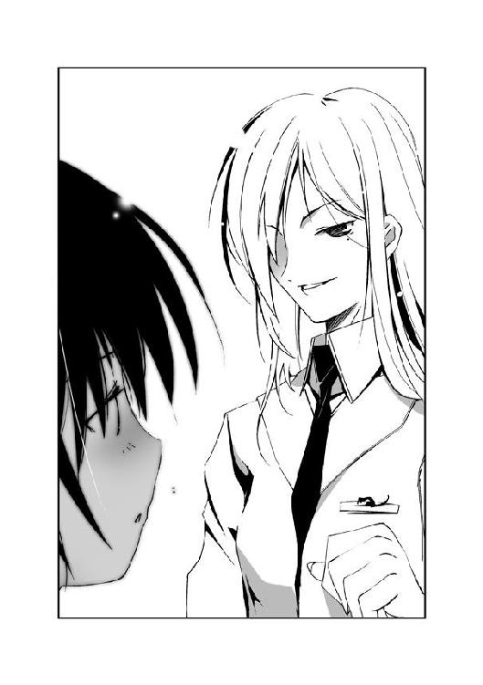
優しい声音が、詩歌の耳元で囁く。詩歌の警戒心が、意思とは裏腹に解かれていく。
「そんな、副本部長......！ 相手は虫憑き──」
「疑うのですか、猪瀬管理官？」
女性が振り返り、屈託のない笑みを浮かべる。
「私たちの愛を」
一瞬にして、沈黙がシェルターを包んだ。
「い、いえ......」
うつむいた猪瀬が、声を絞り出す。ぽたり、と汗の滴が床に落ちた。
「ここから出ましょう、〝ふゆほたる〟」
女性が、言った。猪瀬がうろたえる。
「い、いけません、副本部長！」
「なぜですか？」
「本部に収容しているとはいえ、〝ふゆほたる〟は特別環境保全事務局共有の素体！ レベル乙以上の実験を行うには、全支部の同意が得られないと局長の許可を申請できないことになっています。少なくとも、国外出張中の本部長の意向を伺わなければ......」
「あの方の不在時にこそ、我々部下の能力が試されるのです。そうでしょう？」
「は、しかし──」
「もうこんなところは、飽きたわよね？」
副本部長という女性が、詩歌に問いかける。詩歌は何と答えれば良いのか分からない。
「ほら、ね？ 彼女も退屈と言っています」
女性がにっこりと微笑む。
「い、いえ、その」
「実験の現状は？」
「......立体映像によって形成された擬似的な生活空間に送り込むことによって、各データを集計しています。さすがに現実の街に送り出すわけにもいかないので......通常の虫憑きとの相違を確認した時点で、次の段階へ──」
「至急、〝ふゆほたる〟の移動の準備をしてください。いいですね、実験班班長？」
白衣の人物が、ひきつった声を上げる。
「はっ、はい！ あ、いえ、あの......まだじゅうぶんなデータが......」
「もう行かないと。ごきげんよう、私の可愛い子」
抱きしめた腕をほどき、女性が両手で詩歌の顔を包む。
「私は、魅車八重子。特別環境保全事務局の副本部長です。おぼえていてね」
詩歌の鼻先で、八重子がゆっくりと口を動かす。
「ミ・グ・ル・マ・ヤ・エ・コ、よ？」
にっこりと微笑み、詩歌の額に軽く唇をあてる。
「行きましょう、猪瀬管理官」
「は、はい」
八重子が身を翻す。「さあ、もう一人の一号指定の様子を見に行きましょうか。眠り姫の状態は──」「か、変わらず何の反応も──」という八重子と猪瀬の会話が聞こえた。
「〝ふゆほたる〟をＦ棟へ移動させるんだ」
班長と呼ばれた人物が言い残し、さっさとシェルターを去っていく。
残されたのは、五人の白コートたちだった。詩歌でも分かる。彼らは東中央支部の〝かっこう〟と同様、中央本部のエージェントたち──つまり虫憑きなのだろう。
詩歌は唇を嚙み、促されるまま歩き出す。
大丈夫、私は耐えられる──。
どこへ連れて行かれようと、たとえどんな目に遭おうと、自分は耐えられる。
詩歌を待っていてくれると、そう信じられる人がいるから。
利菜がずっと耐えていた痛みに比べれば、こんなの大したことないよね......？
心中で、かつての友達に話しかける。
立花利菜。レイディー・バード。〝むしばね〟のリーダーとして、〝ＧＡＲＤＥＮ〟での決戦で散った少女。彼女は最期まで、戦い続けた。自らの夢を喰い尽くされそうになりながらも、虫憑きたちの居場所を創るために。詩歌の胸の中でだけ涙を流した少女は、どれだけの痛みに耐え続けていたのだろう？
「あ......」
利菜と最後に会った時のことを、思い出す。
利菜が去り、詩歌の〝虫〟が暴走したあの場所。あそこで詩歌が見たもの。
どうして今まで、忘れていたのだろう。
詩歌の暴走による崩壊に巻き込まれ、跡形もなくなってしまったと無意識に思いこんでいたのかもしれない。だが、ひょっとしたら、まだ残っているかもしれない。
「あ、あの......！」
シェルターの出口に近づいたところで、詩歌は足を止めた。
白コートたちがぎょっとして詩歌から離れる。
「な、なんだ！ 抵抗するなら──」
「て、抵抗なんてしません。でも、あの......」
怯える白コートたちを見て、詩歌は自分がどれほど危険な存在なのか再認識する。
「欲しいものが、あるんです」
「......欲しいもの？」
「どこに連れていかれようと、抵抗する気はありません。だから......お願いします」
詩歌の申し出に対し、白コートたちは困惑しているようだ。小声で何か囁きあう。「副本部長に連絡するべきか......？」「だから俺はイヤだったんだ！ よりによって〝霞王〟をはじめ、上位局員が誰もいない時に副本部長が来るなんて！」といった会話が聞こえる。
「〝霞王〟たん、いま本部にいないの？」
ふいに、場違いな甘い声が上がった。
声の主は、一番後方に控えていた人物だった。子供っぽい口調とは裏腹に、背が高い。ゴーグルに加え、ターバンのような布で頭を覆っている。長い髪と、コート越しでも分かるスリムな身体つきで女性と分かる。
「黙っていろ、〝からす〟！ お前ごときが口を出す問題じゃない！」
「ふぅん。ほぉーう。なるほどねぇん」
仲間の叱咤も、長身の女性は意に介さない。顎に手をあて、何かを考えるように何度もうなずく。唐突に、女性が詩歌を見る。
「あのねぇ、ムリだよ、〝ふゆほたる〟たん」
「え？」
「何が欲しいのか知らないけど、外部からは一切なにも持ち込めないんだよん。特にＦ棟は厳重警戒態勢、あそこに連れて行かれた虫憑きはただの実験道具。点滴の他は、服や食事すらもらえるか分かんないくらいだよ」
詩歌の背筋に、冷たいものが走る。
大丈夫、私は──。
先ほど決意した心が、揺さぶられる。
「本来なら欠落者が連れて行かれる場所だからねん。その点、〝ふゆほたる〟たんは──」
「黙れと言ったろう！ 〝ふゆほたる〟を刺激するなっ！」
他の仲間が、長身の女性に摑みかかる。
どこからともなく、黒い影が現れて女性の肩にとまる。トンボにも似ているが、違う。四つの翅と八本の脚を持つ異形の生物だ。翅の付け根から伸びた二本の触手を揺らし、頭部の複眼がギョロリと詩歌を見る。驚く詩歌に向かって、牙を生やした口器を蠢かす。
「どうしてもソレ、欲しいの？ 〝ふゆほたる〟たん」
女性の言葉に、詩歌は我に返る。
「......欲しいです」
頷く。
この先、何があるか分からない。本音を言えば、怖くてたまらない。
しかし親友が遺したあの画がそばにあれば──約束を交わした人の姿がそばにあれば、詩歌はきっと耐えられる。
「どうしても？ 何とひきかえにしても？」
もう一度、はっきりと頷く。
女性が笑みを浮かべる。
「りょーかい。じゃあアタシの運命、〝ふゆほたる〟たんに預けるよん」
「......え？」
女性の肩の上で、黒い昆虫の体が変形した。
トンボの翅が触手に変わり、一瞬にして女性に巻きつく。触手は白いゴーグルとマントに溶け込み、黒く変色させていく。ゴーグルが変形し、昆虫の複眼にも似たレンズに生まれ変わる。コートが四股に裂け、女性の背中に細い四枚の翅が生まれた。
「お前......！」
仲間たちが色めき立つ。だが、女性の行動のほうが早かった。翅の付け根、背中から二本の触手が伸び、仲間たちの足に巻きつく。
「うあっ！」
二人が派手に転倒し、残る二人も巻き込まれる。
次の瞬間、女性の長身が詩歌に迫っていた。
翅を振動させ、短い距離を飛んだのだ。女性の腕が、詩歌を強く抱きしめる。
「きゃ──」
ぐん、と体が押されたかと思うと、あっという間に白コートたちが遠ざかっていた。
いや、違う。詩歌を抱いた女性が、翅を羽ばたかせて低空飛行したのだ。あっという間に詩歌たちはシェルターの中央にいた。
「なんのつもりだ、〝からす〟っ！」
シェルターの出入り口を、四人の虫憑きがふさぐ。警報が鳴り響き、門が閉じていく。
急加速による圧迫感に顔をしかめながら、詩歌は女性の〝虫〟を見る。
「この〝虫〟、〝かっこう〟くんと同じ......！」
「そーだよん。超レアな同化型。でもアタシは、彼と違って──」
『なにをしている、さっさと捕獲しろ！ 相手は無指定のザコだろう！ 〝ふゆほたる〟が暴走したら取り返しがつかないぞ！』
頭上のスピーカーから、怒声が放たれる。
「そ。めちゃくちゃ弱いンだよねー。だから、逃げるよ。しっかりつかまっててねん」
「逃げ......？」
詩歌の言葉は、急激な重圧によってかき消された。
〝からす〟という女性が、宙高く舞い上がったのだ。
先ほどまで静まりかえっていたシェルターを、警報と怒号が埋め尽くしていた。その中心にいるのは紛れもなく、詩歌と女性の二人である。
「ふつーの出口から逃げても、捕まっちゃうからねん。上から出よう」
〝からす〟の柔らかな胸に半分埋もれた視界を、物凄い速度で鉄骨が駆け抜けていく。
「......っ！」
今度は逆方向からの重力が、詩歌を襲う。〝からす〟が空中で急停止したのだ。危うく気を失いそうになる。
「さ、〝ふゆほたる〟たん、あれ壊して。あそこなら地上までつながってるはずだよん」
詩歌は顔を上げた。金属で覆われた壁に、穴が空いていた。人が一人くぐって通れるくらいの大きさだ。金網の向こうに、回転するファンが見える。空調のための換気口だ。
「あれくらい壊すの、簡単でしょ？」
「ダメ......です」
やっとの思いで、声を出す。
「へ？ 力、使えないのぉ？」
「使い......たくない」
「......あのね、〝ふゆほたる〟たん。こんな時にワガママ言ってるとメッ、だよ？ このまま二人とも捕まりたいのぉ？」
詩歌は唇を嚙み、首を横に振る。
いちど力を使ってしまうと、自分の〝虫〟を制御できるかどうか分からない。
詩歌がこの施設から逃げ出そうとしなかったのも、そのためだ。
自分の力は、数え切れない夢を壊していく──。
四年前、そして数ヶ月前の暴走で、詩歌は数百人もの虫憑きを欠落者にした。詩歌も同じ虫憑きで、親友の利菜も同じだ。彼ら一人一人が自分と同じであり、親友と同じように夢を抱いている。
詩歌には、もう耐えきれない。目の前で、大勢の虫憑きが最期の涙を流していくのを、二度と見たくはなかった。
同じ夢を抱き、戦い続ける虫憑きたち。立花利菜や〝かっこう〟とは違う、決して〝戦わない〟道を詩歌は選んだ。
「うーん、まいったねん。じゃあアタシがなんとかするしかないかぁ」
〝からす〟の背中から、二本の触手が飛び出した。金網に巻きつき強引にひきはがす。
次に触手が飛びかかったのは、ファンだった。高速回転するプロペラに、触手の先端があっさりと斬りとばされる。
「あぅっ......！」
〝からす〟の顔が、歪んだ。
〝虫〟のダメージは、宿主の精神にそのままはね返る。身に染みてそのことを知っている詩歌もまた、顔をしかめる。
下方から、羽ばたく〝虫〟につかまった白コートたちが近づいてくるのが見えた。
〝からす〟が自嘲気味に笑う。
「こんなものも壊せないなんて......たはは、自分の弱さがヤんなっちゃうよね」
「〝からす〟さん......」
「その名前で呼ばれるの、あんま好きじゃないんだ。初季って呼んでねん......！」
再び、触手がファンに立ち向かう。
「んっ......んんんっ......！」
何度も引き裂かれながら、触手はファンに立ち向かう。
「飛ぶことしか能のない無指定が！ 逃がすかっ！」
接近した〝虫〟の爪が、初季を狙って振りかぶられる。
初季の触手がファンをとらえた。金属がこすれる耳障りな音をたて、プロペラが停止する。
「あああっ！」
初季が渾身の力を込め、ファンを根元からひきちぎる。触手を振り回し、それを襲いかかった〝虫〟に叩きつける。
「ぐあっ！」
「はあっ、はあっ......！ 行くよ、〝ふゆほたる〟たんっ！」
詩歌の返事も待たず、初季が急加速する。紙一重で、残る三匹の〝虫〟たちの顎が、それまで詩歌たちがいた空間を嚙む。
「......！」
詩歌と初季は、光の届かない換気口へ突入した。
風が、詩歌の髪を激しくあおる。どうやって進路を見つけているのか、ろくに明かりもない換気口を初季は猛スピードでつき進んでいく。どこか別の場所につながっているのだろう、たまに見える明かりが左へ右へとものすごい勢いで遠ざかっていく。
「まずは赤牧市から脱出しないとねん......！」
初季の声が、聞こえたような気がした。
1.02 夕 Part. 2
日々野一房の濁った瞳が、夕を見上げていた。
夕は息をのみ、ディスクを握りしめる。
何も映さない少年の瞳が、夕に対して何を言おうとしているのか。
夕には、それが分かってしまった。
「ム、ムリよ......」
首を振り、後退る。
「だって私、レイディー・バードっていう人なんて知らない......それに虫憑きだなんて......」
少年はレイディーという人物にディスクを渡すために、このような姿になった。そして今、ディスクは〝カスオウ〟という人物に狙われている。警察も、そいつらの味方になってしまっているらしい。
『レイディー......しか、見てはいけない......』
雨に打たれるゴーグルから、再び少年の声が聞こえた。
紛れもない、センティピードの〝遺言〟だ。
夕は、ぐっと顔を歪める。
そんなの、卑怯よ──。
心の中で、目の前の少年を呪う。
夕はなによりも不安や恐怖といったものが嫌いな、普通の中学生だ。再来月から三年生になって、ますます勉強をするだろう。そして見事に（友人曰く、〝普通〟の）桜架東高等学校に合格し、平穏な三年間を送るのだ。大学受験の時も、いっしょうけんめい勉強するだろう。もちろん第一志望は、かぎりなく不合格しようのない凡庸な大学で──。
『だんまりとは観念したかよ、センティピード！ すぐにこの〝霞王〟様が引導を渡してやるぜ！ ......おい、〝Ｃ〟に伝えろ！ オレ様の予備のゴーグルにこいつの──』
〝霞王〟が大声で怒鳴り散らす。後半は、誰かそばにいる人間に向かって言ったのだろう。
『ぶっ殺してやる、センティピード！』
『レイディー......と、もういちど......った......』
ゴーグルから聞こえる二つの声が、夕の頭の中でせめぎあう。
『レイディー......』
──夕の中で、何かが弾けた。
「......ああああっっ！」
水たまりを蹴り、ゴーグルを拾う。ディスクとゴーグルを抱きしめて走り出す。
激しい雨に全身を打たれながら、路地裏を全力疾走する。勢いのまま大通りへ出そうになって、急に立ち止まる。
目立つところは、ダメだ。〝カスオウ〟は、警察も敵だと言っていた。
泣きそうな顔で方向転換し、細い裏通りへと踏み込む。頭はパニック寸前なのにどうしてこういう計算だけはできるんだろう、とやはり頭のどこかでクールに考える。
──どこへ行けばいい？ 〝カスオウ〟って誰？ レイディーって人はどこにいるの？
怖い。怖い。怖い。
自分はどうして、走っているのだろう？
今まで、危ないと思うことは避けてきた。体育でも怪我をしそうなことは絶対にしなかったし、欲しいものを見つけても、おこづかいは必ず前月分が残るようにした。冒険は天敵、一時の気の迷いなどもっての外だ。
──分からない、何も分からない！
今にも後ろから誰かが追いかけてくるようで、心臓は高鳴りっぱなしだ。それでも頭の中に、住み慣れた赤牧市の地図がひろがる。
とりあえず、冷静にならなくちゃ！ 誰にも見つからなそうな場所は......？
夕の脳裏に、塾から国道への近道である公園が思い浮かぶ。昼間ならともかく、この時間帯に近づくことなど普段の夕ならあり得ない。だが今は、そこしか思い当たらなかった。
『レイディー......』
「ひっ......！」
ゴーグルから少年の声が響いた。夕の心臓が破れんばかりに高鳴る。
「おっ、お願いだから、黙ってて！ なにもかも、あなたのせいなんだから──」
思わず立ち止まった夕の前髪が数本、宙に舞った。
シュンッ、という空気が裂ける音につづき、地面が砕ける。
「......！」
息をのみ、硬直する。
鼻をかすめるようにして、黒い何かが眼前に立ちふさがっていた。立ち止まっていなかったら、今ごろ地面といっしょに串刺しにされていただろう。
「あ......？ な......！」
我に返り、逃げ出す。だが電柱にぶつかり、肩を強打してしまう。
「落とし物だぜ、おチビちゃん」
振り返った夕の前に、異形の化け物がいた。
他に形容しようがない。静まりかえった細い路地を埋め尽くしているのは、霧状の黒い〝何か〟だった。霞の一部が伸び、途中から形をなして爪のように変化している。ただの爪ではない、夕の体と同じくらい大きく鋭い爪だ。声がしたのは、霞の中からだった。
カツッ、と固い音を立てて、夕の足元に何かが転がる。
「......！」
それは、携帯電話だった。液晶画面は割れ、もう機能していないことが分かる。画面の下に、見覚えのあるプリクラが貼られていた。
夕の携帯電話だ。あの少年のそばで落としたきり、そのまま忘れていた。
「てめぇ、何者だ？ 〝むしばね〟の仲間か？」
霞の中から聞こえるのは、紛れもない高い声。先ほどからゴーグルで怒鳴っていた、〝カスオウ〟という人物のものだ。
夕は呆然と、首を横に振る。恐怖のあまり、声が出ない。
「まぁ、いい。良い子だから、手の中のモノをこっちへ渡せよ。......持ってるんだろ？ センティピードから頼まれたか？」
夕は再び、首を振る。
「おい、いいか？ オレ様は二つ訊いたんだ。ディスクを持っているか？ お前はセンティピードの仲間か？ 首を振るだけじゃ、わからんよな？」
しかし夕は、呆然と首を振り続ける。
「......そうか。オーケイ、じゃあもっとシンプルにいくぜ」
声に、苛立ちがこもる。
「さっさとくたばれ、チビが」
とっさに、夕は霞に背を向けて走り出した。恐ろしくて体が動かないと思っていたが、本能が足を動かしていた。
夕の背後から、破壊の音が追いかけてくる。霞を中心に生えた数本の爪を蠢かし、まるで蜘蛛のように走って追ってくるのだ。建物の壁が崩れ、電柱が折れる。切れた電線が、宙で青白い火花を散らした。
「な、なに、今の......？ なんなのよ......！」
化け物、化け物、化け物......！
逃げる夕の頭は、その単語でいっぱいだった。
あ、あれが、〝虫〟......？
今まで噂でしか聞いたことがない存在が、頭をよぎる。今まではただの噂と思って信じていなかった。だがもし本当にいるとしたら、人生の中で出会いたくない相手のトップを飾ることは間違いない存在である。
もう目的地も何もなかった。とにかく目の前の恐怖から逃げ惑うので、必死だった。
幸運というか、莫大な不幸中の涙が出そうなほどちっぽけな幸いというか、霞の移動速度はそれほど速くなかった。迷路のような細い路地に、霞の姿が見えなくなる。
傾斜のある細道に出たところで、夕は電柱に隠れた。
もうダメ......！ きっとここもすぐに見つかる！ そうしたら、あの爪で......！
かろうじて保ってきた理性も、限界だった。なぜ居場所が見つかったのか、など当たり前の疑問さえ浮かばない。
殺されるんだ......！ 私、ここで殺されちゃうんだ......！
体の奥底から、震えがこみ上げる。
「......ふう、ここでいったん一休みしよっか。さすがにちょっと疲れたよん」
突然、横手から声が聞こえた。〝霞王〟かと思って心臓が止まりそうになったが、口調がまるで違っていた。
「だ、大丈夫ですか？」
「もぉ。〝ふゆほたる〟たんが働いてくれないから、お姉さんガンバっちゃったじゃない」
「あの、詩歌です......杏本詩歌っていいます」
夕はおそるおそる、路地に入っていく。先ほど通り過ぎた時は、誰もいなかったはずだ。一体どこから姿を現したのだろう。
街灯に照らされ、二人の人影が見えた。
閉店したレストランの店先で、雨宿りしているようだ。小柄な少女と、白ずくめの奇妙な格好をした長身の人物である。声からすると、白ずくめのほうも女性のようだ。
「たすけ──」
とっさに助けを求めようとして、足が止まる。女性の顔を覆うゴーグルを見て、息をのむ。夕が持っているものと同じものだ。体を覆うコートはというと、今まで見たことのないような奇抜なデザインをしている。大きなベルトが各所に巻きつき、どんな材質を使っているのか、表面が完全に雨をはじいているのが分かった。
な、なんであの人が同じゴーグルを......！ だ、誰なの？ 敵？ 味方？
混乱する夕の耳に、女性の声が聞こえる。
「なんか、こうして見ると信じられないよぉ。詩歌たん、ホントにあのレイディー・バードと同じ一号指定なの？」
「......！ レイディー？」
考えるよりも先に、夕は電柱の陰を飛び出していた。
雨宿りをしていた二人が振り返る。
疲れも忘れ、夕は一直線に白ずくめの人物の胸に飛び込む。
「レイディーって人を、知ってるの？ お願い、助けて......！ く、黒い化け物に追われてて......！」
「んんー？ キミ、誰？ いきなりそんなことを言われても」
ゴーグルをかけた人物が首を傾げる。そばにいる小柄な少女も、困惑しているようだ。
背後から、ズシン、という震動が聞こえた。
「手間をとらせるなよ、チビがぁ」
振り返った夕の視界に、霞の化け物がいた。
「！」
街灯に照らされた霞の中心を見て、今度こそ絶望の底にたたき落とされる。黒い霧の中に浮かび上がるように、白ずくめの人物の姿が露になっていた。
声から予想した通り、〝霞王〟は少女だったようだ。鮮やかな長い金髪と、小柄な体の線の細さで分かる。大きなゴーグルで顔の大半を覆い隠している。形の良い唇から垣間見えた犬歯が、やけに鋭かった。
少女が身に纏っているのは、真っ白なロングコートだった。
夕は、自分が助けを求めた長身の人物を見る。彼女が着ているのは、〝霞王〟とまったく同じコートだ。
ぺたり、と夕はその場に座り込む。
終わりだ。
よりによって、自分は敵に助けを求めてしまった。逃げる気力も消え果てていた。
「うはー......マジですか」
だが、予想した最悪の展開──白コート二人からの攻撃は、やって来なかった。
夕を挟み、両者が睨みあう。
「よりによって最悪の人を連れてきちゃったねん......この子は」
「〝からす〟......？ おい、いつの間にてめぇの班に掩護要請が──」
言いかけ、〝霞王〟が小柄な少女を見て愕然とする。
「な......？ 〝ふゆほたる〟......？」
「っちゃー、やっぱり顔、知ってたかー」
「......説明しろ、〝からす〟。どうして今ここに、秘種一号の〝ふゆほたる〟がいるんだ？」
「......？」
様子がおかしい。夕は放心状態から立ち直り、自分を挟んだ両者の顔を交互に見る。
「えー、副本部長直々の特命で、〝ふゆほたる〟を極秘に移送中であります！」
「特命ねぇ。異種三号のオレ様を含めて上位の局員をさしおいて、無指定のお前がずいぶん出世したもんだ」
「日頃の努力のタマモノであります！」
「......つくなら、もっとマシなウソをつきやがれ。その場から動くな。一歩でも動いたら、その瞬間に串刺しにするぜ」
〝霞王〟が低い声で言い放つ。〝からす〟が、悔しげに唇を嚙んだのが見えた。
だが、〝霞王〟はすぐに〝からす〟に攻撃をしかけなかった。金髪の少女の視線が、迷うように一瞬、夕を見る。どちらから対処すべきか迷っている──夕は悟った。
「あ、あの......」
緊張感に満ちた場の空気を、ひかえめな声が一刀両断する。
それまで黙っていた小柄な少女だ。
あどけない顔立ちは、夕の同級生にいても不自然じゃないくらい幼い。線が細く儚い印象があるが、事態を呑み込めていないのか、無邪気な顔で〝霞王〟を見ている。夕は少女が着ているのが、センティピードが着ていた服と似ていることに気づく。
「あなたたちは、その......ここでなにをしていたんですか？ その子、『助けて』って......」
「〝ふゆほたる〟......〝ふゆほたる〟だよな、てめぇ？」
〝霞王〟が確認するようにたずねる。少女がコクリと頷く。
「とりあえず、てめぇは黙ってろ。オレ様が親切丁寧に状況説明してやるわけないだろ」
「ご、ごめんなさい......！ その、気になったから......」
叱られ、少女が小さくなる。気が弱いのか、それとも逆に神経が図太いのか、場に漂う緊張感から少女だけが浮いていた。だが不思議と目が離せなくなるような、奇妙な魅力を漂わせている。
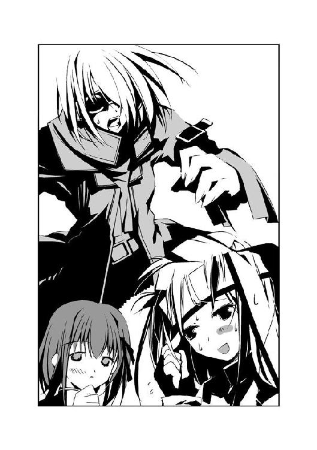
〝からす〟の顔に、笑みが戻る。
「ううん、実にイーところに気づいたよ、詩歌たん」
詩歌、というのが少女の名前のようだ。
「コワイコワイ〝霞王〟たんは、なんだか詩歌たんとこの子、どっちを先に取り戻すか迷ってるみたいだねん。どうしてかな？ 〝ふゆほたる〟と同じか、それ以上に大変なモノをこの子が握ってるとか？ まっさかねぇ。秘種一号の詩歌たんよりも大事なものなんて......」
「てめぇ、〝からす〟──」
「たとえば、さっきからこのちみっ子が大事そうに握ってるモノ......」
〝霞王〟の表情が変わるのを見て、〝からす〟がニヤリと笑う。
「ねぇ、キミ。なんでそのゴーグル、持ってるの？」
突然、声をかけられ、夕は手の中のゴーグルを見る。
「こ......これに、男の人の声が......レイディーにディスクを渡したいって......！」
喉が詰まり、それだけを言うのが精一杯だった。
苦々しげな舌打ちが聞こえた。〝霞王〟だ。
「録音機能か。余計なことしやがって、あのガキ......おい、てめぇ！ ヤツはなんて言ってやがった？」
睨まれ、夕は身をすくめる。〝からす〟が微笑する。
「なるほどねん。その声は、この子だけが知ってるわけだ。......詩歌たん」
長身の少女が、傍らの女の子に声をかける。
「そのゴーグル、壊してくれない？ 局員の装備は機密扱いだから、どこでなくしても回収できるように本部から場所を探知できるんだよねん。アタシのは通信機能くらいしかないから、同化した時に壊せたけど......上位局員用のゴーグルの構造は、アタシには分からないからねん」
夕は目を見開いた。だから簡単に〝霞王〟に見つかってしまったのか──。
「で、でも、これには......センティピードって人の最期の言葉が......！」
「ディスクとゴーグル、どっちが大事ぃ？」
問われ、夕は反射的にディスクを握りしめた。センティピードはこのディスクを守るために戦ったのだ。
「だから、捨てるだけじゃダメなの。ハンパに大事なら、壊しちゃったほうがいいんだよん。特環が欲しがる情報を、わざわざあげる必要なんてないんだから」
「てめぇ、〝からす〟......！」
「詩歌たん？」
「で、でも......」
「もう甘えてられないよん。このままじゃ詩歌たんはともかく、アタシとこの子は殺されちゃうんだよね。〝霞王〟たんはホント、容赦ないから」
〝からす〟の言葉に、詩歌が表情を変えた。
「決めたぜ。まずは〝からす〟......めざわりなてめぇから、殺ってやる」
〝霞王〟が、片手を持ち上げる。霞が実体化した爪が、振りかぶられる。
だが、爪の動きがピタリと止まった。
「......！」
夕たちと〝霞王〟の間に、淡く輝く白い物体が浮かび上がった。
状況も忘れ、夕はその光景に見入る。
宙に浮かんでいるのは、白い輝きに包まれた異様な生き物だった。蛍にも似ているが、実際の蛍は全身を輝かせたりはしない。
暖かく眩い光が、周囲を包みこむ。
『壊れて......』
どこからか、澄んだ声が聞こえた。雨に混じり、空から一欠片の光が舞い落ちる。
『少しだけ......』
光り輝く雪が、夕の手元に舞い落ちる。
次の瞬間──。
「きゃあっ！」
夕が握っていたゴーグルが、紙細工のようにクシャリと形を歪めていた。驚き、夕はゴーグルを放り投げる。
ゴーグルを包んだ光が、地面に触れる。すると、突き落とすような地震が夕たちを襲った。
破壊されたゴーグルを中心に、地面が陥没する。アスファルトの地面に、無数の亀裂が走った。壁が、電柱が、次々と破壊の渦に巻き込まれていく。
「も、もうやめてっ......！」
少女が叫ぶ。だが、崩壊は止まらない。水道管が破裂したのだろう、裂けた地面から水飛沫が上がる。
「なっ......！」
地面の裂け目は、〝霞王〟と夕たちを引き離していた。〝霞王〟の姿が、水飛沫に消える。
「飛ぶよっ！ しっかりつかまっててねん！」
「え？」
夕の体に、黒い布のようなものが巻きついた。
振り向くと、〝からす〟の外見が豹変していた。白ずくめだった姿がうって変わり、黒い翅を背中から生やしている。夕の体に巻きついた布は、〝からす〟の背中から伸びていた。
直後、夕は宙高く舞っていた。
1.03 初季 Part. 1
初季は、暗闇の中にいた。
〝虫〟を使って飛ぶと、いつも脳裏をよぎる光景。
ひょっとしたら、もうとっくの昔に自分の夢は尽きかけているのかもしれない。こんな幻覚を見るのも、そのせいだろう。
初季は暗闇の中にいる。
飛んでいるのか、浮かんでいるのか、倒れているのかも何も分からない。自分の顔も体も見えない。視界いっぱいに闇が拡がっているだけだ。
一本の手が、闇の中に伸びた。
何かをさがすように。何かを求めるように。
自分の手だということは分かっているのに、何をつかもうとしているのかは分からない。
だが闇に支配された空間で、初季は何かを必死につかもうとしている。
やがて、手もまた闇の中に溶け込んで消えていく。言いようのない絶望と悲しみが、初季の胸を締め付ける。
いつも同じ光景なのに、同じ結末なのに、この痛みだけはどうしても耐えられなかった。
「......！」
見慣れてしまった幻覚は、ほんの一瞬で消え去った。
〝霞王〟から逃れ、初季は狭い路地を猛スピードで飛んでいた。両手で〝ふゆほたる〟を抱きしめ、二本の触手でもう一人の少女をつかんでいる。
「んっ！」
「きゃうっ！」
角を曲がる。詩歌と少女が、苦しげに喘いだ。
高速で翅を動かしてバランスをとりつつ、上空を見る。〝虫〟と一体化したことで強化された視力によって、はるか上空に浮かぶ〝虫〟たちが見えた。
特別環境保全事務局の追っ手だ。高度を上げれば、すぐに発見されてしまう。
しかたなく初季は急停止し、古びた二階建てのビルの窓へ近づく。賃貸用のテナントのようだ。埃に汚れた窓の中は、がらんと空洞になっている。
「よいしょっ」
少女の体に巻きついた触手を一本、解放する。窓へ向かって伸びた触手が隙間へ滑り込み、内側から窓のカギを開ける。
「退避、退避ぃー。コワイ人たちに見つからないうちにねん」
窓から家屋に侵入し、詩歌と少女を床に落とす。
埃の煙が上がり、二人が咳き込んだ。三人とも、全身びしょ濡れだ。
初季はすかさず窓を閉め、外を警戒する。雨があいかわらず激しく降り続いていた。
なんとか無事に〝霞王〟から逃げ出せたようだ。戦闘においてはほぼ無敵の〝霞王〟だが、移動速度は遅い。まともにやりあうことさえなければ追跡は避けられるはずだ。
「おっけー。なんとか命拾いしたみたいだねん。......どしたの、二人とも？」
床の上で脱力している二人を見下ろし、初季は首を傾げる。
「あ、あんなに急に飛んだり止まったりされたら......！ 息が......！ 頭に血も......！」
激しく息をつきながら、少女が抗議する。
さきほど会ったばかりだが、初季が見たかぎりでは普通の中学生のようだ。いかにも優等生といった感じのメガネが似合っている。
「あ、あの......大丈夫？」
同じような状態の詩歌が、少女に手を伸ばす。だが──。
「......！」
詩歌に気づくと、少女は身を硬くする。カバンを抱え、壁際まで後退る。
「あ......」
少女の反応に対し、詩歌の表情に陰が落ちる。
「な、なんなんですか、あなたたち......！」
「そんなの、こっちのセリフだよん。せっかく詩歌たんと本部を脱出できたと思ったら、キミのせいで〝霞王〟たんに見つかっちゃうんだもん。お姉さん、寿命が縮んじゃったよ」
言いながら、初季は〝虫〟との一体化を解く。ゴーグルとマントが元の形へと戻り、体を離れた触手が一匹のカラスヤンマになる。
「む、虫憑き......なんですか？ ほ、本当に？」
「見て分かんないかな？ ──そうそう、詩歌たん、やればできるんじゃない。あんな雪みたいなの一欠片で、あそこまでメッチャクチャになるとは思わなかったよん」
初季は詩歌を褒める。だが彼女はなぜか、悲しげに顔を伏せる。
一号クラスの虫憑きの力を見たのは、はじめてだった。
初季が想像していた以上の破壊力だった。四年前、〝ふゆほたる〟がたった一人で特別環境保全事務局を壊滅寸前に追い込んだという噂も、まるきり噓ではなさそうだ。
もう、離さない──。
初季は、詩歌を凝視する。
やっと、手に入れた。あの女に復讐できる力を──。
この日を、三年以上も待ち望んでいたのだ。特別環境保全事務局などという組織で従順を装い、役立たずと蔑まれ、それでも耐え続けてチャンスを待った。
見ていてね、〝先生〟。今度はあの女に、あの日の思いを味わわせてやる......！
自らの胸に、そっと手を触れる。コートの下に、固い金属の感触が伝わる。
「あ......！」
警戒の眼差しを向けていた少女が、何かを思い出したように声を上げる。
「そ、そうだ......！ 〝レイディー〟！」
「え？」
詩歌が、驚いた顔で少女を見る。
「レイディー・バードっていう人を、知ってるんですか？ その人は今、どこにいるんですか......？」
「し、知ってるけど......」
答えたのは、詩歌だった。初季は頷く。
「そーいえば詩歌たん、一時期は〝むしばね〟にいたんだよねぇ」
「利菜は、友達だったから」
詩歌が唇を嚙む。
「あの、教えてください......！ その人は、どこに......！」
「利菜は──」
「すとっぷ、詩歌たん」
初季は、詩歌の口に手をあてる。メガネの少女が、眉をひそめる。
「教えてほしいのなら、まずはそっちの事情を教えてもらわないとねん。見たところ、虫憑きでもないふつーの子みたいだけど......どうして〝霞王〟たんに追いかけられてたの？」
「それは......」
少女が言葉に詰まる。
〝霞王〟は本部でも五本の指に入る実力の持ち主だ。彼女が追っていたということは、それなりの理由があるのだろう。だからこそ、初季は少女を助けた。もしかしたら、特別環境保全事務局に対する切り札になるかもしれない。
「二人は......さっきの人の仲間じゃないんですか？」
「〝霞王〟たんのこと？ 仲間だったら襲われたりしないし、キミを助けもしないよん」
少女の中で、虫憑きはすべて敵という法則が出来上がってしまったのかもしれない。
世間一般では、それが当たり前なのだ。化け物、怪物、それらが虫憑きと同義なのである。
とはいえ、ここまで露骨に怖がられると、初季にとっても良い気分はしない。大切そうに握っているディスクを力ずくで奪い、ここから追い出してやろうかと考える。
だが、にらみ合う二人の間に、詩歌が割って入った。
「私たちを怖がるのも、ムリないと思う。私自身、私のことが怖いもん」
「......」
「でも利菜のことで何か知ってるなら、教えてほしいの。利菜は、たった一人の友達だから」
メガネの少女が、困惑気味に詩歌を見た。その視線が、初季へ向く。
「がうっ！」
「ひっ！」
初季が脅かすと、少女は面白いくらい怯えた顔をした。「初季さんっ」と詩歌が非難する。
メガネの少女は、詩歌を味方と判断したようだ。初季を避けるように詩歌に近寄り、少しずつ語り出す。
少女、海老名夕は塾の帰りに、センティピードという欠落者と出会った。彼の最後の言葉が、〝霞王〟から奪ったゴーグルに残されていた。それによると、ディスクがとても重要な意味を持っているという。しかし、それをレイディー・バードという人物いがいには決して見せてはいけないそうだ。夕は彼の意志に従い、ディスクを持って逃げた──。
話を聞いた初季は、正直な感想を口にする。
「バッカだねん、夕たんは」
「......！」
「たまたま見つけた見ず知らずの男のために、特環に追われることになるなんて。そんなの見なかったフリして、ほっときゃいいのに。お人好しにもほどがあるよん」
夕が言葉に詰まる。だが真っ赤な顔をして、必死に言い返す。
「そんなの、分かってる！ 私だって、自分がどうしてこんなことしちゃったのか、わかんないんだもん！ でも......！ それでも、こうするしかなかったの！ あの人の、センティピードっていう人の声を......聞いちゃったんだもん！」
「声を聞いちゃったから、なに？ その男の子は催眠術みたいな能力でも持ってたのかなぁ」
「違う、違う！ そんなんじゃないっ！ あの人は、レイディーっていう人のために......その人のためだけに......！」
「それにねえ、いいこと教えてあげる。センティピードが夕たんに会えるわけないよん。〝むしばね〟の親衛隊長だったセンティピードって虫憑きは、二ヶ月前に〝かっこう〟に欠落者にされたはずだもん。今ごろ中央本部のＦ棟に収容されてるはずだよん」
初季の知るかぎり、欠落者から生き返った虫憑きはたった一人しかいない。
それが、杏本詩歌である。
詩歌だけが特別であり、だからこそ利用価値があるのだ。それこそ特別環境保全事務局や〝むしばね〟が一つの街を壊滅させてまで欲しがるような、唯一無二の切り札である。
「その男の子が欠落者になったのはホントみたいだけど、センティピードなわけないもん。夕たん、騙されたんじゃないのぉ？」
「だ、騙されてなんかない！ あの人は、本当に......！」
呆れて言う初季を遮って、詩歌が前に出る。
「ありがとう」
夕が、驚いた顔で詩歌を見る。詩歌の手が、ディスクを握る夕の手に触れた。
「センティピードっていう人のことは、私は分からないけど......その人にとっては、とても大事なものだったんだと思う。そのディスクも、利菜のことも。私も同じような状態になったことがあるから、分かるの。夢が消えてなくなる直前は、とても寂しくて、悲しくて......このまま消えちゃうのが、怖くて......誰かに想いを託したくなる」
詩歌が微笑み、夕を見つめる。
「だから、ありがとう。彼の最期の想いを受け取ってくれて」
「......！」
みるみるうちに、夕の顔が歪んでいく。その両目から、涙が溢れ出した。
夕が詩歌の胸に顔を埋め、大声で泣き出す。おそろしい体験をして、気が張りつめていたのだろう。堪えていた感情が吹き出したようだ。
「......」
初季は頭をかき、顔をそむける。抱き合う二人の姿に、苛立ちをおぼえる。
──アタシ、どうして怒ってるのかな、〝先生〟......。
「さっきは怖がって、ゴメンナサイ......」
泣きやむと、夕は涙を拭きながら詩歌に謝った。
「う、ううん」
夕が落ち着き、先に体を遠ざけたのは詩歌だった。初季の目には、相手を怖がっているのは詩歌のほうに見えた。会って間もないが、詩歌は人と接することに慣れていないようだ。
「私、杏本詩歌」
「詩歌さん......」
「アタシは、白樫初季だよん」
名乗り、初季はゴーグルとマントを脱ぎ捨てる。頭に巻いたターバンと二本に縛った長い髪は、びっしょりと濡れていた。中に着ていた薄地のセーターが体にぴったりとくっつき、スリムな体型を浮き上がらせる。
「今が食べ頃の、十六歳。いえいっ」
ピースサインをする初季に対し、驚きの声を上げたのは詩歌だった。
「ええっ？」
「なーに、詩歌たん？」
「あの......私も、十六歳......」
「ええっ！」
初季と夕の声が、重なる。
「同い年なんですか？ うそぉ......」
「そうだったんだぁ。よし、特別に詩歌たんはアタシのこと、呼び捨てで呼んでヨシ！」
初季は胸を張り、逆に詩歌が顔を赤くして丸くなる。
「そういう夕たんは？ 三ちゃい？」
「十四歳ですっ！」
「そっか。じゃあ、ディスクをちょーだい。そんでバイバイだねん」
夕の表情が固まる。
「なっ......！ これは、レイディーっていう人に──」
「もう、いないよん、レイディー・バード。死んじゃったから」
初季が言い放った言葉に、今度こそ夕が言葉を失った。
「死ん......？」
夕が呆然と初季の顔を眺める。思い出したように、詩歌を見る。
「......」
詩歌は唇を嚙み、無言だった。彼女の沈黙が、初季の言葉を裏付けていた。
夕の視線が、ゆっくりと床に落ちていく。カラン、と夕の手からディスクがこぼれ落ちた。
「ほん......とうに......？ 死んで......？」
うわごとのように呟く夕。命を懸けて守り通したというのに、渡す相手がすでにいなかったのだ。よほどショックだったのだろう。
「ちょうどホンモノのセンティピードが欠落者になった頃だよん。二ヶ月くらい前かな。麗しの姫君レイディー・バードは特環局員数十人と葉芝市まるごとを道連れに、非業の死をとげました、マル」
軽い口調で言う初季を、詩歌が睨む。だが初季は気にしない。身を屈め、魂が抜けたように呆けている夕の足元に手を伸ばす。
「よくあんな常識はずれの化け物を倒せたよねー。同じ同化型ながら、〝かっこう〟には感服するばかりデス」
「......！」
夕が目を見開いた。初季がつかむ寸前に、ディスクをかっさらう。
「......なぁに？ まだゴネるつもりかな、このお子ちゃまは」
初季は笑顔を消す。苛立ち、夕に詰め寄る。
「か、〝かっこう〟？」
夕が後退り、ディスクを握りしめる。
「〝かっこう〟っていう人がいるの？」
「〝かっこう〟くんが、どうしたの？」
詩歌が身を乗り出す。夕が初季を避け、詩歌を見る。
「あの男の人は、レイディー以外でも〝かっこう〟っていう人にならディスクを見せてもいいって言ってた！ たぶん......ううん、確かにそう言ってた！」
「......夕たんの言ってることって、ムジュンだらけだよん。その自称センティピードがホンモノだったとして、自分を欠落者にした相手に大切なモノを渡そうとしたのぉ？ 大事なご主人様のレイディーを殺した相手に？ 〝かっこう〟は〝霞王〟たん以上に容赦ない最低最悪の虫憑きって──」
「違うよ」
初季は、息を呑む。詩歌がまっすぐに初季を見ていた。先ほどまでのおとなしさが噓のように、はっきりと断言する。
「〝かっこう〟くんは、利菜のことを殺したりなんかしてないよ。だって〝かっこう〟くん、言ってたもん。利菜を救えなかったって......」
詩歌の迫力におされた初季だったが、すぐに眉をひそめる。
「アタシだって、〝かっこう〟がセンティピードやレイディーを倒したところを実際に見たわけじゃないけど......詩歌たん、自分の言ってる意味分かってる？ 詩歌たんが特環に捕まったのだって、アイツのせいじゃん。それでなくても、四年前にあの悪魔にいちど欠落者にされてるっていうのに」
「〝かっこう〟くんも......友達なの」
詩歌の言葉に、初季は絶句した。真剣に、目の前の少女の正気を疑う。あの悪魔の友達？ 自分を欠落者にして、生き返ってからも再び自分を捕獲した相手を友達だと言った。
「〝かっこう〟くんも、利菜も、同じ夢を持った友達なの。だからセンティピードっていう人がそう言ったのも、分かる。〝かっこう〟くんなら利菜のために......！」
「うん。うん、分かったよん。あまりの言葉に、目眩がしてきたよぉ......詩歌たん、ちょっと黙っててくれる？ えーと、夕たん」
初季は、夕に向かって手を差し出す。
「悪いこと言わないからソレ、アタシにちょーだい？ まぁどうせ、たいしたモノじゃないだろうけどねん」
「......！」
夕はディスクを握りしめ、激しく首を左右に振る。
「ハッキリ言っとくけど、あの悪魔に渡したところで良いことなんて一つもないよん？ せいぜい、ハイどうぞって〝霞王〟たんに渡されるのがオチかな。あの二人、同じ支部にいた時は仲良しだったらしいし」
しかし、夕は首を振る。
「......〝かっこう〟のところまで、夕たんみたいなヘナチョコリンがどーやって持ってくの？ この赤牧市から脱出するだけで難しいし。〝霞王〟たんみたいなのが、あっちこっちで目を光らせてるんだよぉ？ 〝かっこう〟がいる桜架市まで、どれくらいあると思ってるのぉ？」
夕は首を振り続ける。〝霞王〟の名をきいて、両目に涙が浮かんでいた。
「分かったよん。アタシが〝かっこう〟に渡してあげる。アタシは夕たんの命の恩人だよねん？ だったらもちろん、信じてくれるよね？」
夕は首を振り続ける。──それが、初季の我慢の限界だった。
「もぉいい、わかった」
夕に向かって歩み寄る。しかし詩歌が夕を守るように立ちはだかる。初季は顔を歪める。
「......なんのつもり、詩歌たん？ 言っとくけど、アタシは詩歌たんの恩人でもあるはずだよねん？」
「ど、どうするつもりなの？」
「決まってるじゃん。ディスクをもらって、夕たんとはサヨナラ。アタシが助けたのは特環が守ろうとしてたものであって、夕たんじゃないもん。それに命の恩人も信じられないなんて、人としてサイテーだよね？」
「......！」
ハッとして、夕が唇を嚙む。
「それに詩歌たん、この子を応援するのはいいけど、責任とれるの？」
「せ、責任？」
「この子が死んじゃったときの、責任。どう？ とれるぅ？」
詩歌が言葉に詰まる。夕が必死の表情で叫ぶ。
「私、死にません......！ 死にたくないもん......！」
「それって、根拠ないよん。ていうか、死にたくなかったらやめようよ」
「なんで私が、こんなこと......！ 今日......今日だって、今ごろ家に帰ったら千絵ちゃんにメールして、予習復習して......！」
「うん、そうしなよぉ。だから──」
「でも、私がやらなきゃ......！」
夕が涙声で言い放つ。こんなにも怯えているのに、自分ですら理由が分かっていないのに、どうしてここまで意地を張っているのだろう？ 初季には理解できない。
詩歌の視線が、夕を後押しする。詩歌の言っていることも、めちゃくちゃだ。〝かっこう〟と友達と言ったり、見ず知らずの夕をかばったり。
苛立ちがピークに達し、初季は二人の小柄な少女を睨みつける。
「アタシは、さっさと詩歌たんの欲しいモノをゲットして、やらなくちゃいけないことがあるの！ お子ちゃまたちのワガママなんて、きいてるヒマないんだよん！」
「私が欲しいものは、利菜が最期に遺した絵......」
詩歌が、言う。
「きっと、桜架市にあると思う。桜架東高校の美術室に」
「......！」
初季を、今度こそ本当の目眩が襲った。
「初季は、何かの目的のために私のことを助けてくれたんだよね？ いいよ、なんでも初季の言うこと、きく。......利菜の絵さえ見つけることができたら」
初季の目の前が真っ暗になる。
これから、桜架市へ行く？
本部があるこの赤牧市から、東中央支部の本拠地である桜架市へ？ その間に、どれだけ敵がいるだろう。どれだけ困難があるだろう。想像しただけで絶望しそうだ。
初季はむしょうに、怒鳴りたい衝動にかられる。
目の前にいる二人を殴ってでも、言うことをきかせたい。特に詩歌は初季の目的のために、それだけのために中央本部から逃がしたのだ。彼女に対する同情など、これっぽちもない。
だが弱い初季には、それができないのだ。力ずくで言うことを聞かせようとすれば、彼女は反発するだろう。返り討ちにあうか、それとも初季のもとを去ってしまうかもしれない。
それだけは、避けねばならなかった。ようやく手に入れたのだ、大きな力を。
「......！」
悔しさに、初季は奥歯を嚙みしめる。
「この赤牧市の空は、もう飛行部隊でいっぱいだよん......飛んでいくわけにもいかないし、検問をやってるだろうから乗り物は使えない。各地域には戦闘班が配置されてて、〝霞王〟たんみたいなのがそこらへんにゴロゴロいる。何キロも視界が利く〝虫〟や匂いをかぎつける〝虫〟だっているんだよん？ 空も陸も、あいつらに死角なんてない。赤牧市から脱出するだけでも命がけなのに、となりの氷鉋市を抜けて、桜架市へ行くの？」
詩歌と夕が、顔色を変える。
「それに、夕たんが持ってるそのディスク。特環は機密保持のために劣化が早いディスクを使ってるから、三日間でデータが壊れるようになってるんだよねん。ホラ、そこに数字が書かれてるでしょ？」
「......！」
夕がディスクを見る。彼女が持つ透明のケースに、小さな数字が刻印されていた。
「そこが今日の日付になってるってことは......ディスクが夕たんが男の子から受け取る直前に録画されたとして、最低でも三日後の夕方か夜までには保存された中身は消えてなくなるってことだよん」
初季は、詩歌を睨んだ。
諦めろ。
中央本部のお膝元の赤牧市を脱出し、やはり本部の管轄である氷鉋市を抜ける。そして、桜架市へ。どこを見渡しても敵だらけの道のりを、歩いて三日間で到達するなど不可能だ。
やめよう──その言葉を言わせるために、初季は詩歌を睨みつける。
詩歌が、初季の目を見つめ返す。
「行こう、桜架市へ」
思わず絶叫するところだった。
拳を握りしめる初季をよそに、夕が嬉しそうな顔で詩歌を見る。
助けるんじゃなかった──。
夕を助けたことを、心の底から後悔する。こいつさえいなければ、少なくとも三日間なんていうタイムリミットはなかった。
だが、詩歌はなんでも初季の言うことをきくと言った。
その言葉を信じるしかない。弱い初季には、他に選択肢がなかった。
「わかったよん......桜架市に行こぉ」
初季の言葉に、詩歌と夕が表情を輝かせる。
詩歌を、桜架市まで届けてみせる。夕のディスクは、隙を見て奪えばいい。
それに今は、〝ふゆほたる〟が味方なのだ。たとえどんなに強敵が向かってこようとも、彼女さえいれば切り抜けられるかもしれない。
〝先生〟、もうすぐみんなの仇をうつからねん......。
今が決断のしどころだ。桜架市にたどり着きさえすれば、初季の悲願も果たせるのだ。
「そのかわり、アタシからのお願い」
にっこりと笑み、初季は言った。
「今この瞬間から、二人ともアタシのものだからねん。たっぷり可愛がっちゃうよん？」
2.00 夕 Part. 3
お父さんお母さん、ゴメンナサイ。
あなたたちの一人娘は今、特別環境保全事務局という組織に追われています。冗談じゃなく、ホントに命を狙われています。昨日はもう少しで殺されてしまうところでした。
それだけじゃありません。
杏本詩歌さんと白樫初季さんという人たちと、いっしょにいます。二人とも虫憑きです。今までただのウワサだと思ってた〝虫〟って、ホントにいるんです。私はこの二人と、桜架市へ行こうと思います。
理由は......自分でも分かりません。でも、どうしても行かなくちゃいけないと思っちゃったんです。ホントは、今すぐにでも全部忘れてウチに帰りたい。帰って、シャワーを浴びて、昨夜メールできなかったことを千絵ちゃんに謝って、今からでも塾の課題をやりたいです。不安のない人生を送るために......。
でも、行かなくちゃ。桜架市へ行って、〝かっこう〟っていう人に会わなくちゃ。会って、センティピードっていう人から渡されたディスクを届けなきゃ......とても危険なことだって、分かってます。命がけになると思います。でも──。
そういえば、昨日から連絡していないよね？ きっと心配してくれてると思います。でも初季さんが言うには、他の人間とはできるだけ連絡をとらないほうがいいっていうんです。だから、ゴメンナサイ。帰ったら、うんと怒ってください。無事に帰れたら......。
「......」
赤牧市は、昨夜の豪雨がウソのように晴れ渡っていた。
ビルが建ち並ぶオフィス街。
自動車の往来が激しい国道に並行して繫がる裏通りは、ビルの濃い影のせいで薄暗い。ほんの数メートルの間隔で建てられたビルの狭間に、ゆっくりと空を泳ぐ雲が見えた。
昨日は冷たかった風が、今日は暖かい。絶好の〝逃亡日和〟だ。
しかし夕は、呆然と立ちつくしていた。
「......」
夕の体が激しく揺さぶられる。だが夕はあまりに信じられない光景を前に、身動き一つとることができない。
「買ってー！」
初季が夕のカバンをつかんで、左右に揺さぶっていた。
長身の少女は、今は大きなセーター姿で、首からネックレスをさげている。昨夜着ていたコートとゴーグルは、夕のカバンの中だ。はじめから入っていた参考書を守るべく夕は抵抗したが、「そんなの、必要ないよん」と初季にあっさり放り捨てられた。
「夕たん、クレープ買ってー！ 食ーべーたーいーのー！」
叫ぶ初季が指さした先にあるのは、ピンクの車体が愛嬌の移動型店舗だ。
「クレープぅーっ！ 夕たん、買ってってばぁー！」
とうとう両手を振り回して叫びだした初季を見つめ、夕は顔をひきつらせる。
こいつは、こういう人だったのか──。
怒りの形相で迫られた昨夜は、まったく気づかなかった。しかし無人のテナントで一晩を明かした朝、早くも白樫初季という人間について印象を改めざるをえなかった。
「......」
横を見ると、詩歌がチラチラとクレープ屋を気にしていた。夕と目が合うと申し訳なさそうにうつむくが、やはり視線はピンクの車から離れない。
この人も──。
詩歌は昨夜まで着ていた薄着ではなく、フード付きのパーカー姿をしている。夕と初季で今朝、人気のない寂れた洋服店で買ってきたのだ。
「......二人とも、私たちの今の状況、わかってるんですか......？」
やっとの思いで、夕は口を開いた。
「......私たち三人とも、命を狙われてるんですよ？ 桜架市に着くまで何があるか分からないんだし、このお金も節約しないと......」
「く・れ・え・ぷぅーっ！」
「う、うん、そうだよね。節約しなきゃ、ダメだよね」
夕の言葉にも、二人の行動はまったく変わらない。詩歌は口ではそういいながらも、やはりクレープ屋をチラチラと気にしている。
夕は思ったことを、素直に口にした。
「二人とも、本当に十六歳なんですか......？」
詩歌と初季は、夕よりも二つ年上である。初季など背丈や顔つきからすれば、大学生に間違えられても不思議ではない。そんな少女が一生懸命に両手を振り回して駄々をこねている姿は、ある意味ではとても貴重な光景かもしれない。
「......そもそも、どうして私しかお金を持ってないんですか......」
詩歌が着ている服も、夕が持っていた金で購入した。塾の月謝の支払日を間違えたのが、はからずも役に立っていた。
「夕たんは、アタシのものだっていったじゃん。だから夕たんのお金も、アタシのものなの。ほら、早くぅ、クレープ買ってきてよん！」
とうとう地面に座り込んでしまった初季、クレープを手にした客を目で追いはじめた詩歌。
夕はそんな二人を見て、言葉も出なかった。
──数分後。
「えへへぇ、詩歌たん、バナナチョコ、一口ちょーだい！」
「あ、あの、夕ちゃんも食べる？」
「......」
高架線の下、夕は不機嫌顔で顔をそむける。
積み上げられた廃木の陰で、三人は思い思いの場所に座る。
結局、初季がストロベリークリーム、詩歌がバナナチョコレートを買った。しかも夕一人を買いに行かせて、だ。
夕の分を買わなかったのは、少しでも浪費を抑えるためだった。何が起こるかもわからないというのに、無計画かつ無駄に少ない資金を使うわけにはいかない。普通レベルの高校を受けるために猛勉強をしている自分としては、当然の決断だ。でも本当は、夕も食べたかった。
「詩歌たんも、ストロベリー一口食べるぅ？ でもイジワル夕たんにはあげないよん」
「結局、買ってあげたじゃないですかっ！ なんでイジワルなんですか！」
夕が怒鳴ると、初季はひょいっと詩歌の背中に隠れた。「じゃあ、怒りんぼ夕たん」と言って舌を出す。怒りのあまり、握った拳が小刻みに震える。
──一体なんなの、コイツは！
昨夜はじめて会った時、夕は初季のことが怖かった。
〝霞王〟から助けはしてくれたが、そのあとにディスクをよこすよう迫られた。あの時の顔は、今のバカみたいな少女とはまるで違っていた。虫憑きということを除いても、鬼のように眉をつり上げていた顔が怖かった。
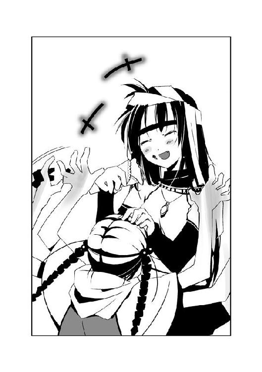
だが一夜明けると、まるで別人のようだ。外見はともかく、喋り方や行動まで、まるで幼稚園児のように幼い。夕は今まで彼女のような人間を見たことがない。
「ご、ごめんね、夕ちゃん」
初季をかばい、詩歌が謝る。
詩歌もまた、不思議な部分のある人物だった。おとなしすぎるくらい控えめな性格で、夕にはとても優しい。しかしどこかぼんやりとしていて、危なっかしいところがある。今朝、着替えをしていた時に二回くらい地面に転んでいたのを、夕は見逃していない。
「別に、詩歌さんに怒ってるわけじゃないです」
特別環境保全事務局の追っ手をかいくぐり、桜架市へ行く。
これから危険に満ちた、命がけの逃亡が始まるとばかり思っていた。
それなのに、この緊張感のなさはどうだろう──夕の胸に、ますます不安が拡がっていく。
「一度、食べてみたかったの、クレープ」
詩歌がはにかみ、手元のクレープを一口食べる。その顔は、とても嬉しそうだ。
「え......クレープ、食べたことないんですか？ 一度も？」
「うん」
頷く詩歌は、噓を言っているようには見えない。
夕にはとても信じられない言葉だった。詩歌は十六歳。いくらなんでも、これまでにクレープくらい食べたことはありそうだ。
「クレープって、こんなにチョコレートがたくさん入ってるんだね」
「あれ？ 詩歌たん、看板見なかったのぉ？ ヴァレンタイン・デイが近いから、チョコレートを増量サービス中って書いてあったじゃん。このリボンもそうだよん」
「ヴァレンタイン......デイ？」
詩歌が首を傾げる。クレープの包装に巻きついたリボンを見る。
夕は眉をひそめる。
「ヴァレンタイン・デイですよ。女の子が好きな男の子にチョコレートをあげる......え？ まさか知らないんですか？」
詩歌が、きょとんとした顔をする。だがすぐに、何度も頷く。
「ヴァレンタイン......そっか、もうすぐヴァレンタイン・デイだよね」
まるで、ずっと忘れていたものを思い出したかのような仕草だ。ますます詩歌という少女が分からなくなる。彼女は一体、これまでどんな生活を送っていたのだろう？
「ちょうどいいや。詩歌たんのプチ〝変装〟に使っちゃおう」
おもむろに初季が自分のクレープに巻かれたリボンをほどく。クレープを口にくわえたまま、器用に詩歌の髪をリボンでしばる。後ろで一つに髪をしばった詩歌を見て、
「かっわいー」
と初季はご機嫌だ。
「あ、ありがとう」
と詩歌が頰を染める。
「好きな男の子か......」
ぽつり、と詩歌が呟いた。
夕が苛々しながら待つこと、数分。
食べ終えて満足顔の少女二人を睨み、夕は口を開く。
「気が済みましたね？ それじゃ、作戦を考えましょう！」
「作戦？」
初季と詩歌が声を重ねる。
──こ、この人たちは......！
怒りに肩を震わせながら、低い声で言い放つ。
「どうやったら桜架市へたどり着けるか、考えるんです......！」
「それならそう言えばいいのにぃ。作戦なんて言い方するからだよん。言っとくけど、ゲームじゃないんだよ？」
「そ、そんなこと分かってます！」
「分かってないよん。つかまったら、殺されちゃうんだからね？」
「......！」
初季に静かな視線で見据えられ、夕は言葉をのみこむ。
──緊張感がないのは、誰のせいよ！
叫びそうになった夕を、詩歌がなだめる。
「ふ、二人とも落ち着いて。ね？」
「アタシはバッチリ落ち着いてるよん。夕たんが一人ではしゃいでるんだもん」
「な、なんでそうなるわけ？ はしゃいでたのは、そっちじゃない！」
「やめて、二人とも！」
詩歌を挟み、夕は初季を睨む。一方の初季は、詩歌に見えないように舌を出す。その子供じみた態度が、ますます夕の神経を逆撫でする。
なんなの......？ 一体なんなのよ、コイツは......！
ワガママを言ったり、脅したり、おどけたり。夕はこんなにも不安でいっぱいなのに、逃げる気がないのはどちらなのか言い返してやりたい。
それでも詩歌の懸命の仲裁によって、夕と初季は黙り込む。ただしどちらも決して目を合わせようとはしなかった。
「それじゃ、詩歌たん。説明するよん」
「う、うん」
露骨に自分の存在を無視され、夕はますます腹が立つ。
初季が木の棒をひろい、土が剝き出しになった地面に線を描いていく。
赤牧市と氷鉋市、そして桜架市という隣接する都市の輪郭だ。意外にも、繊細に描写された地図だった。
「〝霞王〟たんのゴーグルを壊しておいて、よかったよん。アタシたちが〝かっこう〟がいる桜架市に向かうかもしれないってバレちゃうもんね。どこへ向かって逃げるのか分からない以上、本部の戦闘班は所定の配置にいるはずだよん」
そう前置きし、地図上に大小の円を描き加えていく。
「昨夜も言ったけど、空を飛んでいくのは問題外だよん。〝コノハ〟たんがいるから」
「コノハ？」
「最近、特環に入っていきなり火種四号になった子のこと。すんごい目が良くて、遮蔽物がなければ何十キロまで広範囲に見渡せる能力を持ってるの。そうじゃなくても空を飛べる〝虫〟に乗った飛行部隊がそこらじゅうに飛んでるから、高く飛んだ時点で集中攻撃うけちゃう」
「......」
「それと、ココとココと......ココ。特に強い局員が配置されてるから、絶対に近寄っちゃダメだよん。特にココにいるはずの〝霞王〟たんに見つかったら、アウト。戦闘力だけなら〝かっこう〟にも負けないくらい強いから」
昨夜の恐怖を思い出し、夕は寒気をおぼえる。
霧の化け物、〝霞王〟。もう少しで夕は彼女に殺されるところだった。初季に言われずとも、二度と会いたくない人物だ。
「この範囲も、ダメかなぁ。匂いを感知する〝虫〟と、特別な感知能力を持った〝虫〟がいるから。近づいただけで見つかって包囲されちゃうよん。乗り物全般も使えないかな。バスやタクシーはもちろん指名手配済み、大きな道路も検問か見張りがいるから通れないよん」
次々と円が描かれていく。
「アタシみたいな無指定の兵隊は、いろんな班をたらい回しにされるからねん。中央本部にいる戦闘班と監視班なら、だいたい知ってるかな」
「......」
最終的に完成した図を、夕と詩歌は凝視する。
「......あの、どこにも通れる場所がないんですけど......」
おそるおそる、夕は顔を上げる。初季は平然と頷く。
「だから昨夜、そう言ったじゃん」
詩歌も呆然と地面の地図を見下ろしている。
初季が描いた円に触れていないのは、たった一カ所だけだった。
今、三人がいる場所。赤牧市のほぼ中央だけである。
「あ、当たり前だけど、警察に逃げ込んでもムダだよん。実際に動いたりはしないだろうけど、手配は回ってると思うからねん。それと夜の移動も、厳禁。特環の存在は一般人には秘密だから、人目につきにくい夜こそアイツらは本格的に動きまわるから」
これだけの敵の目をかいくぐり、三日以内に桜架市までたどり着く──。
今さら、夕は自分がしようとしていることの無謀さを思い知る。
三人の少女の間に、重い沈黙が落ちる。
「初季」
詩歌が、初季を見上げた。
「なんとかして、行けない？」
見つめられ、初季は頭をかく。棒の先で、地図に曲がりくねった線を描き込む。
「強い戦闘員を避けて、できるだけ見つからないように進むしかないよん。だいぶ遠回りになるけど......それでも明後日までに桜架市へ行くには、このルートしかないよん。そうそう、待ちあわせ場所を決めておかないとねん」
「待ちあわせ場所？」
「もしはぐれちゃった時に、落ち合う場所。そーだなー、となりの氷鉋市へ入る手前の冷水橋って知ってるぅ？ ココなんだけどねん」
初季が、地図の一点に×印をつける。
「この橋の下にくっついて飛んでけば、見つからないで氷鉋市に入れるとも思うしねん」
初季が、夕と詩歌の顔をのぞきこむ。
「もし離ればなれになったら、絶対にそこに行くこと。いい？ 二人とも、アタシが助けてあげたんだからね、逃げちゃダメだよぉ？」
「......」
夕は答えない。ポケットに触れると、そこに潜ませたディスクの固い感触を感じる。
詩歌もまた、夕と同じような表情をしていた。何かを思い詰めるように、初季の顔を見つめ返している。
「......まぁ、いいよん」
初季が、目を細める。
夕は初季にたずねる。
「特環......特別環境保全事務局って一体、なんなんですか？ 〝虫〟が本当にいるってことは、分かりました。でも、その人たちって......？」
初季と詩歌が、夕を見る。
「せめて、自分がどんな人たちに追われてるのか、知りたいんです」
「いいのぉ？」
「な、なにがですか？」
「ううん、別にぃ。──えっとねぇ」
初季が顔をあげ、独特の話し方で説明する。
「特環は、特別環境保全事務局っていう名前で、表向きには調査機関ってことになってるらしいよぉ。でも本当は虫憑きを使って、同じ虫憑きを捕まえるためにあるんだよねん。捕まえた虫憑きは、〝虫〟を殺して欠落者にして隔離施設に収容する。役に立ちそうな虫憑きはそのまま特環の局員にするけどねん。十数カ所の地域ごとに支部があって、ここ赤牧市は中央本部のお膝元。〝かっこう〟がいる東中央支部は、ここから二つとなりにある桜架市が本拠地。支部ごとに戦闘班、監視班、実験班、情報班、特殊班があって、ふつーの人と虫憑きがごっちゃに配置されてる......ちなみにアタシは戦闘班の飛行部隊にいたんだよん。任務ごとに色んな場所に住まわされる監視班と違って、命令があった時にだけ戦闘とか危険任務にかり出されるの」
「せ、戦闘......ですか？」
「うん、〝霞王〟たんも同じ戦闘班だよん。実はアタシ、〝霞王〟たんと同じ学校に通ってるんだ。ホルス聖城学園って知ってる？ あんな〝霞王〟たんも、普段はねぇ──」
「ええっ？ ホルスっていったら、スッゴイお嬢様学校じゃないですか！ うそぉっ、初季さんが？ ほ、本当はお金持ちなんですか？ ......とてもそうは見えないケド......」
「ううん、学費も生活費も特環が払ってくれてる。アタシ、天涯孤独ってヤツだから。何年か前にその学校でいろいろあったらしくて、アタシたちはその後調査も兼ねてるんだよん」
初季がにこにこと笑いながら、夕の首を腕で締めつける。どうやら彼女の最後の言葉が気に入らなかったらしい。
「ほ、他にも、その......虫憑き......が、色んなところにいるんですか？」
腕から解放された夕が、たずねる。
「うん。虫憑きじゃなくても、特環の協力者ってのはソコソコいるよん」
「そんなこと、ぜんぜん知らなかった......」
「当たり前だよん。ふつーの人がそのこと知っちゃったら、タダじゃすまないもん。良くて口外禁止の契約をかわさせられるか、悪くて口封じにバッサリと──」
「え？ あ、あの、私......今、聞いちゃったんですケド......」
「だから最初に、いいの？ って聞いたじゃん」
「そっ！ そんなので、分かるわけないじゃないですかっ！ ど、どうしてくれるんですか、私、私......！」
「夕ちゃんが誰にも喋らなければ、大丈夫なんじゃないかな......たぶん」
方針が決まると、三人はさっそく高架下を離れた。
脇道へそれ、密集した住宅街へと入る。
曲がり角にさしかかるたびに、まず夕が偵察に出た。おずおずと壁から顔を出し、周囲に人の気配がないか確かめる。人影を見つけると、別の道をさがす。
初季が示したルートを、三人は慎重に進んでいく。
振り返ると、先ほどクレープを食べた高架が見えた。だいぶ時間が経ったように思ったのに、距離はまったく進んでいない。
──こんなペースじゃ、今日中に赤牧市を出ることもできないんじゃ......？
夕の不安は、ふくらんでいく一方だった。だが急いで先へ進み、追っ手に見つかってしまったら本末転倒だ。焦燥感と苛立ちがつのる。
通りの向こうを、自動車が通り抜けた。人々のざわめきが聞こえる。
国道が近かった。
予定のルートをたどるには、大きなスクランブル交差点を通るしかないようだ。
脇道の陰から、夕は大通りの様子を観察する。
「夕たんは、しっかりしてるねん。今までにも何回か追われたことあるのぉ？」
「ありませんっ！ 初季さんや詩歌さんが、警戒しなさすぎなんです！」
夕が非難すると、初季がムッとした顔をする。
「戦闘員が潜んでいそうなところは、ちゃんと警戒してるもんねぇ。夕たんこそ、一人で勝手に前に進みすぎだよん」
「だって、急がなきゃ......！ こんなペースじゃ桜架市に行くどころか、赤牧市から出ることだってできませんよ！」
今こうして歩いているだけでも、夕は緊張感で胸が張り裂けそうだった。今にも追っ手に見つかってしまうのではないか、〝霞王〟が襲ってくるのではないかと気持ちが休まらない。
こういった不安が、夕はこの世で最も嫌いだ。じっとしていられなくなって、何かしていなければ落ち着かない。これが受験に対する不安なら、勉強さえしていれば少しは安心できた。だが今は、そうもいかない。
風が、吹いた。
自動車の排ガスが混じった、都会のどこにでもある風だった。
「大体、初季さんはどうしてそう......！」
言いかけ、夕は空を見上げている詩歌に気づく。つられたように、初季も詩歌を見る。
詩歌はケンカをする二人に気づかない様子で、ぼんやりと空を見ていた。両手を持ち上げ、胸の高さに掲げている。
「詩歌さん？」
「あ......ご、ごめん」
我に返った様子で、詩歌が二人に向き直る。
「風が、気持ち良かったから......」
言われて、夕は眉をひそめる。
二月の冷たい風は、寒いと感じる他に特別な感想は感じられなかった。新鮮とはかけ離れた、都会にありふれた風としか思えない。
だが詩歌は、嬉しそうに風にあたっている。まるで長い間、そんな風すらも感じたことがなかったかのようだ。
微笑む詩歌は、なぜか儚く見えた。今にも目の前から消えてしまいそうな、そんな危うさすら感じる。
「こんな風、大っ嫌いだよん」
冷めた顔で言い放ったのは、初季だった。
「湿っぽくて、臭くて、汚れてて......都会の風はどこも、そう。胸がムカムカしてくるよん」
「そうじゃないところが、あるの？」
無邪気に詩歌がたずねる。
初季が、胸元のネックレスに手を伸ばす。先端にぶら下がった金色のリングを握る。
「アタシの生まれ故郷は、こんなところとは全然ちがった......すごくキレイで、海の香りがする風がいつも吹いてたよん」
「赤牧市の生まれじゃないんですか？」
初季が目を細め、微笑する。はじめて見る顔だった。
「違うよん。青播磨島っていう、ちっちゃな島......」
「行ってみたいな......そんな島に。私、桜架市しか知らないから」
何気ない詩歌の言葉に、なぜか初季は顔を歪めた。
「......もう、ないよん」
「え？」
聞き返す詩歌に対し、初季は顔をそむけて答えない。
夕と詩歌は、黙り込んでしまう。
しばらくして、詩歌が口を開いた。
「......初季は私に、何も訊かないんだね」
「なにがぁ？」
硬い表情で振り向く初季を、詩歌がじっと見つめる。
「昨日までは、会う人みんなに訊かれたの。どうすれば欠落者から生き返ることができるのか......こっそり私に会いに来て、施設の人に連れて行かれた人もいるくらい。それなのに、初季は何も訊かないの？」
「知ってるの？ そんな方法」
「ううん......」
「どっちにしろ、アタシは興味ないよん」
「虫憑きから......元に戻りたくないの？ 自由に、なりたくないの？」
「自由？ 自由になっちゃったら、アタシにはなにも残らないよん」
初季が自嘲気味に笑う。
「力もないし、アタマも悪いしねん。虫憑きじゃなくなったら、空っぽなの。生きてる理由も意味もなくなっちゃう」
「そんな......」
詩歌が悲しそうな顔をする。初季が、すうっと目を細める。
「詩歌たんのその顔、なんかキライだよん。やめてくれる？」
「......」
詩歌は唇を嚙む。まだ何かを言いたそうだったが、うつむいて黙ってしまう。
夕も胸中に、いい知れない不安がひろがる。
子供のように駄々をこねていたと思うと、豹変して怖い顔をする初季。
なんでもないようなことにいちいち感動し、浮世離れした言動ばかりの詩歌。
虫憑きは皆、この二人のように変わっているのだろうか？ 理解することなどできないのだろうか？
──こんなにバラバラじゃ、桜架市へなんてとても行けない......。
夕は、ポケットの中のディスクを握りしめる。
「おしゃべりは、おしまいだよん。次に信号が青になったら、行くからね。走ったり立ち止まったり、目立つことしちゃ絶対ダメだよぉ？」
初季が脇道から体を出し、スクランブル交差点の様子をうかがう。
夕はあわてて初季のセーターをつかむ。
「べ、別の道は？ あんなに人がいるところを通ったら、見つかっちゃうかも......！」
「なんでぇ？」
「な、なんでって......危ないじゃないですか！ もっと安全な場所から──」
「今さら、何を言ってるんだか。アタシたちに安全な場所なんて、もうないよん。もうとっくに命がけなんだから」
にっこりと笑い、初季が言う。恐怖を思い出し、夕の腹の奥が締めつけられる。
「ねえ、詩歌たん？」
詩歌が、神妙な顔で頷いた。夕は呆然とする。
「次にまたそんなこと言ったらオシオキだからねん、夕たん？」
ポンと頭に手をおかれる夕の呼吸が、速まっていく。
初季と詩歌は、特別環境保全事務局という敵の怖さを知っているのだ。今さらながら、戦慄に身が竦む。
「行くよん！」
横断歩道の信号が、青に変わった。通行人の集団が散らばっていく。
夕たちは脇道を飛び出し、歩行者の群れに紛れ込む。
自動車のクラクション、人々のざわめき、信号から流れる音楽、そのどれも夕の耳には入っていなかった。自分の心臓の音だけが、耳元でうるさく伝わってくる。
うつむき、前を歩く初季と詩歌の脚だけを見て歩く。
だが夕は視線を感じ、ちらりと横を向いた。
「......？」
交差点の中央、縦横無尽に歩く人々の中、ぽつりと佇む小柄な人物がいた。
小学校の高学年くらいに見える女の子だ。ハートマークが好きなのだろうか、短めの髪にハート形のヘアピン、四つのハート型のアクセサリーがついたネックレス、そしてハートマークが入ったセーターを着ている。幼く可愛らしいというより、鋭く綺麗な顔立ちが印象的だった。
女の子は、夕たちを見つめているようだった。だがすぐにふいっと視線をそらすと、何事もなかったように夕たちとは反対側へ向かって歩いていく。
「夕ちゃん......！」
思わず立ち止まってしまった夕のもとへ、詩歌が戻ってくる。我に返って前方を見ると、初季がこちらを睨んでいた。
「ご、ごめんなさい」
詩歌に手を引かれ、夕はスクランブル交差点を渡りきる。
三人はそのまま歩みを止めず、ビルに挟まれた細道へと入る。
いくつかの曲がり角を過ぎ、雑居ビルが建ち並ぶ裏道を歩いていく。
どうにか追っ手に見つからずに済んだようだ。しばらく歩いても、周囲に異変はない。
「立ち止まっちゃダメって言ったのに、アタシの言うこと聞いてなかったのぉ？」
先を歩く初季が、憮然とした顔で振り返る。
「ごめんなさい......」
交差点で見かけた不思議な女の子のことを話そうとするが、やめる。白いコートを着ていたわけでもないし、あんなに小さな女の子が追っ手とは到底思えなかった。話したところで心配性だのと初季にからかわれるのは目に見えていた。
「詩歌たんも、同じようなことがあったらもう放っといちゃっていいからね？ ただでさえ詩歌たんだって、トロくて心配なんだから」
睨まれ、詩歌はしゅんと小さくなってしまう。
「し、詩歌さんは、関係ないじゃないですか......！」
「二人とも、ちゃんとアタシの言うこと聞かないとダメなんだから。詩歌たんも夕たんも、アタシがいなければすぐに見つかっちゃうに決まってるもんねぇ」
初季が前を向いて、さっさと先を歩いていく。
バカにされたような気がして、夕はぽつりともらす。
「そんなこと、ないもん......私だって......」
「あははー、ナニ言っちゃってんのかな、この子は。お荷物ちゃんのクセに」
「......！」
夕は、立ち止まる。
「おっにもつー、おっにもつー、今日からキミのあだ名はオニモツちゃんだぁ」
「初季......！ そんな言い方──」
「お荷物じゃ、ないもん......」
夕の呟きに、初季もまた足を止めた。振り返り、嘲笑を浮かべる。
「あのねぇ、せっかくだからハッキリ言っておくけど、夕たんはついでなんだからね、つ・い・で。詩歌たんが桜架市に用がなければ、夕たんなんてポイッだよん。夕たんがいたって、何の役にも立たないんだから」
「お金......持ってるじゃないですか。朝のクレープだって──」
「パパとママのお金でしょ？ それに、お金なんてどうとでもなるもんね。いざとなったら、そこらへんの人からもらっちゃえばいいんだし」
「だ、ダメだよ、初季。そんなこと......」
「そんな目立つことしたら、すぐに見つかっちゃいますよ！ そんな簡単なことも分からないんですか？」
つい、大声を出してしまう。初季の顔から笑みが消えた。
「それくらい、分かってるよん。......夕たんって、アタシのキライなタイプかも。ホントは弱っちいくせに、何でも一人でできると思ってるでしょ」
初季の言葉は、容赦の欠片もなかった。夕は顔が熱くなるのを感じる。同じようなことを昨夜、友人から言われたばかりだ。
「なんで初季さんにそんなこと言われなきゃいけないんですか！ 初季さんだって、私のキライなタイプです。なにを考えてるのか分からなくて──」
「ありゃりゃ、こっちこそ夕たんに言われる筋合いないんだけどぉ？ あぁ、なんかもうヤんなってきちゃったなぁ、夕たんといっしょにいるの。どーせそのディスクも大したモノじゃないだろーし、このまま置いてっちゃおうかなぁー。あ、コートとゴーグルは返してね、ほらぁカバンちょーだい」
「やめて、二人とも......！ こんなにケンカばかりしてちゃ、桜架市まで行くのなんてムリだよ......！」
「はいはい、それもこのちみっ子のせいでぇーす。お荷物だけならまだいーのに、邪魔ばかりするの。ホント、邪魔ぁ」
「邪魔......！ 邪魔なんて、してない！ 私だって、どうせならもっと強い人に助けてほしかった！」
強引にカバンをはぎ取られ、思わず出た言葉だった。
ピタリと初季の動きが止まった。夕のカバンを手に、大きく目を見開く。
「初季......？」
初季の肩が、震えていた。
「アタシだって......っと強けれ......あの女に......！」
口の中で何かを呟いたかと思うと、初季が怒りの形相で二人を睨んだ。
「詩歌たんも夕たんも、べつに死んじゃってもいいんだからぁっ！ アタシの役に立ってくれさえすれば、殺されちゃってもいいのっ！」
「......！」
夕と詩歌は、言葉を失う。
「やっと見つけたんだからっ！ 三年待って、やっとあの女に復讐できるの！ アタシは〝先生〟やみんなの仇を──」
「ガキどうしのケンカは、うるさくて仕方ねぇよ」
ハイトーンの声は、頭の上から聞こえた。
とっさに行動をとったのは、意外にも詩歌だった。夕と初季は、詩歌に突き飛ばされる。
それまで三人がいた場所に、黒い影が突き刺さった。爆発したように地面が砕け、アスファルトが周囲に飛び散る。
「う......！」
夕の上に覆い被さったのは、詩歌だった。撒き散らされる破片から夕を守ってくれたのだ。
詩歌といっしょに顔を上げ、夕は息をのむ。
背の低い廃ビルの屋根を、黒い霧が覆っていた。中心にいるのは、白いコートを身に纏った少女だ。
「〝霞王〟......！」
夕は詩歌に支えられ、立ち上がる。
地面に突き刺さっているのは、霧の一部が凝り固まって生まれた大きな爪だった。衝撃で住宅の壁まで破壊されている。
「あ......！」
詩歌が空を見て、声を上げた。
ビルの狭間から見える青空に、無数の影が浮かんでいた。
〝虫〟だ。〝霞王〟の仲間たちだろう。
──なんで......？ どうして、ここに〝霞王〟がいるの？
夕の足が、恐怖で動かなくなる。
初季の話では、〝霞王〟の配置は赤牧市の反対側だったはずだ。彼女を避けるために、夕たちは遠回りになるのを覚悟で今のルートを選んだのだ。
詩歌と夕の二人と初季が、爪によって引き離される形となっていた。初季がカバンを捨て、コートとゴーグルを装着する。
「......奇遇だねん、〝霞王〟たん。ここらへんって〝霞王〟たんたちの管轄じゃなかったはずだけど」
「てめぇの空っぽ頭の考えることなんざ、ぜんぶお見通しなんだよ。どうせバカ正直に、強力な局員がいないはずのところを選んで移動してたんだろ？」
初季が一瞬、顔を歪めた。だがすぐに笑みを浮かべると、詩歌を見る。
「そっちこそ、詩歌たんのこと忘れてない？ いくら〝霞王〟たんでも、あの子に勝てると思ってないっしょ？」
夕を押し潰そうとする恐怖感が、少しだけ遠のいた。
──そうだ、詩歌さんの力なら〝霞王〟にだって......！
詩歌が緊張した面持ちで、〝霞王〟を睨む。
「てめぇはやっぱりバカだな、〝からす〟」
〝霞王〟が笑み、詩歌を凝視する。
「〝兜〟から聞いたぜぇ、〝ふゆほたる〟。てめぇ、自分の力をコントロールできないんだってな。クリスマスに捕まった時も、自分の〝虫〟だってのに、必死で〝みんみん〟や他の局員を攻撃するのをやめさせようとしてたらしいじゃねーか」
「......！」
詩歌の表情に、動揺が浮かぶ。
「こんなところで力を使ったら、まず死ぬのは誰だろうな？ 少なくとも、オレ様は簡単にゃやられねーぜ？」
言われ、詩歌が見たのは夕だった。夕は愕然とする。
「分かったかよ、〝からす〟。こいつはレイディー・バードと同じ全方位殲滅型の能力しか持ってねぇ。おまけにレイディーと違って、自分から優位な位置に移動できるほど実戦経験も体力もねえ。こいつ自体が核爆弾みてーなモンなんだ。こいつのほっぺたに使用上の注意って書いてなかったか？」
目を見開き、初季が夕を見る。
──私......？ 私のせいで......？
立ちつくす夕から、初季は視線をそらす。苦りきった笑みを浮かべ、〝霞王〟を見上げる。
「ほっぺたなんてキャワイイ言い方しちゃって、〝霞王〟たん。普段のクセが出ちゃった？」
〝霞王〟が顔を上気させる。
「これで毎日てめぇのツラを見ずにすむかと思うと、心の底からすっきりするぜ......！」
「詩歌たん、ちょっと先に行っててくれるぅ？」
初季の肩に、一匹のカラスヤンマが舞い降りる。直後、カラスヤンマの躰が変形し、初季の全身に触手が伸びていく。コートが四枚の翅に変化し、ゴーグルが一対の複眼へと変わる。初季の頰に、黒い模様が浮かび上がった。
「そこのちっちゃいのも、ついでにねん」
「で、でも......！」
「おいおい、オレ様がハイそうですかって通すとでも思ってんのかよ」
「通してよん、優等生の〝霞王〟たん」
「......てめぇ、いったい何考えてやがる。〝ふゆほたる〟を逃がしたところで、てめぇが得することなんざねーだろーが」
「ほら、早くぅ、詩歌たん。このままじゃもっとたくさん援軍が集まっちゃうよん」
夕は、見た。〝霞王〟と向かい合う初季の頰に、汗が滴っている。表面上は笑顔を保ちながらも、気圧されているのが分かる。
「アタシたちは、ここで捕まるわけにはいかないんだよん......！」
詩歌が、唇を嚙んだ。
「行こう、夕ちゃん......！」
夕の手をつかみ、初季に背を向ける。
「でも、初季さんが──」
「逃がさねぇって言ってるだろうが！」
「逃がしてよんって言ったでしょ！」
夕と詩歌の頭上に生まれた爪に、急加速した初季が体当たりをかける。
爪の軌道がそれ、詩歌をかすめて地面に突き刺さる。
アスファルトの地面が、崩壊した。地面に走った亀裂が、夕たちの足元を襲う。
「夕ちゃん......！」
詩歌に手を引かれ、間一髪、地面にできた崖に落ちるのを免れる。
衝撃で、周囲のビルまでも破壊されていた。あまりに現実離れした〝霞王〟のパワーに、夕は呆然とする。
〝霞王〟の周りから、黒い霞が吹き出した。霞の一部が勢いよく伸び、夕たちのもとへと飛来する。空中で霞が固まり、巨大な爪と化す。
だが、夕たちと〝霞王〟の間に、翅を高速振動させた初季が割ってはいる。
「アタシは完全に無視ぃ？ つれないよん、〝霞王〟たん」
初季の背中から伸びた二本の触手が木片をつかみ、〝霞王〟に向かって投げつける。
「てめぇ......！」
木片が、霞の盾であっさりとはじかれる。だが〝霞王〟の顔に、怒りの色が浮かんだ。
「ザコはさっさとくたばりやがれっ！」
空中に、次々と巨大な爪が生まれた。自分を襲う爪を、初季は紙一重で避け続ける。
「初季さん......！」
詩歌に手を引かれ、夕は走り出す。
「......待ってるからねん」
破壊音にまじって、押し殺した初季の声が聞こえたような気がした。
2.01 初季 Part. 2
〝霞王〟の爪をかいくぐる初季のもとへ、数体の〝虫〟が舞い降りる。
特別環境保全事務局本部、戦闘班第三飛行部隊。つい昨日まで、初季が所属していた部隊だ。同化型の初季を除いて、他のメンバーは皆、分離型である。翅を羽ばたかせて飛ぶ〝虫〟の背に、コートを着た局員が乗っている。
「うらぁっ！」
高い声に似合わない、乱暴な声が上がった。
初季はとっさに背中の翅を操り、急角度で旋回する。かろうじて避けた黒い爪が、住宅の壁や電柱を根こそぎ吹き飛ばした。
「......！」
爪をかわした初季の眼前に、無数の〝虫〟がいた。飛行部隊だ。体当たりをしかけてくる敵の間を、すり抜けるように飛ぶ。
──詩歌たんたちは......！
飛びながら、詩歌と夕が消えた方向を見る。
「ザコはザコらしく、さっさとくたばれよっ！」
黒い爪が、正面から襲いかかる。
初季は急停止し、次の瞬間には方向を変え急加速して攻撃をかわす。だが、複数の爪が前後左右から立て続けに振り下ろされる。
「あうっ......！」
避けきれず、右足に痛みが走った。初季は歯を食いしばり、集中力を維持する。
──足なんて、いらない......！ アタシには翅さえあれば、いいんだよんっ！
次々と襲いかかる爪や、飛行部隊の体当たりを避け続ける。
どうやら〝霞王〟と飛行部隊を、自分に引きつけることには成功したようだ。詩歌と夕は、今ごろ急いで逃げている最中だろう。
だが、それよりも──。
「せっかく......せっかく、手に入れたと思ったのに......！」
初季は、声のかぎりに絶叫したい気分だった。
あの二人は、追っ手から逃げられるかもしれない。だが、彼女たちが再び自分のもとへ帰ってくるという保証はまったくないのだ。待ちあわせの場所を決めた時も、二人は返事をしなかった。当然だ。自分の性格が悪いことも、二人に嫌われていることも知っている。
だが、それでも他に方法が浮かばなかった。
力ずくで二人に言うことをきかせることができたら、どんなに安心だろう。だが弱い初季には、それすらもできない。弱いから〝ふゆほたる〟に頼るしかないのだ。騙し、欲しいモノを与え、ご機嫌をうかがうことしかできない。そんな卑屈な自分が、嫌で嫌で仕方がない。でも他に方法が分からないのだ。
「〝先生〟......どうしてアタシなんかが、一人で生き残っちゃったのぉ......？」
口の中で呟く。
返ってきたのは回答ではなく、〝霞王〟の爪だった。次々と爪が襲いかかる。
初季は〝霞王〟の射程範囲から離れようとするが、飛行部隊に前方を遮られてしまう。
〝霞王〟が所属する部隊は、本部の中でも戦闘経験が豊富だ。動きの速い相手に対する動きも、見事に連携がとれている。いつもは、初季が敵の正面に先回りをする役をつとめていた。
「くっ......！」
いつの間にか、初季のまわりは包囲されていた。地上部隊に所属する〝虫〟たちが、住宅の屋根や壁などにびっしりと並んでいる。
やむなく、初季は空に活路を求める。せめて〝霞王〟の射程範囲から逃れるべく、地面を蹴って急上昇する。
風が、初季の全身を激しく打ちつける。
初季の細い体が空気を切り裂いて、空高く舞い上がっていく。数秒で、〝霞王〟の姿が見えないくらいの高さまで到達した。
空中で停止し、下を見る。
遅れて上昇する飛行部隊が見えた。最高速度ならともかく、加速力や旋回能力で初季に勝る〝虫〟は少ない。どんな〝虫〟や人間も、急激にかかる重力に耐えられないのだ。〝虫〟との同化によって強化された体を持つ初季の、唯一の長所である。
「このまま待ちあわせ場所に向かったらあとを尾けられちゃう......とりあえず逆方向に──」
初季は空中で体の向きを変える。だが、彼女の視界に、光に反射する何かが見えた。
「！」
おそろしい速度で、初季のすぐそばを何かが通過した。かすめた肩先に、殴られたような衝撃が走る。あやうくバランスを崩しそうになるが、かろうじて姿勢を保つ。
顔を歪める初季のもとへ、間髪入れずに追撃がかかる。
飛来したのは、矢のように尖った先端を持つ何かだった。数にして数十本、雨のようにいっせいに襲いかかる。
初季はさらに急上昇し、ぎりぎりのところで矢をよける。攻撃がやってきた方角を見ると、背の高いタワーが見えた。展望台の屋根に、二体の影が見えた。
「〝コノハ〟たんと......〝トラマル〟たん！」
三年間、特別環境保全事務局の本部に所属している初季は古株といえる。大抵の虫憑きは成虫化の兆しを確認されて欠落者にされるか、戦闘によって命を落とすからだ。初季は特に各班をたらい回しにされたため、本部所属のほとんどの局員を知っている。
〝コノハ〟は、最近になって局員になったばかりの虫憑きだ。広範囲の視覚を持つのが特徴である。一方の〝トラマル〟は、やはり広範囲に攻撃能力を持っている。同じ射撃能力でも〝かっこう〟に威力は敵わないまでも、彼が用いる〝矢〟はほぼ無尽蔵である。この二人のチームは、その圧倒的な視野と攻撃範囲による索敵能力でめざましい実績をあげている。
「......！」
さらに、数十本の矢が射出された。はるか彼方で生まれた矢は、あっという間に初季のもとへ飛来する。
避けきれず、今度は脇腹に痛みが走った。
初季が着ているコートは、特別環境保全事務局の戦闘服として用いられる装備だ。合成樹脂を織り交ぜた繊維は火や水だけでなく、刃物や銃弾といったあらゆるものを通さない。だが衝撃までは完全に吸収しきれず、初季の腹に鈍痛が残る。
眼下からも飛行部隊が迫りつつあった。別の〝虫〟の背に乗った〝霞王〟の姿も見える。さらに他の部隊だろう、遠方の空から続々と〝虫〟が近づきつつあった。
「やっぱり、空は一番アブナかったかぁ......逃げ場、ないじゃん......」
初季は呆然と、自分を囲みつつある敵を見る。
「空まで奪われちゃったら、アタシの居場所なんてないよ、〝先生〟......」
天を仰ぎ、呟く。
眩しい陽射しが、初季の視界を真っ白に染めた。
白く染まった視界が、徐々に暗い闇に侵食されていく。
初季の周囲から、空気の流れ、太陽の暖かみ、風の音が消えていく。
──深い闇の中、何かを握ろうとしている自分の手が見えた。
自分の手は、何かを欲するように大きく開いている。だが目に映るその手はあまりに弱々しく、伸ばした先に光の欠片も見えなかった。
手のひらが、ゆっくりと閉じていく。
何もつかめない。何も手に入れられない。闇だけをつかんだ手の輪郭が、消えていく。
「......！」
頰をかすめた矢で、初季は我を取り戻した。
風の感触が、蘇る。
──また、いつもの夢......こんな時にまで見るなんて、アタシももう終わりが近いってことかなぁ？
初季は歯を食いしばり、背中の翅に全神経を集中させる。首からさげたリングを握る。
「でも、どうせ死ぬなら、自分で笑いながら死ぬよん、〝先生〟......！ こんなヤツらにアタシの命まであげるのだけは、絶対にイヤだよぉ！」
〝トラマル〟の矢が、〝霞王〟の爪が、同時に初季を襲った。
紙一重の差で、初季は急降下する。
「......！」
驚く〝霞王〟の顔が、間近で交錯する。
上昇する飛行部隊の間を抜け、初季は地面めがけて一直線に落下する。
「逃がさねぇっ！」
黒い爪が、初季の体を捕らえた。肩と腹にひっかかった爪もろとも、〝霞王〟が初季とともに垂直落下する。
「〝霞王〟たんて執念深いよねぇ。しつこい女の子は嫌われるよん？」
「うるせぇっ！」
あっという間に地面が近づいていく。しかし初季は速度を落とさない。
「そのまま地面に落ちちまえっ！」
「ザンネン、落ちるのは〝霞王〟たんだけだよん」
地面とキスをする直前に体を捻り、ほぼ直角に進路をかえる。弾丸のように回転する初季の体から、黒い爪が離れる。
「うぉおおっ！」
黒い霧をまとった〝霞王〟が、地面に叩きつけられる。隕石でも落ちたかのような轟音が、周囲に響き渡った。
初季は体の回転を止め、超低空飛行に移る。上空から、〝トラマル〟が放った矢が次々と降り注ぐ。飛行部隊が頭上を平行移動しているのも分かった。
矢をかわし続け、人通りのある道に出る。
「な、なにっ......？」
「うわあっ！」
人々が驚く顔が、あっという間にはるか後方へ遠ざかっていく。
初季は、一気に住宅街を突き抜けていく。通行人や障害物の間をすり抜け、大きな国道沿いの通りへと出る。
大通りが悲鳴に包まれた。だが高速で飛ぶ初季の姿を、まともに確認できた人物は少ないだろう。それこそ大きなカラスが通り抜けただけだと思ったかもしれない。
一般人の被害を怖れたのだろう、矢による攻撃が止んだ。だが追っ手はまだ空にいるはずだ。
前方に見えた看板に、初季は笑みを浮かべる。
「バイバイ、〝コノハ〟たん」
呟き、初季は地中へとつながる階段へ飛び込む。
地下鉄の駅だ。赤牧市内には、数社からなる民営の地下鉄が走っている。
初季は狭い通路を、地下に向かって突き進んでいく。天井すれすれを飛ぶ初季を、他の利用客が悲鳴まじりに振り返る。
ここならば、〝コノハ〟の目も届かないはずだ。今すぐに同化を解き、地下鉄に乗って一般人に紛れようかと考える。
「......あ。アタシ、お金持ってないよん。このまま行っちゃえ」
券売機のそばを過ぎ、改札口を飛び越える。空を飛んでいても、機械には初季の姿が見えるようだ。けたたましい警報が鳴り響く。
飛び出す駅員を尻目に、ホームへ入る。
電車はまだやってきていない。初季は線路を飛び越え、反対側のホームの柱へ回り込む。
柱の裏にまわったところで、カラスヤンマとの同化を解く。一瞬にして触手が初季の体を離れ、元の姿へと戻る。
「はあっ、はあっ......」
全速力で飛びつづけたため、疲労も大きかった。周りの人々の注目を浴びていたが、構わずコートとゴーグルを外す。
駅員がやってくる前に電車に乗れば、車内で一般人に紛れることができるはずだ。
レールの向こう、ぽっかりと空いた暗闇に光点が生まれた。
電車が来たようだ。初季はホッと胸をなで下ろす。
「はやく来てよん、電車ちゃ......ん？」
初季の表情が、徐々に強ばっていく。
暗闇に浮かぶ光点が、四つあることに気づいたのだ。ライトのように前方を照らす四つの点が、徐々に大きくなっていく。
「う......うわああああっっ！」
最初に気づいたのは、ホームの一番端にいた客だった。
暗闇につながる空洞から現れたのは、電車ではなかった。頭部に四つの大きな眼を持つ、巨大な〝虫〟である。逆三角形の二枚の翅が、トビケラという昆虫と似ている。背中にはゴーグルをつけた人物が乗っていた。
四つの眼が、迷わず初季を見た。
「うわぁ、〝よつめ〟たん......キミって氷鉋市が管轄じゃなかったっけぇ......？」
呆然と呟き、初季は再びコートとゴーグルを装着する。髪の中からカラスヤンマが現れ、体を触手に変えて初季と同化する。
「ば、化け物っ......！」
さらに、初季が通ってきた階段から、別の悲鳴が上がった。
「〝あしたか〟たんまで......高速移動タイプの精鋭が二人も、どうしちゃったのぉ？」
階段から現れたのは、十本の長い脚を持つ〝虫〟だった。ただし上下逆さまで、長い脚は天井に突き刺さっている。脚の本数は違えど、アメンボに似た流線型の体に白コートの人物が張りついている。
翅を震わせ、初季はフワリと宙に浮く。直後、トビケラとアメンボが初季めがけて突進する。彼らの背後には、見慣れた飛行部隊の他の〝虫〟がいた。
階段はふさがれてしまった。初季はやむなく、レールの上を飛ぶ。
暗闇のトンネルに突入し、一定間隔で灯された非常灯の明かりを頼りに飛んでいく。後方から、〝よつめ〟の光り輝くライトが追いかけてくる。
地下のレールは、カビの臭いで満ちていた。湿った風を吸い込み、初季は顔を歪める。
「土の臭いは、キライだよん......もう二度と地面の下なんて飛ばないからぁ......！」
愚痴をもらしながらも、初季はあることを考えていた。
今さら自分で再確認するまでもなく、初季は本部でも最弱に位置する虫憑きだ。逆に〝霞王〟はじめ、〝よつめ〟や〝あしたか〟は火種で上位に指定されている精鋭である。
〝霞王〟によって、初季が〝ふゆほたる〟と離ればなれになったことは伝わっているはずだ。それなのに、なぜこれほどまで上位の局員を使い、初季を捕らえようとしているのだろう？ ましてや、先ほどのように多くの一般人の前で〝虫〟の姿を見せるなど、今までの任務ではあり得ない。
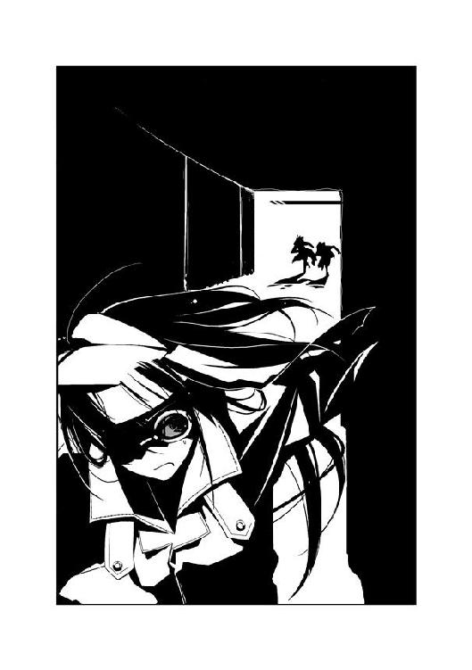
「......！」
危うく突き出た電線にぶつかりそうになり、思考を中断する。視界が悪い上に、気流もうまく読むことができない。全速で飛べない初季に、ついに後続の〝虫〟たちが追いつく。
まず攻撃を仕掛けてきたのは、〝あしたか〟だった。
目にも止まらない速度で十本の脚を動かし、初季の横の壁へまわる。〝よつめ〟のライトに照らされた初季めがけ、針のような脚を突き立てようとする。
「く......！」
初季はとっさに体をローリングさせ、攻撃をかわす。
だが〝あしたか〟の攻撃は止まらない。壁や天井、レールの上と移動し、四方から初季を追いつめようとする。
初季は懸命に旋回し、時には反対方向のレールへと回って攻撃を避ける。動ける範囲が狭いぶん、紙一重の回避行動が続く。今の速度でほんの少しでも壁と接触してしまえば、たちまちバランスを崩して墜落してしまう。
「だから狭いところなんて、大っキライなんだよん！」
四つ眼のトビケラが、初季に追いつく。二本の脚が飛び出し、初季を捕らえようとする。トビケラの腹部で大きな口器が蠢いていた。
上下左右から〝あしたか〟の針に襲われ、後方からは〝よつめ〟の顎が迫る。初季の逃げる道は前方にしかない。
「はっ......はっ......！」
終わりのない攻防に、初季の額から汗がしたたり落ちる。
前方に、明かりが見えた。レールが二股に分岐しているのが分かる。
さらに微妙な気流の変化を、初季は感じ取っていた。
「そんなに追いかけっこが好きなら......ちゃんとついてきてよん......！」
分岐点めがけて、初季は加速する。後方の追っ手たちは、彼女がどちらのレールへ突入するか判断できない。
中央の壁に激突する寸前、初季は体を回転させながら進路を変える技、バレルロールを披露する。急旋回し、滑るようにして左の通路へ飛び込む。
「......！」
方向転換が間に合わず、飛行部隊が急停止、もしくは逆の通路へと飛び込んでしまう。
「ちっ......！」
〝あしたか〟の舌打ちが聞こえた。彼はかろうじて初季についてきたようだ。だが〝よつめ〟は大きな躰が災いし、壁に接触してしまう。壁が破壊される轟音がこだまする。
「......仕事熱心だねぇ、〝よつめ〟たん」
だが〝よつめ〟は止まらなかった。壁に激突しながらも、初季に追いすがる。
そこへ、〝よつめ〟のライトとは異なる光源が、正面から現れた。
「でも、まだまだピンチは続くよん？」
ゴッ──という重い音と、激しい風圧が初季たちを襲った。
地下鉄を走る車両だ。
「んんっ......！」
激突する直前、初季は壁と車両のわずかな隙間へ飛び込む。
後方から、悲鳴が聞こえた。車両を避けきれなかったのだろう。〝よつめ〟が壁に叩きつけられるのが見えた。
車両とすれ違ったのは、数秒だった。乱れた気流の中、初季は懸命にバランスを保つ。数十センチの隙間を挟み、壁と車両の間を通過する。電車のクラクションが地下道に反響し、頭が割れそうになる。
再び激しい風とともに、車両がはるか後方へ過ぎ去っていく。
なんとか車両をやりすごし、初季は安堵の表情を浮かべた。だが──。
「あうっ！」
初季の右腕を、衝撃が走った。バランスを失い、キリモミ状態になる。
「くあっ！」
天井の電線に、激しく背中を打ちつける。だが、そのおかげで体の回転が止まった。地面に叩きつけられる直前、かろうじて翅を羽ばたかせる。
「くそっ、しぶといヤツだ......！」
壁を走る〝あしたか〟が、毒づいた。先ほどの車両をやりすごしたのは、初季だけではなかったようだ。
「かはっ！ はっ！」
軽口でも言い返してやりたいところだが、痛みで声が出なかった。涙を浮かべた目で、〝あしたか〟を睨みつける。
この地下道では、〝あしたか〟のほうが機動性で勝っているようだ。速度によるアドバンテージもないに等しい。
加速しながら、初季は天井を見る。
無数に張り巡らされた太い電線が目についた。見れば見るほど、邪魔な代物だ。通路を狭くしているだけでなく、たまに何本か飛び出していることもある。
だが、電線を見た初季の頭に閃くものがあった。
「アメンボは、おとなしく池にでも浮かんでなさいよぉ......！」
初季は不敵な笑みを浮かべ、〝あしたか〟の顔を見る。
「なんだと......！」
「前から言おうと思ってたんだよねん......！ 〝あしたか〟たんの〝虫〟って苔のニオイがするんだよねん。コッケー、コッケー、コケッコー」
頭を振り、勝手に節をつけて体をくねらす。
「〝からす〟の分際で......！ ぶっ殺す！」
初季の挑発にのった〝あしたか〟が、怒りの表情を浮かべる。
怒濤のように襲いかかる脚を、初季は残った力を振り絞ってかわす。
「コケー、コケー、コケッコー、コケッコー。......コケーッ！」
「うるせえっ！ だまりやがれっ！」
雨あられと降り注ぐ針の脚をかわし、初季は天井すれすれに舞い上がる。
「電車が止まっちゃったら、賠償金の請求書は特環あてでツケといてねん」
「なにを、ワケの分からないことを......！」
初季の頭を狙い、〝あしたか〟の〝虫〟が脚をふりかぶる。
突き刺さる直前、初季は体をひねる。尖った脚が初季の頰をかすめ、天井の電線を貫いた。
青白い火花が、〝あしたか〟と〝虫〟を包んだ。
「がっ......！」
身をのけぞらせ、〝あしたか〟が〝虫〟から落ちる。レールの上を転がり壁に激突する姿が、はるか後方へ置き去りにされる。
「うっわぁ、ホントに感電しちゃったよぉ......これだから、湿った風ってキライだよん」
湿気を含んだ空気にあたっていたため、〝あしたか〟の体は湿っていた。そこへ高圧電線を切断したことで、電流が流れたのだ。
〝あしたか〟の姿が消えると、静けさが地下通路を支配した。今の電線の切断によって、電車が止まったのかもしれない。
初季は速度を落とし、レールの上に着地する。疲労で踏ん張りがきかず、敷き詰められた枕木の上を転がる。
「う......くっ......」
立ち上がり、顔を上げる。傷ついた初季の体から、カラスヤンマが分離する。
「弱っちいと、ただ逃げるだけでも一苦労だよん......」
壁が途切れ、階段があった。整備用に備えつけられているのだろう。階段は地上に向かって伸びている。
鼻をすする音がした。それが自分のものだと気づき、涙をこらえている自分に気づく。
「あれれ？ あは......どうして、泣きそうなんだろ、アタシ......」
階段を上りながら、汚れたコートの裾で顔をこする。
「弱いのなんて、ずっと前からじゃん......もう慣れたよん、〝先生〟......ホントだよぉ？」
光がこぼれる扉が現れた。
初季は、立ち止まる。
この扉を開いて外に出た初季を、何が待っているというのだろう。誰が初季を待っているのだろう。初季の帰りを待っている人間なんて、三年前に一人残らずいなくなってしまった。このまま、カビくさい通路で息絶えたとして、誰がそのことを悲しむだろう？
詩歌と夕も、おそらくはもうどこかへ逃げてしまっているはずだ。彼女たちを縛りつけようとしている初季のもとへ、どうして自分から戻ってくるだろう？
「島に戻りたいよぉ、〝先生〟......島がなきゃ、アタシの夢なんて意味ないよぉ」
扉から漏れる陽射しに、故郷の面影が蘇る。
初季は壁につかまりながら、階段を再び上っていく。
「でも、このまま一人で消えるつもりなんてないよ、〝先生〟......」
今では故郷の思い出によって生まれるのは、激しい憎悪しかない。
「道連れにしてやる、あの女......！ アイツを殺すまで、どんな手を使ってでも生き延びてやる......！」
扉を開け、地下道を出る。
そこは線路沿いの土手だった。小さな道路を挟んで見えるのは、大きな解体工場のようだ。広い敷地に、錆びた自動車が山と積み上げられている。大型のクレーン車が、一台の自動車を摑んだまま停止していた。
初季は、微笑した。
「あはは、アタシのこと待っててくれたのぉ？ すっごい嬉しいよん......」
それは本音だった。自分のことを待ってくれている人物がいるなど、夢にも思わなかったから。初季の胸に、場違いな喜びが生まれていた。
自動車の山の頂に、金髪の少女が座っていた。
「ナメられっぱなしは性に合わねぇんだよ。決着をつけようぜ、〝からす〟」
斜陽を背に、〝霞王〟が不敵に笑った。
2.02 詩歌 Part. 2
詩歌は夕の手を引き、狭い路地を走っていた。
体が、重い。
長い間、ずっと施設に閉じこもっていたせいで、体力が衰えてしまっていた。すぐに呼吸が上がってしまい、胸が詰まる。
苦しい。
四年前、そして二ヶ月前のクリスマスにも、同じ苦しみと恐怖を味わった。
逃げては捕まり、捕まっては逃げる。
いつまで経っても、詩歌はその繰り返しだ。
──大助くん......。
心の中で、再会を約束した少年の顔を思い出す。
会いたい──。
詩歌は、唇を嚙みしめる。
同じ夢を持つ少年、薬屋大助。彼は詩歌に会いたいと言ってくれた。その言葉を信じて、彼との約束だけを支えにして二ヶ月間、孤独に耐えてきた。
だが、逃亡の身のまま、彼に会うことはできない。
たとえ今すぐに彼と会うことができたとしても、きっと二ヶ月前の繰り返しだ。詩歌が彼に会いに行ったとしても、迷惑をかけてしまうだけである。
利菜の画を取り戻したい一心で施設を飛び出した。
だが、もし画を手に入れられたとして、それからどうするかは考えていなかった。
初季は、詩歌に何かさせたいことがあるようだ。詩歌もまた、できるかぎり彼女の要望をききたいと思っている。
でも、その先は......？
行くあてなど、ない。
家族に別れを告げ、親友である利菜も失った。
今の詩歌には、何もない。あるのは、約束だけだ。希望というには遠すぎる、たった一人の少年との約束だけ。
「はっ、はっ......」
空を見上げると、数体の〝虫〟が飛んでいるのが見えた。
「か、隠れて」
夕を壁のそばへ押し、二人で木陰に入る。そのまましばらく息を潜めるが、〝虫〟たちは上空を旋回したまま消え去る気配はない。
「見つかっちゃった......初季さんが......〝霞王〟......」
夕は怯えきっていた。呆然とした顔で、詩歌の背中に張りついている。
詩歌は、消沈しかけた気持ちを奮い立たせる。
先のことを考えるのは、まだ早い。
白樫初季。
海老名夕。
二人とも、詩歌が出会った道連れだ。今の詩歌は、一人じゃない。
今は三人でこの状況から脱することが、先決だ。
「あ......！」
夕が背後を見て、声を上げた。
振り向くと、白コートを来た数人の人影が見えた。
詩歌と夕は手をつないだまま、横道にそれる。
迷路のような雑居ビルの間を通り抜けていく。しばらく走って、二人はまた足を止めた。
「また......！」
角を曲がろうとして、白コートの影を見つける。
二人は引き返し、別の道へ入る。
「こっちにも──」
ビルの屋根の上で、〝虫〟とともに周囲を見回している人物を見つける。
「夕ちゃん、こっち......！」
空き地の向こうに、低い壁があった。
二人は懸命に壁を乗り越え、薄暗い裏道へ出る。ゴミがいたるところに投げ捨てられ、異臭が漂う陰気な通りだ。しかし人影はない。
詩歌たちは足を止め、呼吸を整える。生ゴミの臭いに、思わず顔を歪める。
この辺りの地域は、完全に包囲されてしまっているようだ。
そのうえ──。
「どんどん、桜架市から離れていっちゃってます......！」
夕が絶望的な声を上げる。
彼女の言う通りだった。刺客を避けて走っているうちに、目的のルートとは正反対の方角へ逃げてきてしまった。
「明後日までに、桜架市まで行かなくちゃいけないのに......」
泣きそうな顔で、夕がその場に座り込む。
昼はとっくに過ぎ、影が長くなりつつあった。間もなく夕方になり、日が暮れるだろう。
それなのに詩歌たちは、赤牧市から脱出するどころか、三人が出会った場所よりも桜架市から遠ざかってしまった。あと二日間で赤牧市を脱出し、氷鉋市を抜ければならないというのに。
「どうしよう......どうしよう......」
夕がポケットからディスクを取り出し、握りしめる。
焦る気持ちは、詩歌も同じだった。詩歌たちもそうだが、今ごろ初季はもっと──。
「！」
詩歌と夕が、びくんっと体を震わせる。
突然、甲高い音楽が細道に響いたのだ。
「な、なに？」
単調な電子音によって奏でられる音楽は、ゴミが散らばる地面から聞こえた。
「クロール・ライヴ......？」
ぽつり、と夕が呟いた。詩歌は首をかしげ、夕を見る。
「今、人気の音楽バンドの曲です。でも、なんで......？」
「あ......」
詩歌は、地面の上で点滅する光を見つける。
「携帯電話？」
それは、一機の折りたたみ式携帯電話だった。音楽は着信音のようだった。
詩歌と夕は顔を見合わせる。
──どうしてこんなところに、携帯電話が？
二人が硬直している間も、音楽は鳴り続けている。
「......」
おそるおそる、詩歌は携帯電話に手を伸ばす。詩歌の背中にはりついた夕は、止めようとはしなかった。
かつて利菜が持っていた機種と同じだった。詩歌は携帯電話を拾い、耳にあてる。
「あ、あの......」
『落ち着いて聞いてください、〝ふゆほたる〟』
「......！」
詩歌は危うく、携帯電話を落とすところだった。
電話の相手は、前置きもなく淡々とした口調で語りかける。ひどく冷静な、だが幼さの残る少女の声だった。
『貴女たちは現在、ほぼ三百六十度を包囲されています。私の誘導に従ってください。赤牧市から脱出するのを補助します』
詩歌と夕は、言葉を失う。夕もまた携帯電話に耳を当て、少女の声を聞いている。
「あ、あなたは、誰......？」
『私のことは......エリィと呼んでください。〝ふゆほたる〟、赤牧市を離れてください。となりの黒菱市ならば、この街よりは安全なはずです』
夕が、詩歌の腕をつかむ。少女の顔には、めいっぱいの警戒心が浮かんでいた。
「どうして、私たちを......？」
『ワナだと疑っているんですね。従うも従わないも貴女の自由です。ただしこのままでは百パーセント、中央本部に捕まるのは間違いないでしょう』
エリィの言葉に、詩歌は言葉に詰まる。
『まずは、そこから離れてください。もうすぐそこを、戦闘班の見回りが通ります』
「......ひっ！」
突然、夕が身を引いた。詩歌はびっくりして夕を見る。
「このケータイ......電池がない......！」
携帯電話を裏返してみると、そこにあるはずのバッテリが装着されていなかった。
『はやく、東へ......！』
エリィの声が、鋭くなる。
「......」
一瞬、詩歌は迷う。
だがすぐに、詩歌は東へ足を向けた。
「詩歌さん......！」
あわてて夕が、詩歌のあとについてくる。
ワナかもしれない。
しかしこのままでは、エリィの言う通り、捕まるのは時間の問題だ。
薄暗い細道から出ると、そこは商店が建ち並ぶ閑散とした通りだった。錆の浮いたアーチの向こうに、自動車が往来する広い道が見えた。
今、抜けてきた細道の向こうで、人の声がした。先ほどまで詩歌たちがいた場所だ。
『やろうと思えば、貴女たちを追っ手のもとへ誘導することもできました。これで少しは信用してもらえるでしょうか？』
「あなたは、一体......？」
『私のことなど、どうでもいいです。それより貴女たちは、今すぐに赤牧市を脱出してください。黒菱市まで私が導きます』
「で、でも......」
『貴女が中央本部を憎む気持ちは、分かります。しかし今は、一刻も早く安全な場所へ──』
「憎む？ 私が、中央本部を......？」
詩歌は眉をひそめる。
『......まさか、ディスクの中身を見ていないんですか？』
エリィが、驚いたような声音で言った。
詩歌は、夕が握りしめるディスクを見た。夕が不安そうな顔で詩歌を見つめ返す。
「どうして、私が中央本部を憎むの？ このディスクと私に、なにか関係があるの？」
『......』
エリィが黙り込む。
詩歌の胸に、得体の知れない不安がひろがる。
──私が中央本部を憎む？ どうして......？
しかし、詩歌の問いかけを、エリィは無視した。
『......赤牧市で現在、〝ふゆほたる〟捕獲とディスク回収の任務にあたっている上位局員は、五人です。〝霞王〟、〝コノハ〟、〝トラマル〟、〝あしたか〟、〝よつめ〟......日が経つにつれ、他の任にあたっている戦闘員も結集してしまいます。彼らに接触しないルートは、黒菱市へ向かう道しかありません』
「だ、ダメ！ 私たちは明後日までに、桜架市へ──」
無意識に叫んでしまったのだろう。夕が言いかけ、あわてて口を閉ざす。
『桜架市？』
エリィの声に、困惑が混じる。考え込むように間を置いた後、言う。
『〝ふゆほたる〟......今さらなぜ、桜架市へ？』
「......」
詩歌は、答えない。夕もまた、口を閉ざしたまま黙り込む。
沈黙に、詩歌たちの固い決意を感じたのだろう。エリィはそれ以上、追及しなかった。
『......今から言うことを、よく聞いてください。そこから国道が見えますね？ まずは国道へ出てください。走って、東へ向かうんです』
「でも、それじゃ桜架市から離れちゃう！」
夕が叫ぶ。だがエリィは冷静に続ける。
『走って間もなく、地下鉄の駅があります。休まず、そのまま地下へ降りてください』
「地下鉄？」
『もちろん監視班が待ちかまえていますが、構わず改札を走り抜けてください。今から三分二十秒後までにです』
詩歌と夕は、視線を交わす。
『今、刺客はその周囲に集まっています。地下鉄に乗りさえすれば、追っ手も追いつくことはできない。包囲を抜ける最初の駅で降り、そのまま走ってすぐにその場を離れてください。氷鉋市のそばへ行くことができます』
「......！」
『急いでください、あと二分四十五秒後です。走って！』
鋭い声を最後に、通信が切れる。
詩歌と夕は、息をのんだ。
迷っている時間はなかった。
二人は商店街を、駆け抜ける。国道へ出て、東に向かう。
「あ......！」
振り返った夕が、恐怖のこもった声を上げる。
空に、黒い影がいくつも浮かんでいた。〝虫〟の集団だ。
詩歌たちに気づいたのだろう、空を飛ぶ〝虫〟が走る二人のもとへ近づいてくる。
「夕ちゃん......！」
足を止めそうになる夕の腕をつかみ、詩歌は走る。なりふり構わず走る少女たちを、すれ違う通行人が怪訝そうに振り返る。
前方に、地下鉄の駅を示す看板と階段が見えた。
二人は足を止めず、階段を駆け下りる。
地下へ降りると、すぐに何人かの人々が振り返った。改札に向かって駆ける詩歌たちを見ると、白いゴーグルを取り出して装着する。
──監視班......！
詩歌にとって、何度も追いつめられた敵だ。監視班は普段は一般人として、日常に紛れ込んでいる。
エリィの言葉に従い、詩歌たちは改札へと向かう。向こうに、停車した電車が見えた。
「き、切符は......？」
夕が戸惑いの声を上げる。
詩歌は構わず、改札口へ向かう。白いゴーグルを装着した人々が、二人に向かって駆け寄りつつあった。
ガタンッ、と詩歌たちの目の前で自動改札口が開いた。もちろん詩歌は切符を通してはいない。
「え......ど、どうして？」
詩歌と夕が改札口を抜けると、すぐにまた改札口が閉じた。追っ手のゴーグルたちが改札口にぶつかり、足を止める。
電車の発車を知らせる音楽が、ホームに流れていた。
──間に合って......！
祈りにも似た思いを胸に、全力で駆ける。
「あっ......！」
夕が、客の一人と肩をぶつけてしまう。手に持っていたディスクが、地面に転がる。
「夕ちゃん！」
「......！」
今にも発車しようとする電車とディスクの間で、夕が迷う。だが唇を嚙むと、少女は地面のディスクに飛びついた。
「急いで......！」
夕の腕をつかみ、詩歌は電車の入り口へ向かう。
だが、ディスクを拾った時間が命とりとなった。
──詩歌たちの目の前で、入り口の扉が閉じた。
「......！」
あと一歩で届かず、詩歌の手が閉じた扉を叩く。
電車が、ゆっくりと動き出す。
「そんな......」
間に合わなかった──。
詩歌と夕は、後方を振り返る。
白いゴーグルを装着した人々が、詩歌たちに迫りつつあった。
「......！ 詩歌さん！」
空気が抜ける音が、聞こえた。
夕の言葉に振り返ると、加速していく電車の後方の扉が開いていた。
開いた扉が、詩歌たちが立つ場所を通り抜けようとする。
「......！」
二人が電車に飛び乗れたのは、奇跡に近かった。少しでもタイミングを間違えば、車両に激突して大怪我を負っていただろう。
車両内の床に身を投げた二人の背後で、扉が閉じる。ホームに取り残された白ゴーグルたちの姿が、遠ざかっていく。
「はあ......はあ......」
荒い息をついて、二人が立ち上がる。
そんな二人に、周りの乗客たちの驚愕の眼差しが集まっていた。動き出した電車に飛び乗ったのだ、当然の反応だろう。
「ほ、ほかの車両へ......」
息を整える間もなく、詩歌は夕の手を引いて先頭の車両に向かって歩く。
危うく電車を逃すところだったが、なんとか追っ手から逃げることができた。
何もしていないのに自動改札が開いたり、動き出した電車の扉が開いたり、不思議な手助けが詩歌たちを救ってくれた。おそらくエリィと名乗った少女の仕業だろう、と心のどこかで納得してしまう。
二つほど前の車両で、二人は壁によりかかった。天井を見上げ、呼吸を鎮める。
「ごめんなさい......」
夕が、呟いた。ディスクを握りしめ、顔を伏せる。
「私、本当に足手まといだ......ごめんなさい、詩歌さん......」
謝る夕の肩が、小刻みに震えていた。もう少しで捕まるところだったという恐怖が、夕を怯えさせているのだろう。
詩歌は初季の言葉を思い出す。
──責任はとれるぅ？
昨日まで普通の中学生だった夕にとって、今の状況はあまりにも辛いはずだ。詩歌が思っているよりずっと、不安でいっぱいなのだろう。
「夕ちゃん......私がディスクを〝かっこう〟くんまで届けようか？」
夕が目を見開いた。
「やっぱり、私が邪魔なんですか？」
泣きそうな顔をして、夕が詩歌の服をつかむ。
「今も私、なにもできないし......本当は詩歌さんは、もっと強いんでしょう？ でも私がいっしょにいるから──」
「私は強くなんて、ないよ」
窓の外を、アスファルトの壁が物凄い速度で流れていた。反対方向へと向かう車両とすれ違い、ゴッという突風が車両を揺らす。
「もっと強ければって思ったこと、たくさんある。私がもうちょっと......自分の〝虫〟に負けないくらい強ければ、色んな人を傷つけたりしないですんだかもしれない。利菜だって、助けられたかもしれない......私はただ、誰よりも多く、傷ついていく人を見てきただけだから」
今まで、何人の人々が詩歌の前で倒れていったか数え切れない。
倒れる直前、詩歌の背中を押してくれた者もいた。夢を失う直前まで、詩歌を罵った者もいた。詩歌自身が傷つけ、また詩歌を守るために傷つき、詩歌はそんな彼らの最期を見届けることしかできなかった。
「もう誰も傷つけたくない......夕ちゃんがいなかったら、今ごろ私はまたたくさんの人を傷つけちゃっていたかもしれないもん」
詩歌は夕の顔を見つめ、言う。
「でも、夕ちゃんには夕ちゃんの大切な人がいるんだよね。夕ちゃんの帰りを待ってくれている人も......夕ちゃんが危ない目にあったら、その人たちはすごく悲しむと思う」
夕の顔に、動揺が走る。彼女には、たくさんの大切な存在がいるのだろう。
「センティピードっていう人も、最期の想いを受け取ってくれて嬉しかったと思う。それだけでも、夕ちゃんはすごく大切なことをしてくれたと思うの。だから、ここで私たちにその想いを託してくれるっていう選択もあってもいいと思う。夕ちゃんがこれ以上、怖い思いをすることはないよ」
夕が震える手で、ポケットからディスクを取り出す。
「わ、私......」
ディスクを、詩歌に向かってゆっくりと差し出す。
「うん」
詩歌は微笑み、ディスクを受け取ろうとする。
だが詩歌の手が触れる直前、ディスクが夕のもとへ引き戻される。メガネの奥で、少女の両目に大粒の涙が浮かんでいた。
「ダメなの......」
「......え？」
「友達も、パパとママも、すごく心配してるって分かってる......私も、怖くて怖くて、今すぐ家に帰りたい......でも、ダメなの......どうしてかな？ 私、初季さんが言ってたみたいに催眠術にかかっちゃったのかな......？」
夕がディスクを抱きしめる。
「私じゃなきゃ、ダメなの......だって、センティピードさんっていう人から受け取ったのは、私なんだもん......！ だから......だから、私が届けなきゃ......！」
必死に言う少女を見て、詩歌は微笑する。
今の夕ちゃんを見て、嬉しいと思っちゃダメなのかな──。
〝虫〟に夢を喰い尽くされ、命が果てそうになった四年前の自分を思い出す。
ねえ、〝かっこう〟くん......？
自分と同じ夢を持ち、詩歌の最期の想いを受け取ってくれた少年、〝かっこう〟。
彼は今、どうしているだろう？
物静かで、しかしとても強い少年だということを知っている。
彼にももう一度、会いたいと詩歌は思う。
もしまた〝かっこう〟くんに会えたら、ちゃんと謝るね──。
詩歌が施設を抜け出したことで、彼にも三度目の〝ふゆほたる〟捕獲命令が下ったかもしれない。そうしたら、彼は追っ手として詩歌の前に現れるのだろうか？
だが不思議と、詩歌は彼を怖いとは思えなかった。
いつも迷惑ばかりかけてゴメンね、〝かっこう〟くん──。
同じ夢を持つ〝かっこう〟に、心の中で謝る。
「居場所が、欲しいの。こんな私でも、そばに居ていいって言ってくれる、居場所......」
唐突な詩歌の言葉に、夕が怪訝そうな顔をする。
「それが、私の夢なの」
「詩歌さんの......夢？」
「どんなに怖い目にあっても、逃げ出したくなっても、忘れられないの。......夕ちゃん、今、とっても怖いよね？」
急に訊かれ、夕は戸惑ったようだ。だが躊躇いがちに頷く。
「逃げ出したい？」
夕はやはり迷いながらも、首を縦に振る。
「怖いのに、逃げ出したいのに、どうしても忘れられない想い......ある？」
ハッとして、夕が自分の手の中を見る。ディスクを握る手に、力が込められる。
「これを届けたい......！ 私が〝かっこう〟さんのところまで......私の手で......！」
「虫憑きの夢って、特別なのかな？ 夕ちゃんが受け取ったものって、ディスクだけじゃないと思うんだ」
詩歌は、夕を見つめる。夕は弱々しい顔で、しかしはっきりと頷いた。
にわかに周囲の乗客がざわめいた。
「ねえ、今、何かとすれ違わなかった？」
「なんだ？ 黒い、鳥みたいな......」
「いや、こっち側はもっと大きな──」
「......？」
詩歌と夕は、顔を上げる。
その時、詩歌の手の中から音楽が響いた。携帯電話の着信音だ。
二人は車両の端により、携帯電話を耳にあてる。他の乗客から非難の視線が集まる。詩歌は「ご、ごめんなさい」と小声で謝る。
『もう少しで捕まるところでしたね。真剣に逃げる気があるんですか？』
幼い少女の声で、いきなり叱咤が飛んだ。
夕がムッとした顔を浮かべる。
「あなたが、助けてくれたの？」
『もうすぐ次の駅です。準備は良いですか──と言いたいところですが、問題が起きました』
「え？」
『後方の車両に監視班が数人、乗り込んでいたようです。今、そちらに向かっています』
詩歌と夕は絶句する。
『次の駅に到着するのが早いか......きわどいところです。良いですか、〝ふゆほたる〟？ 駅に到着したらすぐに──』
通信が、いきなり途絶えた。
「......！」
車両の明かりが、消える。
非常灯に切り替わったのだろう。一瞬、真っ暗になった後に淡い蛍光灯の明かりが点灯する。
同時に、詩歌が持つ携帯電話から、青白い光が弾けた。
蝶々のような輪郭をした光は、翅にアルファベット〝Ｃ〟の形の模様が浮かんでいた。
周囲が暗くなると同時に、携帯電話から浮かび上がった蝶々の輪郭が弾けて消える。
「もしもし......？ エリィ？」
光を失った携帯電話が、沈黙する。呼びかけても、少女の返答は二度となかった。『原因不明の停電により一時停車します』というアナウンスが響いた。
地下を走る電車が減速していき、やがて完全に停止する。
「ど、どうしましょう、詩歌さん......監視班がもうすぐここに来るって......！」
焦る夕に腕を引かれ、詩歌は扉を見た。
扉の横には、緊急時のためのボタンがあった。手動によって扉を開けられるようにするための装置だ。
「......」
顔を見合わせたのは、一瞬だった。
夕が飛びつくように、緊急ボタンを押す。
周囲の乗客の視線を一身に浴びながら、二人で力を合わせて扉を開ける。
地下独特の、カビの臭いと湿気に満ちた空気が車内に流れ込む。
二人は車両から飛び降りる。
「詩歌さん、あそこ──」
地下道は、暗闇に包まれていた。
「はやく......！ 監視班が来ないうちに、あそこから外へ！」
詩歌は夕の指の先を見る。
地下道の奥、車両のはるか先に駅のホームが見えた。
2.03 初季 Part. 3
青播磨島は、人口が三百人にも満たない小さな島だ。
初季は青播磨島で、孤独に生まれた。
父は漁師だった。青播磨島に住む人々の職業といえば、漁師と農家ぐらいなものだ。他には数少ない公共機関くらいしかない。
母は島外の人間だったと聞いている。両親がどうやって知り合ったのかは、誰に聞いても教えてはくれなかった。
初季が母のお腹の中にいる時に、父が漁中の事故で亡くなった。母も初季を産んですぐに、病で亡くなった。
だが初季は、孤独には育たなかった。
島には同じような環境で独りになった子供が、初季の他に三人だけいた。彼らは福祉施設で共同生活を送っていた。兄妹として育った四人の中で、初季は一番若かった。初季は兄や姉にミルクを飲ませてもらって育った。兄や姉とはよくケンカをした。が、最後は初季のワガママが通ることが多かった。末っ子の初季を、優しい兄や姉は好きなだけ甘やかした。
学校で初季が差別をされたり、イジメを受けたりすることはなかった。生徒数が十数人ほどの小さな学校では、誰もが仲良くならざるを得ない。だが今思い返すと、それも兄や姉のおかげだったのだろう。彼らが品性正しく卒業してくれたため、ワガママ三昧の末っ子も受け入れてもらえたのだ。
初季は特に、青播磨島の夏が好きだった。朝日は暖かく、海は澄んでいた。砂浜がないせいで、外からの観光客が訪れることもない。丘に上ると、島の全貌と近海に浮かんだ漁船を見渡すことができた。
いつまでも、この島にいたい──。
そんな夢を初季が抱いたのは、ある意味では当然だったのかもしれない。島から離れたいという島民も多かったが、初季は青播磨島の外にはまったく興味がなかった。
初季が〝先生〟と出会ったのは、中学校に入学してはじめての年だった。
いつものように丘を上ると、見知らぬ青年が立っていた。ぼさぼさに伸びた髪が、風に揺れていた。
初季は最初、浮浪者だろうかと思った。だがよく考えると、浮浪者がわざわざ船に乗ってこんな辺鄙な島までやって来るとは思えない。
「なにしてるのぉ？」
初季は無防備に青年に近づき、ちょこんと横に座った。
「きれいな夢をさがしてるのさ」
突然の珍客に、青年が驚いた様子はなかった。初季を見下ろし、ニコリと笑った。
「君はどうして、こんなところに？」
訊かれ、初季は腹が立った。ここは初季が見つけた特等席だ。いきなりやってきた部外者に言われる筋合いはない。
「きれいな風と海をさがしてるのさぁ」
青年の口調を真似して、言ってやる。青年は苦笑した。
「そうか。じゃあ僕は、邪魔しちゃったのかな？」
「うん。邪魔ぁ」
「ごめん......って、謝ったほうがいいのかな」
「うん。謝ってぇ」
「ごめんね」
「......」
「もうちょっと、ここにいたいんだけど、いいかな？」
「ダメぇ」
「......容赦ないね」
青年は頭をかき、しかしその場から動こうとしなかった。仕返しのつもりか、悪戯めいた顔で初季を見下ろす。
「君のほうこそ、あまり僕のそばにいないほうがいいよ？」
「どうして？」
「僕はね、そばにいる人の夢を食べちゃうのさ」
「へぇー」
「......へぇー、って、それだけかい......？」
青年は、本島から新しく赴任してきた島医者だった。公共施設である小さな診療所が、彼の住処となった。
島で産まれた人間には優しいが、外部の人間には島民は冷ややかだった。医者と患者としてはともかく、診療所の外で彼が誰かといっしょにいるところを見たことはなかった。
用もなく彼のもとへ訪れるのは、初季だけだった。
「こんちはぁ、〝先生〟」
当たり前だが、青年には名前があった。だが初季は彼を〝先生〟としか呼んだことがない。
「あ、お花。どうしたの、これ？」
「患者さんの一人が持ってきてくれた......って言いたいところだけど、違う。自分で丘で見つけてきたのさ」
「綺麗ぇ。花ってどうして、どれも綺麗なんだろぉ？」
「見てもらいたいと思ってるからさ」
「そうなの？」
「噓。見てもらいたくないと思ってるだろうね」
「......どっち？」
「それが、彼らのワナだ。君が興味を持った。花粉を運ばせようとしているのさ」
「......ワケ分かんないよん」
「そう、花には自覚がないんだよ。せめてワナだと言ってくれれば、僕も迷ったりせずに摘むことができるのにね」
〝先生〟はそう言って、初季の顔を見た。初季は彼の言っている意味がまったく分からず、ただ首を傾げるばかりだ。
青年が初季から視線をそらし、苦笑する。彼のそんな姿は、まるで老人のように疲れ果てているように見えた。
「そんなおかしなことばかり言ってるから、〝先生〟は島の人となじめないんだよん」
初季の言葉に対し、〝先生〟はクスリと笑う。
「いいんだ。僕は、これで」
〝先生〟が島に来て、数ヶ月が経った頃だ。初季にちょっとした秘密ができていた。
カラスヤンマに似た奇妙な生き物に取り憑かれたのだ。
昆虫にも似たその〝虫〟は、初季に空を飛ぶ力をくれた。それが何なのかは分からなかったが、異常だということだけは分かった。兄や姉たちはもちろん、〝先生〟にも秘密にしていた。彼らに嫌われることが怖かったから。
あるいは〝先生〟に聞けば、正体が分かったかもしれない。彼は何でも知っていたし、そんな彼といっしょにいる時間は日増しに増えていった。彼だけになら、秘密を教えてもいいかなと思っていた。
そんなある日、〝先生〟が初季にネックレスをくれた。プラチナの鎖の先に、金の小さなリングがついていた。
「なに、これぇ？」
「僕の大切な......大切だった人から貰ったものだよ。君にあげる」
「いいの？」
「君に貰ってほしい。......いや、君が持っているべきだと思う」
「......ありがとぉ」
はじめて人を好きになったのだと、自分ではっきりと分かった。いつまでも大切にしようと心から思った。
「いつか、君が大切だと思える人のために使ってほしい。そうすれば、そのリングはたくさんの綺麗な夢を見られるはずだから」
「そんなの、ヤだよん。ずっとアタシが持ってるもん」
頰を膨らませる初季を、青年は眩しそうな顔で見つめていた。いつも漂っていた疲労感が、その時だけは和らいだように見えた。
その、翌日だった。
初季はその時の光景を一生、忘れないだろう。
──初季が育った島が、燃えていた。
何の前触れもない、突然の出来事だった。島全体から、荒れ狂う炎が吹き上がっていた。
まるで生きているかのように蠢く業火は、あっという間に初季たち兄妹が住んでいた家を包み込んだ。兄や姉たちは、炎に呑み込まれる間際まで初季を助けようとした。兄妹たちに突き飛ばされる形で家を出た初季は、その場から動くことができなかった。
そのまま立ちつくしていたら、初季も焼け死んでいただろう。だが〝先生〟のことを思い出し、おぼつかない足取りで診療所へと走った。
まるで地獄そのものの町を抜け到着した診療所は、やはり火に包まれていた。熱気のあまり近づくこともできなかった。
初季は〝先生〟の無事を自分自身に言い聞かせ、空を舞った。〝虫〟のことを隠している場合ではなかった。いつもの丘から町を見渡せば、生存者が見つかるかもしれない。
だが丘から見た光景は、初季を絶望させるにはじゅうぶんすぎた。
何もかもが燃えていた。
初季が通っていた学校も、診療所も、港も。すべてが業火に呑まれていた。
初季の脳裏に、炎に包まれる〝先生〟の姿が浮かんだ。
「ああ......あああぁああぁあ......」
自分が育った島が、いつまでも続くと思っていた幸せが、ゆっくりと灰になっていく。
いつまでも、この島にいたい──。
初季の夢が、眼前で灼けてなくなっていく。
呻き声を上げることしかできない初季のもとへ、一人の女がやって来た。
「見つけた......私の、可愛い子」
特別環境保全事務局中央本部、副本部長、魅車八重子──。
見るものすべてを縛りつける、鎖の笑みを持つ女。
あとになって知ったのは、青播磨島の惨事は当時の本部長の暴走として処理されたということだ。島を燃やした理由は、当事者の初季にさえ知らされることはなかった。ただ噂で知ったのは、当時の青播磨島のどこかに〝始まりの三匹〟のうちの一体がいたらしいということだけだ。初季が虫憑きになったのが、その証拠である。
〝三匹目〟と呼ばれるそれは、同化型の虫憑きを生むとされている。だが発見例が極めて少ない上に、虫憑きにされた本人も自分が誰によって虫憑きにされたのか分からない。そんな理由もあって、〝三匹目〟の特定は難しいとされている。
「許してくれるわよね？ だって私はこんなにも、あなたのことを愛しているのだもの」
八重子に抱かれながら。彼女の笑顔に恐怖し、震えながら。
あの時に抱いた決意を、初季は決して忘れない。
復讐してやる──。
兄や姉を奪った特別環境保全事務局に。
〝先生〟を奪った、魅車八重子に。
皆の痛みを、こいつら全員に味わわせてやる。地獄の苦しみにもだえ苦しむ様を、笑って見下ろしてやる......！
──夢を失ったその日から、その願いだけが唯一の生きる支えとなった。
「ここらへんにはオレ様しかいねぇ。だが逃げようってんなら他の連中を呼ぶぜ」
積み上げられた廃車の上で、〝霞王〟がニヤリと笑う。
金髪の少女を、黒い霧が包み込んでいた。あの霧が、彼女の〝虫〟の形態である。時には外部からの攻撃を遮り、時には鋭い爪となって敵を攻撃する。まさに攻守一体の武器である。先ほど上空から地面に叩きつけられたというのに、〝霞王〟は傷一つ負っていない。
「そんなにアタシに会いたかったんだぁ。好きになっちゃいそうだよん、〝霞王〟たん。でもどうしてここが分かったの？」
傷ついた初季のもとへ、カラスヤンマが舞い降りる。一瞬にして黒い触手が初季と同化していく。背中に生まれた四枚の翅は、しかし疲労のせいで動きが鈍い。
「てめぇの脚を見てみろよ」
言われるがまま、初季は右足を見る。〝霞王〟の攻撃によってできた傷に、黒い霞がまとわりついていた。
「オレ様の〝虫〟の一部だ。オレ様がそれを解除しないかぎり、どこへ逃げようと簡単に分かるんだよ」
「なるほどぉ......ベンリだねん」
「殺す前に、いちおう聞いておいてやる。てめぇがディスクを持ってるのか？」
〝霞王〟の問いに、初季はわずかに目を見開く。
初季のような小物を捕らえるためにしては、作戦が大がかりすぎると思っていた。すべて、夕が持っていたディスクを奪回するためだったのだ。
しかし、まさか真っ先にディスクの在処を聞かれるとは思わなかった。
「詩歌たんの居場所より、ディスクのほうが大事なわけ？ 〝霞王〟たん......まさかそんなわけ、ないよね？」
にわかに信じられない思いで、たずねる。
「夕たんはセンティピードから預かったって言ってたけど、アタシは全然信じてなかったんだよねん。だってセンティピードは欠落者になったはずだしね。でも、もしかして......ホントにホンモノだったりして」
「興味ねぇな」
〝霞王〟が無表情に言い放つ。
「オレ様は施設から脱走したセンティピードとやらをつかまえて、ディスクを回収するよう命令された。センティピードが本物だろうと偽物だろうと、どっちでも構わねぇんだよ」
〝霞王〟ほどの上位局員に命令が下され、しかもそれは〝ふゆほたる〟捕獲より優先される。
──どうやら、思ってた以上にだいそれたモノだったみたいだねん。
初季は自分の認識をあらためる。
夕が持つディスクは、〝ふゆほたる〟と同じかそれ以上の価値があるらしい。
「えへへぇ、ディスクはアタシが持ってるよん」
初季はでまかせを言うが、〝霞王〟は微塵も動じない。
「どっちにしろてめぇの言葉を信じる気はねぇよ。殺してからじっくり身体を調べてやる」
「やん、〝霞王〟たんのえっちぃ」
バカみたいにアンバランスな会話だ、初季は思った。〝霞王〟は本気で戦闘モードに入っているのだろう。初季の軽口に乗ってくる様子はない。
初季を見下ろす〝霞王〟の顔には、笑みが張りついていた。心から楽しそうな、異常とも言える愉悦の笑みだった。
「実は、オレ様も楽しみなんだよ。二ヶ月前の葉芝市の戦いには参加できなかったが、その発端になった〝ふゆほたる〟奪回よりも優先される任務......この意味が、てめぇに分かるか？ あの戦いより、もっと大きな戦争の臭いがするよなぁ？」
初季は苦笑する。
「〝霞王〟たんは、戦いが大好きなんだねん」
「大好きだねぇ。中央本部に来たのも、ここがどこよりも多く戦う機会があるからだ」
「アタシは戦うのなんて大っキライだよん......島の空を飛べれば、それでシアワセだったんだけどなぁ」
青播磨島の空を、思い出す。とても空気が澄んでいた。天気の良い日は、海がキラキラと輝いていた。太陽と海の間を飛ぶことが、初季にとってなによりの幸福だった。
「そんな甘っちょろいことを言ってるから、故郷を奪われるんだよ」
〝霞王〟が、廃車の山から飛び降りる。
「弱ぇヤツは、なにを奪われても文句が言えねーんだよ、自分の命さえもな！」
「あははぁ、アタシから命まで奪おうっていうの、〝霞王〟たん？」
初季は眉をつり上げる。
「このアタシから......！ まだ奪い足りないっていうの、〝霞王〟っ！」
頭上から、〝霞王〟の無数の爪が振り下ろされる。
初季はとっさに真横に飛び、攻撃をかわす。〝霞王〟が地面に着地し、間をおかずに新たな爪を生む。初季は急上昇し、上空へ避難する。
「てめぇの背中は、見飽きたぜ......！」
鋭い爪が、次々と周囲の廃車を突き刺していく。霞によって支えられた爪が、串刺しにした車を持ち上げる。
「......！」
地上を振り返った初季の眼前に、数台の自動車がアップに迫った。
「あぐっ......！」
よけきれず、軽自動車が初季の肩を打つ。失速し、初季は地上近くまで落下する。
〝霞王〟が爪で突き刺した自動車を、空に放り投げたのだ。分かっていたことだが、圧倒的なまでのパワーである。
地上すれすれで、初季はかろうじてバランスを立て直す。そこへすかさず、〝霞王〟の斬撃が襲いかかる。
初季は紙一重で攻撃をかわすが、徐々に追いつめられていく。〝霞王〟の射程範囲に入ってしまった。うかつに背中を見せようものなら、その瞬間に串刺しである。
隙を見て、初季は背中の二本の触手を伸ばす。そばに落ちていた車のドアへ触手を巻きつけ、〝霞王〟に向かって投げつける。
だが、金髪の少女を囲む霧は、あまりにも簡単にドアを弾いた。攻撃をした初季が笑ってしまうくらい、逆襲と呼ぶにも拙すぎる結末だ。
火種三号の〝霞王〟と、無指定の兵隊にすぎない初季。二人のパワーの差は歴然だった。
「じっとしていれば、ひと思いに殺してやるぜ！」
疲労と傷のせいで、自分の動きが鈍っていくのがはっきりと分かった。
──こんな終わり方なんてイヤだよぉ、〝先生〟......！
血が滲むほど強く、唇を嚙みしめる。
どうして自分は、こんなにも非力なのだろう。
三年という月日が経ち、日増しに増えていく憎悪と怒り。故郷を奪われた恨みのほんの一欠片も報いることすら、できない。すべて初季に力がないせいだ。
──力が欲しいよ、〝先生〟......強くなりたいよん......！
爪に弾き飛ばされ、初季は地面を転がる。廃車の山に激突し、呼吸が止まる。
「ぐっ......う......！」
「はあっ、はあっ......無指定のザコのわりには、楽しめたぜぇ」
倒れた初季のもとへ、〝霞王〟が歩み寄る。
疲労と激痛でかすむ視界に、〝霞王〟の笑みが映った。彼女の背後に見えるのは、巨大なクレーン車だ。
「〝霞王〟たん......」
「ああ？」
〝霞王〟が、振り上げた爪を止める。
「思えば、〝霞王〟たんとは長い付き合いだよねん......トモダチのよしみで、最後のお願い聞いてくれない？」
金髪の少女が、黙り込む。突然の初季の言葉に、警戒しているようだ。
「てめぇと友達になったおぼえはねぇな。だが、遺言くらいは聞いてやるぜ」
「アタシの故郷......青播磨島を燃やしたのは、誰？ 命令したのはあの女だってことくらいは、分かってるんだけどねん......あの時、〝霞王〟たんもあの島にいたでしょぉ？」
「......オレ様の知ったことじゃねぇな。あの時はまだ、オレは東中央にいた。思う存分戦えるって聞いて増援として島に出向いただけのことだ」
「そっかぁ......」
「オレからも、最後に訊いておいてやる」
金髪の少女の顔からは、笑みが消えていた。
「〝ふゆほたる〟を脱走させ、ディスクを持つガキを助け......てめぇは一体、なにがしたかったんだ？ どこへ行こうとしていた？」
「......分かんないのぉ？」
「復讐か？」
〝霞王〟の表情に、陰りが落ちた。なにか思うところがあるのか、唇を引き締める。
「......今からでも、遅くねぇ。〝ふゆほたる〟の居場所と、ディスクの在処を言え。そして桜架市へ逃げろ。副本部長もてめぇごときを追ったりはしねぇ。東中央なら、かくまってくれるはずだ。オレから〝かっこう〟に頼んでやっても──」
「優しいねん、〝霞王〟たん......甘いのは、そっちだよん」
初季は、ゴーグルの奥で顔を歪める。握った拳に、力が込められる。
「あの女はアタシなんか眼中にないんだろうねん......それが一番、ムカつくんだよねんっ！」
金属がこすれる音が、頭上から響いた。
「......！」
〝霞王〟が空を仰ぐ。
積み上げられた廃車の頂上、クレーン車のフックがかかった自動車が傾きつつあった。
金髪の少女が動揺した隙をつき、初季は勢いよく真横に飛ぶ。
──初季の背中から伸びた触手が、地中を這ってクレーン車に繫がっていた。
会話をしている間、〝霞王〟に気づかれないよう地中で触手を伸ばしていたのだ。限界まで伸ばした触手はワイヤーを伝い、フックの先に伸びていた。
クレーン車のワイヤーを利用し、初季の触手が頂上の廃車を動かしたのだ。
「うおおおっ！」
廃車が、地面に落下する。金髪の少女の姿が、錆びた車体に呑み込まれた。
震動でバランスを崩したのだろう。廃車の山が雪崩を起こし、大量の車体があっという間に少女がいた場所を覆いつくす。
「はっ......はっ......！」
初季は地面に着地し、荒い息をつく。触手が元の長さへ戻る。
土煙がおさまり、沈黙が解体工場を支配する。
「あははぁ......」
笑みを浮かべ、初季は立ちつくす。
「これでも、ダメかぁ......どぉしよっかな」
初季の脚に刻まれた傷にまとわりついた霞は、消えていなかった。
「よぉく分かったぜぇ、〝からす〟」
廃車の山を、中から飛び出した爪が吹き飛ばす。
──姿を現したのは、無傷の〝霞王〟だった。
「いつの間にか、てめぇもいっぱしの戦士になってたんだな。......もう手加減も油断もしねぇ。全力でてめぇを倒してやる」
初季は残った力を振り絞り、宙に浮く。そして〝霞王〟めがけ、一気に急加速する。
「おらぁっ！」
斬撃の雨が降り注ぐ。
初季は体を回転させ、急旋回し、爪を次々とかわしていく。ついに〝霞王〟のもとにたどり着くと、金髪の少女の体を霧ごと触手で摑む。
そのまま急上昇し、〝霞王〟とともに空高く舞い上がる。
「無駄だぜ！ どんなに高いところから落とされたところで、オレ様には効かねぇ！」
風が初季の頰を叩く。〝霞王〟の金色の髪が風に激しくなびく。
少女の言葉を無視し、初季は一直線に雲を目指す。
〝霞王〟が空中で、漆黒の爪を生んだ。鋭い先端が初季を狙う。
「くっ......！」
だが初季は急角度で旋回を繰り返し、爪を左右に揺さぶる。狙いが定められず、〝霞王〟が舌打ちする。
初季は空に向かって、加速し続ける。
加速する。
加速する。
「うっ......？」
少女が顔色を変えたのは、雲に手が届くほどの高さまで到達した頃だった。
「て......めぇ......！ まさ......か......！」
初季の狙いに気づいたのだろう、〝霞王〟が漆黒の爪を振り回す。
切っ先が初季の脚をかすめ、激痛に襲われる。
だが初季は、飛翔し続ける。
空へ。
──あんなに急に飛んだり止まったりされたら......！ 息が......！ 頭に血も......！
夕が言っていたのだ。そのあと、彼女は眠りにつくまでその時のことをブツブツと文句を言っていた。
「ふざ......んな......！ オレ様は......誰......負け......れねぇん......！」
〝霞王〟の叫び声が、次第に遠くなっていく。
雲を突き抜ける初季の視界が、真っ白に染まっていく。
同時に、意識が朦朧としていく。
感覚が次第に薄れていき、白かった視界が黒く染まっていく。
そして見えたのは、いつもの幻覚だった。
深い闇の中、何かに向かって手を伸ばす自分。狂おしいほどに何かを欲して闇をつかもうとするが、手の中には何も残されていない。
──アタシは、何も手に入れられない......何も取り返せない......。
幻覚も消え去り、初季は速度を落としていく。
強い陽射しに、ゴーグルから零れた透明の滴が輝く。
──そんなこと、分かってる......でもアタシは頭が悪いから、他にどうしていいのか分からないんだよん、〝先生〟......。
「......」
数分後、初季は地上に降り立った。
気を失い、ぐったりとした金髪の少女を触手から解放する。
急激な加速によって脳に流れる血流が止まり、ブラックアウトを起こしたのだ。戦闘機のパイロットなどが起こす症状である。
「......」
気絶した〝霞王〟を、初季は見下ろす。自分の脚にまとわりついていた霞も、少女が気を失うと同時に消え去っていた。
〝霞王〟もまた、三年前のあの日に青播磨島にいた人物の一人だ。復讐の一部を果たしたといっても、いいのかもしれない。
だが、初季は何も感じなかった。格上の虫憑きに勝利した歓喜すらもわかない。
「......」
無言で、首からさげたネックレスを握りしめる。〝霞王〟を見下ろしている自分が、なぜかむしょうに悲しかった。
金髪の少女をその場へ残し、初季は身を翻す。彼女の体から、カラスヤンマが離れる。
「えへへぇ、〝霞王〟たんに勝っちゃったよん、〝先生〟......」
傷ついた体をひきずるようにして、解体工場をあとにする。
「スゴイでしょぉ......自分でも信じられないよん......」
一人で呟く声に、涙が混じっていく。言葉の後半は、そばの線路を走る電車の音でかき消された。
「......褒めてよぉ、〝先生〟......〝先生〟ぇ......」
この三年間で、孤独にも慣れた。
大事な人たちを失った悲しみも、ようやく癒えてきた。
逆に、復讐を思う気持ちだけは、ふくれあがっていった。
──そう、思っていた。
「島へ......帰りたい......帰りたいよぉ......もう戦うのも、やだ......お兄ぃやお姉ぇ、〝先生〟がいた島へ帰りたいよぉ......！」
だが、初季は三年前から何も変わっていなかった。
独りでいることがたまらなく寂しいし、故郷は恋しい。復讐なんてどうでもいいと思ってしまうくらい、悲しくてたまらない。
自分の足は、自然とある目的地を目指していた。
そこには誰もいないことなど、分かっている。今さら初季を待っていてくれる人間など、一人もいないことなど知っている。
だが、初季はそこへ向かわずにはいられなかった。他に行くあてなど、あるはずがない。他に帰る場所など、あるはずがない。
冷水橋のふもとへ着いた時、太陽はすでに赤く染まっていた。
水面に浮かぶ屋形船を見ながら、橋の下につづく階段を降りる。剝き出しになった土手に、人の姿は見えなかった。
初季の体から、力が抜けていく。意識が混濁していくのは、〝虫〟が自分の夢を喰いすぎたからだろう。
「あははぁ......ここがアタシの死に場所かぁ」
分かっていた。誰も初季を待ってなどいないということは。
初季が笑いながら倒れようとした時だった。
「も、もう来ないんじゃないですか、詩歌さん？ 〝霞王〟にやられちゃったとか......」
「大丈夫、初季はちゃんと来るよ」
「さっきから、そればっかりじゃないですか......！ そ、それとも、初季さんが私たちを見放したとか......」
「......」
「な、なんで黙っちゃうんですか！ 否定してください、詩歌さん！」
初季は目を見開いた。その声は、決して幻聴などではなかった。
目を凝らし、橋の陰を見る。段ボールで作った壁の向こうに、揺れる二つの頭が見えた。
初季の体に、力が蘇る。胸からこぼれ落ちかけていた夢の欠片が、ゆっくりと元の形を取り戻していく。
──〝先生〟......。
初季は、うつむいた。自然と口元に笑みが浮かんでいた。
──また、死にそびれちゃったみたいだよん、アタシ......。
顔を上げる。
「がおーっ！」
初季が大声を上げると、段ボールの向こうの頭がビクリと揺れた。
「〝霞王〟だぞー！ 食ーべーちゃーうーぞー！」
詩歌と夕が、顔を出す。二人の顔に浮かんだのは、安堵の笑みだった。だがすぐに夕は怒った顔をする。
「初季！ 無事だったんだ......！」
「わっ、私はこのまま逃げちゃおうって言ったんですよ！ でも、詩歌さんが三人で桜架市に行く約束をしたからって、きかないから......！」
「初季、怪我してるの？」
「こんなの気合いで治るよん。それよりお腹すいたよん、夕たん、なんか買ってきてぇ」
「......」
「どうしたのぉ、夕たん」
「あの......私、足手まといにならないようがんばりますから！ だから......！」
初季は微笑する。夕の言葉がなければ、〝霞王〟に勝てはしなかっただろう。
「夕たんは、足手まといなんかじゃないよん」
「だから、私も......え？」
「そんなことより、ステーキか焼き肉食べたいよぉ。夕たん、肉買ってきて、肉ぅ」
「そ、そんなお金、ありません！」
「お肉......」
「詩歌さんも、期待しないでください！」
夕暮れの橋の下、三人の少女たちの声はしばらく続いていた。
2.04 詩歌 Part. 3
赤牧市を脱出した三人は、氷鉋市のはずれにある建物をのぞきこんでいた。
「誰がいたって、べつにいーじゃん。こんなところまで特環の追っ手はこないよん」
「そ、それ以前の問題です！ こんなところを誰かに見られたらと思うと......昨日みたいに空き家をさがしたほうがいいですって、絶対！」
「えー、やだよん。詩歌たんも、あんなに寒いのはもうヤでしょー？」
「う、うん。あ、でも、ええと......」
「いいから行こうよぉ、ほら、どーん！」
初季に突き飛ばされ、詩歌と夕は敷地内に入る。
「な、なにするんですか、初季さん！」
「いらっしゃいませー」
「自分で言わないでください！」
「フロントはあっちだって書いてあるよ」
「だ、誰もいませんよね？ 無人のところを探したんだから、当たり前ですけど......こ、これどうやるんでしょう？」
「あ、この部屋が広そうだよぉ。すごぉい、換えの下着の販売機もある。ちょうどいいや、ぽちっとなぁ」
「あー！ そこ、高い部屋じゃないですか！ 安いところにしようって、あれほど──」
「あ......誰か来たみたい」
「きゃー！ ほら、早く行きましょう！ 早く！」
三人はエレベータに乗り込み、夕が持つカギに刻まれた番号の部屋を目指す。
廊下でカップルとすれ違い、詩歌と夕は壁によって道を空ける。
「いえーい、愛し合ってるぅ？」
「か、からまないでください、初季さん！」
三人は目的の部屋に逃げ込む。だが部屋に入ってからも、騒ぎはおさまらない。
「いいですか、お金はこれで大分減っちゃいました。あと、ここで休むのはちょっとだけですからね。時間もないし、それ以上ここにいると延長料金がかかるんですから」
「詩歌たん、ジュース飲むぅ？」
「う、初季さん！ 勝手に冷蔵庫開けないでください！ お金がないって──」
「あ......」
「きゃー！ 詩歌さん、テレビ！ け、消して！ そ、そんなの見ちゃ......！」
「うまーい、もう一杯」
「飲むなー！」
橋を渡り、氷鉋市に入った頃には夜になっていた。
夜の移動は危険すぎるという、初季の意見に従うこととなった。三人とも疲れきっていたこともあり、なけなしの持ち金を使って宿泊施設を使うことにしたのだ。だからといって、高級ホテルに泊まるわけにもいかない。
そこで詩歌たちは、いわゆる特定目的のためのホテルで一夜を明かすことを思いついた。受付も無人なため、少女の三人組でも怪しまれないと踏んでのことだ。
外観は古びた建物だったが、部屋の内装はきれいだった。大きなダブルベッドの他に、テレビや冷蔵庫もある。
「シャワーもーらいっ。詩歌たん、これ持ってて」
顔を赤くしてテレビを消した詩歌に、初季がネックレスを渡す。
「大事なモノだから、なくさないでねん。それとも、いっしょに入るぅ？ たっぷり可愛がってあげるよん？」
「は、入りません！ 可愛がるってなんですか！」
答えたのは、詩歌ではなく夕だった。
「大切なモノ......」
詩歌は、受け取ったネックレスを見る。銀色の鎖の先についたリングが、照明を反射して金色に輝いていた。
「もしかして、恋人からのプレゼントですか？」
夕が冷やかすように訊く。初季は頷いた。
「いやぁ、照れますなぁ」
「え！ ホントにそうなんですか？」
「初季、恋人がいるんだ」
「特環に殺されちゃったけどねん」
セーターを脱ぎながら、初季はあっさりと言ってのける。
詩歌と夕はびっくりして、初季を見る。
「え......？」
「なんちゃってねん。そのネックレスは、なんていうのかなぁ。生まれ故郷の形見みたいなものかな。他のものは何もかも、みんな燃えちゃったからねん」
淡々と喋りながら、初季はその場で次々と衣服を脱ぎ捨てていく。ターバンをはずした額に、火傷の痕のようなものが見えた。
「ど、どこで脱いでるんですか！ バスルームで脱いでくださいよ！」
「べつにいーじゃん。細かいこと言う子は、強制連行だ。そぉーれ」
「なっ......い、いっしょになんて入らないって、さっき......！」
夕が、裸になった初季に連れ去られていく。バスルームで二人が騒ぐ声が聞こえる。
とり残された詩歌は、手の中のネックレスを見る。
──自由になっちゃったら、アタシにはなにも残らないよん。
以前、初季が言っていた台詞を思い出す。
「......」
詩歌は無言で、ネックレスを握りしめた。
三人ともシャワーを終えると、すぐにベッドにもぐりこんだ。ベッドは一つしかないため、夕を真ん中にして三人で並んで寝る。
疲れがたまっていたのだろう。少女たちは会話をすることもなく、すぐに寝息を立てる。
──詩歌が心地好い睡魔に身を委ね、どれくらいの時間が経っただろうか。
かすかな物音に気づき、詩歌は重いまぶたを開いた。
視界の中を動く人影があった。
初季だ。
ベッドに入った時は下着姿だったが、長身の女性は衣服をまとっていた。ハンガーに向かって、ごそごそと何かをしている。
「......！」
初季が手にしたのは、一枚の磁気ディスクだった。夕の服のポケットからこっそり取り出したのだ。初季がベッドを振り返る。
詩歌はとっさに目を閉じた。静かな寝息をたてる詩歌と夕を見て、初季が動く気配がした。
再び目を開けた詩歌の視界に、部屋を出て行く初季の背中が映る。自分のコートとゴーグルも持っていた。
──初季......？
戸惑い、詩歌はすぐそばで寝る夕を見る。メガネをはずした少女は、熟睡している。
「......」
詩歌は、こっそりとベッドを出た。上着を着て、初季のあとを追い部屋から出る。
廊下に出ると、すでに初季の姿はなかった。
焦って周囲を見回す。
廊下の先、非常階段につながる扉が開いていた。詩歌は小走りに扉へ向かう。
いつの間にか、朝が近づいていたようだ。明るくなりつつある空が詩歌を迎えた。
初季が非常階段に座っていた。詩歌は反射的に扉の陰に隠れる。
詩歌が見守る中、初季がゴーグルを装着する。空気が抜ける音とともに、ゴーグルの脇、耳の上あたりに細長い空洞ができる。そこへ初季がディスクを挿入した。
「......」
しばらくの間、初季は身動き一つしなかった。
数分が経ち、ゴーグルがディスクを排出する。だが初季は動かない。詩歌は怪訝に思ったが、初季の肩が小刻みに震えていることに気づいて息をのむ。
「......殺してやる......」
ぽつり、と初季が呟いた。そのあまりに低い声に、詩歌の心臓が跳ねる。
「あの女、いつか絶対にこの手で死ぬ以上の苦しみを与えてやる！ どうして、こんなことができるんだよん......！ まさか、センティピードが本物だったなんて......これじゃあ、詩歌たんが......虫憑きを死ぬまで何度でも兵隊にするつもり──」
ぶつぶつと呟く初季が放つ迫力に、詩歌はたじろぐ。足がかかり、ガタンと扉が音をたてる。
「あ......」
ピクリ、と初季が体を硬直させた。ディスクを手に取り、ゴーグルをはずす。
「このままアタシが逃げちゃうと思ったぁ、詩歌たん？」
振り返った初季の顔には、威圧するような笑みが浮かんでいた。
「そんなわけ、ないじゃん。これから詩歌たんに、いろいろとやってもらわなきゃいけないんだからねん。アタシは逃げないし、詩歌たんを逃がしもしないよん？」
初季の表情に気圧され、詩歌は身を竦ませる。
「初季......」
「なぁに？」
「初季は一体、なにをしようとしているの？ 私に、何をさせようとしているの？」
「それはまだ、教えられないよん。でも......」
初季が詩歌の腕をつかむ。その力の強さに、詩歌は顔を歪める。
「詩歌たんを助けたのは、アタシなんだからねん？ 欲しいものを手に入れたあとは、約束通りアタシの言うことを聞いてもらうよん？」
「......」
「お返事は？ ハイ、わかりました。でしょぉ？」
「私が初季の言うことを聞けば、初季は楽になれるの？」
詩歌の問いかけに、初季の顔から表情が消える。
「ネックレスの話、本当なんでしょう？ もし初季がやろうとしてることが復讐とか仕返しなら、私......！」
最後まで言うことはできなかった。初季が詩歌を乱暴に突き飛ばしたからだ。
「なに、それぇ？」
初季が顔つきを変えていた。怒りを露に、詩歌を睨みつける。
「アタシの言うことが、聞けないの？ だったら、今ここでお遊びも終わりだよん？ 特環に居場所をバラして、道連れにしてやるからぁ！」
「だって、復讐なんて──」
「詩歌たんに何が分かるの？ 目の前で家族が焼かれたことがある？ 大好きな人が焼き殺されたことがある？ 大事なもの全部、目の前で焼けてなくなっていくのを見たことがあるっていうのぉ？ 詩歌たんはアタシと違って強いから、そんなキレイごとが言えるんだよん！ アタシみたいにバカで力もない人間が、ほかにどうやって──」
「やられたらやり返すことしかできないって人がいたの！」
たまらず、詩歌は大声を出した。詩歌がはじめて叫ぶのを見て、初季が黙り込む。
「でも、死んじゃったの......！」
思い出すと、涙が浮かんだ。詩歌にそう言った少女は、あっという間に彼女の前から去っていってしまった。
「利菜は......死んじゃったんだよ......！」
初季が驚いた顔をする。だがすぐに苛立ったように顔をしかめる。
「アタシが死んでも、詩歌たんには関係ないでしょぉ？ 秘種一号の強い詩歌たんには、分かんないだよん」
「自分の夢を忘れて、仕返しのためだけに苦しんでる人なんて、もう見たくないよ......強い虫憑きなんて、本当は一人もいないんだよ......」
詩歌は、初季の顔を見上げる。
すると一瞬、ターバンの少女の瞳が光を失った。ハッとして、頭を振る初季。
「......！」
詩歌には分かった。間違いない。自分の〝虫〟に夢を喰い尽くされようとしている兆候だ。
「初季──」
体を支えようとした詩歌の手を、初季が払いのける。
「もう遅いの！ 三年間、ずっとあの女に復讐してやることだけ考えてたんだからぁ！ アタシの手はもう......何もつかめないの！ 何も取り戻せないの！ だからこの手は、あの女の首を絞めるために使ってやるの！ この手は、あの女を殺すためだけにあるの！」
怒りにまかせ、初季が詩歌につかみかかる。だが詩歌は、彼女の手を両手で包み込む。
「私は、弱いよ......たぶん初季よりも、ずっと」
「そんなわけないよん！ アタシが詩歌たんくらい強ければ......！」
「だから、こうしてると安心する。誰かの手に触れていられると、少しだけ安心できる......今までずっと一人だったから......初季の手に触れてると、安心するよ」
初季の瞳が、動揺したように揺れる。
「初季の手は、こうするためにあるんだよ......」
「......！」
ターバンの少女が、顔を歪めた。詩歌の目には、彼女が今にも泣き出しそうに見えた。
「さっ──」
初季がうつむき、叫ぶ。
「さわんないでよぉっ！」
またも初季が、力まかせに詩歌を突き飛ばす。柵にぶつかる詩歌から顔をそらし、触れられた手を守るように自分の胸で抱きしめる。
「詩歌たんも、アタシから奪おうとする......！ アタシがこの気持ちまでなくしたら......恨みまで奪われたら......！ 奪わないでよぉ、アタシからもうなにも奪わないで......！」
「初季......」
自分の手を抱きしめ背中を丸くする初季の姿は、恐怖に怯える子供そのものだった。
詩歌は、思わず初季の背中を抱きしめる。詩歌に触れられ、ビクリと初季の体が震える。
「......どうして、橋にいたのぉ......？」
初季が、小さな声で訊く。
「どうしてアタシのこと、待っててくれたの......？ 詩歌たんなら、アタシなんかいなくても......」
「それは、教えられないよん」
初季の声を真似して言う。
初季がびっくりした顔をするが、すぐに唇をとがらせる。
「マネしないでよぉ」
「もういちど、初季と会わなくちゃって思ったから」
初季が目を見開く。
「初季に助けてもらって、初季といっしょに桜架市まで行きたいと思ったからだよ。私たちだけじゃ、すぐに捕まっちゃうから」
初季が呆然とする。が、やがてかすかな笑みを口元に浮かべる。
「言っとくけど、詩歌たんはアタシの奴隷なんだからね？ そこんとこ忘れないでよん？」
「う、うん」
「夕たんもだからねん？ でも詩歌たんは、夕たんよりちょっと偉い奴隷にしてあげる」
「ありがとう......なのかな......？」
詩歌が首を傾げた時だった。
非常階段の扉の向こう、廊下から声が聞こえた。
「詩歌さん！ 初季さん！ どこですかぁ！」
夕の声だ。
詩歌と初季が扉から顔を出すと、オロオロと廊下を行ったり来たりしている夕がいた。
「どこにいっちゃったんですかぁっ......！ ディスクもないし......！ 二人とも、私を置いて......！」
ぺたん、と夕が廊下に座り込んでしまう。
「どうして何にも言わないで行っちゃうんですかぁ......！ 私、もう足手まといにならないようにするって......詩歌さんだって、いっしょに桜架市に行ってくれるって......それなのに、どうして置いてっちゃうんですかぁ......うええぇぇええぇぇぇん！」
ついには大声をあげて泣き出してしまう。いったい何事かと、周りの部屋から続々と他の客が姿を現す。
「バカぁっ！ バカバカバカバカバカあっ！ 詩歌さんも初季さんも大っキライっ！」
「......オモシロイから、このまましばらく見てようかぁ？」
初季の提案を、詩歌は黙殺した。すぐに夕のもとへ戻って安心させ──。
「初季さんのバカあっ！ 詩歌さんのムッツリスケベぇっ！」
腰を浮かしかけた詩歌の動きが、ピタリと止まる。
「さっき詩歌たんがエッチなテレビをつけちゃったことを言ってるのかなぁ？ ......ってゆーかすっごい真顔の詩歌たん、怖ぁ......」
「うえぇええぇえぇえぇぇん！」
夕の泣き声は結局、夜が明けるまで続いた。
3.00 夕 Part. 4
夕たち三人が赤牧市で出会ってから、二回目の朝がやってきた。
一夜を明かしたホテルの部屋で、準備を終えた三人が向かい合う。
「さあ、今日中に桜架市に入れるように、急ぎましょう！ それと詩歌さん、初季さん、くれぐれも目立つようなことはしないでくださいね！」
「はぁい、委員長ー」
「誰が委員長ですか！ ......たしかに学校では学級委員長やってますけど......」
「詩歌たんが言いたいことがあるそーです、委員長ー」
「え？ 私？」
「......なんですか？」
「昨夜、わんわん大声で泣いてた人に、偉そうに指示されたくないそーですぅ」
「あ、あれは......！」
夕は、自分の顔が急に熱くなるのがわかった。
昨夜というより今朝だが、夕が目覚めるとベッドに一人きりだったのだ。詩歌と初季の姿がなく、夕の服のポケットに入れておいたはずのディスクがなくなっていた。そのため夕は二人に置いてけぼりをくったと思い、ほんの少しだけ泣いてしまったのだ。
「二人が黙っていなくなるから......！ ディスクもなくなってたし......！」
「ちょっとホテルの外の様子を二人で見に行っただけなのにぃー。それにディスクもちゃんとあったんでしょぉ？」
「う......」
初季の言う通りだった。詩歌と初季はすぐに部屋に戻ってきた。夕がディスクがないと言うと、初季が「どれどれぇ？」と夕の服をさぐった。別のポケットから出した初季の手には、しっかりとディスクが握られていた。夕が入れていたポケットを勘違いしていたようだった。
「こ、こんな人おいてさっさと行きましょう、詩歌さん！」
「う、うん」
夕たちが部屋から出ようとした時だった。
内線の電話が、呼び出し音を鳴らした。
夕は電話機に駆け寄り、受話器をとる。
「すみません、今出ます──」
『いいえ。そこから出ないでください』
冷静な、幼い少女の声だった。
「え、エリィ！」
詩歌と初季が、夕を振り返る。
『〝ふゆほたる〟は、そこにいますね？ 彼女とかわってください』
「詩歌さんとかわれって......」
夕が言うと、詩歌が困惑した顔をした。横から、初季が受話器をかっさらう。
「昨日、詩歌たんたちを助けてくれたって人？ アンタ、誰ぇ？ どうしてアタシたちの居場所を知ってるの？」
低い声で初季がたずねる。夕と詩歌は背伸びをし、受話器に耳を近づける。
『貴女と話すことはありません、〝からす〟。〝ふゆほたる〟とかわりなさい』
幼い声が、うって変わって冷ややかになる。
「なんで、初対面のガキンチョに命令されなきゃなんないわけ？ こそこそアタシたちをつけまわしてないで、姿を見せてよん」
『そのつもりです。さあ、〝ふゆほたる〟を』
三人は顔を見合わせる。詩歌が初季から受話器を受け取る。
「あ、あの、ありがとう。昨日は助けてくれて......」
『そんなことよりも、うかつにその建物から出ないでください。今、氷鉋市は中央本部の戦闘員が包囲網を作りつつあります』
「！」
夕たちは絶句する。
──な、なんで......？ なんで私たちが氷鉋市にいるって分かったの......？
口を開きかけた夕よりも先に、エリィの声が続いた。
『それだけでは、ありません。中央本部は、桜架市にまで局員を送り込みました。そんな本部の動きを感じ取ったのでしょう。東中央支部も、動き出しています。両者の勢力がここまで接近するのは、かつてなかったことです。疑心暗鬼になった本部と支部がもし衝突するようなことがあれば......非常に危険です。怪しいと見れば、迷わず攻撃されるでしょう』
「な......」
『東中央と争うことになる危険をおかしてでも、本部にとっては取り返さなければならないんです。〝ふゆほたる〟と......そのディスクを。もしディスクが東中央の手に渡ることがあったら、それこそ特環内部で戦争が起きかねない』
詩歌と初季が、夕を見る。
夕はビクリと肩を揺らし、ポケットの中にしまったディスクをおさえる。
──せ、戦争......？ このディスクのせいで？
戦慄する夕から目をそらし、詩歌が受話器を両手でおさえる。
「夕ちゃんが持ってるディスクは、一体なんなの？ 私と関係が──」
「違うよん、詩歌たん。そんなことよりも先に、そのエリィって子に聞かなくちゃ」
初季が厳しい顔つきで、受話器を睨む。
「中央本部が、どうして氷鉋市に集まってるの？ アタシたちが赤牧市を抜け出して氷鉋市に入ったことを、なんで中央本部は知ってるのかなぁ？ それに目的地が桜架市だってことまで、バレちゃってるみたいだねん？」
『そこまでは、私も分かりません』
「アンタがバラしたんじゃないの？ エリィたん」
初季が、鋭い声で言い放つ。
『......』
夕はハッとする。
そうだ、夕は思わずエリィに目的地を明かしてしまった。三人の他に目的地を知っているのは、エリィだけなのだ。
しかし、それだと矛盾が生じる。
「で、でも、エリィは昨日は私たちを助けてくれたし......」
詩歌が言う通りだ。もし夕たちを罠にかけるつもりなら、赤牧市でいつでもできたはずだ。
『そういうことです。〝からす〟......貴女は、外部の人間と密かに連絡をとりあってますね』
「......え？」
夕は、初季を見る。
「アタシのせいにするわけ？」
初季が眉をつり上げる。
「アンタ、誰なのぉ？ 出てきなさいよぉ！」
「う、初季......！」
『ええ、私も今、氷鉋市に到着したところです。街はずれに、建設中のショッピングモールがあります。そこで落ち合いましょう。......そばに書くものはありますか？ 氷鉋市に配置された刺客の、おおよその位置を教えます。それを見て──』
「アタシの質問に答えてよん！ アンタ、誰？ どうしてそんなこと、知ってるの？」
『会ったら、すべて明かします』
あくまでエリィは落ち着き払っていた。詩歌は電話機のそばにあったメモに、エリィの言う追っ手の配置を書いていく。
「......」
エリィが次々と挙げていく追っ手の数に、三人はすぐに言葉を失った。
──こんなの......逃げ切れるはず、ないじゃない！
夕は心中で叫ぶ。
まさに氷鉋市が、追っ手で埋め尽くされていた。
「アンタの言うことを、信用しろって？」
初季がようやく、言葉を吐き出す。声は挑戦的だが、表情は苦りきっていた。
『じゃあ、貴女たちだけで追っ手だらけの氷鉋市を突破しますか？ 〝霞王〟を退けた奇跡は二度と通用しませんよ、〝からす〟。貴女ごときでは〝ふゆほたる〟を守れない』
「......っ！」
ぎりっ、と初季が奥歯を嚙みしめる音が聞こえた。
「で、でも」
夕は言う。
「待ちあわせのショッピングモールは、桜架市とは逆方向じゃないですか！ こんなに遠いと、着くのは夕方頃......明日までに、どうしても桜架市に行かなくちゃならないのに！」
『大丈夫です。私を信じて、〝ふゆほたる〟』
夕は、詩歌を見る。初季もまた憮然とした顔で、詩歌を見る。
詩歌は唇を嚙み、考えているようだった。
決断は、早かった。
「行きます、ショッピングモールへ」
氷鉋市の空は晴れ渡っていた。白い雲が、はるか上空を浮かんでいる。
ホテルを出て、夕たちは進路を東にとった。
ショッピングモールで会いましょう──。
エリィと名乗る少女は、そう言って通話を切った。「ちゃんと一人で来なさいよねん」という初季の言葉に『当然です』ときっぱり答えた。
氷鉋市は、いわゆるベッドタウンと呼ばれる都市である。赤牧市と桜架市という面積が大きい都会に挟まれた、古い住居の多い街だ。
氷鉋市から桜架市にかけて、一本の高速道路が通過している。氷鉋市内でカーブを描くそれに沿って、夕たちは歩いていく。
警戒に警戒を重ねて進んでいるが、今のところ追っ手に見つからずに済んでいた。エリィに教えられた位置に、白コートの影を何回か見つけた。正確すぎて、怖いくらいだ。
夕を先頭に、注意深く周囲をさぐりながら三人は進んでいく。昼に近くなると「お肉が食べたいー！ ステーキー！ 焼き肉ぅー！」と初季が駄々をこねはじめるというハプニングがあった。なんとか露店の肉まんで我慢させ、それが三人の昼食となった。
「なんとか、ショッピングモールへ行けそうですね」
高速道路の下。土が剝き出しになった、舗装もされていない道を歩きながら、夕は呟く。
「桜架市からは、離れていく一方ですけど......」
エリィは信じろと言ったが、夕の不安はひろがる一方だ。焦燥感に負けて、今すぐにでも桜架市に向かって方向転換してしまいたい衝動にかられる。
「あの、エリィっていう子......いったい、誰なんだろう？」
詩歌の疑問の声を、不機嫌顔の初季が切って捨てる。
「自分を信用しろっていうヤツほど、信じられないヤツはいないよん」
初季はまだ、エリィに対する不信感を抱いているようだった。
得体の知れない相手を信じられないのは、当然だ。夕もまた、半信半疑のままだ。
だがエリィが一度、赤牧市で夕たちを助けてくれたのも事実だ。それに今も、エリィの助言のおかげで、敵だらけの氷鉋市をなんとか進んでいる。
敵だらけ──。
自分で考え、昨日の恐怖を思い出す。
「う、初季さん。本当にもう〝霞王〟は追ってこないんですよね？ ね？」
両手を頭の後ろで組んだ初季が、うなずく。
「たぶんねぇ。本部は任務の失敗にはキビシイから。格下のアタシに出し抜かれちゃった以上、降格はモチロン、しばらくは謹慎させられるだろーねん」
「すごいね、初季。あの人に勝つなんて」
「えへへぇ、あと二百三十五回ホメてぇ」
「......すごいすごいすごいすご──」
「本気にしちゃダメですよ、詩歌さん......」
「〝よつめ〟たんや〝あしたか〟たんも、アタシが一人で倒したんだよん。あのねぇ」
「はいはい、電線を攻撃させて倒したんですよね。何度も聞きました。......でも〝霞王〟やその人たちって、中央本部の中でも特に強い人なんですよね？ 非常事態なのに謹慎って......」
「そーゆーヤツなの、あの女はねん。本部長があまり中央本部にいないことをいいことに、強引な方法でやりたい放題なんだから」
頭の後ろで両手を組み、初季が他人事のように軽い口調で言う。
夕と詩歌は黙り込む。
特別環境保全事務局という組織に、夕の常識は通用しないようだ。組織だけではない、〝虫〟という存在や虫憑き、ひいては今そばにいる初季や詩歌にも同様なのだろう。夕は今さらながら、自分が何も知らなかったということを思い知る。
たった二日前までのことなのに、それまで自分が送ってきた生活が別世界のようだ。夕は毎日同じように学校に通い、塾に通い、友達と会い......その繰り返しだった。それが当然で、世界のどこにいっても同じだと思いこんでいた。少なくとも夕がいた街、この平和な国の中では。
だが、違った。
夕がちょっとしたきっかけ──倒れた少年を見つけ、振り返っただけでまったく異なる世界が広がっていた。いつも自分のそばにあったのか、それともたまたまあの瞬間、二つの世界が交錯したのか、いずれにしろ夕は〝こちら側〟の世界に足を踏み込んでしまった。
元の生活に戻るチャンスは、幾度もあった。しかし夕は自らの意志で、それらを拒否した。
どうしてなのかは、自分でもよく分からない。だが今ではむしろ、〝こちら側〟から思い返す元の生活が別世界のように感じられる。
「んんーっ」
夕は、頭を振った。疲れているせいだろうか、思考回路がおかしくなっているようだ。
平和で変わりない生活を送っていた夕は、もういない。特別環境保全事務局に追われ、それでも桜架市に辿り着こうとしている今の自分がたった一人の海老名夕なのだ。
「どうしたの、夕ちゃん？」
「あ、いえ......なんだかいろいろ考えちゃって......」
「今さら悩んでも、ムダだよん。いい加減、覚悟を決めちゃいなよ」
「そんなこと、わかって──」
振り返り、夕は息をのんだ。
氷鉋市が、橙色に染まっていた。
高架下を歩き続けているうちに、すっかり日が傾いていたのだ。
高層マンションが乱立し、街並みはデコボコとしてまるで積み木で作られたようだ。不規則な形をした街の輪郭が真っ赤に彩られている。
どこにでもある光景のはずなのに、なぜか夕は心が奪われていた。赤く染まった太陽がこんなにも切なく、美しいと感じたのは生まれてはじめてだった。
視界が、歪んでいた。
夕は自分が涙ぐんでいることに気づく。
「夕たんがまた泣いてるぅ。また怖くなっちゃったの？ よちよち、怖くないでちゅよー？」
「な、泣いてません！ それに、怖くなったわけじゃ......夕陽が綺麗だったから......！」
「よぉし、今日から夕たんも虫憑きだぁ。夕たんが泣き虫にとり憑かれたぁー」
「とり憑かれてません！」
詩歌もまた、夕陽を振り返る。
「夕ちゃん、夕陽が好きなの？」
「え？ い、いえ、好きってわけじゃ......べつにキライでもないですけど。ただ綺麗だなって思って......」
詩歌が何かを考えるように、黙り込む。首を傾げる夕と初季に対し、詩歌が微笑む。
「もうなくなっちゃってるかもしれないし、夕ちゃんが喜んでくれるか分からないけど......夕ちゃんになら、いいよね」
「？」
「あのね、すごく綺麗な夕陽の絵があるの。もし見つかったら、夕ちゃんにあげる」
「夕陽の絵、ですか？」
「利菜が描いたの。理由は知らないけど、利菜は夕陽の絵ばかり描いてたから」
夕の心臓が、大きく鼓動した。
「利菜って......レイディー・バードっていう人ですよね？ その人が描いた絵なんですか？」
「夕ちゃん、欲しい？」
「欲しいです！ ぜったい、欲しい！」
一人の少年に、命を懸けてまでいっしょに戦いたいと思わせるような人物だ。彼女が描いた絵が本当にあるのなら、見てみたい。レイディーとは一体どんな人間で、どんな思いを込めて夕陽の絵を描いたのだろう......？
身を乗り出す夕を見て、詩歌が嬉しそうに笑う。
「さがしてみるね。まだ残ってたらいいね」
「レイディーの絵って、詩歌たんが欲しかったんじゃなかったの？」
「ううん、私が欲しいのは別の絵だから」
夕陽を背に、三人の少女が細道を歩いていく。地面に伸びた影は、背の高い初季がもっとも長かった。
しばらく無言で歩いていたが、初季は思いきって口を開いた。
「レイディー・バード......利菜っていう人は、どんな人だったんですか？」
これまで何度も訊こうと思いながら、なんとなく訊けずにいたことだ。
「〝むしばね〟のリーダーだって、言わなかったっけ？」
まず答えたのは、初季だった。在野の虫憑きが特別環境保全事務局に反抗すべく結集したのが〝むしばね〟という集団だということは、すでに説明を受けている。
「その......もっと詳しいことが知りたいんです」
「うーん、そういえばレイディーも赤牧市の生まれだったらしいねん。でもアタシがアイツを見たのは、一度だけかなぁ。遠くにいたから、顔はよく見えなかったしねん。今でもアイツの資料は極秘指定になってたなぁ。もう死んじゃったヤツのことなんてどうでもいいと思うんだけど、どーしてだろ？」
「詩歌さんは？ 利菜さんとは友達だったんですよね？」
「強くて、優しい人だったよ」
詩歌が、夕を見つめる。悲しげな表情に、しかし屈託のない笑みが浮かんでいた。
「絵を見たら、きっと分かるよ。利菜がどんな人だったか」
夕はレイディ・バードという人物を想像しようとして、やめる。夕とはまったく異なる世界に生きていた少女だ。想像するだけムダなのかもしれない。
「じゃあ、〝かっこう〟っていう人は？ どんな人なんですか？」
夕の質問に、詩歌は笑んだ。陰りがあった先ほどとは違って、どこか嬉しそうにも見える。
「〝かっこう〟くんも、利菜と同じ。強くて、優しい人だよ」
「あはっ、〝かっこう〟が優しいって？」
詩歌の言葉に反応したのは、初季だ。彼女にしてはめずらしく、皮肉めいた笑みを浮かべて言い放つ。
「詩歌たん、正気ぃ？ あの悪魔が優しいなんてわけ、ないよん」
「初季さんは、〝かっこう〟っていう人が嫌いなんですか？ でもその人も初季さんと同じ、特環の虫憑きじゃないんですか？」
「いっしょにしないでよん。特環の局員のほとんどは、アイツのことを死ぬほど憎んでるんじゃないの？ アイツに捕まったせいで特環のいいなりになってる虫憑きが、どれくらいいるか......欠落者にされた虫憑きは、もっと多いけどねん。アタシから言わせれば、〝かっこう〟もあの女と同じ......ただの殺人鬼だよぉ」
「ち、違うよ、〝かっこう〟くんは......」
「詩歌たんだって、いちど欠落者にされちゃったもんねぇ？ アイツと会ったら、きっと夕たんも殺されちゃうから。言っとくけど、〝かっこう〟は〝霞王〟たんより残酷なんだよん？」
初季に脅され、夕は恐怖をおぼえる。
詩歌ですら敵わないうえに、〝霞王〟よりも残酷な人物、〝かっこう〟。
彼に会いに行くことまでは考えていたが、どうなるかはまったく頭になかった。たとえ会えたとしても、〝かっこう〟はディスクを受け取ってくれるのだろうか？
いつもの不安病にかられる夕のとなりで、詩歌がまだ初季に抗議していた。だが長身の初季に頭をおさえつけられ、いいように遊ばれている。
──〝かっこう〟......いったい、どんな人なんだろう？ 〝霞王〟みたいに、いきなり襲ってきたりしないよね......？
考えれば考えるほど、悪い結果ばかり想像してしまう。自分の悪い癖だと分かってはいるが、こればかりはどうしようもない。
夕陽を眺めながら、唇を引き締める。
──あと、一日......。
機密保持のために、ディスクに保存されたデータは三日間で自動的に壊れるという。データがいつ録画されたのか正確な時間は分からないが、初季は一昨日の夕方くらいだろうと言っていた。つまり明日の今ごろまでに〝かっこう〟にディスクを渡さなければならない。
──明日の今ごろ、私はどうなっちゃってるのかな......？
ふと、考える。
〝かっこう〟にディスクを無事に渡しているかもしれない。
あるいは、追っ手に見つかり、命を失っているかもしれない。
「......」
ともすれば不安と恐怖で押し潰されそうになる気持ちを、奮い立たせる。
夕は覚悟をして、ここまでやって来たのだ。
──怖いのに、逃げ出したいのに、どうしても忘れられない想い......ある？
詩歌の言葉を、思い出す。
ある。
夕の胸の中には、はっきりとその想いがある。
ディスクを、届けたい。
託された想いを〝かっこう〟へ届けるためだけに、夕はここまで来た──。
「ここ......ですよね？」
夕たちは、エリィとの待ちあわせ場所へ到着した。
金属を叩く音が鳴り響く、広い敷地だった。
関係者以外立ち入り禁止の札のとなりに、『氷鉋ショッピングモール建設予定地』と書かれた立て看板があった。舗装途中の敷地の向こうに、大小様々の建物の列が見えた。あそこがショッピングモールの中心なのだろう。遠方に、轟音をたてる掘削機が見えた。
「あ、あそこ......！」
詩歌が、敷地の一点を指さした。
放置されたダンプカーの陰に、小さな人影があった。
「ホントにガキンチョだったんだねん」
初季が、警戒を込めた声で呟く。
電話を通して聞いた声から連想した通り、こちらを見つめる人物は幼い女の子だった。ハートマークだらけの服を見て、夕は目を見開く。
赤牧市のスクランブル交差点で、静かに佇んでいた女の子だ。
「あ、あの子！」
「夕ちゃん？」
「赤牧市の交差点で、私たちを見てた！ だから私、思わず立ち止まっちゃって......！」
「最初っから、アタシたちはあの子に見られてたってことだねん」
三人は慎重に、ハートマークの女の子のもとへ近づいていく。
「特環......じゃないのかな？ あのコートも着てないし」
小声で、詩歌が囁く。初季が頷く。
「中央本部の戦闘班と監視班の顔はほとんど知ってるけど、あんな子はいないもんね」
両者の距離が、縮まっていく。
ダンプカーの影の中、夕たちと女の子が向かい合う。
「あなたが、エリィ......？」
詩歌がたずねる。
女の子は詩歌を、凝視していた。こくん、と小さく頷く。
初季がエリィに近づく。身を屈め、女の子の頭をなでる。
「思ってたより、ちみっ子だねん。さ、キミが誰だか、しゃっきり話してみよっか？」
「......」
エリィが目だけを動かし、初季を見た。
女の子の双眸に、青白い光が浮かんだように見えた。
「......！ 初季！」
何かを感じ取ったのか、突然、詩歌が警戒の声を上げた。
ハートマークの少女が、小さな手を掲げた。人差し指を、初季の額にあてる。
細い指先に、青白く輝く蝶々が浮かび上がった。
「無指定の貴女と顔をあわせるのは、これがはじめてですね、〝からす〟。──当然、私の能力も知らない」
エリィの指先で、蝶々が弾けた。
目を見開く初季の頭が一瞬、青白い閃光に包まれる。
「初季！」
「初季さん！」
初季の表情が、目を見開いたまま凍りついていた。表情だけではない、身を屈めた姿勢のまま時間が停まったようにピクリとも動かなくなっていた。虚空を見つめる眼球だけが、小刻みに揺れているのが分かる。
初季に手を伸ばそうとした二人に向かって、エリィが人差し指を向ける。
「堀内愛理衣──特別環境保全事務局中央本部、情報・特殊・実験班所属の秘種二号局員〝Ｃ〟といいます。秘種一号指定虫憑き〝ふゆほたる〟、ならびに海老名夕。あなたたちの身柄を拘束します」
愛理衣と名乗る少女が、淡々と言う。その声は紛れもなく、電話で聞いたそれだった。
「な、なんで......？」
夕は後退りながら、思わず叫ぶ。
「赤牧市では、私たちを助けてくれたのに！」
「......」
無言の愛理衣の体から、青白い火花が飛び散る。火花は空中で集まり、何匹もの蝶々へと姿を変える。翅の部分にアルファベットの〝Ｃ〟の形に影があった。夕はいつか図鑑で見たシーアゲハという蝶々を思い出す。
夕の体が、がくんと揺れた。詩歌が彼女をかばうように、愛理衣から遠ざけさせたのだ。
「初季に......何をしたの？」
夕を背中に隠れさせ、詩歌が愛理衣と対峙する。普段はおとなしい詩歌だが、声に怒りの色が滲んでいた。
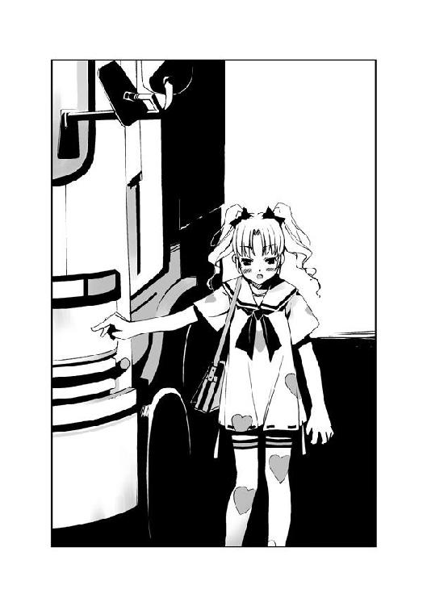
「彼女の脳を動かす微少な電流を、一時的に混乱させただけです。回復するまで多少の時間を要しますが、後遺症はないはずです。私の能力の一部ですが、対象との接触が必要なため彼女に近づきました」
意外にも、愛理衣は素直に答えた。かえって戸惑い、詩歌の声が小さくなる。
「ど、どうして、私たちの居場所が──」
「貴女たちは、センティピードから奪ったディスクを持っています。ディスクに保存されたデータは、私の〝メモリ〟にあるデータのコピーです。引き寄せあう磁石のように、私は同じ電子情報を持つ素体の在処を検索することができる......これも私の能力の一部、中央本部も知らない力です」
「......」
「私は質問に答えました。今度は〝ふゆほたる〟......貴女に回答してもらいます。貴女と冷静に話し合うために、私は一人でここまでやってきたんです」
幼い少女は、機械的な口調を変えない。
「特環に戻ってください、〝ふゆほたる〟」
詩歌が、鋭く息を吸い込んだのが分かった。
「貴女は自分がどれほど危険な存在であるか、自覚しているはずです。そして自分以外の人間が傷つくのを怖れる良心も残っている。貴女が外界に出れば、傷つかずにすむはずの人間も傷ついてしまうのです。この数日間で、満足したでしょう。自分勝手はもうやめて、自分の居場所へ戻ってください」
「......！」
詩歌の表情に、動揺が走る。
「貴女は私たち虫憑きの中でも、特に危険なんです。そこにいるだけで、多くの人が傷ついていく......自分でも分かっているんでしょう？ 貴女さえいなければ失われずにすんだはずの人々が、どれくらいいるか......！」
愛理衣の言葉は、詩歌の心を強烈に揺さぶったようだ。詩歌は口を開いて何かを言いかけるが、しかし結局は唇を嚙んで黙り込む。
だが愛理衣の言葉は、夕の胸にもまた新たな感情を生んでいた。
「何を、言ってるの......？」
ぽつりと呟く。〝Ｃ〟と詩歌がこちらを見る。
「詩歌さんがいなければ......？ なに、それ？ どうしてそんなことを言うの......？」
「何も知らない子供は黙っていなさい、海老名夕」
愛理衣が言い放つ。だがそれは、夕の怒りを爆発させただけだった。
「あなた、詩歌さんの夢を知ってるの？ 知っていて、特環っていうところが詩歌さんの居場所だって言ってるの？」
「〝ふゆほたる〟との交渉を邪魔するつもりなら、貴女の動きも奪いますよ。虫憑きでもない、何も知らない一般人は口を挟まないでください。きれいごとじゃない......いないほうがいい人間だって、いるんです」
「詩歌さんはクレープを食べるのがはじめてだって言ったの！」
夕は叫んだ。あいかわらず目の前の少女が怖くて足は動かなかったが、口が勝手に動いていた。眉をひそめる愛理衣に向かって言う。
「レイディーっていう人しか友達がいないって言うの！ こんなに優しいのに......どうしてそんな人に対して、いないほうがいいなんてことを言うの？」
「あなたは何も知らないから──」
「知らないから、なんなのよ！ あなたこそ、詩歌さんのことを何も知らないくせに！」
「......！」
詩歌が驚いた顔で、夕を見た。
冷静だった愛理衣が怒りを露に、顔を歪める。
「私といっしょに来てくれますね、〝ふゆほたる〟？」
「私が言うことをきいたとして......初季と夕ちゃんは、どうなるの？」
「......二人のことは、決して傷つけません」
幼い少女が、言う。
詩歌が、夕を見た。続けて、動かない初季を見る。
「それとも、貴女のワガママで彼女たち二人を殺すつもりですか？」
「......！」
エリィの一言は、詩歌を激しく動揺させた。泣きそうな顔で、詩歌が夕たちを見る。
「私......」
詩歌が、夕のそばから一歩離れる。
「もう、誰にも傷ついて欲しくない......」
「詩歌さん......！」
夕のもとを離れ、詩歌がエリィに歩み寄ろうとする。
「！」
悲しげに夕を見る詩歌の向こうで、エリィが微笑していた。それまでの無表情が一瞬だけ消え、鋭い双眸が詩歌を見る。
無意識に、夕は離れようとする詩歌の腕をつかんだ。
「夕ちゃん......？」
「そ、そんなの、おかしいです！」
詩歌を引き寄せ、エリィを睨みつける。
「どうして、詩歌さんだけが辛い目にあわなくちゃいけないんですか？ 詩歌さんがしようとしてることって、そんなにいけないことなんですか？ 居場所が欲しいって、ただそれだけなのに......！」
詩歌が夕を見る。
「それにあなたの言ってること、おかしいもの！ 詩歌さんを説得するだけなら、今までいくらでもできたはずなのに！ それに......いきなり初季さんを攻撃しておいて、もう傷つけないなんて信じられない！」
エリィが、表情を変える。憎々しげに、夕を睨む。
「海老名夕......！」
「答えて！ どうして私たちを、こんな場所まで呼んだの？」
「エリィ......？」
夕と詩歌が、少女を見つめる。
愛理衣が黙り込んだ。だがやがて、少女らしからぬ形相で詩歌を睨みつける。
「......おとなしくしていれば、痛みを感じさせずに殺してあげたものを......！」
夕と詩歌は目を見開く。
「さ、最初から......！ 詩歌さんを殺すつもりだったの......？」
「中央本部は、〝ふゆほたる〟を〝捕獲〟する方針を決して変えない......そんな生ぬるい罰なんて、私は認めない！ まだ彼を迷わせるつもりなら、私がお前の命を奪って逃亡の身になってやる......！」
帯電した〝Ｃ〟のセーターが、激しく火花を散らす。詩歌が呻く。
「彼......？」
「それじゃあ、私たちの目的地を中央本部に教えたのも......！」
夕の言葉に反応したように、逆立った少女の髪から青白い蝶々が飛び立つ。
「逃げ場所を奪えば、貴女たちはここへ来るしかなかった......私はようやく、誰の邪魔も入らない場所で〝ふゆほたる〟を殺すことができる！」
「ど、どうして......」
困惑する詩歌に、愛理衣が歩み寄る。
唇を嚙み、詩歌が夕の手を引く。二人で愛理衣から逃げるために走り出す。
「う、初季さんが......！」
「時間がたてば回復するって言ってた......！ 今は私たちが逃げなくちゃ......！」
細道を走って戻りながら、詩歌が言う。
夕は顔を歪める。詩歌は『私たち』と言ったが、本当はそうじゃない。詩歌は夕を守るために逃げているのだ。足手まといにはならないと決意したはずなのに、愛理衣と対峙しただけで夕は動けなくなっていた。
「......！」
愛理衣から飛び立った蝶々が、ダンプカーに触れた。
直後、ダンプカーを青白い火花が包み込む。大音響のエンジン音が鳴り響いた。
二人に向かって、大型のダンプカーが急発進する。
あまりに突然のことに、詩歌の足が止まる。夕の目に、誰も乗っていない運転席が見えた。
──夕たんは、足手まといなんかじゃないよん。
初季の言葉が、脳裏に浮かんだ。
私は、足手まといなんかじゃない......！
自分自身に言い聞かせるように、心中で叫ぶ。だが両足は動いてはくれなかった。
視界に、夕の身長の倍はありそうな車体が迫る。まるでスローモーションのように、夕たちに近づくダンプカーの動きがはっきりと分かった。
心臓がうるさい──。
夕の中、頭の別の冷静な部分が囁く。
指先が冷たい──。
ひどく冷静に、夕は自分自身を観察する。
喉が渇いた。足が思うように動かない。
──なぜ？
決まっている。怖いからだ。不安だからだ。
──なぜ？
得体の知れない相手と向き合ってるから。得体の知れない〝虫〟が相手だから。
──それなら？
相手の正体を、暴け！
「......っ！」
夕は、詩歌の背中に体当たりをする。
二人重なって勢いよく地面を転がる。直後、夕たちがいた場所をダンプカーが通り過ぎた。前方に止まっていたシャベルカーと激突し、大きな車体が横転する。
「ゆ、夕ちゃん」
我に返ったのか、詩歌が自分の上に乗った夕を見る。
夕は顔を上げた。たぶん、今にも泣きそうな顔をしているだろう。だがそんなことは、今はどうでもよかった。
この期に及んで動こうとしない自分の足を、力任せに叩く。
動け、足......！ アンタを元に戻すためなんだからね......！
膝の震えが止まった。詩歌といっしょに、急いで立ち上がる。
振り向くと、愛理衣の体から次々とシーアゲハが飛び立っていた。
蝶々に触れ、青白い火花に包まれた建機がエンジン音の唸りを上げる。
「詩歌さん、こっちへ......！」
詩歌の手を引き、走る。
夕の視線の先には、ショッピングモールの中心街があった。
3.01 詩歌 Part. 4
詩歌たちは、建設途中の建物が建ち並ぶ地域に向かって走る。
背後から、エンジン音が響いた。
詩歌たちを追い、無人の自動車がやって来たのだ。
「詩歌さん！」
掘り起こされてできた土の山を飛び越え、夕が詩歌を振り返った。
後方から、エンジン音が迫る。
「う、うん！」
手を差し伸べる夕のもとへ、詩歌は懸命に走る。詩歌が土の山を飛び越えた直後、無人の自動車が次々と土山に突っ込んだ。
「......っ！」
詩歌と夕に、土の雨が降りそそぐ。土山に突撃した車が勢いのまま飛び上がり、二人の頭上を飛び越える。着地に成功した自動車は一台もなかった。横転し、地上で激突して停まる。
「きゃあっ！」
真っ黒な煙の向こう、土山越しに小さな人影を見つける。
愛理衣だ。少女の背後には、まだ無数の自動車が控えていた。どの車の運転席にもハンドルを握る人物はいない。
自動車が土山に体当たりを続ける。土のバリケードが少しずつ削られていく。
「詩歌さん、こっち！」
詩歌と夕は、造りかけのモール街をめざして走る。
後ろを振り返ると、愛理衣が土山を乗り越えたところだった。
ハートマークの少女の全身から、青白い火花が上がった。火花は無数の蝶々と化し、四方に散らばっていく。蝶々と接触した待機中の建機が、エンジン音を上げる。
「なんなの、あの〝虫〟は......？」
詩歌は思わず呟く。愛理衣の〝虫〟は、今まで詩歌が出会ったことのないタイプだった。
背後から、大型のシャベルカーが猛スピードで迫る。
地面がアスファルトへと変わった。大きな通りを挟むように、建物が並んでいる。
「エリィが車を使うなら......建物の中までは入ってこれないはずです！」
詩歌の手を引き、夕が手前の建造物を指さす。モール街のインフォメーションセンターのようだ。開け放たれた非常口を目指し、二人は全速力で走る。
「はやく、詩歌さん！」
夕に手を引かれ、二人でもつれるようにしてセンタービルの非常口へ飛び込む。
「きゃ......！」
一瞬の差で、シャベルカーが非常口に突っ込んだ。衝撃で、二人の体が薄暗い通路に投げ出される。狭い非常口にめりこむ形で、シャベルカーが停止する。
「う、上へ......！」
「う、うん」
非常灯で照らされた階段を上る。だが、ここまで全力疾走してきたために、二人は三階に上ったところで力尽きた。
薄暗い通路に、いくつもの扉が並んでいる。
「な、なんなんだろう、あの人の力って......車を自由に操れるの？」
夕と並んで座り、詩歌が呟く。夕が肩を上下させながら、首を左右に振る。
「そ、それだけじゃない気がします。車を操れるだけなら、初季さんがあんな状態になったりは......」
夕が言葉を切る。
薄暗かった通路に、照明が次々と点灯していく。警報が鳴り響き、三階の通路にある防火シャッターが手前から順に降りていく。
「な、なに......？」
戸惑う詩歌。階段の下から、靴音が近づいてくるのが聞こえた。
夕が思いついたように呟いた。
「電気......！ エリィは、電気を操れるんだ！」
詩歌と夕は階段を上っていく。だが数階ものぼらず、足をとめる。上の階へ繫がる階段を、積み立てられたアスファルトの袋がふさいでいた。
まだ建築途中の階のようだ。通路はなく、一面吹き抜けになっている。いくつかの柱がある以外は、空っぽの空間である。
「初季さんの時も、脳の電気信号がどうとか言ってたし......自動車も最近のは電気で制御されてるらしいから......」
「さっきのシャッターも、そうやって......？」
「でもそのことが分かっても、どうすれば──」
言いかけた夕の目が、大きく見開かれる。詩歌は眉をひそめ、夕の視線を追う。
「！」
フロアの両側のガラスの向こうに、クレーン車が並んでいた。
クレーン車が頭を振り、ワイヤーの先にぶら下げた物体をフロアに投げ込む。
「きゃああっ！」
夕の悲鳴が、ガラスが割れる大音響にかき消される。
クレーンがフロアに投げ込んだのは、小型の移動式パワーシャベルだった。大半が柱に激突して横倒しになるが、残った数台のパワーシャベルがゆっくりと首をもたげた。
絶句する詩歌たちに向かって、小型の建機が間隔をつめる。間近で見てはじめて、車体全体が青白い電流に包まれているのが分かった。
キャタピラが床を削る音が、詩歌たちを取り囲んだ。泥がついたシャベルの先端が、詩歌の頭上から振り下ろされる。
「......！」
詩歌と夕は、目をつぶる。どんっ、と詩歌の体が震動に襲われる。
──金属が床を叩く音が、遠くから聞こえた。
「......初季！」
まぶたを開くと、遠ざかるセンタービルが見えた。風の音に負けない、力強い初季の鼓動が詩歌の耳にあたっていた。
四枚の翅を生やした初季が、詩歌を抱きしめていた。すぐそばには、二本の触手で支えられる夕の姿もあった。
「初季さん......！」
「おっまたせん。いやー、お姉さん、相手が子供だと思って油断しちゃったよん」
いつものノンビリとした口調で言い、初季はセンタービルを飛び越えようとする。
「......！」
初季が顔色を変えた。進路を変えて急降下する三人をかすめるように、何かが物凄いスピードで通り過ぎていく。よく見るとそれは、先端が尖った矢のようだった。
「避難するよん、しっかり摑まっててねん！」
地面すれすれで水平飛行に入り、モール街に並ぶ建物の一つに入る。
そこは建築途中の映画館だった。塗装途中の通路を飛び、半分ほどイスが設置された鑑賞室に飛び込む。スクリーンの前をよこぎり、部屋のすみに着地する。
「ここなら〝コノハ〟たんの目も、〝トラマル〟の矢も届かないよん。......んで、あの子って誰なの？」
「特環の情報班とか特殊班とか......〝Ｃ〟って名前だって」
「ああ、あの子がそうなんだぁ。つい最近、秘種になったって噂になってたよん。情報班の顔までは知らなかったなぁ。無指定の虫憑きは、情報部を利用できる暗証番号をもらえないし。でも戦闘班や監視班をさしおいて、なんで情報班の〝Ｃ〟たんが？」
「あの子、私を殺すって......」
「殺す？ 詩歌たんを？」
首を傾げる初季に、夕が飛びついた。
「どうしたのぉ、夕たん？ そんなに怖かったぁ？ よちよち、もう──」
「無事だったんですね、初季さん......！」
顔を上げた夕は、両目に涙を浮かべていた。
初季の表情が固まる。
「よかった......！ どうなっちゃったのかと思って、私......！」
嗚咽混じりに言う夕を、初季は信じられないという顔で凝視する。初季の目が、夕から詩歌を見る。詩歌は微笑んだ。
初季の顔が、歪む。
「そ──」
目をそらし、夕を自分の体からひきはがす。
「そんなことより、今はエリィをどうするか考えなきゃだよん」
詩歌は、初季が怪我をしていることに気づく。肩に血の染みがひろがっていた。
「初季......怪我してる！」
「これ？ ここに来るまでに、〝トラマル〟たんにちょっとねん。こんなのかすり傷だよん。このコートは頑丈で、刃物も火も通さないスグレモノだからねん。でもショッピングモールから出たら、きっと狙い撃ちだね。どーしよっか」
「エリィを、なんとかしないと......私たちの居場所が分かっちゃうみたいですし......！」
顔を合わせる詩歌と初季の横で、夕がぶつぶつと考えはじめる。
「イチかバチか、エリィに向かって突っ込んでみるぅ？ うまくいけば、攻撃できるかも。同じ特殊型でも、〝霞王〟たんみたいに本人を防御するものはナニもなさそうだしねん」
「で、でも近づいたら、また初季みたいに動きを止められちゃわないかな......？」
「それもそうだねん。近づいてもダメ、遠くにいても何もできない。そんでもって逃げようとしたら、〝トラマル〟たんの矢で狙い撃ちかぁ。はっきり一人で来るって言ったのに、エリィったらウソつきなんだから」
「〝霞王〟と同じ......」
夕が呟く。初季が頭の後ろで両手を組む。
「特殊型の虫憑きって、ニガテだよん。東中央の〝みんみん〟たんみたいに〝虫〟そのものを攻撃する力がないと、どうやってもダメージを与えられないもんね。本人を攻撃する他に方法ないもん」
「本人を......」
呟き、夕が映画館の入り口を振り返る。
「〝Ｃ〟......まだ来ない。どうしてすぐに追いかけてこないんでしょう？」
「今ごろ必死に、さっきのビルから降りてるんじゃないのぉ？ アタシたちは飛んできちゃったけどねん」
「そうか......〝霞王〟と同じなんだ」
詩歌と初季は首をひねり、夕を見つめる。
「エリィも、〝霞王〟と同じなんです！ 能力は違うけど、攻撃できる範囲みたいなものがあって......霧や電気の中心に本人がいるんです。さっき見たみたいに体から電気を出して、それに触れた機械を操れる......」
「なるほどぉ。そー言われると、アタシの知ってる他の特殊型もみんな似たようなものかも。射程範囲内ではメチャ強いけど、遠い敵を攻撃する時は走って近づくしかないからちょっとおマヌケなんだよね」
「やっと分かった......あの子がコートを着てないのは......だったら、逆に......」
折り曲げた人差し指を嚙んでいた夕が、顔を上げる。
「あ、あの......！ うまくいかないかもしれないけど──」
夕が早口に説明をする。
詩歌と初季は頷き、いくつかの提案をして作戦を練っていく。
「すっごいよぉ、夕たん。そんなことに気づくなんて」
「う、うまくいくかな？」
映画館の入り口のほうから、何かが激しく激突する音が響いた。続いていくつかのエンジン音が聞こえる。
「他に作戦を考えてるヒマは、なさそうだよん？」
「......で、でも」
異論を唱えたのは、他ならぬ作戦を考えた夕だった。
「このやり方だと初季さんが......もう少し時間があれば、別の方法が思い浮かぶかも......！」
「この期に及んで、まだそんなことを言うかなぁ、このちみっ子は」
「だ、だって......！ あとちょっとだけ時間をください！ そうすれば、私がもっと考えてみる──」
詩歌は、なおも言いつのる夕の手を握って制止する。
「詩歌さん......！」
「あのね、夕ちゃん。自分でやりたいと思うのは、大切なことだと思う。でも前にも言ったよね？ 本当にやりたいことって、一人でなんてできないんだって......」
「でも......」
詩歌は、夕から初季へと視線を変える。初季の肩がピクリと動く。
「誰かを信じるのって、自分一人でやるよりも勇気がいると思うんだ」
「......！」
夕が息をのんだ。初季もまた、ゴーグルの奥で表情が揺れたのが分かった。
「強くなろうって、約束したよね？ 一人でなんでもやることが、強いわけじゃないよ」
詩歌は再び夕を見つめ、言う。
「......はい」
夕が頷いた。
「お願いします、初季さん......！ 絶対に、死んじゃイヤですからね！」
まっすぐに見つめられ、初季が動揺するのが分かった。
「......当たり前だよん。こんなところで死んじゃ、今まで逃げてきた意味がないもんね」
詩歌を一瞥し、押し殺した声で言う。まるで自分に言い聞かせるような口調だった。
「そう、やることがあるから、生き残ってやるんだからぁ。夕たんにお願いされなくたって、そんなこと......」
初季の呟きは、彼女に抱きしめられた詩歌にだけ聞こえた。初季の背中から伸びた二本の触手が、夕の体に巻きつく。
風が詩歌の頰をなでたと思った瞬間、三人はスクリーンの前を横切っていた。
鑑賞室の入り口に、青白い電流を纏った少女が現れる。
「〝からす〟......！」
愛理衣が顔を歪め、近づく初季に向かって手をかざす。
詩歌と夕を抱いたまま、初季が急旋回をする。愛理衣の真横を滑り抜け、通路に出る。
「逃げてもムダです！」
通路は、小型建機の群れでいっぱいだった。だが初季は機械たちの中に隙間を見つけ、一気に通路をすり抜ける。
弾丸のように映画館から飛び出し、初季は地面に着地した。
「そんじゃま、お先に行ってるよん。二人こそエリィにやられちゃったらダメだからねん」
「うん、待ってるから」
詩歌が微笑む。初季の顔に、また動揺が走る。
「......アタシの役に立ってもらわなくちゃいけないから、言ってるんだからねん。勘違いしないでよん」
ポツリと呟き、初季が背中の翅を羽ばたかせる。
垂直に急上昇していく初季めがけて、〝トラマル〟の矢が襲いかかる。初季は空中で弧を描き、攻撃をかわしていく。
「詩歌さん！ 私たちも！」
「う、うん」
背後から、〝Ｃ〟率いる建機の群れが近づきつつあった。
詩歌と夕は、モール街の奥へ向かって駆ける。
アスファルトの大通りの出口には、大きな塔がそびえ立っていた。六面体を上下に二つ合わせ、中央に球体を挟んだ形の近代的な造りをしている。何本もの円柱によって支えられる球体は全面ガラス張りになっており、夕陽を反射して赤く染まっていた。
「きゃあっ！」
「夕ちゃん！」
スピードの速いトラックが、詩歌たちのそばの街灯を倒す。衝撃で足をからませそうになった夕の手を引き、詩歌はさらに走る。
ショッピングモールの出口が近づき、噴水のある広場へ出る。詩歌と夕は広場の反対側にあるタワーを目指す。
そびえ立つ塔の入り口は、広いフロアになっていた。五カ所に設置されたガラスの自動ドアは、すべて閉まっている。
「どうしよう......！ ぜんぶ閉まってる！」
夕が戸惑いの声を上げた時だった。詩歌たちの前を、黒い影が通り抜けた。
初季だ。飛びながら触手でベンチを巻き取り、自動ドアに向かって投げつける。
大きな音を立て、ガラスが割れた。
「初季......！」
初季はそのままの勢いで急上昇していく。飛来した〝トラマル〟の矢が初季の首筋をかすめ、空中に赤い血飛沫が上がった。大きくバランスを崩す。
「初季さん！」
だが初季はかろうじて体勢を立て直し、次々と飛んでくる矢をかわし続ける。初季は自分の役目をまっとうしてくれている。
「夕ちゃん、早く......！」
詩歌は夕の腕を引き、タワーに駆け込む。
詩歌たちが一階に侵入した直後、建機が建物に突っ込んだ。ガラスの破片をまき散らし、次々と車両がフロントに突っ込む。
「きゃああっ！」
詩歌たちの両脇をかすめ、ダンプカーが壁に激突して停まる。あと一メートルずれていたら、二人とも押し潰されていただろう。
「か、階段へ......！」
夕が指さした先に、上階へとつながる階段があった。二人はダンプカーの下から飛び出すと、一直線にフロアを駆け抜ける。
階段へたどり着いても、休む間はなかった。夕に手を引かれ、詩歌は上階を目指す。
「い、急ぎましょう、詩歌さん！ 早くしないと初季さんが......！」
「うん......！」
「この上なら、自動車も来ないはずです......！ 周りにスペースがないから、さっきみたいにクレーン車を使われることもないし......エリィからも離れられる......！」
階段の照明が、点灯した。空調が稼働しはじめたか、湿り気を含んでいた建物内の空気に流れが生じたのが分かった。
「〝Ｃ〟がタワーに入ったんだ......」
「大丈夫です......今はまだ、エリィの射程距離からは離れてるはず──」
夕の言葉を遮るように、天井についたスプリンクラーから空気が抜ける音がした。
「え？」
直後、天井から大量の水が降り注ぐ。
「な、なに......？」
スプリンクラーから降り注ぐ雨は、詩歌たちを水浸しにしていく。防ぐ手だてもなく、二人は頭から水を浴びる。
「どうしてスプリンクラーなんて......」
「......まさか！」
突然、夕が詩歌の手を引いた。六階の通路に飛び出し、フロアを見渡す。壁際の一角に、水が及んでいない場所があった。
「詩歌さん、あそこ！」
立ちつくす詩歌を抱くようにして、夕が水に濡れていない場所に身を投げる。
まさにその直後だった。
バシンッ！ と濡れた布で壁を叩いたような、激しい音がタワーに響き渡った。青白い閃光がフロアを包み込む。
詩歌と夕は間一髪、閃光を浴びるのを免れていた。水のない場所に飛び込んだことで、感電せずにすんだのだ。
「な......」
「エリィです......！ 水に電流を流して、射程距離の外で私たちを感電させようとした......！ 初季さんが、〝あしたか〟を倒した時みたいに......！」
「ゆ、夕ちゃん、あれ......！」
水浸しになった床から伸びた火花が集まり、何匹ものシーアゲハを生んでいた。
今の電撃で回線がショートしたのだろう。照明は消え、スプリンクラーは黒い煙を上げていた。薄暗いフロアを、まるで亡霊のように青白い蝶々の群れが彷徨っていた。
フロアの奥でエレベータの階数表示が動いた。一階から二階、三階へと上昇している。
「み、水のないところへ......！」
夕に手を引かれ、壁づたいに走って階段まで戻る。水の少ない壁際をはうように、上階へと駆け上っていく。
「もう少しです、がんばって、詩歌さん！」
「う、うん......！」
吹き抜けになったフロアに到着すると、階段の種類が変わった。ガラス張りになった円柱の中を伸びる螺旋階段を駆け上っていく。
「こ、ここです......！」
たどり着いたのは、一面がガラス張りになった展望台だった。タワーを外から観た時、球体になっていた部分である。
「初季......！」
ガラスの向こう、太陽が沈みつつある空を、初季が縦横無尽に飛翔していた。〝トラマル〟の攻撃を、かろうじてかわし続けている。
「詩歌さん！」
夕の鋭い声に振り返る。フロアの中央に設置されたエレベータが、間もなく詩歌たちのいる階へ到着しようとしていた。
「お願い、うまくいって......！」
エレベータの搭乗口を凝視し、夕が祈るように呟く。
作戦を成功させるには、タイミングが重要だった。チャンスは何度もやってはこない。
「来る......！」
詩歌の呟きが、静まりかえったフロアに響く。
軽い電子音とともに、エレベータの搭乗口が開いた。
「......！」
中には、誰も乗っていなかった。まるっきりの空っぽだ。
「あっ......！」
すぐそばで、夕が小さな声を上げた。振り向いた詩歌は目を見張る。
肩を激しく上下させる少女が、詩歌たちの背後に佇んでいた。
愛理衣だ。エレベータを使っていると見せかけて、詩歌たちと同じように階段を上ってやってきたのだ。荒い息をつく少女の着たセーターから、青白い火花が上がっていた。
どさり、と夕が床に力なく倒れる。
「夕ちゃん！」
「動くなっ......！」
愛理衣の鋭い声に制され、詩歌は動きを止める。
「先ほどの〝からす〟同様、身体の自由を奪っただけです......しかし貴女が怪しい動きを見せれば、その瞬間に彼女の脳を完全に破壊します......！」
幼い少女とは思えない、威圧感さえ感じさせる口調で愛理衣が言い放つ。少女の体に纏う電流が、不安定に揺れる。
愛理衣の青い顔を見て、詩歌は愕然とする。力を使いすぎたのだろう、少女の瞳から光が失われつつあった。
「動かないでください、〝ふゆほたる〟......今、楽にしてあげます」
「ダ、ダメ！ それ以上力を使ったら......！」
詩歌は叫ぶが、愛理衣は聞く耳を持たない。荒い息をつきながら、じりじりと詩歌との距離を詰めていく。
「うっ......」
呻き、愛理衣が床に膝をつく。意識が朦朧としているのだろう。
「大丈──」
「近づ......かないでください......！」
駆け寄ろうとした詩歌に対し、電流を纏う右手をかざす。半開きになった瞳で、なお詩歌を憎々しげに睨みつける。
「どうして......」
詩歌は、唇を嚙んだ。愛理衣はただの刺客ではない──なにかの理由で、詩歌に対して憎悪を抱いているのが分かった。
赤牧市で詩歌を助けてくれたのも、すべて殺意によるものだったのだ。
そこまで激しく憎まれる理由が、詩歌には分からない。
「どうして、そこまでして私を狙うの？ 命令されたからじゃないの？」
「邪魔......なんです......！」
愛理衣が怒りを露に、叫ぶ。
「私が今の状況に耐えられるのは......彼がいるから......！ それなのに貴女は今さら、彼を迷わせる......！ 四年間、縛りつけていただけじゃ物足りないのですか......！」
「か、彼......？ なんのことを言ってるの......？」
眉をひそめる詩歌を見て、愛理衣が歯を食いしばる。
「貴女は、知らない......！ 誰も何も知らない......！ でも私だけは知ってるんです......！」
少女の口から出る言葉が、支離滅裂になっていく。虫憑きにとって、一度に連続して力を使うことほど危険なことはない。すでに思考が混濁しているのだろう。危険な状態だ。
「エリィ、ダメ......！」
「お前さえ、いなければ......！」
愛理衣がかざした指先に、青白い蝶々が生まれる。
詩歌は叫んだ。
「初季ぃっ！」
愛理衣がハッとして、横を向く。
少女の視線の先、ガラスの向こうを黒い翼が飛び上がった。
──初季の役目。それは〝トラマル〟を挑発することだった。攻撃をかわし続け、仲間である愛理衣の位置が目に映らないよう仕向けたのだ。
初季が急上昇をする。
窓の外で、鋭い矢の先端が光った。
狙いをそれた矢が、愛理衣めがけて襲いかかる。
「〝トラマル〟......！」
愛理衣が人差し指を、窓にかざす。矢が窓ガラスを突き破る。
「こんなもの......！」
少女の指先に、電撃を放つシーアゲハが生まれた。
猛スピードで飛来した矢が、蝶々に触れた途端に閃光に包まれた。雷が落ちたような電撃が展望台に吹き荒れ、矢が爆発する。
「はぁっ、はぁっ......！ もうこの場所が〝コノハ〟と〝トラマル〟のチームに見つかるなんて......時間が、ない......！」
爆発がおさまると、愛理衣が詩歌を睨んだ。かざした指先に、再び青白い火花が集まる。
「これくらいで私を殺せるとでも思ったのですか、〝ふゆほたる〟......！」
「殺しはしないよん。ちょっとオシオキしてあげちゃうけどね」
初季の声は、愛理衣の頭の上から聞こえた。
「......！」
窓が割れると同時に、初季がフロアに侵入していた。空中で〝虫〟との同化を解き、着ていたコートで愛理衣を包み込む。
「なっ......！」
「特環のコートってベンリだよねん。何でも防いでくれるもん。モチロン、電気もねぇ」
愛理衣が暴れる隙を与えず、少女に着せたコートの上にカラスヤンマが降り立つ。そのまま初季がカラスヤンマに触れると、〝虫〟が愛理衣に着せた状態のコートと同化する。
首から下をコートに覆われた状態で、少女が床に転がった。
「くっ......こ......んな......！」
少女は必死にもがくが、コートは頑丈だった。激しい火花がコートの内側ではじける。
愛理衣を覆っていた電流がコートに遮られ、外部とのつながりを遮断されていた。フロアの照明がかき消える。
それが、決着だった。
「う......んんっ......！ んんんっ......！」
愛理衣はもがくのを、決してやめなかった。悔しげに唇を嚙み、両目から大粒の涙を流しながら、それでも懸命に暴れ続ける。
詩歌と初季は、そんな少女を黙って見つめる。〝トラマル〟の攻撃によって傷ついたのだろう、初季が着たセーターに血の染みがいくつもひろがっていた。
「ねえ、どうして......？」
詩歌は愛理衣のそばに膝をつく。少女が動きを止め、涙に濡れた目で詩歌を睨む。
「どうして、それほどまでに私を憎むの？ 彼って、誰のこと？」
しかし少女は顔を歪めるだけで、答えない。気力だけで意識を繫ぎ止めているのだろう、今にも気を失いそうだ。
愛理衣が、今にも閉じそうな目で詩歌を見る。少女の頰に、新たな涙の滴が流れる。
「〝ふゆほたる〟......お願いです......特環に戻ってきて......」
詩歌は唇を嚙む。
「貴女がいなくなってしまうと......彼が特環にいる理由が......なくなってしまう......お願い......私たちから、彼を奪わないで......あの人だけが、私たち虫憑きの......」
「......」
詩歌は何も言うことができず、まぶたを閉じた愛理衣を凝視する。
ついに意識を失った愛理衣からコートをはがし、初季が再び纏う。
「ここまで消耗しちゃったら、しばらく身動きとれないだろうねん。でも成虫化しなかっただけでも、もうけモンだと思ってよぉ？」
しばらくすると、夕が体を起こした。
「夕ちゃん、大丈夫？」
詩歌が体を支えてやる。
夕はぼんやりと周囲を見回した。しばらく状況を思い出すように周囲を見回していたが、初季の姿を見ると表情を輝かせる。
「初季さん！ ......無事だったんですね！ 良かった......！」
涙ぐむ夕を見て、初季はまたもや困惑したようだ。だが、ふっと初季の表情が緩む。
「夕たんの考えた作戦、大成功だよん。ご褒美にいい子いい子してあげるぅ。......と思ったけど、泥と水で夕たんきちゃなーい。やっぱやーめた」
「き、汚くなんかないです！」
「あ......エリィは？ どうなったんですか？」
「そこで寝てるよん」
床で気絶している愛理衣を見て、夕は「ひっ」と身を遠ざける。
「もう大丈夫だよ。ぜんぶうまくいったよ」
「......え？」
「夕ちゃんのおかげだね。ありがとう」
詩歌が微笑みかけると、ようやく夕が安堵の表情を見せる。
「そうそう、〝Ｃ〟も言ってたけど、もう時間がないよん。すぐに〝コノハ〟たんたちの他にも敵が集まって来ちゃうから、ここから早く離れないとねん。今なら飛びさえしなけりゃ、建物に隠れながら走って逃げられると思うし」
「え？ は、はやく行きましょう！」
「どぉしたのぉ、詩歌たん」
二人をじっと見つめる詩歌の顔を、初季と夕が見つめ返す。
「三人とも、無事だね」
詩歌は微笑む。
初季と夕が顔を見合わせる。
「はい！」
「あったりまえじゃん」
笑みをかわす三人。
氷鉋市に、夜の帳が下りていた。
3.02 詩歌 Part. 5
赤牧市と氷鉋市、そして桜架市へとつながる県道に、詩歌たち三人はいた。
並行する国道二本とは違い、県道の夜は暗かった。
暗闇の中に、少女たちの囁き声が響く。
「ほ、ホントに私がやるんですか？ 初季さんのほうが目立つんじゃ......」
「アタシ、疲れたぁー。足痛いしぃ。おなかもすいたもん。夕たんはアタシのドレイなんだから、ちゃんと働いてよねん」
「うう......」
「あの、私がやろうか？」
「詩歌たんは、なんかそのまま轢かれちゃいそうだからダメぇ」
「そ、そうですね」
「......轢かれ......」
話し合いは、すぐについた。
夕が緊張した面持ちで、薄暗い県道に向かう。道の前に立ち、自動車が来るのを待つ。
すぐに、自動車のライトが見えた。
「夕たん、今だぁ！」
「は、はい！」
夕が手を挙げ、親指を立てる。
ライトが夕を照らした。だが車はスピードを落とすことなく、夕の前を走り去る。
すぐにまた、暗闇が訪れる。
「もう、夕たん。もっとお色気を出さなきゃダメだよん」
地面に座った初季が、唇を尖らせる。彼女の手の中には、ゴーグルを包むように巻いたコートがある。
「む、ムチャ言わないでください！」
「あの、私......」
「詩歌たんは、ムリ」
「......」
やがて、また一台の自動車がやって来た。
夕が手を挙げるが、車は止まらない。
「あんまり長引くようだと、警察に通報されちゃうからねん。そしたらアウトだよん。なるべく早く、車をつかまえないと」
初季の言葉に、詩歌と夕は神妙な顔をする。
今、三人がいる場所は、ショッピングモールよりもさらに桜架市から離れた場所にあった。
愛理衣によって刺客の配置を知ることができたが、それが結果的に彼女たちを桜架市から遠ざけていた。追っ手を避けると、どうしても桜架市へ近づくことができないのだ。
夜も遅いというのに、結果的に朝よりも桜架市から離れてしまった。このまま歩いて桜架市に向かったのでは、明日の夕方までに到着するのは不可能だった。
そこで詩歌たちは、イチかバチかの作戦に出た。
ヒッチハイクである。
目立つ行動は厳禁な行程で、まさに最後の賭けといえる。通報されたら、そのまま特別環境保全事務局に連絡がいってしまうだろう。それどころか運悪く敵の協力者の車が通ってしまったら、その時点で終わりである。
「お願い......止まって......！」
夕の切実な声が、今の状況を物語っていた。
タイムリミットまでに桜架市に到着できる見込みは、かぎりなくゼロに近づきつつあった。よほどの幸運がなければ、到底ムリだろう。
だが三人の焦る胸中をよそに、たまに通る自動車は停車する様子を見せない。
「ごめんね。私が、エリィを信じたせいで......」
ぽつり、と詩歌は呟いた。
愛理衣との待ちあわせ場所だったショッピングモールにさえ行かなければ、今ごろ桜架市のそばまで近づいていたかもしれない。
「詩歌たんのせいじゃないよん。他に選択肢なんて、なかったもんね」
「そうですよ。敵のいる場所が分かったし......」
初季が気楽な口調で言い、夕もまたこちらを振り返る。
二人はそう言ってくれるが、詩歌の表情は晴れない。
詩歌の脳裏を、愛理衣の言っていた言葉がよぎる。
──私たちから、彼を奪わないで......！
あの少女は、確かにそう言っていた。
彼......？ 彼って、誰？ 私は誰も奪おうなんて──。
うつむいて考えこんだ詩歌を見て、初季が言う。
「エリィたんの言ってたことなんて、気にすることないよん」
詩歌の心中を見透かしたように、初季が彼女の顔をのぞきこむ。
「エリィの言ってたこと？ なんですか、それ？」
「お子ちゃまには関係ない話だよん。ね、詩歌たん？」
「こ、子供扱いしないでください！」
「うん......ありがとう、初季」
詩歌は微笑する。今度は、初季がハッとした。あわてて顔をそむける。
「べ、べつに心配したわけじゃないよん」
それきり、詩歌と初季は黙り込んでしまう。
疲労がたまっているのだろう。三人の少女はそれきり、沈黙してしまう。
──特環から逃げられたとして、私はなにがしたいんだろう？
利菜が残した絵のことを思い出し、夢中でここまでやってきた。
もし目的の絵を手に入れられたとして、詩歌はそのあとにどうしたいのだろう？
──大助くんと会う約束をした......でも、それまで私はどこにいればいいんだろう？
どこへいったとしても、追われる立場は変わらない。また多くの人を巻き込み傷つけてしまうかもしれない。もしかしたら、愛理衣の言っていたように特別環境保全事務局に戻ったほうが、あるいは──。
詩歌が考えていた時だった。
「あ！ 来たよん、夕たん！」
「は、はい！」
新たに、ライトが詩歌たちに近づきつつあった。
夕が慌てて手をあげる。
強烈なライトが、夕を照らした。
「あ......あ......と、停まって──」
夕が声のトーンを上げる。
ライトの速度が、徐々に減速しつつあった。
「停まっ──」
夕の声のトーンが、急ダウンする。
詩歌たちの前で停車しつつあるそれの姿が、はっきりと見えてきた。
やがて、車は夕の前で停まった。
「停まっ......ちゃった......」
詩歌たちは、呆然とそれを見上げた。
停車したのは、巨大なトレーラーだった。荷台の大きさは、全長で十メートル近くはありそうだ。ピンク色の明かりを点けた蛍光灯で、大きく〝HAPPY Valentine's Day〟と描かれているのが目に鮮やかだった。
「ヴァレンタイン・デイ......」
詩歌は、呟く。
女の子が、好きな男の子にチョコレートを渡す日。
好きな男の子──。
詩歌の胸に、ほのかな想いがつのる。
運転席から飛び降りたのは、ベリーショートの髪が印象的な女性だった。まだ若い、二十代の前半くらいに見える。
「なに、アンタたち？ もしかして、ヒッチハイク？」
「あ、あの......！ いえ......あ、そ、そう......！」
トレーラーの迫力に圧倒され、夕がしどろもどろに喋る。
「アタシたち、桜架市まで行きたいんだ。ねぇねぇ、乗せてってよん」
物怖じするどころか、初季が好奇心に目を輝かせる。
「桜架市まで？ あたしらはその手前までしか行かないけど」
「オッケー、オッケー。そんでじゅうぶんだよん」
「んー......ちょっと来て」
短髪の女性が、三人を荷台の後方へ連れて行く。
「あ、あの......この人たち、特環の関係者じゃないですよね？」
小声で夕が囁く。初季が笑い飛ばす。
「そう見えるぅ？」
「見えない......よね」
荷台の後部は、観音開きの造りになっていた。二つに分かれた扉の下にもう一つ、人が通り抜けられるくらいの小さな扉がある。
短髪の女性が扉を開く。中に誰か乗っているようだ。数人分の声と話し合った後、女性が笑顔で振り返る。
「いいよ。乗りな」
「やった......！」
夕が歓喜の声を上げる。
「あ、ありがとうございます」
詩歌が頭を下げると、女性はウィンクを残して運転席へと戻っていった。
荷台の後部に開いた扉をくぐる。
中は、真っ暗だった。
「このご時世に、ヒッチハイクか。いいねぇ、オレ、そういうの大好き」
「感心しないな。ろくでもない連中に連れて行かれでもしたら、危険だろ」
「ろくでもないって言ったら、ボクらはどう？ まあ、危険ってことはないはずだけど」
「......こっち......」
暗闇の中、数人の声が聞こえた。
詩歌の手を、誰かがつかんだ。女性の声で言う。
「......奥......」
手を引かれ、何も見えない闇の中を進む。夕と初季が詩歌の服をつかみ、あとに続く。
「あっ」
詩歌の足が、堅い何かとぶつかった。
シャラン、と金属がこすれる音がした。
「あ、ごめん。そこにボクのドラムがあるから気をつけて」
ドラム？
詩歌は首を傾げつつ、謝る。
「ご、ごめんなさい」
「いいよいいよ、いっそ壊しちまえば、ケチなマネージャーも新品を買ってくれるってもんさ」
「古い新しいの問題じゃないんだろ、バカ」
男性三人の声が、すぐそばで交わされる。
奥まで来たところで、か細い女性の声が言う。
「ここ......動くと危ないから、座ってて......」
「ありがとうございます」
礼を言い、座る。
夕と初季がそばに座るのが、分かった。
トレーラーが重低音のエンジン音をかき鳴らし、発進する。
「桜架市まで行きたいんだって？ 電車賃もないのか？」
「家出でもしたのか？ 家族は大切にしたほうがいいぞ」
「桜架市へは、何をしに？」
よほど興味を持たれたのだろう、男性たちが次々にたずねてくる。
「......」
詩歌たちは何と言っていいか分からず、沈黙する。まさか刺客に追われていますと正直に言うわけにもいかない。
「ヒ・ミ・ツだよん」
詩歌と夕が言い訳を考えるよりも先に、初季がおどけた口調で言った。
「おーおー、なんか色っぽい声。ひょっとしてキミら、カワイイ？ おい、ライトどこやったっけ？」
「よせ、バカ」
「そういう行動が女の人に嫌われる原因だって、そろそろ自覚したほうがいいよ」
「......セクハラ......」
「んだよ、ただの冗談だべ？」
「えへへぇ、少なくとも二人は美少女だよん。一人、ペットっぽいのがいるけど」
すぐに意気投合し、初季と男女四人の笑い声が飛び交う。
一方、詩歌と夕は口を挟めず、黙り込む。「ペットって、誰のことですか......」という夕の呟きが、となりから聞こえた。
「......どこか、怪我してるの......？」
突然すぐそばで囁かれ、詩歌は身をすくめた。
「あなたたちから......血の臭いがするから......」
いつの間に近寄ってきたのか、談笑する男性たちや初季から離れ、女性が詩歌に近寄ってきたようだ。
血の臭い──詩歌や夕はかすり傷だが、初季はだいぶ血を流していた。その臭いをかぎつけられたのだろう。
「あ、あの、大丈夫です。なんでもないですから......」
詩歌は、あわてて言い繕う。
「それに、あの子はともかく......あなたたち二人は、やけに怯えてるみたい......」
「......！」
「桜架市へは、何をしに行くの......？ よかったら──」
音楽が、響いた。携帯電話の着信音だ。
「おい、運転席のマネージャーからのお達し。そろそろ最終ミーティングしとけってよ。それと女の子たちにいらないちょっかいかけんなと」
「後半は、お前だけに言ったんだろ」
「それと、なんか知らんがこの先で検問やってるらしい」
「......！」
詩歌を含め、トレーラー内に息をのむ気配が伝わった。
特別環境保全事務局が、詩歌たちを捕まえるためにしているのだろう。だが、動揺したのは詩歌たちだけではなかった。
「どうするんだ？」
「先に現地に行ってたヤツが、誘導してくれる。国道からはずれて、地元の連中が使う県道に入るから揺れるってよ」
「オーケイ」
彼らの間で話し合いはついたようだ。
「ボクらはあっちでお仕事の相談。まあ、楽にしといてよ」
「......」
男性の声が、遠ざかっていく。女性の気配もまた、遠ざかっていった。去り際に触れたのだろう。詩歌の肩に、手が添えられたのが分かった。
「な、なんかヘンですよ、この人たち......」
夕が、怯えた声で囁く。詩歌も頷く。
「うん......私たちはともかく、この人たちも検問を避けようとするなんて......」
「結果的に助かりましたけど......そもそも、こんな荷台に隠れるように何人も乗ってるなんて......なんか、怖いです......」
荷台の後方で、談笑する男女の声が聞こえた。
「......最初は......一気に盛り上げ......ゲリラなんだから......」
「問題......氷鉋市......警察......」
聞こえた声に、詩歌の心臓が跳ねる。
「き、聞きました？ 今、たしかに警察って......！」
「うーん......ちょっちヤバイかも？ 逃げる準備をしたほうが、いいかもねん」
さすがの初季も、低い声で言った。
しばらく快調に走っていたトレーラーが、減速する。停車し、それきり動かなくなる。
エンジン音が、途切れた。
「と、停まった......？ もう桜架市の近くまで来たんでしょうか？」
「そんなわけ、ないよん。......二人とも、逃げる準備しといてねん」
小声で囁きあう三人のもとへ、人の気配が近づいてくる。
「ねえ......」
先ほどの女性の声だった。
詩歌たちの間を、緊張が走る。
「なにか買ってくるけど、欲しいもの......ある？」
「え......？」
詩歌は思わず聞き返す。
「おなか......空いてない？」
「アタシ、お肉ぅ！」
間髪入れず、初季が声を張り上げた。今まで警戒していたことなど、きれいに忘れている。
「お肉お肉お肉ぅ！ それとジュースとお菓子と......あ、ジュースはホットじゃなきゃヤダよん！」
「カツサンドとかで、いいかな......他には？」
「あ、あの、それじゃ私、お弁当......！」
初季につられたように、夕も声を上げる。
三人とも、昼に肉まんを食べたきり、何も口にしていなかった。それでなくとも一日中歩きづめで、愛理衣と戦い、空腹はピークに達していた。
「あなたは？」
たずねられ、詩歌は考えこむ。
「......詩歌さん？」
夕の声が聞こえた。
詩歌も、空腹はいっしょだった。
だが、欲しいものと問われ、真っ先に思いついたものがあった。
「シイカ......？」
女性が怪訝そうな声を上げる。
「あ、あの......チョコレート......とか......」
詩歌は思い切って、言う。
暗闇に、沈黙が落ちた。
だがすぐに、笑みを含んだ女性の声が聞こえた。
「......可愛いの、買ってくるね......あとお弁当も」
言い残し、女性の気配が遠ざかっていく。後方の扉が開き、明かりが舞い込む。線の細い女性の後ろ姿が、荷台を降りていくのが見えた。
「ちょこれーとぉ？ なに、詩歌たん。誰かにあげるの？」
「詩歌さん、好きな人がいるんですか？」
二人が詩歌に詰め寄る。
だが詩歌は「そ、そういうのじゃないよ」と言葉を濁す。
桜架東高等学校には、大助がいるはずだ。
しかし〝ふゆほたる〟の彼女が渡しても、迷惑をかけてしまうのは分かり切っている。そもそも、彼と再会を約束したのは、まだ遠い先のことだ。
だから、大助には渡せない。
でも、詩歌にはもう一人、気になる少年がいた。
迷惑をかけてばかりいるお詫びに、受け取ってもらえたら嬉しいと思う。
「......おまたせ......」
やがて、女性が戻ってきた。荷台に戻ってきた女性の顔は、逆光になって分からなかった。
良い香りが車内に漂う。
それぞれに食べ物を手渡し、最後に詩歌の手に小さな包みを載せる。
「......がんばってね」
詩歌の手を握り、女性が言った。顔は見えなかったが、女性が微笑んだのが分かった。
再びエンジン音が鳴り響き、トレーラーが出発する。
三人の少女は、夢中で食事に熱中する。食べ終えるまで十分とかからなかった。
ゴミをまとめ後かたづけをした後、夕がぽつりと呟いた。
「なんか、良い人たちみたいですね。私たちのために、食べ物を買いに行ってくれたんだ......」
「うん」
「むーん、余はマンゾクじゃあ」
食事を終えると、たちまち睡魔が詩歌を襲った。
夕や初季も同じだったようだ。
床の上から、二人分の寝息が聞こえた。詩歌もまた、二人に身を寄せて眠りに落ちる。
──どれくらいの時間が経っただろうか。
「あんたら、早く起きて！ ほら！」
乱暴な女性の声で、詩歌たちはたたき起こされた。
何事かと三人は飛び起きる。
「な、なに......？」
異様な空気に真っ先に気づいたのは、夕だった。
「外から、声が......！」
暗闇に包まれる荷台の外から、大勢の人間のざわめきが聞こえた。一人や二人ではない、それも荷台のすぐそばから聞こえる。
「ご乗車は、ここまでだよ！ ほらほら、早く降りる！」
その声は、運転席に乗っていたはずの女性のものだった。
わけが分からないまま、詩歌の手が引かれる。
暗い荷台の中を、重いベース音が響く。続けて、調律するようなギターの音。心臓を打つようなバスドラムの音も聞こえる。
「......気をつけて......」
「事情は分からんが、がんばれよ！」
「世間知らずも、もうやめにするんだな」
「良かったら、聴いていってね」
暗闇を通り抜ける詩歌たちを、男女の声が激励する。
手を引かれながら、詩歌は振り返る。
「あ、あの......！ ありがとう......！ 本当に......」
『ノープロブレム』
笑みを込めた男女の声が、重なる。女性の声が、マイクを通したように車内に反響する。
「じゃあね！ グッド・ラック！」
短髪の女性に放り捨てられるような格好で、詩歌たちはトレーラーの扉から出る。
そこは、小さな商店街だった。
煉瓦を敷き詰めたような広場の中心を、詩歌たちが乗ってきた大型トレーラーが占拠していた。若者を中心に、大勢の野次馬がトレーラーを取り囲んでいた。
呆然と立ちつくす詩歌たちの前で、トレーラーの荷台部分が真っ二つに割れた。
次の瞬間、心臓を抉るような大音響が商店街を殴りつけた。
「......っっ！」
大歓声が湧き起こった。
空気が割れるようなギター音、地響きのようなベース音、空気を震わせるバスドラム、そしてそれらを調和するキーボードの旋律が商店街に流れる。
トレーラーの荷台部分に現れたのは、五人の男女だった。巨大な二つのアンプをバックに、それぞれの楽器を力強く演奏している。
楽器を持つ四人の中央にいるのは、マイクを握った女性だった。雑誌モデルのようにすらりと伸びた手足と、微笑を浮かべて佇む姿が印象的だった。荷台で詩歌に話しかけてきたのは、彼女だったのだろう。
『ハッピー・ヴァレンタイン......氷鉋市の皆さん......』
ぽつり、とマイクの女性が呟いた。これほどの大音響、大歓声の中、不思議なほどよく通る声だった。
「く......クロール・ライヴ！」
夕が叫ぶ。詩歌と初季は、メガネの少女を見る。
「クロール・ライヴですよ！ 知らないんですか、二人とも？ ほほほ、ホンモノですよね？ う、うわわ、どうしよう！」
「ああ、どっかで聞いたことあるなぁって思ったんだ。この人たちがそーなんだぁ」
歓声が、弾けた。
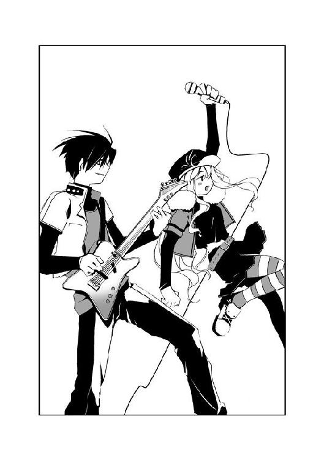
ヴォーカリストの女性が、歌い出したのだ。両手でマイクを握る女性から放たれた歌声が、商店街を駆け抜ける。
──マイネーム・イズ・ハッピーヴァレンタイン、今年は誰にしようかな？──。
──決めた、そこのキミ。うつむいちゃってる女のコ──。
叫んでいるわけではない。怒鳴っているわけでもない。静かな出だしだが、女性の歌声は確実に観衆を呑み込んでいた。歓声を上げる人々が、夢中で飛び跳ねている。
──どうしちゃったの？ キミの肩を叩いてみる──。
──今日は、最低の日？ ゼンブうまくいかない女の子──。
微笑を浮かべ、ヴォーカリストが観衆を見渡す。
──マイネーム・イズ・ハッピーヴァレンタイン、それは聞き捨てならない──。
──今日は、特別な日。そしてキミは女の子──。
トレーラーのステージ上で、ヴォーカリストの女性が両手を開く。間奏が盛り上がっていく。人々の歓声が、頂点に達していく。
──辛い？ 苦しい？ 泣きたい？ オーケイ、分かった──。
──かわりに踊り踊ってみせる。楽しく笑ってる、私を見て──。
女性が歌いながら、壇上で飛び跳ねる。それまでの控えめな笑顔から一転、満面に楽しそうな笑みが浮かんでいた。
『さあ......！』
マイクを通し、女性が叫んだ。ヴォーカリストだけではなく、残るメンバーが演奏をしながら笑顔で体を揺らす。
人々の歓声が、最高潮に達した。思うままに飛び跳ね、体を揺らし、両手を夜空に向かって突き出している。
──歌え！ 踊って！ 笑って！ オーケイ、もーっと！──。
詩歌のそばで、夕が完全にバンドの演奏に見入っていた。
「......？」
視線を感じ、となりを見る。
──痛い？ 怖い？ 逃げたい？ オーケイ、分かった──。
──かわりに歌、歌ってみせる。楽しく弾けてる、私を見て──。
初季が、詩歌を見つめていた。何かを考えるように黙ったまま、詩歌の顔を凝視している。どうしたのかと問いかけようとした時、初季の表情が緩んだ。
「アタシたちも踊っちゃおっか、詩歌たん」
「え？」
「夕たんも！」
初季が詩歌と夕の手を引っ張り、観衆の輪の中に突っ込む。
「わっ......う、初季さん？」
「初季？」
「アタシたちも踊っちゃおー！ 黙って聴いてるなんて、ソンだよん！」
初季が、持っていたコートとゴーグルを道の端に投げ捨てる。
笑みを浮かべ、長身の少女が飛び跳ねる。先ほどまで疲れたと言って駄々をこねていたのが、ウソのようだ。
詩歌と夕は戸惑い、顔を見合わせる。
「ほらほらぁ、二人もいっしょにぃ！」
初季が二人の手を取る。初季が飛び跳ねる振動が、腕を通して詩歌に伝わる。
ヴォーカリストの動きに合わせ、商店街に集まった人々が踊っていた。少年少女が次々と通りに集まり、あっという間に詩歌たちは人混みに呑まれてしまう。
──どう？ まだまだ？ 足りない？ でしょう、分かった？──。
じっとしているのがバカらしく思えるくらいの、大音量。テンポの良いリズム。騒音。歓声。そして聴いているだけで体が軽くなるような歌声。
「もう、どうにでもなれ......！」
ヤケ気味に、夕が踊りに加わる。
両手を通して伝わる二人の動きに、詩歌の胸が高揚していく。笑みを浮かべ、二人とともに踊りに加わる。
──代わりじゃない。ほら、こんなに。笑って弾けてる、キミを見てる──。
歌も佳境に入り、人々の歓声は高まっていく一方だった。
「はあ、はあ......」
手をつないで飛び跳ねる夕が、笑い声を上げる。
「こんなに楽しいの、はじめて......！ どうしてだろう、怖い人たちから逃げてる最中なのに......！」
「関係ないよん。どうせなら、楽しく逃げてやろー！」
「あははっ」
三人の少女は笑いあい、歌声に乗って踊り続ける。
──マイネーム・イズ・ハッピーヴァレンタイン、笑ってくれてアリガトウ──。
詩歌は、ステージを見上げる。
ヴォーカリストの女性と、目が合った。
女性が、微笑む。
詩歌は笑みを返す。
──マイネーム・イズ・ハッピーヴァレンタイン、来年は誰にしようかな？──。
マイクを握る女性の背後に、紫色に光るシルエットが浮かんだように見えた。一瞬で消えてしまったが、輪郭が何かの昆虫に見えたような気がする。
だが詩歌の他には、誰もそのことに気づかなかったようだ。踊る詩歌の体が軽くなり、怪我の痛みが引いていくのを感じる。
「ほらぁ、詩歌たん！ もっと高くぅ！」
「きゃあっ！」
初季が詩歌を抱きしめ、激しくジャンプする。
「あははっ！」
無邪気に笑う初季を見て、詩歌も思わず口元に笑みを浮かべる。
詩歌の視線に気づいたのだろう。初季がハッとして、笑みを消す。──だが、彼女は顔をそらさなかった。ニヤリと笑って姿勢を低くしたかと思うと、詩歌の脚を抱きしめる。
「......そりゃー！ 詩歌たんの大じゃんぷぅ！」
「きゃああっ！」
「し、詩歌さん！ お、落ちたら死んじゃいますよ、やめてください初季さんっ！」
初季に持ち上げられ、詩歌の頭が誰よりも高い位置まで浮く。それを見た周囲から歓声が上がり、次々とマネをしてハイジャンプをする人々が現れる。
「よぉし、次は夕たんだぁ」
「うそ......！ ──きゃあああっ！」
「......あ、手が滑ったぁ」
「いやああああっ！」
「ゆ、夕ちゃん......！」
観衆の中に落ちた夕を、詩歌は必死に掘り起こす。
遠くから、パトカーのサイレンが近づいていた。
ゲリラライブは、十数人がかりの警察官に止められる大騒ぎに発展した。
3.03 初季 Part. 4
近くの道路を、パトカーのサイレンが遠ざかっていった。
大騒ぎだったゲリラライブの収拾を、ようやくつけたのだろう。細道の奥に見える国道を、赤いランプをつけた後続のパトカーが横切っていく。
警察官の姿を見て真っ先に逃げたのは、クロール・ライヴではなく初季たちだった。警察に発見されることはすなわち、特別環境保全事務局に見つかることになる。
歩き続け、市境近くまで来た時には深夜になっていた。
夜こそ行動が活発になる追っ手をおそれ、三人は商店街の近くで数時間の仮眠をとることを決めた。貸家のテナントに潜り込み、詩歌と夕は早々と寝入っている。
「順調だよん。もーすぐ桜架市に入るから、そしたら〝ふゆほたる〟を......」
テナントから離れた路地で、初季は小声で呟いた。
「うん。変更はないよん......」
彼女の手には、これまで隠し持っていた携帯電話が握られていた。
「うん......うん......」
頷き、初季は会話を終える。
携帯電話をしまい、詩歌と夕がいるテナントに戻ろうとする。
だが初季は目眩をおぼえ、地面に膝をつく。
「......う......」
この数日間で、力を使いすぎた。詩歌や夕の前では平静を装っていたが、実際は初季の精神は限りなく消耗していた。
睡魔にも似た感覚に襲われる初季の脳裏を、生まれ故郷の島がよぎった。
本当の兄妹のように育った兄や姉。
変わらぬ風が吹き、太陽が降り注ぐ日々。見上げた青空、海に浮かぶ漁船。
そして、丘で初季と肩をよせて並ぶ青年──。
戦いなんて、知りたくもなかった。
なにも奪われたくはなかった。
変わらぬ日々、大切な人々......初季の夢、生まれ故郷の島の記憶が薄れていく。
「......忘れ......ないよぉ......！」
初季はネックレスを握り、奥歯を嚙みしめる。消えていこうとする故郷の人々の顔を、怒りとともに思い出す。
「忘れない......忘れてたまるか......！ 忘れるくらいなら、あの時にみんなといっしょに死んだほうがよかった......そうだよねん、お姉ぇ、お兄ぃ......〝先生〟......！」
地面の上で拳を握りしめる。
「アタシだけが残ったんだ......！ だから、アタシが仇を討たないと......！ みんなの痛みを、何倍にもしてあの女に......！ 詩歌たんと夕たんを使って......！」
呟き、初季はハッとする。
詩歌。夕。自分は今、そう言った。〝ふゆほたる〟とディスク、ではない。
──初季の手に触れてると、安心するよ。
詩歌が言った言葉が蘇った。初季は顔を歪める。
──よかった......！ 無事だったんですね......！
夕が抱きついてきた時の感触が蘇った。初季の顔が、ますます歪んでいく。
「違う......！ 違う違う違う......！ 詩歌たんと夕たんは、ただの復讐の......！」
必死に頭を振って否定するが、初季の頭から二人の笑顔は離れなかった。
「だってぇ......！ 二人を逃がしちゃったら、何もできないもん......！ アタシ一人の力なんかじゃ、何もできないよん......！ アタシなんて弱っちくて、バカで......！」
初季の胸が、締めつけられるように痛む。考えれば考えるほど、痛みは耐えきれないものへと膨らんでいく。
なんでアタシなんかの帰りを待ってくれるの......！
大声で叫びたかった。だが、声が出ない。
苦しい。
これほどの痛みは、故郷を失って以来だった。ネックレスを握る手が震える。胸の痛みのあまり、初季は一歩も動けなくなる。
「助けて、〝先生〟ぇ......！ もぉ、何もわかんないよぉ......！ このままじゃ、アタシ......何もできないまま壊れちゃうよぉ！」
呻く初季の視界が、暗くなる。
地面を凝視する初季の前に現れたのは、いつもの幻覚だった。
暗闇の中に浮かぶ、自分の手。
何かを求めるように開いた手のひらが、虚空をつかむ。
──自分の手はもう、何もつかめない。何も取り戻せない。そんなことは故郷を失った時から分かっていた。
詩歌。夕。そして復讐。
揺れ動く相矛盾する気持ちが、弱い初季の心を粉々に打ち砕く。
初季の胸に、完全な空虚が生まれる。
何も考えられなくなった初季の耳元で、誰かが囁いた。
思い浮かんだのは、最高の復讐だった。
「......そっかぁ......」
初季の視界から、幻覚が消える。
顔を上げる。夜空を飛ぶ、無数の黒い影が見えた。
〝虫〟だ。その数は、数十にも及んでいる。
空を舞う影の先にあるのは、桜架市だ。
──やっと思いついたよん、〝先生〟。アタシができる、最高の復讐......。
初季は、笑いがこみ上げるのを感じた。あれほど自分を苦しめていた痛みが、噓のように消え去っていた。
「あの女に、死ぬ以上の苦しみを与えてやる......詩歌たんと夕たんを使って......！」
唇の端を持ち上げる初季の上空を、無数の〝虫〟が通り抜けていった。
4.00 夕 Part. 5
夕は、自分が少しずつ変わっていくのを感じていた。
今までは、なんでも一人でやろうとしてきた。
人に頼ることは迷惑をかけることと同じことだと思っていたし、自分の弱さを認めるようで悔しかったから。
だが、この現実離れした三日間──それまでの夕なら、想像もしなかったような出来事の中で、詩歌や初季と出会った。
最初は互いを信用できず、見捨てられたと思った時もあった。
だが今は、違う。
不安と恐怖は、あいかわらず夕を責め立てていた。しかし初季と詩歌、そして夕の三人でいると勇気が湧いてくるのが分かった。本当ならできるはずのないことも、できると信じられるようになった。
このまま、三人で桜架市へ──。
必ず、行ける。初季と詩歌といっしょならば、夕はきっと目的を果たすことができる。センティピードという少年から預かったディスクを、〝かっこう〟へ届けることができる。
詩歌と初季は、決して夕を裏切ったりはしない。
夕もまた、二人を最後まで信じる。
──誰かを信じるのって、自分一人でやるよりも勇気がいると思うんだ。
あの時、詩歌の言葉を聞いた時に、決めたのだ。なんでも一人でやろうとしていた自分を変えることを。詩歌と初季を最後まで信じることを。
三人はそれぞれの目的を果たす。
夕の考えは、その後にまで及んでいた。
そうだ、ぜんぶ終わったら三人で赤牧市の観覧車に乗ろう。詩歌はきっと乗ったことがないに違いない。その後は駅前で買い物をして、今度こそ三人でクレープを食べよう。
三人で赤牧市を歩く光景が、深い眠りにつく夕の口元をほころばせた。
「ん......」
寒さで体が震え、夕は目を覚ました。
鳥の鳴く声が、外から聞こえる。
今日も天気が良いようだ。埃で汚れた窓から、明るい陽射しが降り注いでいる。
夕たちが一晩の宿に使わせてもらったのは、無人のテナントだった。床は固く、冷たい。体を起こすと、節々が悲鳴を上げた。疲れてさえいなければ、こんな場所で眠れなかっただろう。
目をこすり、床に置いたメガネを手でさがす。
「......？」
しかし、メガネは見つからなかった。どこか別の場所に置いたのだっただろうか？
「やっぱり、あっちのほーがよかったぁ？」
「こっちで良かったと思うよ。きっと夕ちゃんに似合うよ」
外から、初季と詩歌の声が聞こえた。二人とも、初季より先に起きていたようだ。
テナントを出ると、太陽が高い位置にあることに気づく。
「え......？ もう、こんな時間に......！」
早朝までの仮眠のつもりだったが、寝過ごしてしまったようだ。
慌てて詩歌たちの姿を捜す。
「あ、初季さ──」
道に佇む人影を見つけ、声を上げそうになる。
背が高いため、初季と見間違えてしまった。だがその人物は初季よりも長身の、大人の女性のようだ。メガネがないためはっきりと顔は見えないが、真っ赤なコートと丸いサングラスだけは見て取れる。
──女性は夕を見て、笑んだのかもしれない。赤く紅を塗った唇が、歪んでいた。
コートを翻し、女性が去っていく。
ぼんやりとその背中を見ていた夕だったが、ハッと我に返る。
見知らぬ女性など、どうでもいい。細道の反対側を見ると、二人の少女が談笑しながら歩み寄ってくるのが見えた。
そのお気楽な光景に、夕の腹が立つ。
──本当にこの二人は、どこまでも緊張感がないんだから！
二人が夕を起こしてくれれば、寝過ごすこともなかった。それに周りは敵ばかりというのに、ふらふらとどこかへ出かけていたようだ。
「どこに行ってたんですか、詩歌さん、初季さん！ 先に起きてたなら、どうしてもっと早く起こしてくれなかったんですか！」
二人の少女が夕を見て、ニッコリと微笑む。夕は眉をひそめる。
「ど、どうしたんですか......二人とも？ あ、そうだ、私のメガネ知りませんか？ さっき起きたら、どこにも──」
「えへへぇ、じゃーん」
初季が背中に隠していたモノを、夕に差し出す。
それは、赤いフレームのメガネだった。夕が昨日までかけていたものと違ってレンズが細い、可愛らしいデザインをしている。
「え？ え？」
驚く夕に、初季が赤いメガネをかける。サイズがちょうど良いことに加え、度の強さも夕にぴったりだった。鮮明になった視界に、初季と詩歌の笑顔が映る。
「おおー、ラヴって感じだよん、夕たん」
「うん。似合ってるよ、夕ちゃん」
「え？ な、なんですか、コレ？」
「アタシから夕たんに、プレゼントだよん」
夕は目を見開く。
「え......な、なんで？ プレゼント？」
「詩歌たんが夕たんに絵をあげるって聞いた時にねぇ、アタシからも夕たんに何かあげたいなって思ったの。虫憑きでもないのに......ううん、泣き虫と弱虫に取り憑かれてるくせに、がんばってるから。ご褒美だよん」
「泣き......で、でも、メガネなんてどうやって......？ お金なんて、もうないのに」
突然のことで頭が混乱していたが、それでも夕は現実的な問題を考えてしまう。夕が持っていた資金が尽きたため、昨夜はテナントで夜を明かしたのだ。
「そんなの、どーでもいいじゃん」
「どっ、どうでもよくないですよ！ まさか前に言ってたみたいに、誰かから──」
言いかけ、夕は信じられないことに気づいた。
──そんなわけ、ない。そんなこと、あり得ない。
気づいた事実を、みずから否定する。自分が予想してしまったことが、あまりにもバカげていたからだ。
──だって、言ってたもん。......生まれ故郷の形見だって！
初季がいつも首からさげていたネックレスが、なくなっていた。
夕の視線に気づいたようだ。初季が観念したように笑みを浮かべ、額に手をあてる。
「お金は質屋で調達したであります、隊長！ 未成年でも扱ってくれる怪しげな店で、思いきり足元見られました！」
「......なんでですか！」
夕は思わず、初季につかみかかる。
「恋人がくれたんだって......生まれ故郷の形見だって初季さん、言ってたじゃないですか！ 大切なものだって！ それなのに、どうしてこんなことで......！」
「えへへぇ」
「えへへじゃないですよ！ どうして、こんな......！」
「夕たんに似合うメガネのことを考えてたら、他に何も浮かばなかったんだよん。......もし死んでからリングをくれた人に会ったら、売っちったって言うよん」
言ってから、初季は自信なさそうに頰をかく。
「アタシ、誰かに何かをあげるのって、生まれてはじめてなんだよねん。......気に入らなかったぁ？」
「......！」
卑怯だ。
そんな顔をされたら、何も言えなくなってしまう。本当は言ってやりたいことがたくさんあるのに、声が出なくなってしまう。
「......大切なものなのに......逃げるために使うお金ならともかく、こんなことに......信じられない......なんでこう、この人たちは......」
「夕ちゃん？」
「私の......前のメガネ......」
「それも売っちった。あ、レンズは前に使ってたやつだよん」
「あはははは、ひどいですよぅ......なに考えてるんですかぁ......」
嬉しいのか恨めしいのか、自分でも分からない。笑いながらも、夕の両目から大粒の涙がこぼれる。
「......ありがとうございます、初季さん」
初季が、嬉しそうににっこりと笑った。
「これでもう会えなくなっちゃうけど、がんばってねん、夕たん」
──夕の心臓が、跳ねた。
時間が停まったかのように凍りついた視界の中、詩歌が真剣な表情を浮かべていた。
「え......？ 何、言ってるんですか......？」
言葉の意味を理解できず、夕は呆然と二人を見つめる。
詩歌と初季は、静かに夕の顔を見つめ返す。初季の「なんちゃってねん」という言葉を待ったが、彼女の口からは言葉は出てこなかった。
ぜんぶ終わったら、三人で赤牧市の観覧車に乗ろう。そのあとは街でクレープを──。
夢の中で見た光景が、夕の脳裏をよぎって消えた。
4.01 The others
氷鉋市のはずれ、商店街の朝は早かった。
都会へ通う客が収入源だからだろう、早朝とはいえシャッターが閉じている店は少ない。コンビニエンスストアはもちろん、靴屋や質と書かれたのれんを下げた店さえ開いている。
質屋の前で、一人の人物が立ち止まった。制服を着た少女だ。登校途中といった感じで店を横切ろうとして、ピタリと動きが止まる。少女はじっとショーケースを見ていたが、さして迷った様子もなく店内へ足を踏み入れる。
少女は店から出てくるのも早かった。手にしているのは、ネックレスだろうか？ 鎖の先に金色のリングがぶら下がっている。衝動買いにしても、感心するほど決断が早い。それまで無表情だった少女が、ニコリと微笑んだ。
友達だろう、ネックレスを手にした少女へ声をかける人物がいた。少女は笑みを消し、そのまま友人とともに氷鉋市の人通りの中へと消えていく。
「〝月姫〟」
見知らぬ少女たちの後ろ姿を見送っていた緒方有夏月は、声をかけられて振り返る。
商店街の出口に佇む彼のもとへ、一人の少年が駆け寄ってきた。
肩から大きめのバッグをさげた、長身の少年だ。着ているのは有夏月と同じ、桜架市内の高等学校の制服である。一方の有夏月もまた鞄を背負っている。
「〝兜〟。なにか分かったの？」
「不確かな情報ばかりだがな」
冷静な口調で言い、〝兜〟が嘆息する。表情や口調がやけに機械的だ。有夏月と違ってこんな時でさえ、しっかりとネクタイを身につけているのが几帳面な性格を表している。
「悪い情報と、特に悪い情報、悪夢のような情報がある。どれから聞きたい？」
いちおう、彼に選択権をくれるらしい。東中央支部の戦闘班に入ってはじめてチームを組んだが、有夏月は彼に好感をおぼえた。
有夏月と〝兜〟は、石巻支部長補佐の命令で氷鉋市へやって来た。ここ数日間の中央本部の不穏な動きをさぐるためだ。ただのお家騒動なら無関係でいられるのだが、騒ぎは赤牧市から氷鉋市へと、桜架市へ近づきつつある。桜架市には、土師千莉が通っている病院もある。桜架市を危険に巻き込まないためなら、調査任務は有夏月の望むところだった。
「じゃあ、穏やかな順で。心の準備がしたいから」
「それなら、まずは悪い情報だが、どうやら中央本部で反逆行為があったようだな」
「反逆？ いったい、誰が......？」
「俺の昔の知り合いから、なんとか手に入れた情報だ。詳細までは分からない。人数も、一人であるとか三人だとか情報が混迷してるようだ」
「そういうことなら、本部に連絡して聞いてみたらどうかな？」
「連中が一度でも真実に近い情報をくれたら、俺は裸で学校に登校してもいい。そもそも素直に情報がもらえるようなら、俺たちがこうして隠密行動をとる必要なんてない」
それもそうだ、と有夏月は納得した。西南西支部にいた時から特別環境保全事務局に興味がなかったせいもあり、有夏月はそのあたりの事情は詳しくない。
「それが、悪い情報？」
「いや、続きがある。その反逆者と戦った〝霞王〟と、なぜか情報班の〝Ｃ〟が負傷したそうだ。どちらも三号指定以上の虫憑きで、実際に連絡がとれなかった。二人ともちょっとした知り合いで、実は彼らからの情報を期待してたんだがな」
「三号指定以上の局員が二人も......？ 大問題じゃないか！」
有夏月は顔色を変える。〝兜〟が苦い表情で頷く。
「ああ、そこで特に悪い情報だ。中央本部は氷鉋市と桜架市の境界線に、戦闘班のほぼ全隊を集結しつつあるそうだ。さらに中央本部は最高度の警戒令を発令した。俺たちもヤバイ。完全に退路をふさがれてしまった。怪しいと見たら、連中は迷わず攻撃してくるぞ」
「戦闘班を全隊......？ 戦争でも起こす気なのかな？」
「さらに石巻支部長補佐が言うには、五郎丸支部長代理の命令で東中央支部の戦闘班も境界線に集結させているそうだ。......お前の言う通りだ。中央本部と東中央で戦争を起こそうとしているとしか思えない」
「東中央まで？ 僕たちは何も聞いてない！」
「俺たちは石巻支部長補佐の命令でここにやって来たからな。それに気になることがある」
淡々と〝兜〟が言う。
「中央本部の局員に下された命令の一つに、〝ディスク〟とやらを奪取せよという内容があるようだ。反逆者の抹殺は、二の次。本部らしからぬ命令だな」
「ディスク......」
「何のディスクなのか、誰が持っているのか、詳しいことは一切分からない。だが......面倒なことになってきたな。これでは俺たちまで桜架市に戻るのも命がけだ」
「関係ないよ。はやく桜架市に戻ろう」
有夏月は目つきを鋭くし、桜架市がある方向を睨む。
「そうだな。支部長代理と〝かっこう〟は数日前から、本部がある赤牧市にいる。事実上、今の桜架市には上級の局員がいないからな。なにをしようとしているのかは分からないが、〝かっこう〟たちもこの騒ぎで戻ってくるだろう」
「......」
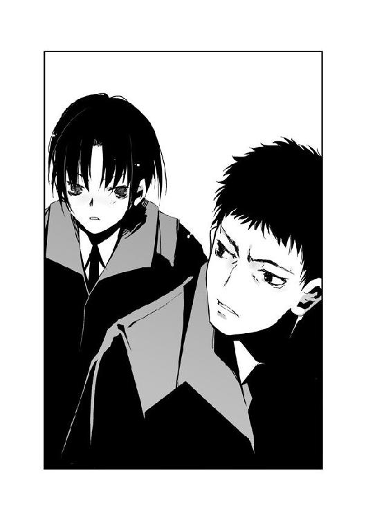
〝かっこう〟の名を聞いて、有夏月は拳を握る。
薬屋大助。立花利菜を殺した人物。
有夏月はかつて〝むしばね〟に所属していた。リーダーだった立花利菜を守るためだけに。だが有夏月の願いもむなしく、利菜は〝かっこう〟に殺された。
有夏月が東中央支部にやって来た目的は、二つだった。一つは土師千莉を守るため。もう一つは、〝かっこう〟を倒して利菜の無念を晴らすためだ。
「〝かっこう〟......」
この騒動は、もしかしたら有夏月にとってチャンスなのかもしれない。戦闘になり、〝かっこう〟と二人きりになることさえできれば、有夏月は躊躇うつもりはない。
「最後の情報だが」
顔つきを変えた有夏月に対し、〝兜〟が言う。
「悪夢のような、だったよね。なに？」
「事実だったらの話だがな。......支部長代理たちと同行していたはずの〝ねね〟という局員が昨夜、この近辺で見かけたらしい」
「見かけた？ なにを？」
「〝ふゆほたる〟」
有夏月は、目を見開いた。
〝ふゆほたる〟。かつて特別環境保全事務局をたった一人で半壊状態まで追いやり、数ヶ月前は〝むしばね〟も巻き込んでの大規模な戦闘を巻き起こした中心人物だ。いちど〝虫〟を殺され欠落者になったにもかかわらず、復活をとげた唯一の虫憑きでもある。
「彼女は、中央本部に収容されていたんじゃ......！ それじゃあ、中央本部の反逆者っていうのは、彼女のこと......？」
「反逆者という言い方は、少し違和感があるが......もしそうなら、〝霞王〟たちが返り討ちに遭ったのも納得がいく。だが単なる〝ねね〟の見間違いという可能性も、大いにあり得る」
「その〝ねね〟っていう人は、その人物を追いかけなかったの？」
「いや......彼女はすぐに警察に捕まり、事情聴取を受けていたそうだ」
「事情聴取？ いったいどうして......」
「俺も詳しい状況は聞いていない。なんというか、彼女は少し変わっているところがあるからな......」
やれやれというように首を振り、〝兜〟もまた桜架市を向く。
「とにかく分かっているのは、氷鉋市と桜架市の近隣地域が混戦状態になるかもしれないということだ。東中央の方針は、支部長代理の命令があるまで絶対防御。何を発見しても攻撃せず、対象を確保すること」
「絶対防御......もし〝ふゆほたる〟がいたとして、そんなものが通用するのかな？」
「する。おそらく」
「......？ どうして言い切れるの？」
「実際に彼女と戦って分かったんだが......いや、今はいい。とにかく俺たちのすべきことはたった一つ。何が起こっているのかをさぐり、問題の大本を確保すること。対して中央本部は手段を選ばず殲滅の姿勢を崩さないだろう。......市街戦になるな」
単調な口調で言い、〝兜〟が有夏月を見る。有夏月は頷いた。
「戻ろう、桜架市へ」
4.02 詩歌 Part. 6
「な......？ え？」
夕が、初季と詩歌の顔を交互に見比べる。
「も、もう会えないって、どういう意味ですか......？」
「ここでアタシたち三人、お別れだよん」
いつもと変わらない、軽い口調で初季が言う。夕が詩歌を見る。
「詩歌さん！」
「......」
詩歌は唇を嚙み、両拳を握りしめる。
夕のメガネを買いに行く途中に、詩歌はすでに初季から話を聞いていた。その時は詩歌も今の夕のように、初季に詰め寄った。
「昨夜、初季が桜架市のほうへ飛んでいく戦闘班を見たんだって......」
詩歌はうつむき、言う。夕の目を見ることができなかった。
初季が感心したように何度も頷く。
「あの数は、ハンパじゃなかったよん。エリィたんが教えてくれた戦力をぜんぶ、桜架市のそばへ集めたみたいだねん。ここから先はもう、小細工は効かないよん」
「や──」
夕が初季の言葉を遮る。
「やだ......！ そんなの、やだ！ 私たち三人で桜架市に行こうって言ったじゃないですか！ 詩歌さん、私にレイディーの絵をくれるって......！」
夕が詩歌に飛びつく。詩歌だって、夕と同じ気持ちだった。初季や夕と離れたくない。
「ワガママ言わないのぉ」
初季が笑いながら夕の頭をなでる。
「アタシの言うことには絶対服従って言ったでしょ？」
「初季......」
「詩歌たんもだよん」
にっこりと微笑み、初季が桜架市がある方角を指さす。
「桜架東高校は、この国道にそって桜架市に入れば道沿いに見つかるよん。夕たんは、東中央支部だね。それは、あっち。住宅街を抜けたところにある大きな橋を渡って、線路沿いに行けば大きな建物で新環境省支部っていう建物があるよん。表向きはふつうの官庁だけど、本当は東中央支部の本拠地だから。事情を話せばたぶん、話を聞いてくれるはず。中央本部が桜架市まで来てるみたいだから、やっぱり乗り物は使わないほうがいいねん。どっちも遠いから、タイムリミットの夕方までにたどり着けるか、五分五分──」
「初季さん！ どうして、いっしょに来てくれないんですか？ 私たちのこと、もうどうでもよくなっちゃったんですか？」
「夕たん。アタシのこと、信じてくれるんじゃなかったの？」
初季の言葉に、夕は涙目ではっきりと頷く。初季が嬉しそうに微笑む。
「初季は......？ 初季はどうするの？」
詩歌の問いに、長身の少女はあっさりと答える。
「囮になるよん」
「......！」
「できるだけ中央本部をひきつけるから、二人ともなるべく早めに目的を果たしてねん」
詩歌と夕は、初季を見る。
「どうして──」
詩歌の胸に、突き刺すような痛みが生まれる。以前にも感じた痛み──桜架市のあの教室で、最期に利菜の笑顔を見たときと同じ感覚だった。
「さっきは、助けを求めに行ってくるって言ってたのに！」
「うん。さっき連絡したら、桜架市まで来てくれるって。だからまず桜架市まで行かなきゃ。このまま三人で行っても、大勢で囲まれて終わりだもん。だからアタシが敵をひきつけるの」
「そんな......！ それじゃ初季さんが......！」
「死んじゃうって？」
初季が頭をかきながら、平然と言う。詩歌と夕は絶句する。
「詩歌たん、夕たん、アタシが死んだら悲しい？」
「当たり前だよ！」
「当たり前です！」
詩歌と夕が声を合わせる。初季はちょっとびっくりした顔をしたが、すぐに元通り笑みを浮かべる。
「うん、わかった。じゃあ、死なないよん」
「初季......」
「それでわ、これから作戦を発表します！ 二人とも、よく聞くように！」
初季が詩歌と夕の手を握る。
「詩歌たんは、お友達の絵をゲットする！ 夕たんは〝かっこう〟にディスクを届ける！ そしてアタシは死なないようにする！ これで大成功、アタシたちの完全勝利だよん」
「そんなの......作戦でもなんでもないですよぅ......第一、どうやってお互いの成功を知らせるんですかぁ......」
「うーん......大声で叫んでみる？ 聞こえるかもしれないよん」
「そんなわけ、ないじゃないですかぁ」
初季に手を握られた夕が、泣き笑いを浮かべる。
詩歌もまた、握った手から初季の温もりを感じていた。触れた手のひらから、彼女の鼓動までも伝わってくる。
「私......初季に助けてもらったお礼、何もしてない。絵を手に入れたあとどうすればいいのか、まだ聞いてないよ」
「わ、私も......初季さん......」
初季が目を細める。
「モチロン、タダで逃がしてあげるつもりなんてないよん。詩歌たんは......無事に絵を手に入れてくれたら、それから分かるよん」
「絵を手に入れたら？」
「わ、私は？ 初季さん......！」
「夕たんは──」
初季が夕を見る。
「元気でねぇ。ステキな女の子になってねん？」
「......！」
夕の両目に、涙が浮かんでいく。堪えきれなくなったように、初季の体に抱きつく。
少女の嗚咽を聞きながら、詩歌と初季が見つめ合う。
「初季......」
「アタシはだいじょぶだよん。てきとーに敵が集まったところで逃げるから。それより詩歌たんのほうこそ、絶対に捕まっちゃダメだよん？」
「うん」
気を抜くと歪みそうになる視界に、しっかりと初季の笑顔を焼きつける。
「初季も、いつか島に戻れるといいね」
初季の表情が翳る。
「うん......それがアタシの夢だったんだけどねん。でも、もう島は......」
「戻れるよ。初季も、島も。いつかきっと」
初季が目を見開く。
「島が......？」
「うん」
「アタシが、あの島を元通りに......？ 青播磨島を......？」
詩歌は頷く。初季が考えるようにうつむく。
「取り戻す......アタシがあの島を......昔みたいに......」
顔を上げ、少女が嬉しそうに笑う。
「えへへぇ、新しい夢、見つかっちった」
詩歌は夕の上から、初季を抱きしめる。
「ありがとう、初季......私、絶対にもう捕まらないから......だから、初季も......」
「ありがとうございます、初季さん......」
「......」
初季もまた夕と詩歌を強く抱きしめ、そして二人をそっと引き離す。白いコートとゴーグルを身につけ、カラスヤンマと同化する。四枚の黒い翅が少女の背中に生える。
「私、初季や夕ちゃんと出会えてよかった」
詩歌は二人を見つめ、言った。
「私もですぅ......」
涙を浮かべ、夕が言った。
「アタシは、タイヘンだったよん。二人ともワガママばかりなんだもん」
初季が笑う。
「そ、それはこっちのセリフです！ 初季さんが一番ワガママだったじゃないですか！」
三人の少女が、笑みを交わす。
「そんじゃ、おめでとぉ」
初季の言葉に、詩歌と夕は顔を見合わせた。
だが、二人はすぐに笑みを浮かべる。初季の言葉の意味は、すぐに分かった。
今この瞬間に、三人はそれぞれの目的を果たしたと思っていいのだ。
初季が死ぬはずがないし、夕が目的を達成できないはずがない。詩歌は強い二人を信じている。初季と夕も、同じように詩歌を信じてくれている。
「おめでとう」
「おめでとうございます」
別れの言葉のかわりに互いの成功を祝い、三人の少女は身を翻した。
詩歌は、桜架東高等学校に向かって。
夕は、〝かっこう〟がいる東中央支部に向かって。
初季は、敵が待つ大空に向かって。
三人の目的地は一つ、桜架市だった。
4.03 夕 Part. 6
夕は、氷鉋市の街を必死に駆ける。
怯えて周囲を警戒する時間など、なかった。一秒でも早く、一歩でも早く、桜架市へ行かなければならない。特別環境保全事務局東中央支部まで行き、〝かっこう〟にディスクを渡さなければならない。
タイムリミットは、数時間後の夕方だ。はっきりとした時間が分からないため、一秒でも早くディスクを届ける必要がある。
それに、もう一つ──。
「......！」
遠くの空を舞う無数の影が見えた。夕は思わず立ち止まる。
他の人間が見たら、ただの飛行機と思ったかもしれない。だが赤いメガネを通して見た夕は、それらが〝虫〟の大群であると確信する。同じ方向に向かって飛んでいるようだ。その先には、おそらく──。
「初季さん......！」
夕の足が、〝虫〟たちの針路へと向きかける。
だが唇を嚙み、再び桜架市へ向かって走り出す。今さら夕が初季のもとへ行ったところで、何の役にも立てない。
初季が囮になってくれて追っ手が手薄な間に、桜架市へ行かなければならない。
オフィス街から飛び出し、道路を横切る。車のクラクションが鳴り響いた。
通行人の注目を浴びながら、それでも夕は走り続ける。
夕にできることは、ただ一つ。
初季の期待に応えること。三人の完全勝利を果たすため、ただ一心に走ることだけだ。
大通りを曲がり、人気の少ない裏道へ入る。初季が言っていた桜架市の入り口まで、ひたすらまっすぐに進んでいく。
「ぜったい......〝かっこう〟さんに届けるんだから......！」
詩歌は、信じてくれた。
つい数日前まで普通の中学生だった夕が、危険を承知でディスクを届けたいと言った。
誰が聞いても、反対したことだろう。初季も最初は、夕には無理だと言った。自分自身でさえ、信じられないくらいバカげた行動だと思う。だが詩歌だけは、夕を信じてくれた。少年の想いを受け取った夕に対し、「ありがとう」と言ってくれた。
初季は、信じてくれた。
出会った頃は、夕をこれっぽちも信用していなかった。だが、いっしょに旅を続けるうちに、少しずつだが夕のことを認めてくれるのが分かった。力を合わせて追っ手を退け、最後は夕一人で成功できると信じてくれた。これまでのように、夕が意地を張って一人になったわけではない。夕が二人を信じ、二人も信じてくれたからこそ一人でできると思った。
「ぜったい......！ 〝かっこう〟さんに......！」
走る夕の前に、人影が立ちはだかった。
見間違えようもない、白いコートとゴーグルを装備した人物たちだ。
「あ......！」
立ち止まった夕の目の前に、次々と白コートたちが姿を現す。
「海老名夕だな。ディスクを持っているなら、こちらへ渡すんだ」
先頭の人物が、夕に向かって歩み寄る。
夕の両脚が震え出す。
──この人たち全員が、虫憑き......？
白ずくめの異様な集団が、夕を取り囲んでいく。
「わ──」
夕は、奥歯を嚙みしめる。
怖い。虫憑きが怖い。〝虫〟が怖い。殺されるのが、怖い。
だが今は、それよりも怖いものがあった。
夕が一刻も早くディスクを届けなければ、センティピードという少年だけではない、詩歌と初季の想いまでムダにすることになる。今の夕には、そのことのほうがよほど怖かった。
「わたさない......！」
白コートたちを睨み、脇道へ駆け込む。白コートたちの顔に驚愕が浮かんだのが分かった。
細道を曲がり、全力疾走する。
夕の周囲に、大きな影が落ちた。
「......！」
頭上から、何体もの〝虫〟が襲いかかった。夕は方向転換し、〝虫〟の攻撃から免れる。
転びそうになり、地面に手をつく。だが必死に体勢を立て直し、走り出す。
「何をしている！ 殺しても構わん！」
遠くから聞こえた号令に、背筋が凍りつく。しかしそんな恐怖も、夕を立ち止まらせることはできない。息を切らし、細道の出口を目指す。
──大通りに出れば、この人たちだって攻撃したりできないはず......！
一縷の望みにすがり、走る。
だが夕の進路を、空から舞い降りた〝虫〟たちが塞いだ。
「......！」
後ろを振り返る。だが後方にも白コートたちが立っていた。
建物に挟まれているため、他に退路はない。
──行かなきゃ......桜架市へ！
つのる思いとは裏腹に、夕の周囲を虫憑きたちが取り囲んでいく。
「もう一度言う。ディスクを渡せ。さもないと......」
夕は顔を歪める。ポケットから、ディスクを取り出す。
「わたさない......！」
ディスクを握りしめ、叫ぶ。恐怖で今にも気を失いそうだったが、何があってもこれだけは手放すことはできなかった。夕だけではない、欠落者の少年だけではない、この一枚のディスクには夕にとって大切な人の想いも込められているのだ。
「このディスクは、私が〝かっこう〟さんに渡すの！」
夕の叫び声に対する答えは、意外な場所から降ってきた。
「〝かっこう〟......？」
声は、夕の頭上から聞こえた。
空を見上げると、コンクリートの建物の屋根に二つの人影があった。
高校生くらいに見える、二人組の少年だ。
「〝かっこう〟が、なんだって？」
「......ちっ、バカが。黙って様子を見ていればいいものを......こんなに早く中央本部に見つかるなんて最悪だぞ、〝月姫〟」
身を乗り出す少年を、となりの人物が非難する。
「お前たち、東中央の？ どうして、こんなところにいる......！」
白コートの一人が叫んだ。夕は目を見開いた。
「東中央......〝かっこう〟さんの、仲間......？」
4.04 詩歌 Part. 7
詩歌は、懸命に国道を駆けていた。
自動車が走る道路の上に、桜架市への距離を示す標示が見えた。
通行人の間を縫い、息を切らし、詩歌は走り続ける。
「......！」
遠方の空を横切る黒い影に気がつく。
〝虫〟だ。地上から飛び上がる〝虫〟たちが集まり、彼方へと飛び去っていく。
「初季......！」
初季が敵の目を引きつけてくれているのだ。
わき上がる嫌な予感を、頭を振って吹きはらう。
──初季は死なないって言ったもん......！
無我夢中で、どれくらい走り続けただろうか。
疲れが限界を超え、詩歌の頭がぼんやりとしていく。一種の陶酔状態に陥った脳裏に、色々な思いがよぎっては消えていく。
結局、自分は初季に、助けてもらうことしかできなかった。
利菜の時も同じだった。彼女は最期まで詩歌の身を案じてくれていた。
自分の能力は、どうして壊すことしかできないのだろう？ 助けるどころか、そばにいる人まで傷つけてしまう。居場所が欲しいと望む詩歌に対し、孤独しか生むことのない能力......〝大喰い〟はなぜ、自分によりによってこんな能力を与えたのだろう？
夕は一体、どうなっただろうか？
もう、桜架市へたどり着いただろうか。それとも、夕のほうこそ詩歌を心配しているだろうか？ 夕といっしょにいるのが、楽しかった。妹がいたら、あんな感じなのだろうか？ だがそんなことを言ったら、夕からすれば詩歌はよっぽど頼りない姉だったに違いない。世間知らずで、トロくて、何もない詩歌のために怒ってくれた時は本当に嬉しかった。
詩歌は急に心細くなっていくのを感じる。
逃げるのは慣れているはずなのに、初季や夕と別れた途端に弱ってしまっている。
──こんなに楽しいの、はじめて......！ どうしてだろう、怖い人たちから逃げてる最中なのに......！
──関係ないよん。どうせなら、楽しく逃げてやろー！
──あははっ。
楽しかった。特別環境保全事務局に狙われる恐怖はあったが、それよりも三人でいることの楽しさのほうがずっと勝っていた。
過去に同じように逃げていた時とは、まるで違う。その理由がやっと分かった。
「怖くなかったのは......初季や夕ちゃんといっしょにいたからだ......」
走りながら、詩歌は無意識に呟く。
疲れでかすんだ視界に、国道を埋め尽くす渋滞が映った。道路の先で検問をやっているようだ。制服を着た警察官が、一台一台を確認していた。
──たった一人じゃ、私なんか弱くて弱くて、何もできないよ......。
心中で呟く。
脇道へ入り、ビル群の隙間を走っていく。
だが裏道に立ちはだかる白コートたちを見て、立ち止まる。彼らは数人で固まり、何かを話しているようだった。
一人が氷鉋市を指さし、全員が頷く。「〝からす〟が──この辺りは三班に任せて──」という声がかすかに聞こえた。白コートたちが身を翻し、こちらへ向かって駆けてくる。
とっさに建物の陰にかくれた詩歌のそばを、白コートたちが走り去っていく。
初季ががんばっているのだろう。彼女が囮になって、敵をひきつけてくれている。
詩歌はすぐに道に出て、誰もいなくなった通りを駆け抜ける。
──たった一人じゃ、何もできない......でも......！
検問が張られていた地域を抜け、再び国道へ出る。道路の脇に、桜架市に入ったことを示す標識が立っていた。
──今の私は、一人じゃない......！ 初季と夕ちゃんに助けてもらって、ここにいるんだもん......！
目の前に、懐かしい光景が広がっていた。
高層ビルと古い建物が乱立する、ツギハギだらけの街並み。中心街のあちこちに生えた大型のクレーン車の頭。潮の香りと自動車の排ガスが入り混じった、独特の空気。
詩歌の生まれた街、桜架市だ。いちどは夢を失い、大助と出会って思い出した場所。利菜と出会い、別れた地。
「......戻ってきたよ、大助くん......利菜......」
詩歌は、桜架市にたどり着いた。
4.05 初季 Part. 5
「おめでとう」
「おめでとうございます」
詩歌と夕の笑顔を脳裏に焼きつけ、初季は宙を舞った。
もう、二人の姿を見送ることはなかった。詩歌と夕は、必ず目的を達成してくれる。そうすれば、初季の目的もおのずと──。
氷鉋市の街並みが、眼下で小さくなっていく。
──都会の空は、キライだよん。
顔にあたる風は排ガスに汚れ、四枚の翅が切る空気も湿っている。そんな都会の空を、初季は決して好きになれなかった。
だが、今だけは違った。
風を裂く翅は力強く、視界は晴れ渡っている。まるで生まれ故郷の空を飛んでいるような気がして、体の奥から力がみなぎってくる。
「〝先生〟......詩歌たんが、アタシに新しい夢をくれたよん。アタシでも、あの島を取り戻せるって......元の島を取り戻せるって......」
初季は桜架市の手前で、空中停止した。
氷鉋市の全域から、まるで雲のように黒い影が集まりつつあった。
中央本部の飛行部隊だ。吸い寄せられるように、初季のもとへ迫り来る。
──この復讐が終わったら、島に戻るよ、〝先生〟......。
初季は笑みを浮かべる。
これだけの敵を前にして、絶望的な光景を目にして、しかし初季はこれっぽちも負ける気がしなかった。
思いつく。
島に戻ったら、まず診療所を作ろう。〝先生〟がいつ帰ってきても、良いように。
「そしたらまた、いっしょにあの丘にのぼろぉ......？ ねぇ、〝先生〟......」
ガクン、と初季はバランスを崩す。頭が朦朧とし、故郷の光景が記憶から削り取られていく。
だが、初季は笑みを崩さない。たとえ体力がなくなろうと、〝虫〟に夢を喰われようと、今の初季には新しい力がみなぎっていた。
「夕たんにプレゼントあげるために、あのリング......売っちったよ。でも、いいよね？ 〝先生〟、前に言ってたもんね？」
──いつか、君が大切だと思える人のために使ってほしい。
あの時の〝先生〟の笑顔は、決して忘れない。きっと自分の〝虫〟に夢を喰い尽くされた時、最期までおぼえているのが彼の笑顔だろう。
「大切だと思える人に、今ごろ会えたよ、〝先生〟」
──ありがとう。
──ありがとうございます。
詩歌と夕は、初季にそう言った。
違う、礼を言うのは、初季のほうだ。あの時は言えなかったが今、心の中で言おう。
ありがとう。
ありがとう。
初季を待っていてくれて、ありがとう。
何もかもを奪われて何もなくなってしまった初季を信じてくれて、ありがとう。
「もう何も奪わせないよん。詩歌たんも夕たんも、誰にも奪わせない......！」
自分を取り囲みつつある〝虫〟の大群を、余裕の笑みで見下ろす。
「モチロン、アタシの命もねん」
今の自分は、誰よりも強い。無指定であることも、頭が悪いことも関係ない。今の初季には、誰よりも信じられる友達がいる。彼女たちが遂げるであろう成功が、いくらでも初季を支えてくれる。
「もっと集まれ......もっと......！ みんなまとめて、アタシが復讐してやるよん！」
飛行部隊の一斉攻撃がはじまった。
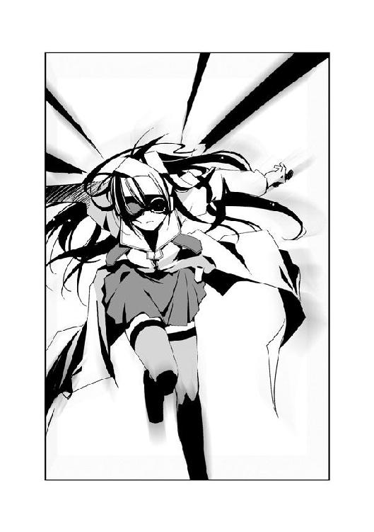
不敵な笑みとともに、初季は急加速に入った。
4.06 夕 Part. 7
夕の目の前で、白コートたちと少年二人が睨みあう。
──ど、どうなってるの......？
この隙に逃げ出そうかとも考えるが、取り囲まれている状況に変わりはない。
「そうか、〝からす〟が連絡をとりあっていたというのはお前たちだな！ 東中央もディスクを狙っていたのか！」
「......どうやらお前のせいで、ややこしい事態になりそうだぞ、〝月姫〟」
仲間らしき少年の叱咤を無視し、〝月姫〟と呼ばれた少年が鞄を開ける。
取り出したのは、漆黒のロングコートだった。夕を囲む虫憑きたちのコートと似ているが、顔に装着したゴーグルまでも黒一色に染まっている。
黒コートをまとった少年の足元に、二股に分かれた長い尾を持つ〝虫〟が現れた。カゲロウに似た〝虫〟の躰が、金色へと変化していく。
「たしか氷鉋市と桜架市で起きている問題の収拾も、任務の一つだったよね、〝兜〟？」
「それは桜架市へ撤収してからの話だったんだがな。......そこのお前、走れるか？」
〝兜〟と呼ばれた少年が、夕に向かってたずねる。
夕は呆然としていたが、慌てて何度も頷く。
「よし」
〝兜〟が建物から飛び降り、夕のそばに着地する。
「走れ！」
手を引かれ、夕は走り出す。
金色のレーザーが、周囲の白コートの頭上へ降り注いだ。
「うあっ！」
「くっ！」
白コートたちの足元の地面が爆発した。中央本部の局員たちが吹っ飛び、包囲網が崩れる。〝月姫〟という少年が自分の〝虫〟とともに、夕たちの背後に降り立つ。
大通りへ出た夕たちは、道路沿いに桜架市へ向かって走る。通行人の間を駆け抜ける夕に、〝兜〟が声をかける。
「話を聞かせてもらいたい。どうして中央本部に追われているのか、説明してくれるな？」
「説明してる時間なんて、ない！」
「どういうこと？」
追いついた〝月姫〟が、たずねる。
「早く〝かっこう〟さんに会わないと、初季さんが......！」
「ウブキ？」
「私と詩歌さんのために、時間を稼いでくれているんです！ あんなに大勢を相手に......！」
二人の少年が息をのんだのが分かった。
「詩歌......それはまさか、杏本詩歌のことか？」
〝兜〟の問いに、夕は頷く。少年二人が、顔を見合わせる。
「〝ふゆほたる〟......本当に中央本部から脱走していたんだ」
夕は、足を止めた。
桜架市へつながる橋で、渋滞が起きていた。
検問だ。
夕は他の道をさがそうとするが、目の前には大きな川が立ちはだかっている。
「どうしよう......！ 早く桜架市に行かないと......！」
「待て」
方向転換をしようとした夕の肩を、〝兜〟がつかむ。
「お前は〝かっこう〟に会いたいのか？ だったら、桜架市に行く意味はない」
「ど、どうしてですか？ 〝かっこう〟さんは東中央支部にいるって──」
「あいつは今、赤牧市にいる」
〝兜〟の言葉に、夕の視界が真っ暗になった。
「え......？」
体から力が抜けていくのが分かった。
少年が何を言っているのか、すぐに理解することができなかった。
〝かっこう〟は桜架市にいる。
それだけを頼りに、それだけを信じて必死にここまで来たのだ。
〝兜〟の言葉が浸透していくにつれ、崖から突き落とされたような絶望感が夕を襲った。
「桜架市に......〝かっこう〟さんは、いない......？」
ショックで、体が震え出す。
今から赤牧市に戻ったところで、とうてい夕方までにたどり着くことなど不可能である。
──初季さん......！ 詩歌さん......！
夕を信じてくれた二人の少女が脳裏をよぎる。
センティピードが命をかけて遺したディスクなのだ。夕が受け継ぎ、何人もの人に助けられてここまでやって来た。
しかしまさか、今になって〝かっこう〟が桜架市にいないと告げられるとは思わなかった。
私......どうすれば──。
絶望の影が、夕の足元から忍び寄る。
その場にくずおれそうになる夕の耳に、しかし〝月姫〟の驚きをまじえた声が聞こえた。
「え......本当ですか、支部長代理？」
ゴーグルを通して誰かと通信をしているのだろう。〝月姫〟が言う。
「〝かっこう〟はもう、桜架市に戻ってる......？」
「......！」
夕は、目を見開いた。力を失いかけていた両脚から、震えが消える。
「どういうことだ？ 俺たちは聞いていないぞ。いったいどうなってるんだ？」
「はい、はい......わかりました」
〝月姫〟が〝兜〟に向き直る。
「中央本部が氷鉋市を包囲する直前に、桜架市に戻ったそうだよ。今は境界線で中央本部を牽制してるらしい......」
「まるで中央本部の動きを事前に知っていたような行動だな......ならばどうして、俺たちには撤収命令がなかったんだ！」
「いや、少し違うみたいだ。支部長代理が言うには、この辺りで〝大喰い〟の発見報告があったらしい。それで──」
「〝かっこう〟さんは、桜架市にいるんですね！」
夕は、〝月姫〟のコートをつかむ。
希望はまだ途絶えていなかった。桜架市にいるのなら、今すぐにでも彼のもとへ行かねばならない。
「......君は、どうして〝かっこう〟に？ ディスクがなんとかって言ってたけど──」
「センティピードさんから、預かったんです......！ ディスクを渡して欲しいって......！ レイディー・バードか、そうじゃなければ〝かっこう〟さんに......！」
夕の言葉に、少年二人が表情を変えた。
特に〝月姫〟は動揺したようだ。コートをつかむ夕の手を、強い力で握り返す。
「センティから？ なぜ、彼が......！ それにどうして今ごろ、利菜に？」
気圧され、夕は怯む。レイディーを知っているのか、〝月姫〟は彼女を利菜と呼んだ。
「落ち着け、〝月姫〟。どうやら本当に、説明してもらっている時間はなさそうだ」
その言葉に、夕と〝月姫〟は道路を振り返る。
渋滞でクラクションが鳴り響く周囲に、白い影が集まりつつあった。多くの一般人の目があるためか、建物の陰に潜んでこちらの様子をうかがっている。
「少し、整理をしよう。お前はセンティピードと名乗るやつからディスクとやらを預かり、それを〝かっこう〟へ届けようとしてここまでやって来た。ウブキという人物と〝ふゆほたる〟が同行していたが、すでに別れたあと......そうだな？」
夕は首を縦に振る。
「〝ふゆほたる〟は、どこにいる？」
問われ、夕は唇を固く閉ざす。詩歌は特別環境保全事務局から逃げているのだ。彼女の行き先は、口が裂けても言うことはできない。
「......警戒されたものだな。質問を変えよう。お前が今抱えている問題は、〝かっこう〟にディスクを届ければ解決するのか？」
「はい！ だから、早くしないと......！」
「ディスクを俺たちに預ける気はあるか？ 少なくとも、お前よりは──」
反射的に、夕は少年たちから身を遠ざける。
ディスクは、他の誰でもなく夕が届けなければならない。センティピードの想いを受け取り、詩歌や初季に助けられてここまで来たのだ。夕の手で、〝かっこう〟という人物に渡さなくてはならない。
〝月姫〟という少年が顔を歪める。
「君は知らないかもしれないけれど、〝かっこう〟っていうヤツは......」
「悪魔みたいな人なんでしょう！」
「......！」
「神様でも悪魔でも、関係ない！ 私が、あの男の人から預かったの！ 詩歌さんと初季さんに助けてもらって、ここまで来たの！ だから私が届けるの！ 私じゃなきゃ、ダメなの！」
必死に叫ぶ。ディスクを握りしめ、少年二人を睨む。どうしても夕の手から奪うというのなら、今すぐにでも逃げ出すつもりだった。
〝兜〟という少年が、嘆息する。
「わかった」
頷く少年の足元に、一匹のカブトムシが舞い降りた。──いや、よく見るとカブトムシではない。枝分かれしたツノが数本あり、茶に染まった体軀はゴツゴツと歪んでいる。
「......！」
夕は愕然と息をのむ。
ツノカブトの躰が、急激に膨張していた。夕の身長の三倍はありそうな高い位置で、ツノカブトの眼が太陽の光を反射していた。
突然の〝虫〟の出現に、周囲は騒然となった。人々の悲鳴が飛び交う。
「乗れ。氷鉋市を脱出する」
「〝兜〟......！」
「中央本部が、〝ふゆほたる〟の追跡よりも重要視するような問題だ。どのみち俺たちがどうこうできる代物じゃない」
だが〝月姫〟は納得しかねるのか、奥歯を嚙みしめる。
「それに、お前の昔の仲間の頼みらしいぞ？ とうの昔に欠落者になったはずの〝むしばね〟のメンバーが、なぜ敵だったはずの〝かっこう〟に頼るのかは分からんがな」
「......！」
〝月姫〟が、拳を握る。ゴーグルで隠した目が、夕を見る。
「君の名前は？」
「夕......海老名夕」
「僕は緒方有夏月。〝月姫〟っていう特環の呼び方は好きじゃないんだ......行こう、夕」
有夏月と名乗った少年が、夕を抱き上げる。〝兜〟と有夏月はツノカブトの脚を蹴り、胴体の上に乗る。
ツノカブトが、巨大な二枚の翅を拡げた。薄翅を羽ばたかせ、宙へと舞い上がる。
「きゃ......！」
「しっかりつかまっていろ」
三人を乗せたツノカブトは、一気に上昇する。初季と違って加速は遅いが、夕たちを乗せても動じることのない力強い飛翔だった。
風に打たれる夕たちのもとへ、周囲を取り囲んでいた白コートたちが襲いかかる。飛行部隊ではないのか、本体を乗せていない〝虫〟ばかりだった。
「確かに包囲網が薄くなっている。ウブキという人物が、こらえているようだな」
ツノカブトが巻き起こした風が、〝虫〟たちを吹き飛ばす。巨軀のツノカブトから見た中央本部の〝虫〟たちは、まるで羽虫のようだ。突風に耐えた〝虫〟が体当たりをかけてくるが、まるで動じない。
眼下に、桜架市へとつながる橋が見えた。
ツノカブトに乗った夕は、氷鉋市の街並みを振り返る。
「危ない......！」
夕の目に、斜め後方から飛来する物体が映った。
直後、ツノカブトの躰を震動が襲った。
「ぐあっ......！」
〝兜〟が顔を歪める。
ツノカブトが生んだ轟風を切り裂き、無数の矢が降り注いだのだ。
「きゃあっ......！」
「〝兜〟！」
間髪入れず、第二射がツノカブトを襲う。凄まじいスピードで飛来する矢が、次々とツノカブトの巨体に突き刺さる。
「〝トラマル〟......！」
夕は呻く。昨日、夕たちを襲った刺客の一人に間違いなかった。
「くそっ！」
「攻撃するな、〝月姫〟！ 絶対防御だ！」
金色のカゲロウを従えた有夏月を、しかし〝兜〟が制する。
「そんなことを言ってる場合じゃないよ！ このままじゃ、ただの的だ！」
「お前は中央本部のことを何も分かっていない！ こちらから攻撃したら、それを口実に東中央支部へ攻めてくるぞ！」
「攻め......？ そんな、バカな！」
「絶対防御だ、〝月姫〟！」
「......一体なんなんだ、中央本部は！」
カゲロウが二股の尾をしならせる。先端から生まれた金色の光線が、襲いかかる矢を撃ち落としていく。
だが〝トラマル〟の矢は速く、その半分も撃退できない。ツノカブトの躰に深々と矢が突き刺さり、緑色の体液が噴き出す。〝兜〟が胸をおさえ、前のめりにうずくまる。
「ぐっ......！」
「〝兜〟さん......！」
体を支えようとした夕の手を、〝兜〟は毅然と振り払う。
「俺のことは、どうでもいい......！ それより心の準備をしておけ、桜架市だぞ！」
言われ、夕は顔を上げる。
ツノカブトが川を越え、眼前に広大な街並みが拡がっていた。
「ここが、桜架市......」
空気が、変わっていた。
風に潮の香りが混じる。街のあちらこちらに建築中の高層ビルが建ち、工事の音がここまで聞こえてくるようだった。
氷鉋市を振り返る。
ディスクを握る手に、自然と力が込められる。
数日前に赤牧市を離れ、とうとうここまでやって来た。
塾からの帰り道に振り返ったあの時から、色々な人と出会った。笑い、怒り、恐怖し、走り続けてここまで来た。大切だと思える人と出会い、別れた。
夕の胸に、一つの想いが生まれた。
「私......また、ここに戻ってくる......」
ぽつりと呟く。
詩歌と初季に、大切なものをたくさんもらった。それらはこれからの一生、忘れることはないだろう。
初季にもらったプレゼントも、その一つだ。なによりも大切だったはずの生まれ故郷の形見を、しかしあのとぼけた少女はあっさりと手放した。夕のために。
返そう。
もらったもの、想い、すべてを込めて初季に返そう。初季が手放したネックレスをもう一度見つけて、今度は夕から初季にプレゼントするのだ。
「私......詩歌さんや初季さんと、また会いたい」
また二人に会いに行こう。
〝かっこう〟にディスクを届け、すべてに決着をつけよう。そして胸を張って、二人に会いに行くのだ。初季のネックレスを持って。
生まれた小さな想いを、夕は大切に胸の奥にしまいこむ。この想いは、夕の中だけにしまっておこう。詩歌と夕に再び会い、ネックレスを渡すその時まで。
「桜架市に入ったのに......！ 攻撃を止める様子がない！」
飛んでくる矢を撃ち落としながら、有夏月が叫ぶ。
「中央本部の連中は、常に追いつめられているからな......そう簡単に逃がしてはくれないさ」
「追いつめられている？」
「本部長や副本部長が、それだけ怖いのさ......くっ、降りるぞ！」
川を越えた市街に向かって、ツノカブトが急下降していく。
有夏月が夕の体を抱き上げ、姿勢を低くする。
「〝月姫〟......！ お前は〝かっこう〟と連絡をとりあって、なんとか合流しろ！ ここは俺が引き受ける！」
振り向く〝兜〟に対し、有夏月はやや躊躇いながらも頷いた。
「ぐあっ！」
〝兜〟が体をのけぞらせた。〝トラマル〟の矢が、ツノカブトの眼に突き刺さっていた。
ツノカブトがバランスを崩し、建物の中へ突っ込む。
「きゃああっ！」
「くそっ......！」
有夏月が、夕を抱いたまま空中で飛び降りる。
だが〝兜〟は自分の〝虫〟もろとも、建物の壁に激突する。
「〝兜〟！」
「行け......！」
かろうじて地面に降り立った夕たちを、頭から血を流した〝兜〟が叱咤する。
象に群がる蟻のように、大きなツノカブトに中央本部の〝虫〟が攻撃を加える。ツノカブトが翅を拡げ、敵を吹き飛ばす。
数体の〝虫〟が、夕たちへと向かってきていた。
「......こっちだ！」
「で、でも、あの人が......！」
「ここは桜架市だ、すぐに応援が来るよ......！ ほら、早く！」
有夏月に腕を引かれ、夕は駆け出す。
夕たちが降り立ったのは、街はずれの路地だった。上空から見た光景からすると、海沿いの海浜公園と中心街のちょうど間くらいだったはずだ。
「......！」
桜架市の中央地区に向かって走る夕たちの前に、〝虫〟の群れが立ちはだかった。建物の陰から、次々と白いコートが現れる。
「なっ......？ 中央本部の局員が、どうしてこんなところまで......！」
いっせいに〝虫〟が襲いかかる。
有夏月が従えたカゲロウが、光線の束を放った。中央本部の局員が怯み、動きが止まる。
だがレーザーが直接自分たちを狙っていないことに気づいたのだろう。すぐにまた夕たちへと向かって襲い来る。
「か、〝かっこう〟さんは......？」
「今、連絡をとってる！ もう、近くにいるはずなんだ！」
ゴーグルに手をあて、有夏月は必死に連絡をとろうとしているようだ。走りながら、夕は有夏月の動向を見守る。
〝かっこう〟が、近くにいる──。
夕の心臓が高鳴る。
彼に会えたら、何て言おう？
なんと説明すれば、ディスクを受け取ってくれるだろうか？ センティピードの遺した想いを伝えられるだろうか？
「......！」
前方に、新手の白コートたちが現れる。
二人は道をそれ、別の道を選んで走る。
夕の胸に、不安が生まれた。
もし〝かっこう〟と出会えたとして、彼はディスクを受け取ってくれるのだろうか？
夕のことなど無視して、立ち去ってしまうかもしれない。彼からしてみれば、ディスクを受け取る義務などないのだ。
そうならないためには、何て言えばいいだろう？
──センティピードは、レイディー・バードのために戦ったんです！
──初季さんも命をかけて、私のことを守ってくれたんです！
──詩歌さんはずっと私を信じてくれたんです！
──私は......私は、必死でここまで来て......！
考えれば考えるほど、何を言っていいのか分からなくなる。言葉にするには、色々なことがありすぎた。
夕たちの視界が、急に開けた。
迷路のような雑居ビル群から抜け出した先にあったのは、広い空き地だった。
高層ビルの建設予定地のようだ。鉄骨を組み上げた塔が二つ、並んでいる。
「な......？ 通信が途絶えた......？」
有夏月の困惑する声が聞こえた。
「誰か、いる......？」
夕は立ち止まる。
空き地の中央、二つの巨大なオブジェが並んだ間に人影があった。
その人物が、こちらを振り向いた。
なんて、きれいな人──。
夕は思わず、その人物に見入っていた。
どこかの学校の制服だろう。紺色のブレザーを着た少女だ。
「り──」
有夏月が、呟いた。呆然と立ちつくした彼の様子は、尋常ではない驚きようだった。まるで亡霊と出会ったかのようだ。
「利菜......？」
「......え......？」
夕の喉の奥から、小さな声が漏れた。
二人が見つめる中、少女が夕に向かって妖艶な笑みを浮かべる。
「──ねえ、貴女の夢をきかせてちょうだい？」
いつの間にか傾いた陽が、広い空き地を橙色に染めていた。
4.07 詩歌 Part. 8
「はぁ......はぁ......」
詩歌は桜架駅のそば、商店街の裏通りを走っていた。
狭い細道には人気がなく、閑散としている。
氷鉋市から走り続けていたため、体力はすでに尽きていた。走る速度も、もうほとんど歩いているのと変わらない。
だが、それでも詩歌は走り続ける。
「......あっ」
地面に投げ捨てられた錆びた金属パイプに気づかず、転んでしまう。
体のどこかを堅い地面にぶつけたが、痛みはなかった。酸素が足りないせいか、手足の感覚はすでになくなっていた。
立ち上がることも忘れ、ポケットに触れる。
詩歌は、安堵に胸をなで下ろす。
大丈夫。中にしまっていた紙袋は、とっさにかばったおかげでつぶれてはいない。
顔を上げ、詩歌は目を見張る。
「......！」
一人、また一人と建物の陰から白コートが現れていた。
立ち上がり、身を翻そうとする。
だが後方にも、同じように白いゴーグルをつけた人々が立ちはだかった。
「〝ふゆほたる〟を発見。至急、掩護を願います」
前に進み出た白コートが、ゴーグルに手をあてて呟いた。
だめ──。
詩歌の心を、恐怖が襲った。
これまでに、何度も味わった恐怖。それは、自分が傷つくことに対する恐れではなかった。
「東中央が来るまでに、捕獲しろ！」
白コートたちのそばに、次々と〝虫〟が現れる。
前後から、十数体の〝虫〟が襲いかかる。
やめて──。
白コートたちの向こう、はるか遠方に背の高い白い建物が見えた。
桜架東高校だ。
視界の中、自分に向かいくる〝虫〟と懐かしい校舎が重なった。
邪魔ヲ、スルナ──。
詩歌の心の奥で、何かが囁いたような気がした。
──空から、一欠片の雪が舞い降りた。
『壊れて......』
詩歌の前に、純白に輝く蛍が浮かび上がる。
「......！」
中央本部のエージェントたちが、驚愕の表情で立ち止まった。
雪が、地面に触れた。
「......うあああっ！」
アスファルトの地面が盛り上がり、爆発するように弾け飛ぶ。破片を受け、数人の白コートたちが吹っ飛ぶ。
地面に大きな亀裂が走り、周囲の建物も巻き込んで崩壊していく。
破壊の光景を、詩歌は呆然と眺めていた。
行かなくちゃ──。
たった一つの想いが、詩歌の心を占領していた。
初季のために。夕のために。そして......自分の夢のために。
こんなところで立ち止まっている場合ではない。
「な、何をしてる！ 今のうちに、〝ふゆほたる〟を──」
命令を下す声が、途切れる。
『邪魔を......しないで......』
蛍の躰から、眩い光が放たれる。
夕方に近づき、赤みのさす空に白い欠片が生まれていた。
真っ白な、雪だ。
一欠片どころではない。数え切れない雪の粒が舞い降りようとしていた。
中央本部の局員たちが、空を見上げて立ちつくす。はやくも自分の最期を悟ったのか、脱力して地面にくずおれる者もいた。
詩歌は、白コートたちを睨む。
『私の前から......消えて......』
どうして、いつも私の邪魔ばかり──。
詩歌の胸に、怒りが浮かんだ。
一刻も早く桜架東高校へ行かなければならない。こうしている間にも、初季は大勢の敵と戦っているのだ。夕は必死に走っているのだ。
どんなに我慢しても......耐え続けても、神様は私に何もくれない──。
純白の蛍が、輝きを増す。
空を埋め尽くす雪が、地上に舞い降りる。
どんなにがんばっても、どんなに走っても......私の居場所なんて、どこにもない──。
詩歌は唇を嚙む。
たった一つの居場所さえあれば、私は他に何もいらないのに......！
『みんな、壊れてしまえばいい......！』
「みんな、壊れてしまえばいい......！」
詩歌と〝虫〟の声が、重なった。
次の瞬間、詩歌の周囲が暗くなった。
「......！」
我に返り、詩歌は振り返る。
いつの間にか、駅の向こうに陽が落ちようとしていた。
雑居ビルの濃い影が、詩歌と白コートたちの周囲に落ちる。
黄昏の赤い空が、詩歌の目に映った。
黒い感情に身を委ねそうになる詩歌の心に、波紋がひろがった。
──詩歌は、唇を嚙んだ。
『みんな、壊れてなくなってしまえばいい......！』
大粒の雪が、〝虫〟たちに触れようとしていた。
詩歌はとっさに地面を蹴り、地面に転がった金属パイプをつかむ。
「もう、やめて......！」
よろめきながらも、詩歌はパイプを構えて蛍に向かって走る。
勢いにまかせ、蛍に身をぶつける。
金属パイプの先端が、純白の〝虫〟を深々と貫いた。
「......っっ！」
詩歌の胸に、熱い衝撃が突き抜ける。
体液を撒き散らし、蛍が甲高い絶叫を上げた。
「な......？ 自分で、自分の〝虫〟を......！」
動揺する白コートたちの姿が、霞む。
蛍に身を預ける詩歌の心に、ヒビのように痛みと空虚が刻まれる。
「あ......」
詩歌の瞳から光が一瞬、消える。
だが──。
「......居場所は......いつか必ず見つける......よ......」
降り注ぎつつあった雪が、空気に溶けて消えていく。
詩歌は、歯を食いしばる。
痛みの中、虚しさの中、恐怖の中、今にも消えてしまいそうな自分の夢を、それ以上に強い想いでしっかりと繫ぎ止める。
「自分の足で......何度でも......私は、あきらめないよ......」
間近で、〝虫〟の眼が詩歌を見る。
──大助くん......。
夢を信じさせてくれる少年を、思い出す。
「......きっと、私の居場所は......どこかにあるはずだから......」
詩歌をそばにいさせてくれる居場所は、必ずあるから。
四年前の詩歌とは違う。
二ヶ月前の詩歌とは違う。
今の詩歌には、自分を待っていてくれると信じられる人がいる。
蛍の躰から、体液に濡れたパイプが落ちる。
詩歌の目の前で、純白の蛍が小さくなっていく。傷ついた小さな〝虫〟が、詩歌の髪の中へと隠れる。
「......」
詩歌は、自分を囲む白コートたちを見た。
ビクリ、と中央本部のエージェントたちが身を震わせる。
「もう......追いかけてこないでください」
言い残し、詩歌はその場を離れる。
完全に戦意を失った局員たちが、呆然と詩歌を見送る。
詩歌は走った。
遠くに見える、白い校舎に向かって。
胸がぽっかりと抜け落ちたような痛みと空虚が、何度も詩歌を転ばせる。だがそれでも詩歌の目には、校舎いがいの光景は映らなかった。
──段差につまずき、詩歌は地面に身を投げ出した。
一瞬、気を失っていたのかもしれない。
ぼんやりと顔を上げた詩歌の瞳に、黄昏に包まれる校舎が映った。
「......」
もたれかかった柱には『桜架市立桜架東高等学校』と銘打たれていた。
朦朧とした頭を上げ、立ち上がる。
校舎は、静まりかえっていた。今日が休日だからだろう。
門をくぐり、壁をつたって正面玄関を目指す。いちど利菜を探しにやって来ただけだが、学校内部の配置は憶えている。
見上げた詩歌の視界に、かつて美術室があった棟が映った。
あれから数ヶ月が経った今も、修復工事の途中のようだ。鉄パイプで足場を組まれた状態だが、元の姿を取り戻しつつある校舎が見えた。詩歌は微笑を浮かべたつもりだったが、口がうまく動いてくれたかは自信がない。
開け放たれた正面玄関をくぐり、校舎内部へ足を踏み入れる。靴を脱ぐという発想はまったく浮かばなかった。そんな体力が残っていたかも疑わしい。
早く、一歩でも早く、絵を手に入れなければならない。
「......」
かすむ視界の中、白い明かりが生まれた。
〝ほたる〟──詩歌が自分の〝虫〟にそう名付けたのは、何年前だったか。
傷ついた純白の蛍が、校舎の奥へと舞っていく。詩歌を導くように。
階段の手すりを両手でつかみ、一段、また一段と上っていく。美術室があるのは校舎の最上階である。
やっとの思いで、階段を上りきる。
補修されて間もない、きれいな廊下が眼前にあった。廊下の奥に懐かしい『美術室』の札が見えた。宙に浮かぶ白い蛍が、詩歌を待っていた。
詩歌は窓を伝い、美術室まで歩いていく。
──お、お邪魔します。
──詩歌......？ 午後からカレシと会うんじゃなかったの？
振り返った利菜の笑顔が、脳裏に蘇った。
「はぁ......はぁ......」
廊下を少しずつ、一歩ずつ進んでいく。
──オレは桜架東高校っていうところ。知ってるかな？
休日とはいえ、ひょっとしたら大助に会えるかもという思いはあった。だが生徒は一人もいない。この様子では、彼もここにはいないだろう。
数ヶ月前の記憶の次は、ここ数日間の出来事が思い浮かんだ。
──うええぇぇええぇぇぇん！ 詩歌さんのムッツリスケベぇっ！
夕はいつも泣きそうな顔をしていた気がする。それでも決して諦めず、必死に走り続けていた。彼女はこの先きっと、素敵な大人になるに違いない。
──おめでとぉ。
最後に見た初季の笑顔は、これまでで一番素敵だった。思えば彼女と出会ったことが、すべての発端だった。生まれ故郷を失った復讐を果たすと言っていたが、今もそう願っているのだろうか？ できることなら、彼女には彼女自身のシアワセを探してほしい。心から、そう願う。
美術室の扉には『工事中 生徒の立ち入り禁止』という札がかけられていた。
詩歌は入り口に手をかけ、扉を開く。
橙色の夕陽が、詩歌の視界を染めた。
夕焼けに包まれた美術室の中央に、一基の画架が置かれていた。安置されたキャンバスに、布がかぶせられている。
詩歌は教室に入り、布を取り去る。
「戻ってきたよ、利菜......」
詩歌の目に、大粒の涙が浮かんだ。
懐かしい少年の姿が、そこに描かれていた。
薬屋大助。
コントラストも鮮やかに描かれた少年の絵は、ひどく傷ついていた。詩歌がここで戦った際についたのだろう。キャンバスの角は削れ、全体に小さな傷が刻まれている。
詩歌は、キャンバスを抱きしめる。
「帰ってきたよ、大助くん......」
涙を浮かべる詩歌の視界に、白い影が現れる。
「秘種一号〝ふゆほたる〟──お前の身柄を捕獲する」
増援を得た中央本部の局員たちだろう。白コートたちが、詩歌を取り囲んでいた。
顔を上げ、詩歌は壁にかけられた一枚の絵画に気づいた。
夕陽をそのまま切り取ったような、鮮やかな橙色が眩しい絵だ。『桜架市市長主催コンクール入賞作品』という札の上に、利菜の名前が掲げられていた。
詩歌は、その絵に向かって手を伸ばした。
夕にあげると、約束したのだ。利菜が好きだった夕陽の絵を──。
「動くなっ！」
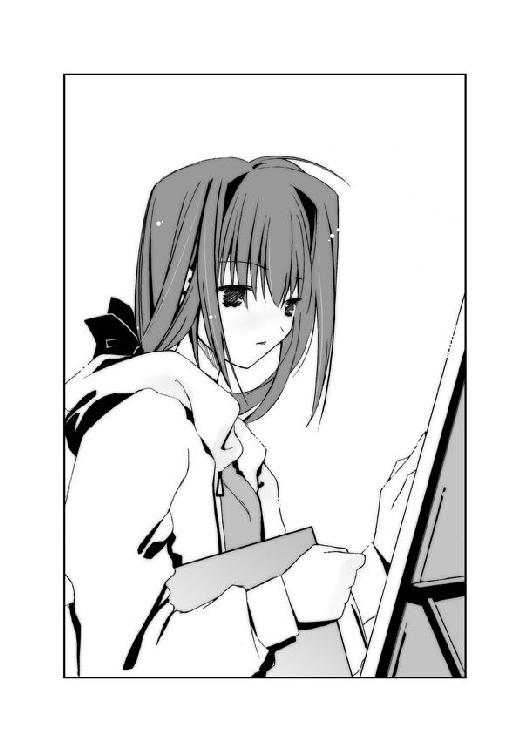
〝虫〟の脚が、詩歌を襲った。
どこを殴られたのかも、分からなかった。抱きしめた大助の絵もろとも、壁に激突する。
詩歌は、力なく床に倒れる。すでに気力も枯れかけていた。
懐から、小さな紙包みが床に落ちた。
氷鉋市で出会った優しい女性からもらった、チョコレートだ。
「か、確保しろ！」
誰かの声を聞きながら、詩歌は意識を失った。
4.08 初季 Part. 6
初季の視界が、赤く染まった。
頭を衝撃が走り、ゴーグルがちぎれ飛ぶ。同化を解かれ、ただの鉄の塊となったゴーグルが地上に落下していく。
だが、初季は浮かべた笑みを消さない。
急加速した後方を、胴体の長い〝虫〟の顎が通り過ぎた。だがすぐに大勢の敵に回り込まれる。急角度で旋回した初季の足を、一体の〝虫〟の鋭い爪がかすめた。
敵。敵。敵──。
視界は、中央本部の〝虫〟で埋め尽くされていた。飛行能力を持つ〝虫〟に加え、特殊型の虫憑き、さらに遠距離から攻撃してくる射撃部隊までもが初季を包囲していた。
氷鉋市の街並みが、はるか下方に見えた。地上から見たら、〝虫〟どうしの戦いも争う鳥の群れにしか見えないのかもしれない。
初季は上昇し、敵の包囲を抜けようとする。
「っ......！」
だが、背中から強烈な風が襲った。初季の翅の動きが一瞬、鈍くなる。
「あっ......！」
動きが止まった隙を狙って、飛行部隊の〝虫〟が初季の肩に喰らいつく。鋭い牙が肉に食いこみ、脳髄を突き抜けるような痛みに襲われる。
〝虫〟が頭を振り回し、初季を宙に放り投げる。地上に向かって墜落する初季を、他の〝虫〟からの一斉攻撃が襲う。
「......んああっ！」
初季は気力を振り絞り、翅を羽ばたかせる。急加速した初季を攻撃がかすめていく。
「ああああっ！」
スピードを上げ、初季は一気に包囲網を突破する。飛行部隊が初季を追い大移動する。
詩歌や夕たちと別れて、どれくらいの時間が経っただろう。まだ数分しか経っていないような気もするし、何時間も過ぎたような気もする。
ゴーグルを失った初季の目に、冷たい風が吹きつける。血が目に入り、片眼はほとんど見えなかった。骨が折れたのだろう、〝虫〟に嚙みつかれた右肩に力が入らない。負傷した左脚の感覚も失っていた。流れ出した血は、ほぼ全身を赤く染めていた。
だが、初季は一瞬たりとも笑みを崩さなかった。
「まだだよん......！ アンタたちの攻撃なんて、ぜんぜん......効かないよぉ......！」
敵を挑発するように、空中を蛇行する。飛行部隊がいっせいに攻撃をしかけてくるが、初季は傷つきながらも避け続ける。
「アンタたちは誰も......無指定で弱っちぃアタシから、何も奪えない......！ あぅっ！」
笑みを浮かべる初季が、弾き飛ばされる。新たな掩護部隊だろう。横手からやってきた〝虫〟の体当たりをまともに喰らう。
「っっ......！」
体勢を崩した初季を、飛びかかった二体の〝虫〟が両側から押し潰す。胸のあたりから、骨が軋む嫌な音が聞こえた。目を見開いた初季の口から、血の糸が垂れる。
「あ......」
つなぎとめていた糸が、切れた。意識が混濁し、地上へ向かって頭から落下する。
手足がピクリとも動かなかった。指一本、初季の意思に反応しない。かすんだ視界の中に、なおも初季を追って下降する敵の大群が見えた。
疲労と傷に加え、〝虫〟の力を使いすぎた。墜落する初季の脳裏に、過去の思い出が浮かんでは消えていく。
──島に、帰らなきゃ......。
初季の耳元で、青播磨島の波の音がした。
海から吹く風が、とても心地よかった。初季の特等席だった丘から見る島の景色は、なにもかもがゆっくりと動いていた。風に揺れる木々、波間にたゆたう漁船、他愛ない話で談笑する島民、そしてくすんだ色の診療所。
いつの間にか、初季のとなりに一人の青年がいた。
──〝先生〟......。
初季は笑いかける。
青年もまた、笑っていた。だがその笑顔は疲れ切っていて、寂しげだった。
ふいに、青年の姿が闇に染まった。
青年だけではない。島の光景、すべてが黒い炎に包まれていく。
初季は手を伸ばす。何かを叫んだはずだが、声は聞こえない。何も聞こえない。
やがて完全に暗闇に包まれた空間に、初季の手だけがあった。何かをつかもうとしているのに、何かを取り戻そうとしているのに、何も見つからない。
──アタシだけが......アタシなんかが生き残っちゃって、ごめんね、みんな......。
何もつかめない手が、空を握る。
──でもね、〝先生〟......。
意識までも闇に沈みそうになる直前、初季は口元をほころばせる。
なにか、ある。
闇の向こう、はるか向こうに小さな何かが見える。
──アタシ......新しい夢を見つけたんだよ......？
それは、かすかな光点だった。
ほんの小さな、今にも消えそうな光だった。
一瞬、ある光景が見えた気がした。
二人の少女が、自分に向かって手を伸ばしていた──。
初季の耳に、風の唸りが聞こえた。指先がピクリと反応するのが分かった。
初季は、空に向かって手を伸ばしていた。
開いた手のひらの向こうに、落下する初季を追う〝虫〟の群れが見えた。
「......っ！」
初季は体をひねった。傷ついた四枚の翅を拡げ、力のかぎりに羽ばたく。
減速する初季の眼前に、地面があった。
四肢を使って地面に着地する。──そこは、土が剝き出しになった広い土地だった。公園かなにかのようだ。
初季は空を見上げる。
壮絶な笑みを浮かべていたのだと思う。間一髪で墜落死をまぬがれた初季を見て、白コートたちが顔色を変えたのが分かった。
「死なない......！ 死ぬもんかぁ......！」
両手両脚で地面を蹴り、水平に飛ぶ。
「まだまだ、これからなんだよん！ これから、アタシはあの女に復讐してやるのぉ！ そしてまた、あの島に──」
地上すれすれに飛行する初季の視界に、佇む人影が映った。
数人の人間が、広場に立っていた。
血で赤く染まった初季の目が、先頭にいる人物を捉える。
──その女は、満面に笑みを浮かべ拳銃を構えていた。
銃声のあと、初季は自分が地面に叩きつけられたのが分かった。
4.09 夕 The last
「──ねえ、貴女の夢をきかせてくれない？」
夕の目の前で、少女が手を伸ばした。夕を誘うように。
「利菜......？ まさか、そんな......」
となりで、有夏月がうわごとのように呟いた。
背後で人の気配が生まれた。夕たちを追ってやってきた中央本部の局員たちだろう。
「レイディー・バード......！」
「そんな、死んだはずじゃ──」
局員たちのざわめく声が聞こえた。
少女──立花利菜が、微笑む。ブレザーを着た肩に、紫色の明かりが舞い降りた。
アゲハ蝶だ。淡い燐光を纏った蝶々に、夕は目を奪われていた。
「レイディー......バード？」
夕は、利菜に歩み寄っていく。
「待って、夕......！」
有夏月が夕の腕を摑んだ。有夏月は、利菜の肩にとまったアゲハ蝶を見ていた。
「違う──」
少年の顔に、畏怖が浮かんでいた。
「あれは、利菜じゃない......利菜は、あんな笑い方をしない。あれは──夕っ！」
夕は、有夏月の腕を乱暴に振り払った。
「邪魔しないで......！」
「......夕？」
「届けなきゃ......レイディー・バードに......！」
有夏月が、目を見開いた。利菜が口元に微笑を浮かべる。
「ダメだ、夕！」
止めようとする有夏月を、夕は憎悪とともに睨みつける。
有夏月も、敵だ。
夕からディスクを奪おうとしている。これはレイディー・バードか〝かっこう〟にしか渡してはいけないのに──。
夕は地面を蹴った。
利菜が微笑する。制服を着た少女の体から、紫色の粉が噴き出す。
粉を浴びた白コートたちが、徐々に表情を失っていく。
「う......夕......！」
有夏月もまた、紫色の鱗粉の影響を受けていた。顔を歪め、地面に手をつく。何かに耐えるように、歯を食いしばる。
白コートたちが、一人残らずその場に立ちつくす。夢遊病者のような表情で、利菜に走り寄る夕をぼんやりと見つめている。
夕は利菜の胸に飛び込んだ。プレザーを着た利菜から、紫色に輝く粉が散った。粉を吸い込んだ夕の胸に、安心感がこみ上げる。
「あたしに会いたかったんでしょう、夕？」
利菜が笑んだ。
夕も笑みを浮かべる。
やっと出会えた。
数日間、不安と恐怖に耐えてここまで来た。痛い思いもしたし、悲しい思いもした。それもこれも全部、この人と会うためだ。
利菜の腕に抱かれ、甘い陶酔感が夕を包み込んでいた。
──あれ？
夕の頭のどこか、冷静な部分が囁いた。
センティピードと出会った。詩歌と出会った。初季と出会った。
大切な人たちと出会い、助けられ、ここまでやって来た。
しかし、今にも安堵とともに消えかかっていた最後の理性が、そっと耳元で囁いた。
──ここまで来たのは一体、どうするためだったっけ......？
ディスクを両手で握りしめたまま、心中で呟く。
利菜が夕の体を反転させ、有夏月たちへと向き直らせる。背後から、利菜の冷たい腕が夕を抱きしめる。
「さあ......教えてちょうだい？ あなたに生まれたばかりの、甘い夢を......」
夢──。
夕は、思い出した。
そうだ。夕は確かに、夢を抱いた。
詩歌や初季との出会いが、夕に心からやりたいことを生み出した。どれだけ苦労しようと、何年かかろうと必ず果たしたい想い──それは夕自身が思い描いた夢だ。
「答えちゃいけない......夕......！ 答えたら、君は......！」
頭を押さえて唸る有夏月の背中に、〝虫〟の爪が突き刺さった。
「うああっ......！」
中央本部の局員が、有夏月を攻撃したのだ。有夏月の肩を、〝虫〟の鋭い爪が貫通していた。
「なっ......？」
倒れ、顔を上げる有夏月を白いコートが次々とまたいでいく。十数人からいた局員がすべて、利菜と夕を守るように立ちはだかる。
利菜が夕の耳元で、クスリと微笑した。
「さあ、夕......きかせてちょうだい？」
夕は、ゆっくりと口を開く。
言わねばならない。夕が思い描いた夢を、口にしなければならない。夕はそのために、ここまでやって来たのだ──。
「う......あああああっ！」
有夏月が、吼えた。
膝をついた少年の横で、黄金のカゲロウが二股の尾をしならせる。
数え切れないほどの光線が、夕暮れの空き地を射貫いた。白コートたちの横を抜け、夕の頰をかすめ、一発のこらず利菜を貫く。
「ひどいわね、エフェメラ......あたしを攻撃するなんて......」
夕は、利菜の顔を見上げた。
少女の顔が崩れ、紫に光る粉が噴き出していた。有夏月が怒りに顔を歪める。
「お前の遊びで利菜を汚すのは、許さない......〝大喰い〟！」
紫色の燐光が、弾けた。
利菜の顔があとかたもなく消え去る。──かわりに夕を抱いていたのは、まん丸いサングラスをかけた美女だった。すぐそばにいた夕には、サングラスの奥にある女性の瞳が虹色に揺れているのが分かった。
「強くなったわね、緒方有夏月くん」
〝大喰い〟の赤い唇が歪んだ。
同時に、白コートたちがいっせいに有夏月を攻撃する。
「くっ......！」
目の前で繰り広げられる攻防を、夕はぼんやりと眺める。
「さあ、教えて......あなたの夢は、なに？」
〝大喰い〟の甘い声が、夕の心の奥に秘められた想いをくすぐる。
夢を口にしたい。声のかぎりに、自分の想いを叫びたい。
「目を覚ませ、夕っ！ 君は虫憑きになっちゃいけない！」
白コートたちを牽制しながら、有夏月が叫ぶ。
──虫憑きになっちゃいけない......？
もう一人の夕が、耳元で囁いた。
──どうして......？
夕は思い出す。
──だって、詩歌さんと初季さんは......。
だが、思い出しかけた記憶も、〝大喰い〟の甘美な声が覆い隠してしまう。
「さあ、夕......あなたの甘い夢を、私にちょうだい？」
──......。
夕の理性が、沈黙した。
「私の......夢は......」
呟きかけた夕は、一つの黒い影に気づいた。
「良い子ね、夕。さあ、私にあなたの夢を──」
笑みを含んだ〝大喰い〟の囁きが、途中で止まる。
夕は〝大喰い〟から目をそらし、有夏月の背後を見上げていた。
「あなたは......だれ......？」
ぽつり、と夕は呟いた。
「！」
〝大喰い〟や有夏月、白コートたちの動きが止まる。
夕陽に照らされ、黒ずくめの人物が空き地を見下ろしていた。夕と有夏月が通り抜けてきた雑居ビルの上に一人、誰かが佇んでいる。風になびいたコートは黒い翼のようで、逆立った髪は逆光で角のように見えた。
──その漆黒の悪魔は、片手に大きな拳銃を握っていた。
「東中央支部！」
悪魔が、声を張り上げた。
地面にいくつもの長い影が生まれた。拳銃を握った人物の背後に、大勢の黒コートたちが姿を現したのだ。同時に雑居ビルに次々と〝虫〟が現れる。
「かかれっ！」
黒コートたちが、いっせいに身を躍らせた。傷ついた有夏月を飛び越え、白コートたちと戦闘をはじめる。たちまち怒号と悲鳴が空き地を飛び交う。
「......〝かっこう〟！」
有夏月が、黒色の悪魔を睨みつける。動けないほど傷が深くなければ、今にも飛びかかっていきそうな形相だった。
「かっ......こう......？」
夕は無意識に呟く。──思考能力を失った夕の心に、小さな波紋が拡がっていた。
〝かっこう〟が、有夏月を見下ろした。
いや、見くだしたと言ったほうが正しいかもしれない。有夏月が、顔を歪める。握りしめた拳に爪が食い込んでいた。
「僕は......お前に助けられるつもりなんてない......！」
有夏月が夕を──〝大喰い〟を睨む。
黄金のカゲロウが放ったレーザーが、空中に弧を描いた。
「ダメよ」
ぽつり、と〝大喰い〟が呟いた。
「親の食事を、邪魔しちゃ......ね？」
〝大喰い〟が、虹色の瞳を見開いた。
輝く鱗粉が、〝大喰い〟と夕を包み込んだ。放たれたレーザーが〝大喰い〟に命中する直前、鏡に反射したように折れ曲がる。進路をねじ曲げられた光線が、夕たちの左右にそびえる鉄筋の塔を射貫く。
支えを失った巨大な鉄塔が、ゆっくりと雑居ビルに向かって傾いていく。
鉄塔が倒れた。地響きが空き地を揺らす。
しかし〝かっこう〟は一歩も動かなかった。足元から数十センチと離れていない位置へ崩れ落ちた鉄塔を、振り向きもしない。
「うわ......ああああっっ！」
空を見上げた黒コートたちが、悲鳴を上げた。
夕陽が姿を消し、空き地に暗い影が落ちていた。有夏月もまた上空を見て、言葉を失っている。動じていないのはただ一人、〝かっこう〟だけだった。〝大喰い〟を睨んだまま、目を離さない。
桜架市の空を、黒雲が覆っていた。
否。黒雲ではない。
「......」
ぼんやりと顎を持ち上げた夕は、大空に浮かんだ巨大な眼と目が合った。
空を埋め尽くしていたのは、紫色のアゲハ蝶だった。大きい、という言葉ではとても足りない。桜架市どころか氷鉋市、赤牧市の空まで覆い尽くすような、とてつもなく壮大な蝶々だ。紫色に輝く四枚の翅のそれぞれに、人間の眼のような模様が浮かんでいる。
「っっ！」
コートを着た人々が、体をのけぞらせる。
アゲハ蝶の翅に浮かぶ巨大な眼が動き、夕たちを見下ろしたのだ。
「うああああっっ！」
「があ......ああぁあぁああっ！」
「はあっ！ はあっ！」
コートの色をとわず、その場にいた局員たちが、体をかきむしる。雄叫びを上げ、近くにいた仲間に飛びかかる者もいる。
「食事の邪魔をするなんて......マナーを知らない子供のすることよ？」
虹色の瞳を輝かせ、〝大喰い〟が〝かっこう〟を睨む。
「ぐっ......こ......んな、バカなっ......！ 幻覚......？」
狂気に陥っていないのは、〝かっこう〟と有夏月だけだった。〝かっこう〟はわずかに唇を嚙み、有夏月は何かに耐えるように顔を歪めている。理性を奪われた夕には、何が起こっているのか分からない。
夕は、自分に向けられる銃口を見た。有夏月がハッとする。
「やめろ、〝かっこう〟......！ 夕まで巻き添えにする気かっ......！」
大空に浮かんだ四つの眼が、〝かっこう〟たちを見る。
「うああっ......！」
有夏月が、苦悶の表情を浮かべる。金色のカゲロウの躰が音を立てて押し潰されていく。
夕には、見覚えのある光景だった。
それは純白の雪こそ見えないものの、詩歌の能力と同じ──。
「〝虫〟が......壊れる......！」
〝大喰い〟が、唇が触れるほど夕の耳元で囁く。
「さあ、貴女の夢をきくために、たくさんの人が集まってくれたわ」
虹色の双眸が、四つの巨大な眼が、夕を見た。
「夕......貴女の素敵な夢を、きかせて？」
夕は〝かっこう〟を見る。
彼に会うために、ここまで来た。
──おめでとぉ。
──おめでとう。
初季と詩歌の笑顔が、思い浮かんだ。
二人は夕の何に対して「おめでとう」と言ってくれたのだったろう？
思い出す。
ディスクを握る手に、力が込められた。
夕には、やらなければならないことがあった。塾の帰り、あの瞬間に振り返っただけで始まった三日間。最初は自分でも迷い、恐怖していた。
だが、今は違った。
詩歌と出会い、初季と出会い、夕は変わったのだ。
初季から、プレゼントをもらった。まったく信じられない、バカげた方法で手に入れたプレゼントだった。
だが、嬉しかった。嬉しすぎて、涙が出た。
「私の......夢は......」
夕は気づいた。
〝かっこう〟の視線は、〝大喰い〟を見ていない。他でもない、夕を見つめていた。
ゴーグルで隠した少年の表情の意味を、夕は気づいた。何も語らず、まっすぐに自分を見る表情を見間違えるはずもない。
最後に見た詩歌と初季と同じ──夕を信じている顔だった。
夕は、〝大喰い〟の虹色の瞳を見つめ返す。
「──あんたなんかに、教えてあげない」
丸いサングラスの奥で、女の双眸が見開かれた。
夕の夢は、叶えるその時まで誰にも語らない。そう、自分自身で決めたのだ。
〝かっこう〟にディスクを渡し、初季のネックレスを再び見つけ、いつか二人に胸を張って会いに行くのだ。その時はじめて、詩歌と初季に語ろう。二人のおかげで見つけた夢を。最高の笑顔とともに。
それが、夕の夢──ゆずれない願いだった。
空き地を、突風が吹き荒れた。
足元から吹き上がる風が、空を埋め尽くす巨大なアゲハ蝶を大空へ押し返していく。地上を見下ろす四つの眼を、橙色の夕陽が撃ち抜いた。
紫色の鱗粉を撒き散らし、大空を再び夕焼けが支配する。
「ど......どうなってるんだ......？」
有夏月の呟きが、空き地に響く。悶え苦しんでいた局員たちが、アゲハ蝶が消えた空を呆然と見上げていた。
夕の首筋に、冷たい吐息がかかった。
〝大喰い〟が夕の顎を撫で、虹色の眼を細めていた。
「また会いましょう、夕」
微笑を浮かべた〝大喰い〟は、〝かっこう〟を見上げていた。
〝かっこう〟は拳銃を構えたまま、微動だにしない。
「貴女の夢が、もっともっと美味しく熟れた頃に......ね？」
歪んだ笑みを浮かべる女が、紫色の燐光に包まれる。
弾けるように、光が散った。夕の背中から、女の感触が消える。
「消えた......？」
呆然と唸る有夏月。
〝大喰い〟の姿が消え、夕の頭の中にかかっていた靄が晴れていく。
誰もが力尽きてその場に立ちつくす中、〝かっこう〟が建物から飛び降りる。拳銃を背中にしまい、夕に向かって歩いてくる。
「か、〝かっこう〟......その子は......！」
有夏月が止めようとする。だが傷が深いのだろう。立ち上がることができないようだ。
夕の心臓が、高鳴っていく。
自分に向かって歩み寄ってくる少年を見て、胸いっぱいに様々な感情が蘇っていた。
自然と、夕の足は〝かっこう〟へ向かって歩いていた。
何を言おう。
何て言えば、彼に伝わるだろう。
この数日間で、夕が受け取った様々な想い。様々な夢──それらすべてを夕が彼に伝えなければならない。
どこにでもいるただの中学生だった自分が、ここまで来るのにどれだけの想いを受け継いできただろう。
夕と〝かっこう〟が立ち止まり、間近で向かい合う。
──ごめんなさい......詩歌さん、初季さん......。
心の中で、謝る。
「これ......〝かっこう〟さんに......渡すために......私たち......」
両手でディスクを差し出す。
だが夕は、〝かっこう〟の顔を見ることができなかった。
ディスクを持つ手が、震えていた。
──ここまできたのに、私......堪えきれませんでした......。
溢れ出す涙が、夕の声までも震わせていた。
今も戦っているはずの初季の姿が、思い浮かんだ。
「......初季さんを......助けてあげてください......お願い......」
それだけを言うのが、精一杯だった。
嗚咽を漏らす夕は、両手が軽くなったことにも気づかなかった。
「ありがとう」
夕は、顔を上げた。
いつの間にか、ディスクが自分の手から少年へと渡っていた。はじめて聞いた時とはうって変わって、優しい声だった。少年の暖かい手が、夕の顔から涙を拭く。
自分を見つめる少年の顔つきが、和らいでいた。だがそれも一瞬のことで、すぐにまた鋭く口元を引き締める。
「あとは、まかせろ」
力強い声で言い放ち、少年が踵を返す。
「......！」
今度こそ、本当に限界だった。夕の視界が、涙で何も見えなくなる。遠ざかっていく〝かっこう〟の背中を確かめることもできない。
足早に去っていく〝かっこう〟を追い、特別環境保全事務局の局員が全員、空き地を去っていく。朦朧としていた白コートたちも、黒コートたちに連れて行かれる形で姿を消す。
「やりました......詩歌さん......初季さん......」
今すぐに倒れて気を失ってしまいそうだったが、そうはいかなかった。
赤牧市で、センティピードという少年からディスクを受け取った。
詩歌と出会った。
初季と出会った。
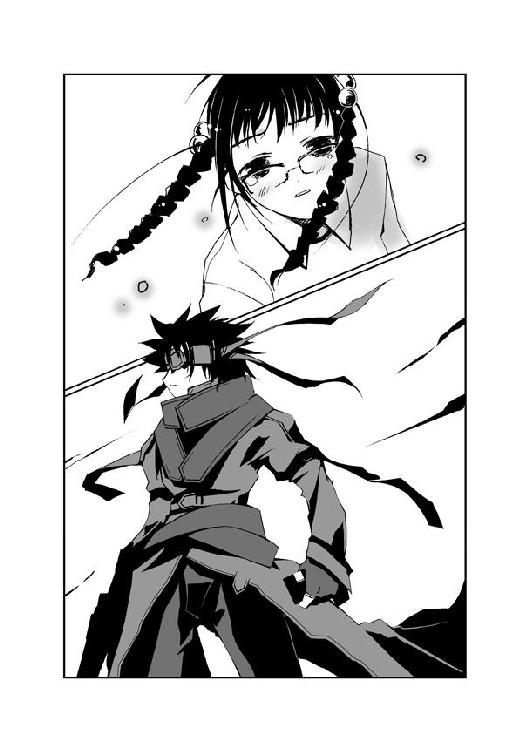
二人に助けられ、信じてもらって、ここまでやって来た。
〝かっこう〟に、夕の手で色々な想いがこもったディスクを託した。
そして、今──あと一つだけ、とても大事な仕事が残っていた。
「やりました......詩歌さん、初季さん！ 私、ちゃんと〝かっこう〟さんにディスクを渡しました！」
──第一、どうやってお互いの成功を知らせるんですかぁ......。
──うーん......大声で叫んでみる？ 聞こえるかもしれないよん。
叫んだ。
詩歌に聞こえるように。初季に聞こえるように。
誰もいなくなった空き地で、夕は声のかぎりに叫んだ。
「〝かっこう〟さんに、ディスクを渡しました！ だから......だから、二人とも......！」
声が、小さくなっていく。
その場に、ペタリと座り込む。溢れる涙を、両手でおさえる。
「だから、二人とも......死なないで......」
夕の呟きは、静まりかえった空き地に響いて消えた。
4.10 詩歌 The last
声が聞こえる。
誰かが叫ぶ声。
悲鳴と、怒号。何かが砕ける音。
響き渡る断末魔は、〝虫〟のものだろうか？ 一つや二つではない。
「お前たち......まさか、〝むしばね〟......！」
誰かの声も、すぐに消える。
そして静寂が訪れた。
詩歌は、まぶたを開く。
どうやら美術室の壁に叩きつけられ、気を失っていたようだ。あんまり走りすぎたせいで、心臓が止まってしまったのかと思った。だが、それが実現するのも遠くないかもしれない。脈打つ自分の鼓動の音が聞こえた。あまりに小さく、今にも消えそうな音だ。
美術室の床が、見えた。
倒れて動かなくなった白コートたちが視界に映った。
詩歌は顔を上げようとしたが、できなかった。本当に最後の一滴まで体力を使い果たしてしまったようだ。手足が動かないのはもちろん、視界が霞んでいた。
「立ちなさい、〝ふゆほたる〟」
低い声が聞こえた。それが自分に向けられたものだと理解するまで、数秒かかった。
「すべて、君自身が招いたことだ。その痛みも、苦しみも。〝虫〟を使って敵を駆逐すれば、君自身の苦痛はもっと少なかっただろうに......君が選んだんだ。他人よりも、自分が傷つくことを」
詩歌は首に力を入れる。だが、どうしても頭は持ち上がらなかった。
「こっちを見たいのか？ それくらいなら、手伝ってやろう」
別の声がした。
詩歌の目の前に手が伸びた。顎を支え、角度を変えられる。今にも閉じてしまいそうな視界に、二人の人物が映った。
一人は、白髪が混じった壮年の男だ。スーツを着た姿は企業の会社役員といった感じで、ある程度の地位にいる人物なのだろうと思った。精悍な顔つきをしているが、詩歌が顔を上げたことでなぜか目をそらした。
もう一人は、少年だった。髪を茶色に染めた外見は、十代半ばに見えた。床の上の詩歌をじっと見つめている。
「立ちなさい、〝ふゆほたる〟」
目をそらしたまま、壮年の男が言った。
「これから、君がどんな意志を持ってどのような道を歩いていくのかは分からない。ただし、これだけは言える。君を待っているのは、これまで以上に辛く厳しい現実だ。救いがあるようにも思えない。絶望しかないのかもしれない。それが嫌ならば、そのままでいなさい。今ここで君の〝虫〟を殺し、楽にしてあげよう」
「......」
詩歌は、視線を動かす。今ごろになって、自分がまだ大助を描いた利菜の絵を抱きしめていることに気づいた。
「う......ぶき......」
詩歌の口から、かすれた声が漏れた。
壮年の男がちらりと詩歌を見て、またすぐに目をそらす。
「そう、我々は白樫初季の依頼で君を迎えに来た。以前にある任務で出会った我々〝むしばね〟と密約を交わして以来、彼女はずっと復讐の機会を狙っていた。〝むしばね〟メンバーの捕獲を見逃すかわりに、復讐を手伝えと......彼女と我々の目的は、同じ。本来なら、君がここで目的を果たした時点で、そのまま中央本部に君を送り込むつもりだった。君と中央本部を共倒れにするのが目的だ」
「......」
「だが、直前になって彼女からの依頼内容が変わった。彼女から君に伝言がある」
淡々とした口調で、しかし詩歌を見ることなく男が『伝言』を口にする。
「......！」
詩歌は、唇を嚙んだ。
両目から、涙が溢れ出す。
ありがとう。
ありがとう、初季。
私を信じてくれて。私の願いを叶えてくれて。
詩歌の胸に、熱いものがこみ上げる。その気持ちは、倒れた詩歌に小さな力を与えてくれていた。
「安息を求めるならば、もう二度と立ち上がらないほうがいい。今のような状況を、君は今まで何度も経験したはずだ。この先、その繰り返しにならないとはかぎらない」
男の言う通りだった。
詩歌はこれまで、何度も繰り返してきた。
小学生の頃、虫憑きになった。特別環境保全事務局に追われ、〝かっこう〟と出会って欠落者になった。
数ヶ月前、大助と出会い、この街、この学校で再び倒れた。特別環境保全事務局に捕まり、何ヶ月も外界から隔離されることになった。
そして今、力尽きて倒れている。
詩歌はもう、疲れ切っていた。
この先、どれだけ同じことを繰り返していくのだろう。夢を思い出しては傷つき、疲れ果てて倒れる......この苦しみを永久に繰り返していくだけなのかもしれない。
だが、ただの繰り返しではないことがあるのだ。
たった一つの想いが、諦めそうになる詩歌を何度でも立ち上がらせるのだろう。
「......」
純白の蛍が、詩歌の頭の上に舞い降りた。
詩歌は、自分の〝虫〟を見つめる。脳裏に、今までに出会った人々の顔が思い浮かぶ。
利菜と出会った。
〝かっこう〟と出会った。
夕と出会った。
初季と出会った。
そして──。
──来年、また待っていてほしい。
一番、大切な出会いを、思い出す。
詩歌は色々な人と出会ってきた。それは、たんなる繰り返しじゃない。
「......っ！」
力を込めると、体全体が悲鳴を上げた。
だが詩歌は諦めない。体力など、ここに来るまでに使い果たした。気力もすでに枯れ果てている。詩歌に残った力など、あるはずがなかった。
──今まで、大切だと思える出会いがあった。
彼らとの出会いが、約束が、詩歌を何度でも立たせるのだろう。こんなにも弱く、今にも諦めてしまいそうな詩歌に力をくれるのだろう。
繰り返しだろうと構わない。
だが、出会いも繰り返していく。
その中にはきっと、〝再会〟もあるはずだ。
詩歌は、出会っていく。
だから、立ち上がる。
彼らとの出会いにこそ、自分の夢──自分の居場所があるはずだと思ってしまうから。
「会いたい人が......いるんです......」
床の上にしっかりと二本の脚で立ち、詩歌は男を見つめる。
強く抱きしめた絵の中に、詩歌が最も会いたいと願う人物がいる。
「私を待っていてくれる......そう信じられる人がいるんです......」
もう、詩歌の目から涙は消えていた。
「だから私は、行きます......連れていってください」
決して人と目を合わせない男が、頷いた。
「私は宗方槐路......〝むしばね〟の協力者だ」
それまで黙っていた少年が、口を開く。
「おれはアイジスパ。これからは君のそばにいるだろう。たとえこの先に何があろうと、ずっとだ」
詩歌は唇を嚙みしめる。
夕陽が降り注ぐ窓の外を見て、震える声を絞り出す。
「......初季、夕ちゃん......私、行くよ......」
──第一、どうやってお互いの成功を知らせるんですかぁ......。
──うーん......大声で叫んでみるとか？ 聞こえるかもしれないよん？
声が出ないかわりに、胸の中で大声で叫ぶ。
夕ちゃん、初季......！ 私、負けないから！ いつか絶対に夢を叶えるから......！
詩歌はようやく、確信した。
敵は数多で、そのどれもがこの先も詩歌の行く手を阻むだろう。
だが最大の敵は、自分の中に潜む弱い心だ。
みんな、壊れてしまえばいい──くじけそうになった時、そう思ってしまう自分自身にこそ、何よりも打ち勝たなければならない。
絵を抱きしめる腕から、力が抜けていく。
「私......行くよ......だから、二人とも......またいつか......」
倒れる直前に、アイジスパという少年に体を支えられる。
「目が覚めたらおれたちに命令をくれ、杏本詩歌。〝むしばね〟の新しいリーダー、スノウ・フライとして」
機械的な少年の言葉を聞きながら、詩歌は意識を失った。
4.11 初季 The last
「......かはっ......！」
速度を落とす間もなく、初季は地面に叩きつけられる。
土の上をバウンドし、長い距離を転がってようやく止まる。
「あぁ......っ！」
全身を激しく打ちつけ、初季は呻き声を上げる。
口の中に、砂利の嫌な感触が伝わった。だが味は鉄臭い血の味しかしない。
「ぐっ......うぅうっ......！」
だが、初季はすぐに顔を上げた。
折れた右手をひきずり、感覚がなくなった足を無視し、土の上を片手で這う。
拳銃で撃たれた翅が、背中で暴れ出す。弾かれたように、初季の体からカラスヤンマが分離する。初季が進んだあとの地面に、血の軌跡が描かれる。
「うっ......あああぁああっ......！」
吼え、初季は這っていく。
「魅車......八重子ぉっ......！」
特別環境保全事務局中央副本部長、魅車八重子が笑みとともに初季を見下ろしていた。
取り巻きの白コートたちが、初季をいっせいに取り囲む。八重子のとなりにいるのは彼女の腰巾着の管理官、猪瀬だ。
三年間、耐え続けてきた。
胸を引き裂くような復讐心を抑えつけ、中央本部に忠誠を示してきた。
だが今の初季に、自分を抑える自制心は残っていなかった。土と血で汚れきった顔を上げ、憎き女を睨む。
初季から故郷を奪った女。
初季から初恋の人物を奪った女。
初季からすべてを奪った女。
この手で絞め殺したとしても、まだ怒りが収まるとは思えない。三年間、どうやって苦しみを与えてやろうか、ずっとそれだけを考えて生きてきた。復讐することだけを夢見て、彼女の命令に甘んじてきた。
すべては、この日のために。
すべては、復讐のために。
怒りと憎しみと孤独と痛みと空虚、数え切れない激情に耐え続けてきた。
「返せぇ......！ アタシの島......アタシの兄姉......アタシの〝先生〟ぇ......！」
八重子は拳銃を懐にしまい、初季の前に腰をおろす。
「私の可愛い子......少し、悪戯がすぎちゃいましたね？」
ジュースをこぼした子供をたしなめるような口調で言い、にっこりと八重子が微笑む。
「......ろしてやるぅっ！」
初季は八重子の髪につかみかかる。
だが──。
「身をわきまえなさい？」
八重子が、笑みを深める。あまりに冷たい声、あまりに冷たい双眸が、初季を脳天から貫く。氷の鎖が一瞬にして初季の全身を搦め捕る。
三年前と同じ、鎖の笑みが初季を凍りつかせていた。初季だけではない。周囲にいる人間、すべてが青ざめた顔で八重子を見ていた。
「撃ってください、猪瀬管理官」
「......は？」
「この子の手と脚を、撃ってください。この子にはどれも必要ないですから」
猪瀬が、脂肪の詰まった体を震わせる。
「し、しかし......局員に対して──」
「猪瀬管理官？」
八重子が、猪瀬を振り向く。小太りの男の顔に、病気かと思えるほど大量の汗が浮かぶ。
猪瀬が懐から拳銃を取り出す。中央本部の局員の一人が、初季からコートをひきはがす。
「可愛そうな子......私の愛を、理解できなかったんですね」
悲しげな表情をし、八重子が初季の頭を優しくなでる。
銃声が響いた。初季は目を見開く。右脚が熱い棒を突き刺されたような衝撃に襲われた。
「あぁっ......！」
「いいえ、ごめんなさい。全部、私のせいですね。私の愛が足りなかったから......」
銃声が響いた。初季の左脚が、地面から跳ねた。
「っ......！」
「これからも、もっと貴女を愛してあげたかった。本当ですよ？」
銃声が響いた。初季は顔面を地面に打ちつける。体を支えていた左手が、力を失う。
「だから、貴女も私を愛してくれますね？ ディスクと〝ふゆほたる〟の在処を教えなさい。私を愛しなさい、〝からす〟」
銃声が響いた。体のどこかが撃たれたということは、分かった。順番からしておそらく右腕だろう。初季はすでに意識を半分、失っていた。
「し、死んだ......？」
猪瀬の恐々とした声が、聞こえた。
誰かに蹴られたようだ。ごろり、と初季は仰向けに転がる。
薄く開いた目に、クスリと可笑しそうに笑う八重子が映った。
「ジョークですか、猪瀬管理官？ 私がこんなにも愛してあげているんですよ？ ......このくらいで、この子が死んでしまうはずがないわ」
猪瀬の顔から、完全に血の気が引く。周りの白コートたちが、息をのんで後退る。
──分かっていた。
初季の視界が、暗転と明転を繰り返す。
現実と幻覚の狭間を揺れる視界に、八重子の笑みが浮かんでは消えていく。
──こうなることは、分かっていた。
魅車八重子に勝てる人間など、誰一人いるはずがない。彼女が本当に人間であるかどうか分からなくなる時すらあった。
ましてや、初季は虫憑きの中では誰よりも弱い。初季が八重子に勝てるはずもなかった。
「......な、なんだ？」
「この空は......アゲハ蝶......？」
「ふ、副本部長！」
猪瀬や白コートたちが騒ぐ声が聞こえた。
「落ち着いてください。......ふふ、滅びつつある蝶々が、どこかで生き足搔いているだけでしょう。とるに足りません」
八重子が笑う声が聞こえた。
異変よりも、八重子の笑みに恐れを抱いたのだろう。騒ぎがピタリと止まる。
魅車八重子が動じるところを、初季は見たことがない。初季だけではない、八重子が顔色を変えたところを見た人物がいるはずがない。鎖の笑みを持つ女は、微笑と偽りの涙、それしか見せない。彼女は誰をも愛し、誰からも愛されていると信じて疑わないのだから。
「き、消えた......」
「なんだったんだ、今のは......？」
また声が聞こえたが、初季にはどうでもよかった。
八重子に勝てるはずがない。
そんなことは他の誰よりも、初季自身が知っていたのだ。
だからこそ、〝ふゆほたる〟を利用しようと思った。絶対無比の彼女の力を。共倒れになろうがどうしようが、初季にとっては関係なかった。魅車八重子さえ殺してくれれば、〝ふゆほたる〟の身のことなど知ったところではなかった。
詩歌とはじめて出会った時は、心からそう思っていた。
復讐のためなら、誰を犠牲にしてもよかった。誰から恨まれようと、構わなかった。
だって、初季は一人きりだから。守るべき大切なものなど、何もなかったから。そんなものはすべて、八重子に奪われてなくなっていた。
──だから、想像もしていなかった。
夕と出会うなんて。
詩歌に惹かれてしまうなんて。
「ゆ......うたん......」
初季は、唇の端をかすかに持ち上げる。
まったく、自分でも笑ってしまう。
復讐のための道具が、初季にとって何よりも大切なものになってしまうなんて。
唯一の復讐の手段を、守りたいと思ってしまうなんて。
「しい......か......たん......」
だって、仕方なかった。どうしようもなかった。
二人は初季の帰りを待ってくれたから。
二人は初季を信じてくれたから。
初季は単純だから、そんなことをされたら彼女らを好きになってしまう。頭が悪いから、どうしていいのか分からなくなってしまう。
──〝先生〟......二人とも、これからもアタシのこと憶えててくれるかなぁ......？
心の中で、問いかける。
答えは分かり切っていた。バカな初季は、夕と詩歌を信じることしかできなくなっていた。
──アタシ、最高の復讐を考えたんだよん......褒めてよぉ、〝先生〟......。
初季の復讐は、まだ終わっていない。
身動き一つとれなくなった今、初季は笑いがこみ上げてくるのを感じた。どうしようもなく可笑しくて、どうしようもなく嬉しかった。
「あ......はは......ははっ......」
「〝からす〟？ 何がそんなに面白いの？」
微笑を浮かべた八重子が、初季を見下ろす。
八重子の笑みを見て、さらに笑いがこみ上げる。もう我慢できそうになかった。
「ふ、副本部長......！」
一人の白コートが、八重子に駆け寄る。そのまま八重子の耳元で何かを囁いた。
その内容は、初季には一言も聞こえなかった。
だが、次の瞬間──。
「......！」
八重子の表情に、変化が生じていた。
猪瀬以下、取り巻きの白コートたち、そして報告を持ち込んだ人物までも一人残らず、ぎょっとした顔で八重子を見た。
八重子の顔から、笑みが消えていた。はじめて見せた八重子の動揺の様子に、誰もが目を見張っていた。
初季の中で、懸命にこらえていた感情が爆発した。
「あーはっはっはっはぁっっ！」
初季は大声を上げて、笑い出す。
居合わせた全員が、驚いて初季を見る。
──やったよ！
──やりました！
夕の、詩歌の、叫ぶ声が確かに聞こえた。
「あーはっはっは！ ざまぁーみろっ！ 夕たんも、詩歌たんも、もう二度とアンタには捕まらない！ アタシと約束したもんねぇ！ アンタは何も、手に入れられない！」
痛みを忘れ、疲れも忘れ、初季は大口を開けて笑う。
「アンタはもう、何も手に入れられない！ あーはっはっはぁ！ ざまぁーみろ！」
八重子が、ゆっくりと目つきを鋭くしていく。
夕は無事に〝かっこう〟と会えたのだろう。いかに八重子といえど、〝かっこう〟に保護された彼女にやすやすと手は出せないはずだ。
一方、詩歌は利菜の絵を手に入れている頃だ。そして初季が連絡を取り合っていた〝むしばね〟のメンバーと出会い、共に桜架市を去ったはずだ。
──逃げて、詩歌たん。そしてもう二度と自由を奪われちゃダメだよん。それこそが、アタシの復讐なんだから......。
それこそが、詩歌あてに〝むしばね〟に託した伝言だった。
夕はディスクを届けた。
詩歌は無事に逃げ切った。
そんな二人を、初季は信じていた。
初季が考えた復讐は、最初から成功していたのだ──。
「あーはっはっは！ ざまぁーみろ！ アンタはもう、何も奪えない！ ははっ！」
高らかに笑う初季の両目から、大粒の涙が溢れ出す。
──やったよぉ、〝先生〟、みんな、アタシはみんなの仇を討ったよん！
「......」
八重子が、微笑を浮かべた。懐から小さな拳銃を取り出す。
──やったよ、夕たん、詩歌たん！ アタシの復讐は、大成功だよぉ！
笑いが涸れると、初季は体を持ち上げて地面を這い出す。
撃ち抜かれた手足を動かし、少しずつ八重子から離れていく。
「そうですね、〝からす〟。でも、もう一つだけ奪えるものが残っているんですよ？」
背後から、声が聞こえた。
初季は地面を這っていく。
あとは夕と詩歌との約束を果たすだけだ。
初季はここから逃げ、生き延びる。
それで三人の完全勝利だ。
「〝先生〟ぇ──」
地面を這う初季の視界が、闇に包まれる。
もう慣れてしまった。いつもの幻覚だ。──それが、〝虫〟に夢を喰い尽くされる寸前の危険信号だということは、もうだいぶ昔から知っていた。
「それが何か、分かりますか？ 〝からす〟......」
初季は暗闇に向かって手を伸ばす。
その手が。
やっと、それを摑んだ。
初季に向かって差し出された、優しい〝先生〟の手。
──〝先生〟......。
初季と〝先生〟の手が、重なった。
──私、勝ったよ。
笑みを浮かべる初季に対し、〝先生〟が笑った。
「さようなら、私の愛しい子」
銃声が響いた。
差し伸べた初季の手が、地に落ちた。
4.12 The others
──ゴーグルが、ディスクを呑む込む。
表面にノイズが生まれ、やがて映像と音声が始まった。
『第三期テスト終了。〝Ｃ〟の状態は？』
『まだ、いけます』
『よし。このまま第四期へ続行。欠落者ナンバー１から15までの記録準備』
『オールグリーン』
『〝Ｃ〟に電圧を負荷。〝Ｃ〟、徐々にパルス調整を行え』
『も......もう......こ、これ、以上は......』
『ナンバー６と９の脳波ロスト』
『続行する』
『く......う......』
『異変感知！ ナンバー５、１の記憶信号をキャッチ！』
『〝Ｃ〟！ 信号変換、映像化しろ！ ループさせて、ダミーの記憶を送り込め！』
『ううっ......！』
『......ダメです。ロストしました』
『〝ふゆほたる〟は、欠落者から蘇生したのだ。他の虫憑きが生き返らないわけがない......〝ふゆほたる〟が虫憑きでいるかぎり、この実験は続ける価値がある。いや、あるいは〝ふゆほたる〟以上の成果も期待できるのだ。──まあいい、はじめての成果だ。第四期の記録をディスクに保存』
『保存します』
『よし。......今日の実験はここまでだな』
『はい。以上を特別環境保全事務局中央本部、甲種〝は〟の六実験第四期の記録として正式に──』
『検体ナンバー５に異常発生！ 脳波覚醒を確認──うわああっ！ 〝虫〟です......！ 蟬が現れ......！』
『ナンバー１にも〝虫〟が......ムカデが現れました！』
『保存を急げ！ 〝虫〟の排除を最優先、ディオレストイの欠片を......！』
『しかし、あれはまだ──』
映像にノイズが混じり、プツリと消える。
画面に『lost a data』の文字が浮かび上がる。期限の三日を過ぎ、データが消去されたのだ。
ゴーグルから排出されたディスクは握りつぶされ、二度と同じ映像が流れることはなかった。
4.13 The others
銃声の余韻が、桜架市海浜公園に響き渡った。
魅車八重子がにっこりと微笑む。
八重子の足元で、白樫初季が倒れていた。そこまで力を振り絞って這っていったのだろう、初季の後方に血の痕が続いていた。
血にまみれた初季は、微動だにしない。泥と血に汚れた顔は蒼白になっており、呼吸をしていないのが分かった。
「......危ないですね、〝かっこう〟？ 狙いがそれたら、どうするんですか？」
八重子がこちらを見た。その手に収まっていた拳銃は、大助が放った銃弾によって弾き飛ばされていた。
「狙いなら、もうそれた」
大助は、八重子と向き合う。彼の背後には、十数人からなる東中央支部のエージェントたちが控えていた。傷ついた有夏月と、東中央支部長代理の五郎丸柊子も合流していた。柊子は大助の背中に隠れ、彼のコートをつかんでいる。
八重子の取り巻きたちが、身構える。
「それた？ 本当は、どこを狙っていたの？」
笑みを浮かべた八重子の問いに、大助は無言で自分のこめかみを人差し指で叩く。
八重子の笑みの質が変わる。「ひぃっ」と怯えた柊子が、大助の背中に顔を隠す。鎖の笑みを向けられ、局員たちが息をのんだ。
「ジョークが上手になりましたね、〝かっこう〟。土師支部長にならったのかしら？」
「貴様......〝かっこう〟！ 副本部長に向かって発砲するなど、どういう了見だい！ 五郎丸支部長代理！」
「ひゃ......ひゃいっ！」
大助の背中から、裏返った柊子の声が聞こえた。
「え、ええとですね。実はと申しますと──あ、その前に〝ねね〟さん。〝からす〟さんの治療をお願いできますか？」
「中央本部の局員にキミが命令をするな、五郎丸支部長代理！」
「すっ！ すみませんっ！ き、緊急を要すると思いまして！」
大助の後ろで縮こまる柊子の前を、一人の白コートの人物が横切る。倒れた初季のもとへ駆け寄ると、首筋に手を当てて脈を確かめる。
〝ねね〟が口を開ける。
歌声が、響いた。リィ......ンン、という鈴の音にも似た音が空気を震わせる。〝ねね〟と初季の周囲に淡く輝くキリギリスの輪郭が生まれる。鈴の音が響く中、〝ねね〟は初季に人工呼吸をはじめる。
「助かるか？」
大助が訊くと、〝ねね〟がピッと親指を立てた。大丈夫という意味だろう。
八重子が、柊子を見つめる。
「緊急とはいえ、東中央支部の統括地域に侵入したのは私たちの落ち度です。しかし、そうとはいっても不思議ですね、五郎丸支部長代理？ 私に向かって発砲するのを許可したのは、貴女ですか？」
大助の肩から、柊子が顔を出す。
「あ、はい、いえ......！」
「どっちですか」
「あの、ですね！ 局員に対する私刑は、確か禁じられているはずで......そのぅ......それにですね......」
「それに？」
「局長の緊急発令によって、命令系統に多少の変更が生じまして......」
「なんだって？」
声を上げたのは、猪瀬だった。
八重子はまったく動じていなかった。笑みを浮かべたまま、柊子を促す。
「どういうことですか？」
「あ、あの、出過ぎたことと思ったのですが、魅車副本部長と連絡がとれなかったので......局長に直接、意見をうかがいに行っちゃったりしたわけなんですが」
「連絡がとれなかった？ 貴女から連絡をうけたおぼえはありません」
「は？ あの、いえ、直通回線で電話を何度かおかけしたのですが......お返事がなかったもので、連絡不能と......」
「......もしかして、何度もかかってきてはワンコールで切れた非通知の電話でしょうか？ 相手の番号が分からなければ、こちらからかけ直しようがありません」
「ひ、非通知？ あ、あれぇっ？ あ......ほ、ホント、ホントだ......！」
「それじゃあただのイタズラ電話じゃないかい、五郎丸支部長代理。キミってヤツは......！」
猪瀬に叱られ、柊子が携帯電話をすばやくスーツの内側にしまう。──大助も連絡不能とは聞いたが、まさかそのような経緯だとは思わなかった。今さらだが、大助の内心に様々な意味で不安がひろがる。
「命令系統の変更とは、一体なんでしょう？」
「あ、は、はい！ ええとですね......〝始まりの三匹〟に関する重要性と、同対象との遭遇時における任務の優先順位について思うところがありまして......これまでは〝始まりの三匹〟を発見しても通常任務が優先され、本部からの命令が最優先されるとされていました。でも、このまえの千莉さん──〝火巫女〟の護送任務を見ても分かる通り、このままだと現場の局員に混乱をきたすかも、なんて思っちゃいまして......」
八重子は笑みを崩さない。だが猪瀬のほうは平穏でいられなかったようだ。言葉を挟もうとした猪瀬を、八重子の手が制する。
「なので、局長のもとへ意向をたずねに行ったんですが......私の意見を聞いてくださり、つい先ほど緊急時における命令系統の変更を宣言していただけました。すなわち──〝始まりの三匹〟との遭遇時に限り、本部の命令を超越して統括地域の支部の判断が最優先となります」
命令系統の変更。
柊子の言葉が示す意味は、大きい。これから先、それぞれの支部の統括地域に限れば、〝始まりの三匹〟を独自に追うことができるのだ。これまで絶対的な権力を持っていた本部が、その一角を崩されたことになる。
猪瀬が色めき立つ。
「バカな！ なぜ局長が......！」
「あのですね、最初は納得していただけなかったのですが......実は土師センパイ──土師支部長による提案だと進言しましたら、局長にも一考いただけたようで」
「土師君が目を覚ましたのか！」
猪瀬が、見るからに動揺する。魅車も笑みを消した。
「あ、いえ、またすぐに意識を失われてしまったんですけど」
柊子が愛想笑いとともに言う。
なんとも、分かり切った噓だ。
土師圭吾──本来の東中央支部長である彼は、二ヶ月前の戦いで重傷を負って以来、意識を取り戻してはいない。妹の千莉が毎日彼のもとへ足を運んでいるのを、大助は知っている。
「あ！ さっきのアレ、見ました？ 空いっぱいにアゲハ蝶が浮かんでた、アレ！ アレはどうやら〝大喰い〟によるものらしいんです。なにやら人間の意識を操る能力を持ってたみたいで、局長をお見かけした時......ご自分の部下に拳銃を向けていたので、もしかしたら〝大喰い〟に操られてるのかも！ なんて思いまして、〝かっこう〟さんに命令しちゃいました」
先ほどの発砲は、大助がとっさに行動した結果だった。柊子の口から出たのは、あとになって思いついた言い訳だろう。
「私は正常です」
「は、はい！ そうみたいですね！ ごめんなさい！」
「ごめんなさい、だって......？ キミは......」
呆れと怒りが入り混じり、猪瀬が顔を真っ赤にする。
だが、八重子はまったく表情を変えなかった。わずかに目を細めただけだ。
「しかし、アレですね」
大助の肩に手をおき、ひょっこり顔を出した状態の柊子が周囲を見回す。
「アレ？ アレとはなんです、五郎丸支部長代理」
「えーとですね、その、ひじょーうに言いにくいんですけど......」
「はい」
「いや、その......」
「五郎丸さん」
「や、やっぱりやめておきます」
「言いなさい。特別に、どんなことを言っても不問にしましょう」
「ほ、本当ですか？」
「ええ」
「なら......」
柊子が、いつもの愛想笑いを浮かべる。
「副本部長の完敗ですねぇ、これまた見事なまでの」
八重子の表情が、ピクリと動いた。
猪瀬をはじめ、周囲の人間が目を剝く。大助ですら、びっくりして柊子を振り返った。静まりかえった全員の目が、恐怖とともに八重子を見ていた。
だが柊子は、そんな一触即発の空気にまったく気づいていないようだ。へらへらと愛想笑いを浮かべ、さらに言う。
「あははは、無指定の虫憑きにコテンパンにやられちゃいましたねー。余裕を見せずにご自慢の殲滅部隊を出せばいいものを、いつもみたいに勝てると思ったばっかりに。これ以上ないくらい、どうしようもなく、無惨に──」
「柊子さん......そこらへんにしておいたほうが」
大助が制止する。「へ？」と柊子がとぼけた顔で彼を見る。
八重子を中心に、突けば破裂しそうな雰囲気が漂っていた。青ざめた顔の猪瀬が、じりじりと八重子から距離を置く。
だが周囲の恐怖とは裏腹に、八重子は表情を緩めた。こんなことくらいでは何のダメージもないと言わんばかりに。
「私は、次の仕事があります。失礼させていただきますね」
にっこりと微笑み、八重子が踵を返す。柊子が慌てて頭を下げる。
「あ、はい。お疲れ様です。......あ、あとですね、見たところ〝からす〟さんはすぐに動かすのも危険な状態なようですね。そんなわけで、こちらで一時お預りさせていただきます」
八重子が振り返る。だがその眼差しは柊子ではなく、大助を見ていた。
「あのディスクを見ましたね、〝かっこう〟？」
大助は隠すことなく答える。
「俺だけが見た」
「あんなものは、特環を混乱させるために〝むしばね〟が作った紛いものです。それくらいは、分かっていますね？」
「......」
無言の大助を一瞥し、八重子が去っていく。
猪瀬や白コートたちも去り、〝ねね〟の歌声だけが海浜公園に響く。
大助は倒れた少女に歩み寄り、顔をのぞきこむ。
「勝ったよん......あははぁ、楽勝だよぉ」
初季の寝言が、風に乗って空へと消えた。
エピローグ girls
赤牧市の朝は、今日もやってくる。
空は快晴、見渡すかぎり鮮やかな紺碧がひろがっていた。
気持ち良い風が吹いた。だが都会だけあって、空気が新鮮とは言い難い。だがそれもまた赤牧市の特色だろう。
二月も半ばを過ぎたとはいえ、気温は低かった。マフラーをした大助の口元から、白い息が伸びる。
歩道を歩く大助を、小学生の集団が小走りに追い抜いた。けやきの木が並ぶ通りは、通勤、通学途中の人々で埋め尽くされていた。
顔を上げると、こちらに向かって歩く少女が目に映った。
赤いメガネをかけた、中学生くらいの女の子だ。口元に浮かべた笑みが可愛らしい。だがよく見ると、少女の額にはバンソウコウが貼られていた。服からのぞく手首に包帯も巻いているようだ。
大助とすれ違う直前、メガネの女の子に別の少女が駆け寄った。
「夕！」
「あ、千絵ちゃん。おはよう」
「おはようじゃないわよ！ 何日も学校を休んで......昨日までどこに行ってたの？ 学校でも大騒ぎだったんだから！」
「えっと......ちょっと旅に」
「旅......？ なんだって急にそんな──あれ？ 夕、メガネ変えた？」
「えへへぇ、ラヴって感じでしょ？」
「あははっ、なにそれー。そうそう、今日の放課後にね。みんなで街に買い物......」
「ごめんね、私、また氷鉋市に行かなきゃ。探さなきゃいけないものがあって──」
大助は微笑し、夕とすれ違う。
ポケットから、小さな紙包みを取り出す。
可愛らしいリボンが巻かれたそれには、一枚のカードが添えられていた。
──〝かっこう〟くんへ。いつも迷惑ばかりかけて、ゴメンね。
頭をかき、包みをポケットに戻す。
名前はないが、誰があの教室に残したのかは、明白だった。
一般人の〝薬屋大助〟に渡すわけにはいかないという事情を分かってはいても、複雑きわまりない気分だ。
「なんで大助じゃなくて、〝かっこう〟かな」
苦笑する大助の耳に、携帯電話の着信音が響いた。二ヶ月前から変わらない、クロール・ライヴの人気曲だ。
『夕さんには会えました、大助さん？』
通話ボタンを押すと、いつもの間の抜けた声が聞こえた。早朝のためか、柊子の声はいつにも増してぼんやりとしている感じがする。
「ああ。元気そうだったよ」
『しばらくは中央本部の監視者がつくでしょうけど、生活に支障はないはずです。〝大喰い〟を拒絶できた珍しいケースですから、貴重な人材とは思いますが......そのことが知られたら、中央本部もこんなに穏やかな対処じゃ済まさないでしょうしね』
「あの子の戦いは、終わったんだよ。完全勝利でね。──まだ続くとしたら、あの子が自分で何かをしようとした時だけだ」
大助は笑みを浮かべる。
『〝ふゆほたる〟が残していったと思われる書き置きの通り、立花利菜さんの夕陽の絵を彼女あてに送りました。......いいんですか？ あの夕陽の絵と大助さんの絵......どっちも、大助さんの希望であの学校に残しておいたものなのに』
大助は、夕が消えた通りを見る。
あの画は、本当の持ち主に出会えたのだ。実を言うと先ほど夕を見た時に、少しだけ肩の荷が下りたような気がしていた。
詩歌のことも、同様だった。
彼女が本部の施設を脱走したと聞いた時、大助は動揺した。詩歌の身に何が起こったのか、何を思って逃げ出したのか──。
だが詩歌は大助の絵を持っていった。それは彼との約束を忘れていない何よりの証拠だ。
──俺も、待ち続けていられる。戦い続けることができる。
来るべき再会の日を夢見るのは、大助も詩歌と同じだ。二人の想いが変わらないかぎり、いつの日か必ずまた会える──。
「それより、柊子さんのほうこそ大丈夫？ 今回はかなり無茶をしたし、大変なんじゃ」
『大丈夫ですよきっと。私以上に無能な人間なんて、今の特環にはいませんから』
「......？」
『東中央支部は、以前の力を取り戻しつつあります。色々あったけど結局〝かっこう〟は健在。火種二号の緒方有夏月さん、〝月姫〟も加わり、不確定要素の多い秘種三号の千莉さん、〝火巫女〟もいます。ちょっとでも有能な人が支部長におさまっちゃったら、色々と欲が出てきちゃいそうなほどです。だから、私なんです。無能な人間に任せているかぎり、とりあえずは安心ですから。あははー、無能バンザイ』
電話越しに、柊子の愛想笑いが見えるようだった。大助は微笑する。
『詩歌さんを助けた人たち......もし〝むしばね〟だったら、これからが大変ですからね。また彼らと特環の戦いが始まるんでしょうか？』
「戦うのなんて、虫憑きなら誰だって変わりないよ。負けられないのもね」
通信を切る。
振り返ると、メガネの少女の決意を込めた声が聞こえた。
「今日の進路志望調査......私、桜架東じゃなくて、ホルス聖城の高等部を──」
大助は笑みを浮かべ、身を翻す。
中学生の少女たちの笑い声が、遠ざかっていく。
赤牧市の冷たい風が、青空へと舞った。
あとがき
半年間もお待たせしてしまいました。
待っていてくれた方、ごめんなさい。
そして待っていてくれて、本当にありがとうございます。
岩井恭平です。
『ムシウタ』もこうして無事に三巻を出せることとなりました。
今回も物語の中心は、新登場のキャラクターたちです。しかも女の子ばかり。
これまでに書いたものは、シリーズを問わず同じような形になっていると思います。狙ってやっているわけではなく、僕が書きたいように書かせてもらっている現状の結果です。
嬉しいことに、いただいたハガキやお手紙で多いのが『○○をもっと出せやゴラ（一部文章に誇張アリ）』というご支援のお言葉です。ありがとうございます。
もちろんこの先、どのキャラクターも再び作中に登場する機会があると思います。
今の段階で書き連ねてきたのは、様々な場所にいる人々。色々な思いを抱いた人々です。彼ら全員にそれぞれの物語があり、それらの物語が偶然にも交錯した瞬間をクローズアップして書いています。同じ瞬間にも、別の場所では別の物語が出会っているのだと思います。
この本を手にとっていただいた読者の皆さまにも物語があり、同時に他のあらゆる物語と交錯しているのだと思います。出会った人といっしょの物語を歩めるなら、とても楽しく素敵なことだと思います。
これからも登場人物たちは出会い、すれ違い、そして再会していくことでしょう。そのあたりをお楽しみいただければ幸いです。
......今作の説明をしようと思ったのに、なんでこんな文章になるかな......？
『ムシウタ』関連の話題で、もう一つ。
雑誌「ザ・スニーカー」で恐れ多くも連載がはじまってしまいました。
キーワードは〝助けて〟、〝ごめんなさい〟、〝もう許してください〟。
......ぜんぶ僕が執筆中に叫んでる言葉です。
短編とかメチャ苦手なんです。しかも連載て。
同期の人たちはなんであんなにズバズバ連載を書きこなせるのかと。そんでもってガンガン長編も出せるのかと。さらに、どうしてあんなに面白いのかと。僕のようなヘタレにはついていくのがやっとです。......ていうか、もうちょっと手加減してクダサイ......。
そんな僕が泣きながら書いてます。これでも頑張ってるんです。なんか薬屋大助の反抗期ぎみの時代にあった物語を書いてるみたいです......（内容説明はそれだけか）。
最後になってしまいましたが、ここからはお礼を。
担当をしてくださっている女井さんをはじめ、編集部の皆さま。毎度毎度こんな巻末でお礼をいってご機嫌をうかがった程度ではつりあわないくらい、お世話になっております。ありがとうございます。
イラストを担当してくださっている、るろおさん。毎度毎度、原稿を遅らせている作者に対し内心ブチギレしてることでしょう。それでも毎回、素敵なイラストを見せてくれるところが大人です。ありがとうございます。
こんな作者を見捨てず相手にしてくれる友人知人の皆さま。ありがとう。これからも末永くおつきあいください。でもパーティと称してカノジョの紹介ショーに誘い込むのはもうカンベンしてください。そのあと他の仲間と飲んだくれて次の日仕事にならないんで。
そして、やはり最大の支えである読者の皆さま。
この本を手にとってくれていることに、心から感謝いたします。
また別の形で皆さまと再会できるよう、努力していきたいと思います。
二〇〇四年三月
岩 井 恭 平
ムシウタ
03.夢はばたく翼
岩井恭平
角川スニーカー文庫
平成21年12月1日 発行
発行者 井上伸一郎
発行所 株式会社角川書店
〒102-8078 東京都千代田区富士見2-13-3
http://www.kadokawa.co.jp/
(C) Kyohei IWAI 2009